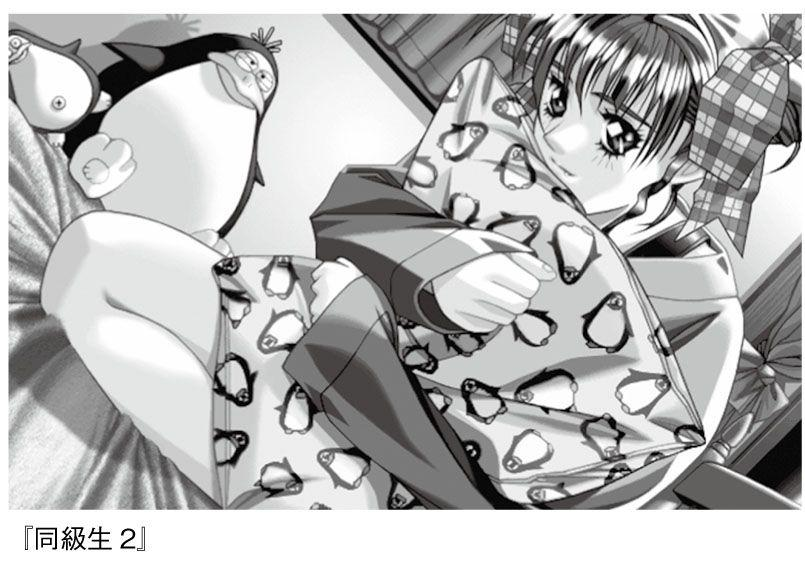
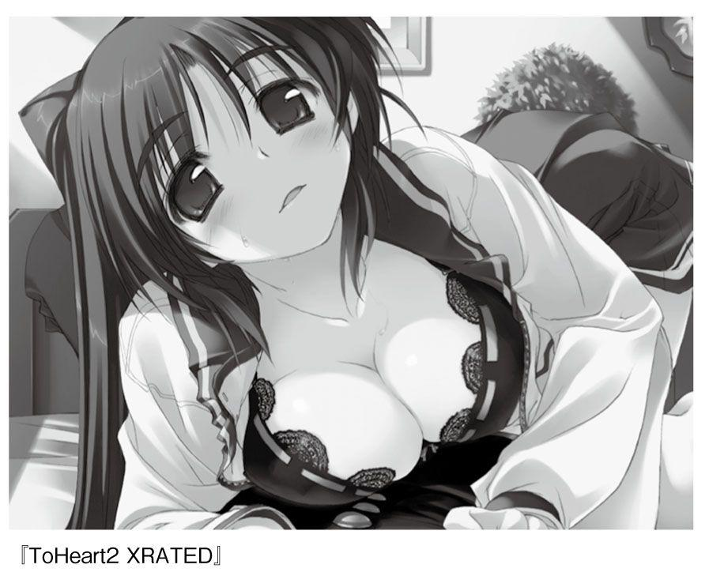

| エロゲー文化研究概論 | |
| 宮本直毅 | |
| (2013) | |
本コンテンツは紙の書籍に基づいて制作されました。
文中のページ数などもそのまま記載しております。
目次
■自らをときほぐすエルフ作品 ～鬼畜おやぢ三部作と『下級生』～
■斬新なシステムが光る『この世の果てで恋を唄う少女ＹＵ‐ＮＯ』
■ファンディスクの新潮流 ～「Ｌｅａｆ」アミューズメントソフト
■女装主人公が憧れのお嬢さま!?『処女はお姉さまに恋してる』
■虚淵玄とＴＹＰＥ・ＭＯＯＮ のコラボ小説『Ｆａｔｅ／Ｚｅｒｏ』
■貧乳はステータスだ、 希少価値だ！ 『ＣＬＡＮＮＡＤ』は人生！
■美「少女」ゲームばかりじゃない！ めくるめく熟女ゲーの世界
はじめに
ゲームについて話をしよう。ただし、そのゲームは「エロ」という冠をかぶっている。
とりあえずの定義として「主に18歳以上のユーザーに向けて制作される、性的刺激を提供する要素を含んだ電子的ゲーム」というくらいの......そう、俗に「エロゲー」と呼ばれるもののことだ。じゃなければ「アダルトゲーム」「成人向けゲーム」「美少女ゲーム」「18禁ゲーム」「Ｒ‐18ゲーム」「ポルノゲーム」「エッチゲーム」「ＨＥＮＴＡＩ ＧＡＭＥ」など、いろんな名前がある。呼び方でニュアンスに違いは出るけれど、とにかく日本国内の「それ」は二〇一三年初め現在、もう三十年を何年か越える時間を積み上げている。
三十年以上、ちょっとした長さだねー。振り返れば無数の作品があり、メーカーやクリエイターの方向性も十人十色。あまりの多種多様っぷりに、思わず「そもそもエロゲーとは何ぞ？」と本質や王道みたいなものを考えてみたくもなるけれど、まあそれは後回しだ。抽象的な話をするには、まず具体的な材料がほしい。
いまではゲーム情報誌や、商業・同人を含めた評論本や、インターネット上の感想・考察系サイトなどのおかげで一つ一つの作品、一つ一つの年代、一つ一つの要素を深くするどく掘り下げる機会が増えている。だからバランスを取る意味で、ごく基本的に広い全体の「流れ」をおさらいする機会をもつことにも価値はあるはずだ。
本書ではエロゲー三十年の歩みを捉えるために、最初に書いたとりあえずの定義で中心軸を通しつつ、それをとりまく網をはった。主に、以下を年代にそってたどっていく。
・公式か何らかのメディアによって「エロゲー」に類した呼び方をされたもの。
・18禁ゲームではないが距離が近いもの（Ｒ‐12～15、全年齢向けでお色気要素の強い作品など）。
・「18禁」「パソコン用」「ゲーム」の境界を出入りしたもの（家庭用機への移植、家庭用機からの移植、メディアミックス、エロゲースタッフで非アダルト分野に起用された人物、他分野からエロゲーに参加した人物など）。
・エロゲーの作られ方･売られ方に影響をおよぼした出来事（規制のきっかけを生んだ事件など）。
なかには、こんなんエロゲーに関係あるの？ と思える話題も入れた。
だが歴史の流れの中心から近縁、そして関係なくとも視界には入りうる周辺までおさえておけば、それらの合間に何かの輪郭が見えてくることもあろう。
もしもあなたがエロゲーをすでによく嗜んでおられるなら、この本は、おなじみの作品が世に出たタイミングを前後や背景につなげて確認するときの役に立ててもらいたい。あるいは単純に思い出を懐かしむだけでもいい。もしもあなたがエロゲーをまったくプレイしたことがないなら、気になる作品や作家、話題を一つでも二つでも見つける入口になればうれしい。また、もしもあなたがエロゲーをお嫌いでも、どんなモノや出来事があったか知っておけば、印象で批判していると責められるのを防ぐ足場固めになるだろう。
イメージとしては、旅人が大きな地図をながめて、道筋や、旅先の土地の周辺全体をざっとたしかめるところを思い浮かべてほしい。本書はその地図だ。
それではみなさん、さっそく出かけましょうか。
「遊び＋エロ」と「エロい遊び」
「ＧＯＫＫＯ」...... そう、それは、あ・そ・び......。
思い出してみて............、子供のころあなたが楽しんだ様々な「ごっこ」。
懐かしんでみて............、胸が甘酸っぱくなるような、あのとき遊んだ女の子たちの、無垢な笑顔。
ミンクが贈る「ＧＯＫＫＯ」は、今、大人になったあなたの為の、遊びたりないあなたの為の、「ごっこ」............。
目いっぱいかわいい女の子たちが、精いっぱいの愛を秘めて、あなたが誘ってくれるのを待っています。
あなたのハートで彼女たちの心の扉を開いてください。
（『ＧＯＫＫＯ』導入文）
■アナログの艶笑ゲームにみられる二種類の基本的な作り
大前提として、世の中には電子ゲーム以外の場でおこわなれる「アナログなエロゲー」がまず存在してきた。
たとえば、じゃんけんポンで負けたほうが服を脱いでいく脱衣野球拳は代表的な例だ。
じゃんけんで勝つか負けるかというドキドキ感。負ければ肌をさらす悔しさ。勝ち始めてからはどこまで脱がせられるかという興奮のかけ算。とうとう服をひっぺがし尽くした瞬間の「おっしゃー！」という達成感。じゃんけんという遊びの「手間」と脱衣のエロスによって生じる「ごほうび」感覚を合わせてまるごと楽しむ脱衣野球拳はまったくよくできた艶笑遊戯である。実際、エロゲー黎明期の一九八〇年代には野球拳タイプの脱衣ゲームがあふれかえっていて、アナログの脱衣野球拳は電子エロゲーの直接のご先祖さまともいえる。
もう一つ、「ごっこ遊び」の一部も参考になる。たとえば、医者・看護師などの役と患者の役にわかれて、聴診器を使ったり服をめくってさわりっこしたり、手術のマネをしたりと医療プレイを楽しむお医者さんごっこの趣は、大人の世界でも風俗店やアダルトビデオの性的なロールプレイに活きている。もちろん役柄は医者と患者にかぎらない。教師と教え子、上司と部下、痴漢と女子高生、果てはオムツをつけておしゃぶりをくわえた赤ん坊とママなんて場合もある。時代劇に出てくる悪代官が町娘の着物の帯を掴んでクルクル回しつつ「よいではないか、よいではないか」「あーれー」と脱がす場面を再現する「よいではないかごっこ」なんかも子供じみたノリだが、行為自体は実際エロい。
この「子供じみている」と「実際エロい」の両立がエロゲーでは大事な要素だ。一九九〇年代にその名もずばり『ＧＯＫＫＯ』（ミンク、一九九三）という作品があり、プレイ開始時の導入文がエロゲーのオトナ版ごっこ遊びとしての側面をよく表しているので最初に引用しておいた。
脱衣野球拳は、じゃんけんとは本来関係のない脱衣というごほうびを付け足した「遊び＋エロ」。これに対してお医者さんごっこは、遊びそのものが役割のかもしだす色気や身体のさわりっこによる色気と一体化した「エロい遊び」だ。エロゲーにエロを省略して一般用に移植できるものとできないものがあるのは両者の違いが参考になる。
「遊び＋エロ」タイプのゲームは、お座敷遊び、宴会、大勢の男女が集う飲み会などレクリエーションの場を盛り上げるためによく催される。たとえば棒状のお菓子を二人が両端からくわえて食べていき、途中で折れるか最後までいってキスするかという「ポッキーゲーム」は、物を食べる行為をゲーム化してその達成に艶をつなげた発想だ。
多人数でクジを引いて命令権を得た者がほかの参加者をクジのナンバーで指定して「○番と◎番が×××する！」と何らかの行為をやらせる「王様ゲーム」も、キスをさせたり膝の上にまたがらせたりなど、スキンシップをおこなう命令を下すことでエロを足した遊びになる。
お手軽なところではトランプのカードに水着や半裸のセクシーな女性が写った写真をプリントしたもので遊ぶなんてのも、ゲームの仕組み自体には関係ないエロ要素をくわえて彩られる「遊び＋エロ」だ。そういうセクシーカードのような対人ゲーム媒体のビジュアルに、エロいグラビア性をまとわせる発想を進化・洗練させていくと、近年人気になったアナログ対戦ゲームブック『クイーンズブレイド』シリーズにいきつく。
欧米で催されるスポーツに、ヘルメットと下着だけつけた女性選手たちがフットボールをおこなう「ランジェリー・フットボール」がある。これもセクシーカード的な発想ではある。女子レスリングの舞台に泥またはローション、あるいはオイルを一面に詰めて、ヌルヌルした身体が絡み合う「泥レス」「オイルレスリング」は「遊び＋エロ」の極致だ。これらの場合、女性同士の戦いをみせる、いわゆるキャットファイト興行の文化が参照される。
対して、ゲームそのものがエロ行為で構成される「エロい遊び」タイプは、合意のもとでおこなわれるごっこ遊び以外だと、しばしばイタズラに名を借りて暴力的なものになる。むかし流行った、学校や通学路で女子に向かっておこなうスカートめくりやブラのホック外し（男子相手ならズボンおろしなど）はエロ行為がそのまま達成条件になっており、やらかす側にとっては「エロい遊び」に属する。しかしやられる側にとっては一方的な迷惑行為やいじめでしかなく、すでに下火になった。オトナが故意にやったら性犯罪だ。いまだとフィクションで見かける機会のほうが多いか。
以上、まずアナログの艶笑ゲームにみられる「遊び＋エロ」「エロい遊び」という二種類の基本的な作りをおさえてみた。これは「エロゲー」のあり方に一つだけの正しさを決めつけず、全体を捉える助けになる。大事なセットアップだ。
次はいよいよ、コンピュータゲームとしてのエロゲーが世に現れた時代へ踏み出してみるとしよう。
エロゲー史の芽生え
The object of SOFTPORN ADVENTURE is to find -- and seduce -- three different girls. They have very different personalities, so tricks that work on one girl usually won't work on another girl.
目的は三人の女の子と出会い、口説き落とすことです。彼女たちは性格がまったく違うので、ある女の子に通用した手口が他の子には通じなかったりします。
（『Ｓｏｆｔｐｏｒｎ Ａｄｖｅｎｔｕｒｅ』導入文／原文と筆者訳）
■世界最古のコンピュータエロゲー
欧米にも日本の脱衣野球拳や脱衣麻雀に相当する即興のパーティーゲームがある。ポーカー、ビリヤード、ダーツなどの遊びに、負けたほうが服を脱ぐルールをくわえたストリップ・ゲームだ。二〇一二年八月、英国のヘンリー王子が高級ホテルの一室で全裸になった姿を撮られた写真が流出して騒動をまねいたが、あれは報道によると王子がナンパした女の子たちとストリップ・ビリヤードをしたさいの光景だったそうな。
この筋で特にポピュラーなのはストリップ・ポーカーで、海外ではコンピュータゲームの題材としてもなじみ深い存在になっている。インターネット上にあるちょっぴりいかがわしいゲームの世界をのぞき込めば、様々なストリップ・ポーカーのオンラインゲーム版にいきあたる。
そもそもをさかのぼると一九七〇年代後半、ドイツのゲームデザイナー、ディーター・エックハルト（Ｄｉｅｔｅ Ｅｃｋｈａｒｄｔ）がデュッセルドルフ近郊の天文台に設置されているスパコンでストリップ・ポーカーを模したプログラムを動作させた例があり、非商用のものではこれが世界最古の電子的アダルトゲームと目される。
エックハルトはゲームメーカーのＧｏｌｄｅｎ Ｇａｍｅ社を創設した人物で、その社を含むいくつかのメーカーが一九八〇年代に入って、ストリップ・ポーカーのビデオゲームを製作している。市販された脱衣ポーカーソフトで最初のものは、一九八二年にＡｒｔｗｏｒｘという会社がアメリカでＡｐｐｌｅⅡコンピュータ用にリリースした、名前もそのまんまな『Ｓｔｒｉｐ Ｐｏｋｅｒ』である......と、同社は主張している。
■『Ｓｏｆｔｐｏｒｎ Ａｄｖｅｎｔｕｒｅ』
海外の商業コンピュータゲームでジャケットに「アダルト・オンリー」表記をもつソフトの初期をさぐると、一九八一年に米国のオンラインシステムズ社が出した『Ｓｏｆｔｐｏｒｎ Ａｄｖｅｎｔｕｒｅ』がみあたる。酒場・ディスコ・カジノという三つのステージをあちこちめぐって女の子を誘惑していく内容で、形式はテキストアドベンチャーだった。絵がついておらず、画面に表示される場面描写の文章に対して「話す」「移動する」などコマンドを自分で打ち込んで先へ進むゲームである。
『Ｓｏｆｔｐｏｒｎ Ａｄｖｅｎｔｕｒｅ』を作ったオンラインシステムズは、アドベンチャーゲーム（ＡＶＧ、またはＡＤＶゲーム）の老舗中の老舗として一般ビデオゲームの歴史でも名前が出てくる。グラフィック付きＡＶＧの世界的に早い例『ミステリーハウス』を作ったのがこの会社だ。創業者のウィリアムズ夫妻はのちに社名をシエラオンラインにかえて様々なＡＶＧをリリースし、多くは日本のゲーム市場にも持ち込まれ国産のＡＶＧ分野を刺激した。
ここまでは日本のエロゲーからは参考程度に押さえればいい流れだが、とにかく脱衣ゲームとナンパ仕立てのゲームが東洋西洋を問わない由緒ある原型だという事実をもって、私たちの三十年史の旅路は幕を開ける。
エロゲー黎明期：一九八〇年代前半
ガンバリ スギテ ギックリゴシ ニ ナッテモ
トウシャ ハ カンチ シマセン
（『ナイトライフ』導入文）
■ハドソンの『野球拳』
一九八〇年、『パックマン』がアーケードで一世を風靡。国産のゲームが育ち、また欧米のゲームも渡ってくるなかで、日本のパソコン用商業エロゲーは八〇年代初頭の二～三年間に黎明期を迎えている。ただ、この作品こそが起源だとはっきり特定するのはむずかしい。
たとえば一九八一年三月に電波新聞社から刊行された『マイコン機械語入門』という本を開いてみよう。
これは当時のコンピュータ専門情報誌『月刊マイコン』に連載された記事をまとめた別冊号で、シャープが販売していた個人向けコンピュータ、ＭＺ‐８０Ｋ（およびＭＺ‐８０Ｃ）を扱った本なのだが、なかにゲームソフトの通信販売カタログが載っている。広告を出したのはパソコンソフトメーカーとして有名だったころのハドソン。『オセロ』『ブラックジャック』『ハングマン』『殿様ゲーム』などタイトルがひしめく合間に、こんなソフトが案内されている。（資料協力：Msx_tape 氏 http://tape-load.blog.so-net.ne.jp/）
ソフト名：『野球拳』／ＳＥＲ（製品シリアル番号）：Ｚ‐１０３６／ＰＲＩＣＥ（価格）：￥２，８００
ハドソンの『野球拳』とはどんなものだったか。
制作したのは同社の開発チーム「ミソラーメングループ」で、ここは様々な怪作を世に送り出した。３Ｄ迷路の中でラーメンを食べて体力を回復させながら脱出をめざす『ラーメン入り三次元迷路』、空からコウノトリが落とす人間の赤ちゃんをキャッチしつつ悪魔の赤ちゃんを地面へ叩きつける『キャッチベビー』といったものだ。
そんな開発チームの手による『野球拳』だが、ＭＺ‐８０Ｋの表示能力といえば擬似グラフィックで80×50ドット。女体図を描くにも曲線が使えないテキストキャラクターで強引にカクカクと表現されていた。いまでいえば複数行のアスキーアート、ばっさり形容すれば図形のダッチワイフとでもいう感じの朴訥とした絵ヅラであった。それが当時のユーザーにとってどこまでエロかったかはともかく、題材上、脱衣というエロを中心にしたゲームなのは確かだ。つまり遅くとも一九八一年三月の時点で「エロゲー」が日本に存在したことになる。広告に新作とは書いていないので発売はさらに前かも。
現在、かなりエロゲーに詳しい人でも「日本製エロゲーの元祖って何？」ときかれると一九八二年の『ナイトライフ』を挙げることがある。しかし、このような例がみられるので、まだ検証の余地がある。読者のみなさんのなかで一九八一年前半（推定）の『野球拳』より古い例を知ってるよー、という方がおられましたら是非ご紹介ください。
■８ビット御三家時代
コンピュータゲームの歴史をたどるとき、私たちはソフトだけではなく、それを動かすハードの発展も追いかけることになる。
一九八〇年代初頭、８ビットのＣＰＵを搭載したコンピュータが華やかなりしころ。記録媒体は磁気性のテープをおさめた四角いカセットだった。カセットテープは音楽用で普及していたが、音を信号に変換できるのでコンピュータのデータを読み書きするメディアとしても使われた。もしくは薄い磁気円盤をおさめた平べったいフロッピーディスクへの過渡期といえるくらいの段階で、まだハードディスクなんて代物は一般人の環境にはなかった。
「パソコン」「パーソナルコンピュータ」「ＰＣ」という言葉は一九八一年に発表されたＩＢＭ ＰＣの名前をきっかけにこれから定着していこうとする矢先で、日本では「マイコン」という呼び方が根強かった。マイコンは「マイクロプロセッサを載せているコンピュータ」という意味と、業務用ではない私用のホビーコンピュータとして「Ｍｙコンピュータ」という意味がかかっている。
ホビーといっても当時マイコンは大卒初任給（一九八〇年当時で約十二万円）に近いかそれ以上、モニタをあわせ買いする必要があれば初任給の二倍くらいいくものさえある高値の花だった。テレビ接続で本体のみ買えばいいＰＣ‐６００１（ＮＥＣ）は九万円以下と手ごろだったが、それでも興味はありながらコンピュータを実際には買えない人々がけっこういて、彼らはマイコンにかけて「ナイコン族」なんていわれた。店頭で熱心にマシンを見物したり情報誌だけは一所懸命に読み込んだりする耳年増の層だ。
市場では、名だたる各社がナイコンの壁を破って家庭にコンピュータを普及させるべく、めまぐるしいシェア争いを展開。なかでも特に目立っていたメーカーや機種の上位三勢力を「御三家」、のちの呼ばれ方では「８ビット御三家」といった。具体的に何をさすかは時期によって微妙に変わるが、一九八〇年代前半においてはＮＥＣ（ＰＣ‐８０００シリーズとＰＣ‐８８００シリーズ）、富士通（ＦＭ‐８とＦＭ‐７）、シャープ（ＭＺシリーズとＸ１シリーズ）、以上の三社があてはまる。これら御三家に遅れをとった様々なメーカーが連合して、コンピュータを製造する際に共通の規格をもつ動きが表面化する。それが一九八三年六月。マイクロソフト（米国）とアスキーが発表したその規格は「ＭＳＸ」といった。
そんなふうにコンピュータの機種や規格がせめぎ合うご時勢で世に送り出されたのが、これから取り上げるエロゲーのパイオニアたる作品たちである。
■光栄アダルト三部作
「セックス行為をもろにグラフィックであらわすソフトの先陣をきった」という意味でおさえておきたいのが一九八二年四月発売の『ナイトライフ』から始まる三つの作品だ。
『ナイトライフ』（一九八二／四）
『団地妻の誘惑』（一九八三／六）
『オランダ妻は電気ウナギの夢を見るか？』（一九八四／一一）
作ったのは「三國志」シリーズや「無双」シリーズが有名なコーエー（現・コーエーテクモゲームス）。一九八四年までは光栄マイコンシステムという社名だった。
『団地妻の誘惑』『オランダ妻～』の二作は「ストロベリーポルノ」シリーズと称しており、これに最初の『ナイトライフ』を併せて光栄アダルト三部作という。
あのコーエーが『信長の野望』（一九八一）を作るかたわらエロゲーも、という話題性を含めて、三部作をエロゲー史のはじめに掲げるのは悪くない手ではある。厳密には、先に述べた『Ｓｏｆｔｐｏｒｎ Ａｄｖｅｎｔｕｒｅ』や『野球拳』といった一九八一年のソフトがあるので元祖エロゲーという言い方では紹介できないのだが、現在につながる道筋をつけた開拓者というかたちで記念しておきたい。
それでは、第一弾『ナイトライフ』の内容をみてみよう。
媒体のカセットテープを対応機種にガチャンとぶち込んで読み込み。ＰＣ‐８００１なら１６０×１００ドット、ＰＣ‐８８０１なら６４０×２００ドット、カラーは８色という時代のグラフィックがじわじわ描き出される......。
本作は夫婦の夜の生活、すなわちナイトライフを円滑にするための管理ソフトというかたちをとっている。メニュー画面には「安全日 計算」「今日の体位」「Ｌｅｔ＇ｓ Ｆｕｃｋ！」という項目が並ぶ。このうちソフトの中心は「今日の体位」だ。選択すると、以下の八つの質問に答えるよう求められる（※注：実際の画面では文章はすべてカタカナ表記）。
「今日は身体の調子はいいですか？」
「今日はどの体位を採用しますか」（正常位・座位・女性上位など）
「今日はどこでしてみたいと思いますか」（布団の上で・ベッドの上で・庭またはベランダでなど）
「いま異常なほど興奮してますか？」
「前回はいついたしましたか」（忘れた・ひと月前・一週間前など）
「今日のあなたはどのタイプですか」（奥様を優しく愛したい・奥様から激しく乱暴に愛されたいなど）
「冒険的体位に挑戦してみますか？」
「今日はどの明るさで攻めますか」（明るい太陽の下で健康的に・薄暗い電灯の下でぼんやりとなど）
ここでどう答えたかによっておススメの体位が決まり、簡単なシルエットによるグラフィックで夫婦のまぐわい方の見本が表示される。体位が決定したら、次は「Ｌｅｔ＇ｓ Ｆｕｃｋ！」コーナーへ移動。夫婦で何十分～何時間がんばるか入力する。タイマーが時をきざみはじめるので、そのあいだ画面に表示されている体位でヤっちゃってください、というわけだ。設定した時間がすぎると画面が暗転して「オヤスミ クダサイ。」と挨拶が出る。これにて終了。
現在、『ナイトライフ』についての言説をみてみれば、たとえばインターネット上でフリー編集の百科事典ウィキペディアには「いわゆるエロゲーではなく、夜の夫婦生活をサポートするためのユーティリティソフトという位置づけ」と書き込まれており、これに準じた見方が広まっている。
それは正しい説明ではあるものの、それだけということもない。実際に『ナイトライフ』をプレイしてみると、どんな回答をしたらどんな体位が表示されるか何度も試して探っていく遊び方が自然とうながされる。選択肢進行のゲームに通じるところがあるわけだ。ゲームそのものとは言いづらいが、まったくゲームらしからぬともいいがたい、そんな微妙なラインを留保しておきたい。
こういうことをみなさんに考えてもらうときにネックとなるのが、一九八〇年代初めごろのエロゲーはそもそも現物をプレイして確かめるのが難しいという点だ。三十年前の紙の本なら手に取って開けばすぐ内容にアクセスできる。だが、三十年前のコンピュータゲームの場合は？
まず三十年が経過してもまだデータが破損していないソフトを確保して、さらにソフトへ対応した「当時の」ハード環境を整えないといけない。いちおうソフトからデータを吸い出して現在のパソコン上に仮想環境をもうけてプレイする、いわゆるエミュレーションで遊ぶ手もあるが、データの入手のしかたによっては違法性が出るし、それなりのツールやスキルが必要だ。お手軽に誰でもすぐにというものではない。エロゲーの歴史を世代の離れたユーザー間でひとまとまりに共有する際の難儀さがそこにある。
だから、メーカーが自社作品をリバイバル販売したりフリーのアーカイブとして公開するのを期待する以外では、とにかく各時代を知るユーザーやクリエイター、または現物をプレイする環境をそなえた者がつとめて証言や記録を残していくことが望ましい。
８ビット時代のパソコンゲームに関する資料としては『パソコンゲームの達人―究極のクソゲー・ハマリゲー博物誌』（秀和システムトレーディング、一九九一）という本がある。ただし一般向けタイトルがメインで、エロゲーについては後半のコラムでかなり手厳しい揶揄の調子で取り上げられているばかりなので、エロゲーユーザーとして読む際は心の準備が必要だ。
エロゲーに関しては『超エロゲー』（太田出版、二〇〇六）が８ビット期からＷｉｎｄｏｗｓ期までの通史的なレビューでまとめられていて参考になる。
光栄アダルト三部作の残る二つ、つまりストロベリーポルノシリーズについても紹介しよう。
一九八三年六月に発売された『団地妻の誘惑』でプレイヤーが操る主人公は、コンドームを売ってまわる歩合制のセールスマン。残りわずかな時間でノルマぶんのコンドームをすべて売りきらないと、会社からクビをきられてしまうのだ。彼が乗り込んだのは七階建ての団地ビル。なぜか建物内をうろつく幽霊やヤクザたちとの戦いをしのぎながら、各部屋に住む団地妻、女子大生、ホステスなどを販売訪問のターゲットとして狙うのだ。交渉のしかたによってはおいしい思いができるはず......といった内容。
ゲームの大部分は移動、戦闘、交渉（優しく話す・脅して話すなど）といったコマンドで進むが、セックスシーンに入るとアダルトゲームとしての工夫が見られる。相手と自分の快感のレベルを表す二本の曲線がリアルタイムに描かれていくので、それを見ながらタイミングよくキーを押して曲線を右肩上がりに導き、自分が果てるまえに相手を絶頂させるという構成だ。このときセックス描写は自主規制マークでほとんど隠されて、まじわっている二人の身体のはしっこしか見えないのが奥ゆかしい。ともかく、システム的には「もろにヤってる」感はよく演出されている。
一九八四年一一月に発売された『オランダ妻は電気ウナギの夢を見るか？』は、Ｐ・Ｋ・ディックの小説『アンドロイドは電気羊の夢を見るか？』（映画『ブレードランナー』の原作）のパロディ。いきなり題名から素晴らしい味わいだ。
主人公は私立探偵で、ダッチワイフメーカー「オランダ商会」から盗まれた超高性能ダッチワイフ「北極６号」三体を回収する依頼を受けている。ダッチワイフたちは人間になりすまして町なかに潜伏しており、見わけるためにセックスしなければならないが、うっかり丸腰で挑んでしまうとものすごい膣圧であっというまに射精させられてしまう。これでゲームオーバー。そのため、マップ上でお店を見つけておとなのおもちゃなどのアイテムを入手し、活用しなくてはならない。とまあ、内容までも念の入ったパロディになっている。
『団地妻の誘惑』と『オランダ妻～』はどちらもプレイを始める際にパラメータを設定する段取りがある。数字が高速ランダムに変化するので、リターンキーを押して「体力」「知性」「所持金」「妨害者の強さ」などを決める。そこから『団地妻の誘惑』は単純な建物構造ではあるが敵のうろつく３Ｄダンジョンを巡回する形式、『オランダ妻～』は平面マップ上をあちこち探索していく形式だ。それぞれ３ＤダンジョンＲＰＧ（ロールプレイングゲーム）の元祖『ウィザードリィ』（一九八一）と、２ＤフィールドＲＰＧの元祖『ウルティマ』（一九七九）といった洋ものゲームからの流れがある。
ちなみに、これらアダルト三部作当時の光栄マイコンシステムのトップは設立者の襟川陽一。のちに会社の共有クレジットだったシブサワ・コウを襲名した人物で、現在はコーエーテクモゲームスの代表取締役社長をつとめている。
■コンピュータゲーム雑誌『テクノポリス』創刊
一九八二年六月二一日、徳間書店から雑誌『テクノポリス』が創刊された。創刊号は科学系の本にするべく出されたが、号を重ねるさいにコンピュータゲーム情報誌の姿に落ち着いた。時代への歩み寄りだね。まずパソコン（マイコン）に関するニュースや読者投稿のゲームプログラムのほか、アニメ絵調のグラフィックを描き出すＣＧプログラムなどを掲載するようになり、そこからしばらくあとに商業エロゲーに関する情報媒体としての性格を帯びていく。私は雑誌の末期にあたる一九九二～九四年に、いのまたむつみ先生の描くファンタジックな表紙イラストに惹かれて購読しておりました。
作品やメーカーだけではなく、それを宣伝・報道する二次的メディアのなりゆきもエロゲーの歩みの大きな流れの一環だ。この先もちょくちょく言及していくことにしよう。
■原初の凌辱エロゲー
さて、日本のエロゲーが本格化していく様子を追う前に、もういちど海外に目を向けて、記しておきたいタイトルが一つある。その名は『カスターの逆襲』（Ｃｕｓｔｅｒ＇ｓ Ｒｅｖｅｎｇｅ）。日本で『ナイトライフ』が発売されたのと同じ一九八二年、わずかに遅い一〇月にアメリカで発売された非正規のビデオゲームだ。ハードはカートリッジ差し替え式の家庭用ゲーム機の先駆けとして知られるＡｔａｒｉ２６００。
『カスターの逆襲』は、南北戦争やインディアン戦争で名を上げた史実の軍人ジョージ・アームストロング・カスターを主人公としている。帽子だけかぶった素っ裸のカスターが、ペニスをおっ勃てた姿で敵の攻撃（飛んでくる矢）をかわし、先住民族の女性のもとへ行き着きレイプするという内容だ。グラフィックはおおざっぱなドット絵で人型のシミがカクカク動いているような見映えだが、ビデオゲーム上ではっきり凌辱行為を描いたものではおそらく最古か、最古に近い例として覚えておきたい。
なお、発売後のなりゆきはだいたいご想像がつくと思う。さすがに子供も遊ぶ家庭用ゲーム機で出すソフトとしてはあんまりな内容だったため、製作したミスティーク社は婦人権利団体や先住民団体、ゲーム業界など全方向から袋叩きにされた。しまいには政治家への働きかけまで起きて、オクラホマ州の州都では販売禁止にも。かくして本作は歴史の舞台袖へ引っ込んだのだった。
■脱衣ゲームによる「ごほうび」感覚の形成
前もって述べたが、日本エロゲー黎明期の一九八〇年代には多くのメーカーによって野球拳などに脱衣を組み合わせた「遊び＋エロ」型のゲームが量産された。ゲームセンターに置かれるアーケード機で脱衣麻雀のアイディアをいちはやく打ち出した日本物産の『雀豪ナイト』『雀豪レディ』も一九八三年のタイトルだ。このへんからテーブルゲーム題材の作品は純粋に麻雀、ポーカー、花札などを遊ばせる「本格」系と、脱衣のお色気で惹き込む系統とにわかれていった。
パソコン用の脱衣ゲームの場合、はじめ野球拳が盛んだったのは、じゃんけんのプログラムと女の子のイラストに服・下着・裸のレイヤー差分さえあれば比較的簡単に作れるという、技術やコスト上の都合のよさがひとつの要因として挙げられる。個人制作者がマイコンを買ってから一週間で完成させたのを売りに出したなんて逸話をもつゲームもある（『ロリータ［野球拳］』）。また、セックス描写は自社判断でアウトかセーフか検討して世間の目をかいくぐる綱渡りになるため、脱衣までにおさえとくのが無難だった時勢もある。ヒロインが服を脱ぐだけでじゅうぶん商品が成り立ったので、性行為をことこまかに描くことは必ずしも当然のサービスとしては定着していなかった。アダルトメディアはだいたいにおいて時間をかけて過激さの底が上がっていくもので、エロゲーも例外ではない。
なんにしても「この勝負に勝ったらエッチなグラフィックが見られる」という趣向は、エロゲーの根っこにあるもてなしの一面に触れている。ゲームのプレイを、目的（エロＣＧを見る）に至るための手間として、苦労に対するリターンの繰り返しでプレイヤーのモチベーションをつないでいったのだ。それを一言に集約したのが「ごほうび」という概念だ。何らかの条件をクリアした際に見ることができるお色気グラフィックを「ごほうび絵」と形容する習慣はいまでもそれなりに生き残っている。エロゲーにはエロい絵があって当たり前だというふうに感覚が麻痺しがちな昨今、そもそものありがたみを思い出させる趣深い言葉だ近いニュアンスで、おっさんくさいスケベな含み笑いを示す「ムフフ」画像なんて言い方もある。こっちは死語に近いが、実写のエロ雑誌などではたまにみかけるかも。
そんな風に「ごほうび」の感覚が活き活きしていた脱衣野球拳ブーム初期のエロゲーを、以下に二つ紹介する。
『マリちゃん危機一髪』（一九八三／二）は、エニックス（現スクウェア・エニックス）が主催した、第一回「ゲーム・ホビープログラムコンテスト」の優秀プログラム賞受賞作を製品化したもの。人気者の美少女マリコがあなたに惚れたせいで嫉妬に狂ったストーカーどもに襲われ何度も何度も危機一髪になるので、そのつど助けなければならない。
ゲームは全５面で構成される。マリちゃんが包丁で刺される寸前だったり、ダイナマイトに縛りつけられて導火線に火が着けられたり、電気スタンドと電線による感電トラップにくくりつけられたり、水牢に入れられ水を流し込まれたりというシチュエーションのもと、プレイヤーはストーカーとじゃんけんして対決する......何故じゃんけんなのかは気にしないように。操作はキーボードのＦ１を押せばグー、Ｆ２がチョキ、Ｆ３がパー。これで規定の回数勝てば救出成功。一面クリアするたびマリちゃんがお礼として着ているものを一枚ずつ脱いでいってくれる。逆に運悪く、ある回数ぶん負けてタイムアップになるとマリちゃんは刺殺・爆死・感電死・溺死と壮絶な最期を遂げる。ゲームオーバー画面の遺影から漂う諸行無常なムードたるや......。ラストの第五面はマリちゃんとの直接対決。勝てば完全すっぽんぽんな姿を拝むことができる。ただし局部はプログラムのエラーが出たという演出で隠されるが......。
脱衣用グラフィックは基本立ち絵の一枚だけで、服パーツの差分で裸に近づいていく。作画まわりとプログラミングをひとりで手がけた制作者・槙村ただしは永井豪のダイナミックプロ所属の漫画家で、のちに「真樹村正」「どろんぱ」へペンネームを変えた。いわれてみると、マリちゃんの髪型や服のセンスにはダイナミックプロ的な香りがするかな？
『蘇るＰＣ‐８８０１伝説』（アスキー書籍編集部、二〇〇六）収録のインタビューによると、槙村はこの前に『野球拳』（一九八二）というソフトを別のメーカーから出しており、それがテレビで取り上げられたのをエニックスが注目して制作をもちかけたという経緯があった。
媒体は、カセットテープ版とディスク版が発売された。テープ版だとマリちゃんに音声がつくのが注目だ。音声データを読み込むぶんローディングの時間がかかり、プレイに独特の間（ま）が生じるのは当時らしい風情。声は槙村の従姉妹である女子高生（当時）が吹き込んでおり、「はしもとまりこ」とクレジットされている。製品パッケージ裏の解説を見ると漢字では「橋本真里子」。マリちゃんという名前はこの従姉妹さんからとったものだ。ゲームのキャラクターボイスにプロの声優を雇うのが普通になる以前の、家内制の空気がありありな一作である。
『美少女ひっぱがしゲーム』（一九八三／三）は、ド直球きわまりない題名だ。中身もそのタイトルのとおりシンプルな脱衣野球拳だが、一対一ではなくプレイヤーと女の子二人による三人じゃんけんなのが特徴。リリースしたのはツクモ（九十九電機）。二〇〇九年にヤマダ電機の子会社に事業を譲渡されたことで大きなニュースになった、あの有名老舗の量販店である。当時パソコン販売にあたって女性従業員のみで構成された店舗を開くなど秋葉原の歴史を現在につなぐうえで重要な位置をもつこの会社にも、エロゲーを作った時期があった。ちなみに槙村ただしの『野球拳』を売り出したメーカーとはツクモのことである。わずか五万円で槙村から版権を買い取ったという。
■あのメーカーもエロゲーを
ここまでに紹介した一九八〇年代前半のエロゲーメーカーをざっと眺めると、ハドソン、コーエー、エニックス、ツクモという具合に、いまにすれば「へえ、あそこもエロゲー作ってたのかあ」と感じ入るような名前が並んでいる。いずれもアダルトソフトの稼ぎで会社の力を補って、一般で大成するまでのしのぎをつけた格好だ。
ほかにも、いま名前を出すとギャップを感じられるところがエロゲー制作へ手を伸ばしている。たとえば『女子大生プライベート』（一九八三／一一）は、のちに『ドラゴンスレイヤー』『イース』がヒットする日本ファルコムにとって最初で最後のアダルトソフトとなった。パズルゲームにお色気画像をあわせた形式で、15ブロックほどの分割パズルをそろえて絵を正しく完成させる内容。パズルも、野球拳や麻雀と並んで「遊び＋エロ」型エロゲーによく使われる題材だ。また、『太陽の神殿 アステカⅡ』（一九八六）という一般ＡＶＧでは裏コマンドを入力すると脱衣差分のある女の子のＣＧが見られる隠しグラフィックが忍ばせてあった。
日本ファルコムは二〇一一年に創立三十周年を迎えるにあたって、自社ゲームの歴史をまとめた公式記念本『Ｆａｌｃｏｍ Ｃｈｒｏｎｉｃｌｅ』（アスキー・メディアワークス刊）を発売した。六四〇ページものボリュームを誇る本のなかに『女子大生プライベート』の情報が載っているかどうかは......お察しあれというところ。
『女子大生～』と同じ一九八三年のタイトルを見渡すと、この年の十二月にはポニー（現・ポニーキャニオン）のブランドＰＯＮＩＣＡが『ペンキ屋ユウちゃん』『となりのお姉さん 第一弾 早く伝書鳩をとばして！』『おーい！ かぐや姫』と三作品も一度に出している。
『ペンキ屋ユウちゃん』は落ちてくる障害物をかわしながらペンキ屋さんを操作してお色気パネルを塗り上げるアクションパズル、『となりの～』は五〇室あるマンションから一定時間内に女の子のいる部屋を見つけて脱衣とセックス（花火で比喩表現される）を完遂させるリアルタイムアクション、『おーい！かぐや姫』は何本も生えている竹の節のどこかに潜んでいるかぐや姫を射精でショットして探し当てるシューティングといった具合だ。ＰＣ‐８８でアクションゲームやシューティングゲームを激しく動かすのは、マシン性能の限界への体当たりではあった。
■ロリコンブームの本格化
一九八〇年代に入ってしばらく、アダルトメディア全般にコンセプトの次元で大きなテーブルを敷いた潮流がある。いわゆる「ロリコン」ブームだ。
ロリータ・コンプレックスはナボコフの小説『ロリータ』（一九五五）に登場するヒロインの名前に由来をもつ。もともとは未成熟な少女が中年のおっさんへ女性的な興味を示すことを指していたが、成人が少女へ愛欲を抱くさまを言いあらわす言葉に逆転した。学術用語ではなく、カジュアルに、人へのレッテルや作品のジャンル名として氾濫している。
欧米では年長者からの未成年女子への性愛全般を「ガールラブ（少女愛）」、思春期の男女への性的関心を「エフェボフィリア」、13～18歳くらいの少女への性的嗜好を「ロリータ・シンドローム」、13歳以下の思春期未満の小児が対象の性愛を「ペドフィリア」という言葉で対応しているが、「ロリコン」はそれらすべてと境界線をぼんやり重ねつつ、それでいて独自のニュアンスを帯びている。日本では俗語としての「ペド」と「ロリ」では「ペド」のほうがより低年齢の子供へ向かう病的なものとしてわける者がいる一方、ひとくくりにされることも珍しくない。
ただ、言葉がイメージさせる具体的な範囲は、一九八〇年代当時なら年齢一桁のランドセルを背負った小学生からセーラー服を着たハイティーン女子高生まですっぽりロリコンの対象だった。現在では、少なくともゲームや漫画でセーラー服姿のヒロインを「ロリキャラ」と呼ぶかは微妙で、「セーラー服＝ロリコンのシンボル」というのが絶対の公式ではなくなっている。ロリキャラの低年齢化が進んだ......とかいうとなんだか変な日本語だ。
テーマとしてのロリコンの起こり自体は、一九六〇年代終盤から既にみられる。『ニンフェット12歳の神話』（一九六九）など、耽美的・幻想的な色づけを施した実写の少女ヌード写真集が多く作られ、ジャンルができ上がっていった。
未成熟の性を美しいものとしてアピールする実写少女ヌードは「児童エロチカ」という芸術であると訴え、俗でどぎつくなった成人女性を扱う男性向けポルノ産業から解放されるためのカウンターとして打ち出された......はずだったのだが、結局それがまた改めて猥雑なポルノとして消費されなおした面もある。この分裂はやがて「児童ポルノ」と定義されたものが合法的な市場から根こそぎ消えるまでずっと決着をみずじまいだった。
そのなかで一九八〇年代、特にはじめの四～五年間、少女愛へアピールする雑誌やビデオが盛んに出版された様子と、漫画・アニメ・ゲームにあらわれた表現の様式、さらにそれらの当事者や批判者が「なるほど、自分の／あいつらのこういうあり方はロリコンと呼べばいいんだな」と概念を呑み込んでいく流れを、ここではロリコンブームと呼ぶ。タイミング的に、エロゲーも黎明期からこのブームとの結びつきが起こっている。
出版物でめぼしいものを挙げておくと、たとえば成人エロ雑誌だった『ヘイ！ バディー』誌がロリコン系の記事を載せるようになったのが一九八二年の春で、ブームの気配が受け取れる。また、同誌が増刊号『ロリコンランド』を出したのが同年一〇月。一九八二年の一〇月といえば、超有名どころの写真集シリーズ『プチトマト』が創刊された時期でもある。『プチトマト』シリーズはほぼ月刊で、野外撮影の写真が重点的に収録されていた。撮影者の写真家・清岡純子はロリータビデオ制作もおこなった。
少し遅れるが一九八八年に漫画雑誌の増刊から独立した『アリスクラブ』も少女ヌード専門誌として存在感があった。もとは白夜書房から刊行されていたが九〇年代中半にコアマガジンへ発行元が移ったあと、一九九九年に施行された児童ポルノ法のあおりで廃刊となる。
一九八〇年代の少女ヌード写真集は、少女モデルの性器に修正がかかっていないものが書店で堂々と積まれていた。当時のヌードにおける「オトナの陰毛が映るものはエロすぎてアウトだが子供の無毛なワレメはいやらしくないはずだから無修正」という、いわゆる「ヘアー」をめぐる独特な倫理の線引きがうかがえる。現在、この時代の実写無修正ロリコン本は無償有償を問わず取り引きできない。
なお、ブーム期には、ロリコン分野の商品をとりそろえたお店がロリコンファンの行きつけになっていた。東京新宿の高田馬場にあった『ペペ』と、台東区そのほかの『ロリポップ』（のちに『エルポップ』に改名）がロリコンショップの代表格である。エルポップは児ポ法の施行とともに閉店、ペペは合法な18歳以上のモデルに少女風の演出をつける擬似ロリものを扱うなどして二〇一一年までねばったが、店舗を閉じて在庫が尽きるまでの通販のみ対応へと退いた。ジャンルの盛衰はいつも「場」の盛衰と一体であらわれるものだ。
■美少女コミックの勃興
モデルが実体ではない「二次元」、つまりアニメ・漫画・ゲームなど手描きの絵による媒体では、『ルパン三世 カリオストロの城』（一九七九）のクラリスなどに代表されるアニメ少女キャラクターたちを愛するファンが、同人シーンでロリコンの情念をたぎらせていた。
そんな中で一九八二年一月、商業誌の世界で『レモンピープル』が創刊される。はじめはグラビア雑誌だったが漫画へ重心を移して、おおっぴらに流通する場でのロリコン漫画の道が切りひらかれていった。その際、旗頭になった漫画家が、吾妻ひでおや内山亜紀らだ。
レモンピープルでは読者間の討論が誌上で催されたが、そのなかに興味深いトピックがある。一九八二年八月号に掲載された「ロリコンにエロは必要か」という議論だ。少女ヒロインの心身に思い入れるロリコン漫画の発展途上で、アダルトな男女の情欲を表現する劇画調のエロとは距離が求められていた様子がにじみ出ている。そこにはのちの時代に「美少女ゲーム」と「アダルトゲーム」を区別しようと試みた一部ゲーム情報誌の動きや、現在「萌え」と「エロ」をわけようとする二次元ファンの感覚のさきがけがみてとれる。
同じ一九八二年にはアニメ情報誌『アニメージュ』の増刊『アップル・パイ』（一九八〇）を発端とする非エロのコミック誌『プチアップル・パイ』が「美少女まんが集成」という副題を添えて第一号を刊行。これは五年がかりで全一八号におよぶ長寿シリーズとなる。あさりよしとお、かがみあきら、あびゅうきょ......などなどレギュラー格の作家陣ひとりひとりを掘り下げれば膨大な量と深さの研究が必要な、漫画史の宝箱だ。
続けて一九八三年五月、それまで実写の少女ヌードやエロ劇画を主にしていた『漫画ブリッコ』がロリ系の漫画中心に刷新され、こちらもプチアップル・パイとほぼ同じ「美少女コミック」をうたった。美少女まんが、あるいは美少女コミックは少女漫画のノウハウと男性向けロリコンブームの公約数めいたユニークな血筋を作っていった。
『プチアップル・パイ』と『漫画ブリッコ』は作家も編集も重複するところが多く、なかでも編集者・大塚英志の名を挙げ忘れるわけにはいかない。ことに『漫画ブリッコ』の誌面では同じく編集の緒方源次郎と大塚の手腕が冴えわたり、様々な新鋭作家が育てられた。結果、エロに限らずそれ以降の日本漫画界に一つの流れが生じた。岡崎京子、桜沢エリカ、白倉由美を輩出したのも同誌で、藤原カムイなど当時のニューウェーブとされる作家たちの起用も目立った。
ところで、以上の美少女コミックでいう「美少女」とは「少女であることの美しさを描き出された女の子」くらいの意味で、キャラクターの外見が作品世界のなかで誰がみても客観的・絶対的に美しいという設定になっているかどうかとは別の問題である。そうした「美少女」の用法が、我々が追いかけるエロゲーの別称「美少女ゲーム」の元になったものだ。
■ロリコンソフトの隆盛 ～ＰＳＫ大活躍の巻～
一九八〇年代のエロゲーには、洋ものゲームや官能文芸の趣に寄せた写実度の高い（＝デフォルメ度の低い）ビジュアルと、ロリコンブームの波をかぶったビジュアルとが両端にみられる。
写実系は実写のピンナップや官能劇画をパソコン上で再現する発想にもとづいており、ユニークなところでは一九八三年頃から『大奥（秘）物語』『悪女かまきり』『卍』などポルノ映画のエロゲー化作品を次々と発売したＣＳＫソフトウェアプロダクツという会社がある。『卍』といえば、谷崎潤一郎の小説がおおもと。それらも含めて、当時は実写の女性を広告や製品ジャケットでイメージモデルとして使うものがちょくちょくみられた。というか、時代をくだればスキャナの普及にともなって、中身まで実写取り込み画像でまかなうソフトも少なくなかった。
一方、ロリ系はロリコン漫画・美少女コミックやマニア受けするアニメなどが絵柄のベースで、キャラクターは幼げで頭身も少なく線の丸っこい、強くデフォルメづいた絵でパッケージや中身を埋め尽くしていた。つまり生粋の二次元ものであり、最終的にはこの延長線が写実系を凌駕していくことになる。そんな「ロリコンソフト」の先陣をきって活躍したのが、ＰＳＫことパソコンショップ高知の作品群だ。
一九八二年一二月に発売された『ロリータ［野球拳］』は、ロリコンブームと脱衣野球拳のわかりやすい結びつきだった。対応機種はＰＣ‐８８０１およびＦＭ‐７／ＦＭ‐８。ゲームが始まってすぐ、じゃんけん勝負の相手がプレイヤーを出迎える。ベッドに腰かけたセーラー服の少女だ。ころころした幼い身体つきだが、はすっぱなマセた色気をたたえる造形は吾妻ひでおテイスト......いやテイストというか絵柄そのまんまだ。
発売時期でいうと『ロリータ［野球拳］』はコーエーの『ナイトライフ』（一九八二／四）の少しあとで、ストロベリーポルノ二部作（一九八三と一九八四）よりは早い。『ナイトライフ』と違って『ロリータ［野球拳］』は形式的にゲームかどうかを保留する必要はないので、こちらをエロゲーの歴史の先導者とする見方もある。何よりイラストレーションとして愛でられるグラフィックで、ユーザーを惹きつけたのが大きい。
『ロリータ［野球拳］』のあと、ＰＳＫは一九九〇年に解散するまで次々とロリコンソフトをリリースし続けた。ご町内マップを移動して行きずりの少女とバトルしては手ごめにしていく『ロリータⅡ 下校チェイス』（一九八三／五）と『ファイナルロリータ』（一九八五／一一）で三部作をおりなす合間に、ルイス・キャロルの小説をエロ・パロディした不条理ファンタジーＡＶＧ『ＡＬＩＣＥ（アリス）』（一九八四／七）だとか、当時の医療業界の暗部をジョークめかして題材にしたサスペンスＡＶＧ『ザ・病院』（一九八七／一二）などを出している。
それらを作る体制はどんな具合だったのか、『ロリータ』シリーズでＰＳＫのヒットメーカーになった人物・武市好浩が二〇〇二年になってインターネット上のＰＳＫファンサイトに自ら思い出話を綴っている。
武市によると、パソコンショップにたむろする常連客がソフトを作ってきては店のパソコンで遊んで、店長が気に入ったものがあれば販売するというおおらかな環境だったという。つまり一つの作品を一人で制作するかたちになるため、個性が出やすい反面、メーカー全体としての技術の蓄積などはあまり進まなかったとのことだ。
ゲームは個人がプログラムから自作して楽しむものでもある、というコンピュータ愛好者たちのいい意味でのアマチュアイズムを背景にしたＰＳＫの活動は、一九八〇年代いっぱいで止まった。そうして、企業製品としてまとまったかたちが優位になる一九九〇年代がやってくるのである。
ところで、ＰＳＫの作品ラインナップをみるとゲームの形式は野球拳、ＲＰＧ、ＡＶＧ、さらにエロなしのタイトルを含めれば、アクションやシューティングまでめぼしいものがそろっている。
それら数あるジャンルのなかで最終的にエロゲーの主流におさまるのはアドベンチャー形式だが、一九八〇年代前半のＡＶＧは現在のものとはユーザーの操作体験が大きく異なるものだった。ちょうどいい例があるのでみておこう。
『ＡＬＩＣＥ』（一九八四）のオープニング画面に表示される一冊の本。それを見て、プレイヤーはまず「ＯＰＥＮ ＢＯＯＫ（本を開け）」というコマンドを思いついてキーボードから入力しなければならない。すると本編がようやくスタート。場面ごとにどう行動するのか、指示する単語を自分で考えてそのつど打ち込み、それが正しければ先へ進める......まさに手探りの冒険である。ＡＶＧというのは旧来、そういう方式だった。
『ＡＬＩＣＥ』の序盤は『不思議の国のアリス』をなぞっているので、穴をみつけて「ＥＮＴＥＲ ＨＯＬＥ（穴に入れ）」だとか身体のサイズが変わる薬をみつけて「ＤＲＩＮＫ ＢＯＴＴＬＥ（瓶の中身を飲め）」などそれなりにコマンドは思いつきやすい。しかし砂漠の真ん中でロリコン絵描きが出てきて必要なコマンドが「ＧＩＶＥ ＰＡＮＴＹ（パンツを与えろ）」だったり、宇宙船の中を探索するＳＦシチュがあったりと、脈絡がなくなるにつれ言葉探しは難しくなる。最後には「ＨＩＴ ＵＳＥＲ（ユーザーをぶんなぐれ）」とメタな指示まで必要になったりして......不条理のグルーヴ感はある意味まさにワンダーランド的ではある。
こういう「わかるかそんなもん！」とプレイヤーを悩ませるＡＶＧがあった時代をふまえて、のちにはコマンドや選択肢をゲームのほうが提示してサクサクと先へ進める親切な方式が主になっていく。エロゲーがゲームとしてどこまで手間をかけさせるか、さじ加減の変化をみていく際の起点として、コマンド打ち込み方式ＡＶＧは記念される。
そしてもう一つ、『ＡＬＩＣＥ』には見ておくべきポイントがある。
エロゲー黎明期の脱衣ゲーム群をはじめ、ほかの多くのソフトが「女の子を見る」ものだったのに対して、『ＡＬＩＣＥ』はアリスを主人公としてプレイヤーが彼女の冒険に入り込む仕立てだった。タイトル画面で本作はこう導入する。
[ALICE] IT'S YOUR NAME. NOW TALE IS OPENING !
［アリス］ それがあなたの名前です。いまお話が始まります！
『ＡＬＩＣＥ』において私たちはアリスという「女の子になる」ゲームを遊ぶことになる。エロゲーは男性主人公の視点をメインにした作品が多いのでやや認識されにくいが、黎明期から現在まで女性キャラ主人公の筋もあるということは全体をバランスよく捉えるために頭においておきたい。
最後に、ＰＳＫ以外のロリコンソフトも紹介しておこう。
一九八三年一〇月、エニックスもロリコンブームにのって『ロリータ・シンドローム』を発売している。ロリキャラばかりが住む寮「メゾン・ロリータ」へ遊びに向かったところ、どういうわけか少女たちが一人ずつ部屋に監禁されており、電動ノコギリにかけられそうな女の子、ナイフ投げの的にされている女の子など大ピンチ。それをプレイヤーが一人ずつ助けては全裸のごほうび画像を見ていく趣向だ。少女を助けるために10 本ある鍵やナイフから一定個数の正しいものをノーミスで選び続けるくじ引きをするのだが、クリア条件が確率的に鬼の難易度で、何度もしくじっては少女が電ノコで切り裂かれたりナイフが腹に突き刺さるなどして激しく流血するゲームオーバー場面を見せられる。
本作は『マリちゃん危機一髪』に続くエニックス第二回目のゲームホビープログラムコンテストの受賞作の製品化で、制作したのは第一回の槙村と同じく漫画家だった。児童学習まんがの分野で活躍しつつロリコンソフトを作るというバランス（？）が印象的な漫画家、望月かつみである。
望月かつみはコーエーから出た『マイ・ロリータ』（一九八五）というソフトも手がけている。病気の少女に過激なエロ診察とエロ治療をほどこしていくもので、パッケージ裏の紹介文には「全国５０００万人のお医者さんごっこファンを狂喜させるロリコンゲーム」と書いてある。五〇〇〇万人も喜んだかはともかく、お医者さんごっこは題材としてエロゲーに親和性は高かろう。
『マリちゃん危機一髪』の槙村ただし、ＰＳＫの武市好浩、そしてロリコンブーム期の望月かつみ。この三人はエロゲー黎明期の風雲児たちとして特筆しておきたい。
■「おたくの研究」
エロゲーのユーザー側にかかる大きな背景としてロリコンブームと並べておさえておくべきなのが、「おたく」という言葉が幅を利かせはじめた状況だ。
『漫画ブリッコ』誌上で一九八三年六月号から始まったコラム「おたくの研究」において、筆者の中森明夫はコミケに参加する若年マニア層の振る舞いに無個性な群れ合いが潜んでいる点を批評......というか非常にキツい調子であげつらい、彼らを「おたく」と呼ぶことを提唱した。
中森が描写する「おたく」像は現実の女性と向き合えないコンプレックスをこじらせてロリコンになった去勢的な若者たちで、子供じみた自意識に閉じこもってアニメヒロインやアイドルを追っかける連中は「キモイ」（＝気持ち悪い）と、こっぴどく論じた。掲載誌が『漫画ブリッコ』なので読者批判をぶちまけたとも受け取られ、猛反発をくらった結果、コラムは編集部判断のもと連載三回目で打ち切られている。
編集の大塚英志は読者からの反論にコメントする際、中森が定義する「おたく」たちは自分も好まないとして、コラムを打ち切った編集部の意向に自分の見解は入っていないと述べた。しかし「おたく」が差別語として便利に使われすぎる状況がやってきて、大塚は翌年の読者投稿欄では一転、むやみなおたく批判には物申す立場をとった。かくして「おたく」という言葉は育ての親たちの手を離れ、ぐにゃぐにゃと変形しながらあふれかえっていく。
もとをたどれば「おたく」とは、アニメファンやアイドルファン、ＳＦファンなどのコミュニティでマニア同士が相手に呼びかける二人称として「お宅」がよく用いられていたのを指している。そういう言葉づかいをする層へのレッテルに転用したのが「おたくの研究」だった。さらにイメージが世間へ広まるにつれて、「おたく族」「オタッキー」という呼び方も派生した。
レッテルの標的にかけられた当時の「おたく」で特に濃い人々は、たくましいというか業が深いというか、「おたく」という言葉に自らのプライドを練りこんで取り入れていった。「おたく」同士で階級差別や世代格差めいた関係性すら作り出しながら、ほとんど蔑称だったのが再定義を繰り返してイメージが漂白され、「おたく」は羞じながら誇る複雑なニュアンスの自称にもなった。さらに現在ではカタカナの「オタク」「オタ」へと変わり、えらく気軽で使い勝手のよい言葉と化している。一方で「気持ち悪いオタク」の略で「キモオタ」という派生語が出たり、蔑称としてのニュアンスがまったく消えたわけではないけれど......。
■「マニア」「ネクラ」から「おたく」へ
中森が自らのコラムで「おたく」として具体例に挙げたのは、このような人物像だった（以下、原文の表現そのまま）。
「アニメ映画の公開前日に並んで待つ奴」
「ブルートレインを御自慢のカメラに収めようと線路で轢き殺されそうになる奴」
「本棚にビシーッとＳＦマガジンのバックナンバーと早川の金背銀背のＳＦシリーズが並んでる奴」
「マイコンショップでたむろってる牛乳ビン底メガネの理系少年」
「アイドルタレントのサイン会に朝早くから行って場所を確保してる奴」
「オーディオにかけちゃちょっとうるさいお兄さん」
つまり「おたく」が示す範囲は本来とても恣意的で、それまでならたとえば「マニア」と呼ばれていたところに置き換えられていった。
分野を問わない語である「マニア」の代わりということは、つまり二次元メディアの愛好者は「おたく」としてはあくまで山ほどある部門の一つでしかなく、ときには意識すらされないこともあったということだ。ゲームファンが「コンピュータおたく」にざっくり含まれたりするのと同様に。
そうした恣意性を示す例の一つが、一九九二年時点までの世間の「おたく」イメージを照らし出した映画『七人のおたく』だ。
ウッチャンナンチャンの内村光良が自らの嗜好を込めてカンフーおたくを熱演したのが印象的なこの映画のなかで集結するおたくたちはミリタリーおたく、Ｍａｃおたく、旅行おたく、無線おたく、フィギュアおたくなど多種多様。武田真治が演じる人物にいたっては、ベースはアイドルおたくで同人誌を作りながら自動車改造おたくでもあるという詰め込み設定になっている。しかしアニメ専門、ゲーム専門という二次元メディアおたくは典型として登場しないのだ。
また、一九九〇年代のおたく文化を評論して、自分自身でおたくの典型を表す格好をしてみせた宅八郎がトレードマークとして持ち歩く人形がアイドルをかたどったフィギュアだったところも当時の状況をよく示している。森高千里のフィギュアでしたね。「おたく」がカタカナ表記の「オタク」となり、フィギュアといえばアニメやゲームのキャラクターが連想されるようになり、「アキバ系」「ネット掲示板」「萌え」などのステレオタイプでイメージを固められていくのはもうしばらくあとのことである。
八〇年代の話に戻そう。「マニア」のほかにもうひとつ、「おたく」にシェアを奪われた語がある。「ネクラ」（根暗）だ。
前に述べた『美少女ひっぱがしゲーム』は「おたくの研究」と同じ一九八三年のエロゲーで、製品パッケージ裏には「ネクラファン待望のソフトが遂に登場」というアオリが書かれていた。この頃は「ネクラ」が客やコンテンツに対して「ちょっぴり後ろ暗いマニアックなもの」程度の意味で使われていた形跡がある。
一九八三年といえばＳＦアニメ『未来警察ウラシマン』のテレビ放送年で、これに出てくる犯罪組織の名が「ネクライム」。ネクラ＋犯罪（クライム）をかけたネーミングだ。こういう「ネクラ」の用法がだんだん「おたく／オタク」に吸収されていった。あと「インドア派」にも吸い寄せられたか。
実際「おたくの研究」の中では、中森は「マニアだとか熱狂的ファンだとか、せーぜーネクラ族だとかなんとか呼んでるわけだけど、どうもしっくりこない」から「おたく」と名付けることにした、と置き換えのターゲットを前もって示している。いちおう中森の当初のねらいは成功したわけだが、やがて「おたく」の意味づけをおたく自身が引き受け、おたくを「族」としてカジュアルにキャラクター消費する世間の目とまじわり、またカタカナの「オタク」が主になっていく流れのなかで底が抜けた観もある。
■ファミコン登場!!
一九八三年七月末、任天堂がファミリーコンピュータを発売。
当時の日経産業新聞などの報道をみると、発売から一年間で一三〇万～一四〇万台の出荷・実売台数を誇り、累計で一〇〇〇万台に達するまで四年かからなかったという。まさに爆発的な普及っぷりだった。
これに乗っかって、パソコンやアーケードのゲームをファミコンへ移殖、リメイクするケースが頻出する。一つのタイトルがアーケード版→パソコン版→ファミコン版のように転々とすることも珍しくなかった。
私が小学生のころ、友人の家へ遊びに行ったら友人のお兄さんだったかお父さんだったかがＭＳＸで『イー・アル・カンフー』（一九八五）をプレイしていたのを見かけた覚えがある。のちにファミコン版をそうと知らずに遊んでいてふと「ああ、これってあのときのアレか」と気づき、ゲームには移殖というかたちがあるとはじめて知ったものだ。懐かしい思い出である。
そのように、同じタイトルがあり、同じ８ビットＣＰＵ、ハードの価格は一〇～二〇分の一、安定性・簡便性が高い「ゲームのためだけの家庭用コンピュータ」であるファミコンに押されて、ゲーム用途という一点に限ればパソコンの地位は大きく揺らいでいった。メーカーにとっては市場規模の大きさや、パソコン用ソフトに比べればいくらか不正コピーのハードルが高い利点があと押しになった。
しかし逆説的に、家庭用機が伸びたことで「パソコンでしかできないゲーム」の存在がきわだち始めたともいえる。エロゲーはそういう時流を背負って発展していったのである。
■人工無脳『ＥＭＭＹ』
「ごほうび」概念のところで述べたように、エロゲーで画面の向こうに立つキャラクターが服を脱いで肌を見せたり、誰かと身体を重ねてぐっちょんぐっちょんエロ行為をするにも、だいたいその前後に手間や段取りがある。「遊び＋エロ」の「遊び」の部分だ。かたちとしてはジャンケン、謎解き、シューティングなど様々だが、基本的にはどれもキャラクターやシステムから次のアクションを問われて私たちが何かしら入力し、それに対してさらにリアクションがあり、またそれに対して......という応答のくりかえしで構成されている。
そのさい、多くの場合キャラクターには台詞がつく。私たち（もしくは主人公）とキャラクターとのあいだで言葉のキャッチボールがおこなわれる。会話の積み重ねによってキャラクターは性格やふるまいの造形を深くして、エロに及んだときの魅力はより大きくなる。それどころか、しまいにはエロそっちのけで会話するプロセス自体が楽しくなってくることまである。
一九八四年八月、ＡＳＣＩＩ ＨＳＰ（アスキー・ホームソフトウェアプロダクツ）はまさにそのように、ただひたすらヒロインと会話を重ねること自体をウリにした『ＥＭＭＹ（エミー）』を発売した。制作は工画堂スタジオ。のちに全年齢向けパソコンゲーム専門という珍しい業態のメーカーになったが、それ以前のことだ。
『ＥＭＭＹ』のプレイ方法は、コマンド打ち込み方式である。ただし、ＡＶＧなら迷路の進行方向や主人公の行動を打ち込むところを、一人の女の子と向かい合ってどう話しかけるか、自分の発言を打ち込む仕立てだ。エミーの機嫌がよくなれば服が脱げていく。
エミーはいわゆる「人工無脳」とか「会話ボット」と呼ばれるものに相当する。会話を繰り返すうちにあるていど学習して、見かけ上のコミュニケーションの度合いをより高めていくよう作られている。
はじめのうち応答はランダムに近く、こちらのいうことをオウム返しにしたり、「君の瞳はとてもきれいだね」と褒めれば何故か「イヤ！」とはねつけてきたり、やっと機嫌がよくなって「ナンデモ イウコト キイテ アゲルー」というので「こっちへおいで」と誘えば「ムムムッ」とうなり声を上げたりと絶妙にかみあわない。これをどうまともな会話にもっていくか......ほとんど意地になってエミーちゃんをおだて、なだめ、罵倒なんかもしてみるうちにだんだんお色気グラフィックを見るよりも、会話が成り立つ瞬間のほうに達成感を抱くようにすらなってくる。
「遊び＋エロ」型のエロゲーで、遊びとエロのどちらがプレイヤーの醍醐味となるかはいつも紙一重だ。エロ場面なしでヒロインとお近づきになること自体を目的にしたギャルゲーは、そうした揺らぎから飛び出したともいえる。
また、エミーちゃんはアイドル的な扱いで嗜まれるエロゲーヒロインのきわめて早い例だった。アスキーが発売するゲームは必然的に同社が刊行する『ログイン』誌上でよくプッシュされており、『ＥＭＭＹ』もまた企画のネタになっている。『ログイン』誌では第二作目『ＥＭＭＹⅡ』（一九八四／一一）が出た当時、もしエミーの第三弾が出るとしたらどんなキャラクターがよいか、外見のデザイン案５点と記事担当者の願望を描いたイラスト１点を並べて読者に意見を募る人気コンテストが催された（月刊『ログイン』一九八五年三月号）。
美術女子大生タイプや女子高生タイプ、お嬢さまタイプといったデザイン案に対して記事担当が出した希望は「僕の好きなタイプ。原田知世をさらに童顔にしてちょっとボーイッシュにした感じ」と、思いっきり具体的に時代の香りが漂う案になっている。原田知世は一九八二年にドラマ『セーラー服と機関銃』、一九八三年に映画『時をかける少女』の主演で飛躍し、当時の漫画などでもアイドルを描写する際のイメージのベースとしてしょっちゅう利用されたものだ。
『ＥＭＭＹ』以外で会話進行をコンセプトにしたソフトには、ＰＳＫの『ＹＥＬＬＯＷ ＬＥＭＯＮ』（一九八五／六）がある。こちらは登場するキャラクターが複数で、小学生から高校生まで合計四人のキャラクターと一人ずつ対面で会話を重ねてエロい展開にもち込む内容だった。
■ＯＶＡの動き
一九八〇年代は、一般家庭にビデオ録画・再生の機器が普及して映像コンテンツの消費のかたちが激変する時代でもあった。磁気性ビデオテープの規格で日本ビクターのＶＨＳとソニーのベータ方式が覇権をめぐるビデオ戦争を繰り広げ、ＶＨＳが勝利を収めていった。映像や音楽で再生データを「巻き戻す」という言い回しはテープ時代の名残りである。実際、機械のなかでテープを巻いて戻していた。きゅるきゅるっ、とね。
二次元メディアに目立つ動きでは、マニアによるマニアのためのアニメの供給源としてＯＶＡ（オリジナルビデオアニメーション。一九八三年の『ダロス』を皮切りとする）分野が出てきたことを参照したい。特にロリ系ヒロインをウリにするＯＶＡの発生が見逃せない。
一九八四年、『仔猫ちゃんのいる店』でロリ系アダルトアニメに弾みがついたのに続いて同じ年に『くりいむレモン』第一弾『媚・妹・Ｂａｂｙ』が発売。あどけない欲情にふける妹ヒロイン・亜美は大人気となった。『くりいむレモン』シリーズは以後ファン>タジー、ＳＦ、レズものなど様々なジャンルに挑戦し続け、長らくエロアニメ全般の旗艦となった。これらも美少女コミックとともに、八〇年代ロリコンソフトの背景にすえられる。
ロリコンブームが落ち着いたあとも、アダルトＯＶＡはエロゲーとのあいだで活発にコンテンツの融通をしあう仲になるので、エロゲー史の流れを掴むうえで長いスパンからみるべきご近所さんの分野である。
巨頭らのうぶ声：一九八〇年代後半
ロンより、ショウ子を見せたげる
（『スーパーリアル麻雀ＰⅡ』キャッチコピー）
■エロゲー雑誌の始祖『アソコン』創刊
アダルトゲームをフィーチャーした情報誌で特に早いものに、辰巳出版の『アソコン』がある。
創刊号の発行は一九八五年一月で、『団地妻の誘惑』『ＡＬＩＣＥ』『女子大生プライベート』などを取り上げていた。エロゲー紹介だけで構成されたゲーム関連誌は珍しかった......というか初だったろう。当時まだエロゲーは月に二、三本出るかどうかで、紹介する弾が少なかったからだ。あとの号では一般ゲームの記事をメインに置くようになったが、袋とじでエロゲーについての記事を提供し続けた。既存ゲームのソースコード（プログラムリストといったほうがいいか）をつける号もあって、本の価格が六〇〇円というのは結構なお得感だ。「アソコン」という誌名は「遊ぶ」「コンピュータ」の意味をかけながら、毎号のサブタイトルでは「アダルト・パソコン・ゲーム」「アドベンチャー・パソコン・ゲーム」「アイ・ラブ・パソコン・ゲーム」など頭にアがつく言葉にパソコンをつけたフレーズを掲げていた。
この雑誌は一九八八年に第14号をもって休刊したが、辰巳出版は同誌のエロゲー紹介部分を独立させるかたちで「美少女ゲーム最前線」（創刊号一九八八／三）というシリーズを出してあとをつないだ。アソコンはエロゲー専門メディアの前ふりになった存在といえる。
■恋愛ＳＬＧの元祖？ 『ＴＯＫＹＯナンパストリート』
魅力を感じた女の子（あるいは男の子）に働きかけ、ときには逆に働きかけられて、なんとか親しくなり、ともに遊び、うまくすればお付き合いにいたる運び......いわゆるナンパの手続きはエロゲーやギャルゲーの大いなる原型の一種類だ。
ただ、具体的にナンパものエロゲーのご先祖さまを見出すには用心する必要がある。単に「女の子を口説いてオトす」という行動の面だけみれば、すでに紹介した作品のいくつかがそのままあてはまるし、また国産アクションＲＰＧの名作『ハイドライド』などで知られるＴ＆Ｅソフトが一九八三年に出した『ラブアドベンチャー・プレイボーイ』あたりが特に早い例として挙げられるだろう。
しかし、それらはたとえば「じゃんけんして脱がす」のじゃんけんを会話に代替したような、脱衣野球拳の筋に近いものだ。ナンパをゲームに仕立てるにあたって、ほんとうに説得力をもたせる要素はほかにもある。それは何か。
大事なのは、そもそも主人公は見知らぬ女の子と出会うためにどこかへ移動しないといけないという点だ。女の子が見つかるスポット、落ち着いておしゃべりできる拠点、二人きりになれるデート先......そういう空間が必要で、さらにそれらを支える大きなフィールド、つまり「まち」（町・街・都市）が舞台にあってこそはじめてナンパはじゅうぶんに描写される。恋を求めてしきりに異性へあたりをかける者を古くはラブハンター、近年なら肉食系ということがあるが、狩人や捕食獣には狩り場がつきものだ。
というわけで、いきなり主人公とヒロインが目の前で向き合った状態から入るのではなく、街のなかで出会い、移動し、段取りをつける楽しみをともなうナンパ題材のゲームを探すとしよう。
セックスシーンのない作品まで視界を広げると、まず『ラブスコア』（ＣＳＫ、一九八四）がとりあえずの参考になる。三人いるヒロインと一人ずつ遊園地やら映画館やらへ遊びに行き、コマンド打ち込みで正しい行動を選んでデートを円満に終えようというゲームである。女の子のスカートが風でめくれてパンツがあらわになっても「ミナイフリ」とコマンドを出す紳士的決断が勝利の鍵だ。
ただし、この作品は出会いの段取りが薄い。冒頭、ヒロインたちが並ぶセレクト画面でデート相手を好きに選ぶ据え膳方式である。なのでデートＳＬＧではあるものの、デートへ持ち込むまでの行動全体のシミュレーションというわけではない。
本格的なナンパ題材で（かつエロい画像を含むもので）エポックメイキングとして立ち上がってくるのは、一九八五年四月にエニックスから発売された『ＴＯＫＹＯナンパストリート』である。「東京」をローマ字にした題名のポップさからしていかにも期待させてくれる。
スタートすると、土曜日の昼をすぎてようやく目を覚ました若者の一人称で幕が開く。学生なのか社会人なのか、これじゃ遅刻だなあとぼやいた直後に「こうなったら今日は女の子をひっかけに行くか」と思考をお軽く切り替える主人公。嗚呼、まさに軟派（ナンパ）。
財布に一～二万円ほど（ランダム決定）詰め込んだことをパラメータ欄で確認したら、いざ出発だ。ガールハントをおこなう場所の選択肢が表示される。移動費のかからない地元か、呑み屋が多い新宿か、シャレた店がある原宿か、海の見える横浜か、はたまた女子大の門前をうろつくか......と、こういう「まちへ出る」セットアップがナンパものを盛りたてるのはさきほど述べたとおりだ。
場所を決めたら徒歩や電車で移動する。着いた先では画面内に女性キャラクターがすっと出てきて目の前を通り過ぎようとするので、呼び止めて遊びに誘うモードに入る。ここでまず一苦労。どの女の子も一度声をかけただけではなびかない。リアルタイムで画面を右端から左端へ横切るキャラクターの姿が完全に消える前にキー（選択肢や行動コマンドがテンキーにふりわけられている）を連打しまくって「ねえカノジョ、喫茶店に行かない？」「ディスコに行かない？」「レストランに」「海の見えるところに」としつこくナンパするのだ。ほとんどの女の子が「バイバイ」「ヤ～ヨ！」「へんなひと...」と冷たい態度で去っていくが、運がよければ振り向いて「ちょっとだけなら......」とついてきてくれる子が出る。なんというかこの時点でひと仕事やりきったような気分になってしまうが、ここからが本番だ。喫茶店などへ入り、対面のおしゃべりで仲を深めるモードへ移る。
ナンパ相手の女の子はデザイン五種類に色変えなどで全五五パターン。隠しパラメータで性格・年齢・職業・住所・好き嫌いが一人一人異なっている。プレイヤーは用心深く相手を褒めたりスポーツや映画などの話題をふって反応を探り、親密度をこつこつ上げていかなければならない。そうして相手の名前をはじめ、趣味や住所を聞き出すのだ。
ここでつまらない話を続けて機嫌をそこなえば女の子はすぐに立ち去ってゲームオーバーになる。それどころか、相手がじつは補導員だったとか女装した男だったと判明して終わるパターンもある。相手の正体についてはランダムなので引き当てたらもうあきらめてリプレイするしかない。なかなかシビアだ。
そんな難関をこえて女の子と仲よくなれば、手や肩へのタッチ、しまいにはキスまで許してくれるようになる。そしてホテルや自分の部屋など、残り所持金で行ける範囲でどこか二人きりになれる場所を選び、めでたく性行為のステージに入ってナンパ完遂という次第。ちなみにホテル到着時に残り所持金が宿泊代金に足りないと即ゲームオーバー。ここまできて......と頭を抱えてしまうことうけあいだ。セックスシーンではペッティングをしてからいざ挿入という土壇場で「遊びなの？ 本気なの？」と訊かれるので「本気」を選べばその子と所帯をもつハッピーエンドにたどりつく。......いや、ナンパな主人公にとっては難儀な結末だが、あきらめてもらおう。
というわけで、きめのこまかい作りのナンパゲームがどーんと出現して、これは注目されたし、ヒットもした。エロシーン以前のナンパ部分にやり込みがいがあるあたり、のちに出てくるナンパ物エロゲーや「出会って口説いてオトす」構造をもつ恋愛系ゲーム全般の予兆をみせている。
そんな『ＴＯＫＹＯナンパストリート』の制作者は関野ひかる。漫画家で、ドラマ『三年Ｂ組金八先生』のコミカライズ（二見書房、一九八〇）などを手がけている。本作は例のエニックスのプログラムコンテスト（第三回）の受賞作でもあり、同コンテストでは漫画家の受賞者がこの時点で三度続いたことになる。
関野はゲームライターのさくまあきらやエニックスの堀井雄二と友人で、三人とも学生時代にいくつかの大学の漫画研究会が連合したグループに属する仲間だった。さくまがネット上の日記でその漫研連合の同窓会について記したなかに、関野についての言及がある。関野は堀井と同じ早稲田大学の漫研にいて、仲間うちではもっとも早くプロになった人物だという（http://www.sakumania.com/diary/nikki/041211.html）
さくまによれば、『ＴＯＫＹＯナンパストリート』がヒットしたため関野にはパソコンゲームの依頼ばかり舞い込んできたという。仲間の堀井が活躍の場をファミコンへ移しても関野はパソコンゲームにかかりきり。そんな経緯をさくまは「悲しい運命」と冗談めかして紹介しているが、関野当人としては実際どうだったか。
さきほど私は『ＴＯＫＹＯナンパストリート』をナンパものエロゲーや恋愛系ゲーム全般の予兆と述べた。だが関野は「恋愛ＳＬＧの元祖と（なるべくなら）呼んでほしい」とエロゲー呼ばわりから距離を置きたがっていることが、本人が代表をつとめる会社のサイトで紹介されている（株式会社アートラクト：http://www.artract.co.jp/）。
本作をプレイしてみると、たしかにエロ部分は最後のしめくくりで、ゲームの楽しみのほとんどはそこまでの段取りにある。つまり女の子と対話して心身を近づけていくプロセスがメインということだ。エロに重心をかけた評価には、関野が一言いいたくなるのも無理はないかもしれない。
ただ、実際問題としてエロいグラフィックは表示されるのだし、本作以降ナンパに類する手続きをとるエロゲーの流れが（エロに重きをおいたものでも）ふくらんでいった事実は事実としてある。そもそもエロゲーであることと恋愛ＳＬＧであることは矛盾しないので、まったく切り離すのは難しい。やはり両方ひっくるめてのご先祖さまになった、ということにしておきたい。ときに作品は作り手の意図を超えるものだ。
■堀井雄二のお色気作『軽井沢誘拐案内』
もう一つ、エニックスのパソコンゲームにふれておこう。
『軽井沢誘拐案内』（一九八五／五）という作品がある。エロゲーとは呼ばれないが「ほとんどエロゲー」という感じで、女の子の服を脱がすシーンや、随所にちりばめられたお色気要素が注目できる。
題名やストーリーの大筋はミステリー・サスペンスドラマ風でありながらＲＰＧ要素を取り入れているのが特徴で、戦闘シーンでは主人公の攻撃時にヒロイン二人が「なげキッス」（敵の攻撃力を削る）と「パンチラ」（敵の防御力を削る）で援護してくれる。ラスボス戦では「スケスケのパンティー」を装備したヒロインが大活躍。ちなみに二〇〇五年の携帯電話用の移殖版でパンチラは「ぱふぱふ」に差し替えられていた（「ぱふぱふ」......豊満なおっぱいの谷間に人の顔を挟んでぱふぱふと押しつけるお色気プレイ。初出は鳥山明の漫画『ドラゴンボ―ル』だが、いまはエニックスの『ドラゴンクエスト』シリーズのお約束として定着）。うん、それはそれで。
本作直前にエニックスが出した二作品、『ポートピア連続殺人事件』（パソコン版、一九八三）、『北海道連鎖殺人事件 オホーツクに消ゆ』（パソコン版、一九八四）と合わせて三作とも堀井雄二がシナリオを手がけたのでこれらを「堀井ミステリー三部作」という。この三部作と、のちにエニックスが一般ゲームで出したＳＦもの『ジーザス』（一九八七）あたりが、ＡＶＧジャンルのコマンド入力が打ち込み式から選択式へ移行していく流れの決定打とみられる。
なお、堀井ミステリー三部作はＰＣ‐８８版、ファミコン版（『軽井沢～』）のみなし）、ＰＣ‐９８版と移殖のたびに絵柄がガラッと違っていたが、だいたいパソコンゲーム版のほうがお色気の濃いグラフィックをおがむことができた。でも個人的には「オホーツク」で温泉の脱衣場にタオル一丁で出てくるめぐみちゃんのファミコン版が一番ドキドキしたなー。
■世界的大ヒット作『スーパーマリオブラザーズ』発売
女の子に声をかけてまわるナンパ男やら軽井沢でスケスケのパンツをはいて戦う女の子やらをマニアたちがマイコンのモニタ上で熱心に見つめていたのと同じころ、全国のファミコンユーザーはテレビ画面上でヒゲのおじさんがせっせと亀やキノコをふんづけてまわる姿に熱狂した。そう、『スーパーマリオブラザーズ』（一九八五／九）が発売されたのだ。これが世界的ヒットをおさめ、マリオと彼の弟は任天堂を長年支え続ける偉大なキャラクターコンテンツになっていく。
このへんで既に、家庭における一般ゲーム用途のコンピュータとしてパソコンはファミコンと比べようもなくなっている。だがそれゆえにエロゲーのエロゲーとしての洗練の度はここから九〇年代へかけてますます高まっていくのだった。
■16ビット機の足音
何かがピークを迎えて盛んなとき、かげではすでに次の根がはりめぐらされているものだ。
一九八五年から八六年のあいだに、16ビット機パソコンの国内出荷台数は８ビット機の出荷台数を追い抜いた。ＮＥＣのＰＣ‐９８０１シリーズの初代は一九八二年に発売されて以来しばらくビジネス用途の性格が強かったが、数年かけて着実に個人のホビー利用へ手が届くところへ市場を広げ続けていた。しだいに、パソコンゲームのジャケットに記載される動作機種の欄にも「ＰＣ‐８８」と「ＰＣ‐９８」が肩を並べるようになる。ＰＣ‐９８０１用エロゲーなら画面は６４０×４００ドット表示対応。グラフィックの見ごたえも増していく。
■パソコン通信の盛況
マシン本体以外で一般個人のコンピュータ環境へ目を向けてみると、電話回線を使ってパソコンで情報ネットを構築する、いわゆるパソコン通信の盛り上がりが一九八〇年代半ば以降の大きな変化として挙げられる。
パソ通の流れをざっとたどってみよう。まず一九七〇年代終盤にアメリカで個人による地域レベルの通信ネットが散発したあと、七九年に初の大規模パソコン通信サービス会社「ＣｏｍｐｕＳｅｒｖｅ」が登場。続いて日本国内でも八〇年代前半にはすでに実験レベルのパソコン通信が始まっている。
一九八二年八月に千葉県浦安市でＡｐｐｌｅ関連の情報ネット（のちの「ＭａｃＥｖｅｎｔ」）、東京山王ホテル内で「ＣＯＲＴＯＮ‐ＮＥＴ」が開設されたほか、一九八三年四月に大阪のデータブレーン社の「ＣＯＭ・ＣＯＭ」、一九八四年に 「千代田・常磐マイコンクラブ」「Ｔｅｌｅ Ｓｔａｒ」 がそれぞれのネットを立ち上げている。ただし当時の制度では電話回線を電信電話公社が独占していたため、特別な認可を取りつけたりデータ処理の工夫をしないといけないなど商業として発展するにはめんどくさい壁があった。
しかし一九八五年、電々が民営化してＮＴＴが発足、電気通信事業法などが改正されて様子ががらっと変わる。通信は大幅に自由化され、電話機やパソコン通信モデムを個人が買うことができるようになり、本格的な商用パソコン通信の時代が訪れた。一九八五年から八七年にかけては大手業者の参入が続き、通信用ソフトやモデムが安価で普及したことによりユーザー数がめきめき増えていった。
商用大手のパソコン通信サービスをざっと挙げると、まずアスキーが国内初の本格的なプロバイダ「ＡＳＣＩＩ‐ＮＥＴ（アスキーネット）」を一九八五年五月に開設。一九九七年まで続く。
次にＮＥＣが「ＰＣ‐ＶＡＮ」を一九八六年四月開設。のちの「ＢＩＧＬＯＢＥ」である。パソコン通信は二〇〇一年に終了してＩＳＰ専業になった。
「ＮＩＦＴＹ‐Ｓｅｒｖｅ（ニフティサーブ）」は一九八七年四月開設。のちの「＠ｎｉｆｔｙ」である。パソコン通信は二〇〇六年三月に終了。日本で最後まで残った大手パソ通業者となった。
「日経ＭＩＸ」は一九八七年九月開設。一九九七年にサービスを終了した。
当時のビジネスマンの名刺でニフティサーブや日経ＭＩＸなど複数のアドレスがつらつら並べてあったものをご記憶のかたはおられるだろう。
これらパソコン通信サービスの利用形態は主にテキストベースの電子掲示板での交流である。「電子掲示板」「ＢＢＳ」、その下で一つの議題ごとにわかれてやり取りする個別の場を指す「フォーラム」などはパソ通時代からの言い回しだ。そこにチャット、メール、プログラムや画像データのやり取りを添えて多様なコミュニティが形成されていった。
パソコン通信が現在のインターネットと大きく異なるのは、基本的に業者それぞれで独立したホストに会員が属して利用するため、情報ネットが物理的に島宇宙化していた点である。全国規模の大手業者のほかに、個人やグループ、ショップなどが趣味でホストを設置して、そこへアクセスできる地方・地域の人間たちだけが集う小規模な「草の根ＢＢＳ」も山ほどあった。
全国規模のパソコン通信の登場は、遠く離れたところに暮らすパソコンユーザー同士のダイレクトな意見交換をうながした。自然とパソコンゲームの買われかた・評価のされかたにも変化がくわわったと思われる。
それまで基本的にエロゲーはスタンドアローンな面が強い趣味だったが、イベントや雑誌上など限られた空間と時間にしかなかった口コミの射程距離はここでぐんとひろがった。メーカーが運営する公式ＢＢＳも出てきて、情報を共有する「みんな」の範囲は拡がり、意見交換のタイムラグは大幅に縮まった。ゲームだけでなく、アニメにしろ漫画にしろ、この時期にパソコン通信で見識や交流を深めて、のちにひとかどの作り手や評者になった人物もいるだろう。
なお、パソコン通信による口コミがヒットを支えた例としてよく挙げられるのはエロゲーのノベル系分野を開拓した『雫』（Ｌｅａｆ、一九九六）である。これについては一九九〇年代後半の章であらためて紹介しよう。
■国会で取り上げられた『１７７』問題
一九八六年、題名を刑法一七七条（強姦罪）にちなんだエロゲー『１７７』（マカダミアソフト）が国会で取り上げられ問題視された。セックス、それもレイプを扱った電子ゲームが存在するということが社会一般に広く知れ渡り、見咎められるようになった。
順番としては、まずそれ以前の一九八三年あたりから非正規のルートで流通していたいわゆる裏ソフトの一種で『パスカル』というゲームがマニアのあいだで知られていた。それを参考に......というか、無断リメイク同然のかたちで制作され正規流通にのせられたのが『１７７』だった。そちらが物議をかもしたのである。
『１７７』の形式は画面右から左への横スクロールでキャラクターが追いかけっこするアクションゲームである。前方を逃げまどう女性キャラクターをプレイヤーの操作する男キャラが背後から追いかけて服をひっぱがしていき、つかまえて押し倒して凌辱する。そのうえでいわゆる「感じれば和姦」のロジックでおしまいという、願望充足をまったくつつみかくさない内容だった。ゲーム内の目的設定としては一七七条に違反するのがゴールではなく、むしろ逆に、やることはやりながらも一七七条を回避しちゃえという仕立てで、かえってひどく挑発的ではあった。問題視されたさいの社会的反響のスケールも含めて、先に紹介した米国の『カスター将軍の逆襲』（一九八二）を髣髴させるところがある。
アダルトメディア全般の宿命だが、エロゲーの歴史は過激化と批判と自粛のあいだをスパイラルしていく道である。『１７７』問題によって、エロゲーが特殊さと認知度の低さゆえに世間からの不干渉の路地裏にいられた時代は終わる。これはエロゲーが商業ものとして流通するうえで、前提として常におおいかぶさってくる社会的なまなざしへ何かしらの回答を持つ必要を浮かび上がらせる最初の波となった。そして、そのあとにはさらに大きな波が押し寄せてくるのである。それも一度や二度ではなく。
■国産ファンタジーＲＰＧの大御所
一九八〇年代後半、ゲームメーカーは分かれ道に立ち、進路を選びつつあった。ファミコンの登場後、移殖によってパソコン用とファミコン用をまたいでいた多くのメーカーが、しだいに市場の大きなファミコンソフトへ重心を移していくことになる。
そんななりゆきを反映しているのが、エニックスが生んだ国産ファンタジーＲＰＧの超大御所「ＤＱ」「ドラクエ」こと『ドラゴンクエスト』シリーズである。一九八六年から八八年にかけてシリーズ初期三部作が大ヒット。初出はファミコン用だが一作目と二作目はＭＳＸやＭＳＸ２にも移植された。逆にいうと三作目からあとはパソコン用には移殖されていないのだ。
ＤＱと人気を二分する国内ＰＲＧのヒットタイトル「ＦＦ」ことスクウェア（当時）の『ＦＩＮＡＬ ＦＡＮＴＡＳＹ（ファイナルファンタジー）』シリーズ一作目（一九八七）もファミコン用からＭＳＸ２へ移殖されたが、それっきりで二作目以降は家庭用ゲーム機だけのリリースになっている。
すでに紹介したようにＭＳＸは複数の企業（ソニー、キヤノン、カシオ計算機など）がパソコンを作るうえで共通して取り入れた規格で、そのうえでゲーム機寄りだったりほかのパソコンの増設ＲＡＭに使えたりと、会社ごとに持ち味を出した機種を発売していた。初心者でもプログラム、ゲーム、音楽などを楽しめる親しみやすいホビーコンピュータとしてＭＳＸは愛好者を生んだ。
そうして一般家庭への入門編的パソコンとして普及を期待されたＭＳＸだが、ゲーム目当ての層にとってはファミコンという選択肢（ゲーム専用だが安くて高性能）が出てきたことで押しのけられる恰好になってしまったのである。
......という栄枯盛衰はまた別に学ぶとして、本書で重点的に見ておきたいのは全年齢向けファンタジーＲＰＧとエロの機微だ。
ＤＱは、もちろんそれ自体がエロゲーと呼ばれることはない。しかし救出したお姫さまを連れて宿屋に泊まったさいに宿のあるじから言われる「ゆうべはおたのしみでしたね」という一言や、「あぶないみずぎ」「エッチなしたぎ」など装備アイテムのネーミング、シリーズおなじみの「ぱふぱふ」などは我々にたいへん色っぽい刺激を与えてくれる。それらはまったくの全年齢向けゲームでもプレイヤーの想像力に訴えて生まれる絶妙なエロがあることを示している。ちなみにＤＱⅡのＭＳＸ版ではムーンブルク王女が「あぶないみずぎ」を着用して恥じらう姿が全画面のグラフィックで用意されており、想像どころか実際にエロい素材が織り込まれてもいた。
また、ＤＱをはじめとするファンタジーＲＰＧの有名どころは、二次元エロ媒体でイメージのソースとして時代を問わず参照され続けている。それは世界観からキャラクターデザインまで様々なレベルで受け手と作り手が「アレみたいなのをエロ作品で見てみたいなー」「アレみたいなやつですな、よしやりましょう」と、欲望の共犯関係を結ぶ下地になっているということだ（共犯だと思わせといて期待を裏切る自由もあるけどね）。
ファンタジーものに色気を生む要素をデザイン面からみると、代表的な例に女戦士が身にまとういわゆるビキニアーマーがある。ビキニ型の鎧は本来、古代のアマゾネス伝承や海外のスペースオペラＳＦから続く長い系譜をもつが、日本の場合『幻夢戦記レダ』（一九八五）や『ドリームハンター麗夢』（一九八五）などのマニア向けＯＶＡ、『夢幻戦士ヴァリス』（一九八六）や『アテナ』（一九八六）などのゲーム、また数々の漫画やアニメによって練り上げられたイメージの血筋が濃い。ＤＱシリーズでいえば三作目『ドラゴンクエストⅢ そして伝説へ...』（一九八八／二）の女戦士が秀逸で、「女戦士」とだけ言ったときには鳥山明のデザインによるアレを思い浮かべる向きも多かろう。
ＤＱやＦＦのようなファンタジーＲＰＧの仕立てをエロ媒体へもち込む場合、せっかくだから健全な作品ではできないはっちゃけたことをしてやろうというノリで、勇者のほうが極悪で外道なふるまいをするとか、魔族のほうに視点を置くとか、定番のシステムやシチュエーションをリアルな出来事に捉えてツッコミを入れるなど、イメージを下敷きにしつつも同時にそれを逆手にとったパロディまたはメタ・ファンタジーの体裁をとるものが出てきやすい。
ファンタジーＲＰＧにかぎらず、ヒーローものだとか魔法少女ものだとか、一般におなじみの何かをエロ作品の題材に使うとき、そこにはジャンルパロディの色がつく。本書のはじめのほうでエロゲーの基本的な作りに関係するものとして「ごっこ遊び」を挙げたのを覚えておいでだろうか。子供が傘やほうきを聖なる剣に見立てるように、ごっこ遊びは目の前の何かや誰かを使って何らかの世界や立場を自分に重ねあわせ、気ままにアレンジできる遊びだ。エロゲーでビキニアーマーをまとった女戦士は一般ＲＰＧの女戦士に重ねあわされ、それでいて全年齢向けならありえない痴態を見られるアレンジで興奮を作り出す。重なりながらもありえないイメージは、つまりパロディ劇の調子を帯びることになる。
つい最近にも、ロゴから各種デザインの意匠にいたるまで強烈にＦＦやＤＱを意識させるものを宣伝して注目を集めたエロゲーがあった。魔王が正体を隠して勇者パーディーに入るという話のなかで国産ＲＰＧのお約束をメタな感覚で料理した『フツウノファンタジー』（二〇一二／六）というその作品、体験版の時点で題名は『ＦＵＴＳＵＮＯＦＡＮＴＡＳＹ』とローマ字表記だった。略すとＦＦ。これはさすがにあからさますぎてカドが立ったようで、発売にあたって題名の表記と内容に変更がくわえられている。
ついでに、以下はまったくの余談。
個人的にエロ媒体のＲＰＧパロという話題でいつもぱっと思い浮かぶアダルトＯＶＡの懐かしどころがある。「くりいむレモン」シリーズの一編『ゆめいろＢＵＮＮＹ』（一九八七）だ。モテない若者の女運を上げるウサギ娘をめぐる物語で、そのウサギをつかまえた三人の猟師としてどーみてもＤＱⅡの主人公トリオめいたキャラクターたちの姿が描かれており、はじめて見たとき「おいおい」と吹き出してしまった。いや、ほんの一瞬のカットで別にエロいシーンでもなんでもないんだけどね。
とにかく「ひと目でだいたいに通じる」イメージの強さがＤＱやＦＦにはある、ということで。
■ファミコンのエロゲー
さきほどはパソコンやパソコン用エロゲーと対比する背景としてファミコンに言及したが、実のところファミコン自体にもアダルトでエロエロなゲームは存在した。お色気を想像力で補完するなんてレベルではなく、実際に裸体やセックスをメインに据えたゲームそのものがあったという意味で、だ。
特に有名なのが『スーパーマルオ』（昭和通商、一九八六／一二）。なんという題名一本釣り......。『スーパーマリオブラザーズ』の大ヒットから一年ちょっと経ったころのソフトである。
形式的には『パスカル』『１７７』と同じ系統で、おいかけっこゲームからのごほうびグラフィックで構成される。主人公マルオがヒーチ姫なるヒロインを追いまわし、つかまえて脱がして行為にいたるシンプルな内容だ。ただマルオと姫のあいだに犬が割り込んで追跡を邪魔するなどのひと工夫はみられる。
本作はファミコン初のアダルトゲームというふれこみで、任天堂の目を盗んでゲリラ的に制作・販売された。電話注文や限られたショップ販売で世間へ出回りかけたが、すぐに任天堂の怒りをかって訴えられ、リリースからわずか一カ月かそこらで発売中止になっている。そんな経緯とレア度も含めて伝説的なタイトルなのだ。二〇〇七年にはこのソフトがネットオークションに出品され、四九万九〇〇〇円の高値で落札されたのが好事家の注目を集めた。
残念ながら私は現物にふれたことがないので、これを知る人に尋ねたところ「すごい希少価値あるから語り草にはなってるけど、当時のエロゲーとしても女の子のグラフィックがあんまりほめられたものじゃなかったかな......」と冷静な評価を聞かされた。
また、この筋の制作会社ではハッカーインターナショナルがよく名を挙げられる。『ＡＶ花札倶楽部』『ＡＶドラゴン麻雀』などアダルトビデオ女優タイアップものや、ドラクエそっくりで随所に女性キャラの乳見せ・パンツ見せ画像を含んだＲＰＧ『ボディコンクエスト 暴かれた娘たち』、テトリス的な落ちものゲームにごほうび脱衣をつけた『ピラミッド クレオパトラ危機一髪』など多数の作品を世に送り出した。あとでのべるディスク媒体ではバックアップツールも作っている。
同社のファミコン対応エロゲーは任天堂にライセンス料を払わず作られた非公認ソフトである。ただ、あくまで「非公認」であって、いちおう合法になるよう技術的・法律的な対策はしていたようだ。ユーザーからファミコン本体を預かってＡＶ出力や高速連射機能をくわえて渡す改造サービスをやったときはさすがに商標権侵害ほかで裁判沙汰になっているけども。
この会社についての資料では、『ゲームラボ』誌二〇〇五年一〇月号に「ハッカーインターナショナル伝説」という特集があり、同社の元社長・萩原暁がインタビューに応じている。任天堂というライセンサーの許しがなければ参入できない市場へ技術力ひとつで乗り込んだ会社......是非は別として、そういうメーカーもあったのだという話としてひとまず記しておく。
一九八六年以降のファミコンエロゲーは、この年の二月に任天堂が発売した「ファミリーコンピュータ・ディスクシステム」と関係が深い。これはファミコンに接続する周辺機器で、メディアは磁気ディスク入りの平べったい四角のカード。デザインがややゴツゴツしたフロッピーディスクといった観だ。ディスクカードの容量は１１２キロバイトあり、ファミコン最初期のＲＯＭ（読み出し専用）カセットが32キロバイトだったのに比べれば大容量だった。本体の電源を切ってもセーブデータをディスクに保持できるなど、この時点のファミコンＲＯＭにはない性能をウリにしていた。
なによりディスクシステムを特徴づけたのは書き換えサービスである。ゲーム店、またはゲームを扱う玩具屋さんに置かれた装置「ディスクライター」を使って、ユーザーがもっている元のゲームディスク（新品ゲームは四〇〇〇円前後）に別のゲームを上書きするサービスが一作品四〇〇～五〇〇円と子供のふところに優しい安価で提供されていた。アイディア的にはかなり先取り感がある。
だが、ディスクシステムはソフト的にもハード的にも早いうちから解析がおこなわれて不正なコピーやデータ改造、コピープロテクト破りが横行するなど問題が出ていた。
そうしたハックやクラックは、任天堂以外の会社がこしらえた非純正の模造ディスクカードが支えていた。不正書き換えやバックアップに利用されたほか、任天堂の認めを受けていないアダルトな裏ソフトを収録するのに使われた。ハッカーインターナショナル社のディスクシステム用のエロゲーも純正ではない独自のディスクカードにいれたものだ。
最終的に、ディスクシステムは発売から六年あまりで衰退する。不正コピーをされやすいリスクにくわえて、もともとソフトの安さ（つまり利益の少なさ）からメーカー側のうまみも少なく、とどめとばかりにファミコン用カセットの容量が上がり、セーブ機能というお株まで奪われてすっかり立場を失った結果である。
しかし家庭用ゲームにおけるセクシャルなソフトは、正規・非正規をとわずこのあとの世代のゲーム機においても作られ続けていく。ＦＦ風だが敵モンスターがみんな色っぽい魔物娘になっている『ハイレグファンタジー』（一九九四）をＰＣエンジンＤｕｏのＣＤ媒体で出したゲームエクスプレスは、ハッカーインターナショナルの後継メーカーである。
■ゲームレンタル屋の出現と消滅
ディスクシステム以前から、不正コピーはエロゲーを含むパソコン用ゲームのほうでも問題となっていた。
ファミコンが発売された時期に前後して、まだ法整備がぼんやりしていたころには町なかのゲームショップがレンタル屋という名目でパソコンゲームのコピーを格安で客へ貸し出す商売が横行していた。レンタルといっても、ソフトを店頭で生テープや生フロッピーディスクに書き込んで渡したり客が自宅でコピーして手元に残すので、実質的には不正なコピー販売である。メーカー各社は自衛策でソフトにコピープロテクトをかけてはいたが、対抗してレンタル屋はコピーソフト＋プロテクト外しのソフトというセットで貸し出した。さらに高度なプロテクトをかければ高度なプロテクト外しがおこなわれ......と、いたちごっこだった。
しかし一九八四年、音楽メディアのレンタルがらみで著作権法が改正されるのにあわせてゲームメーカーも法的な対処を進めたことで状況が変わった。一九八六年には大手パソコンショップにゲームレンタル禁止の仮処分が下り、店舗をかまえてのレンタル業・コピー販売は追い詰められて八〇年代終盤にほぼ滅んだ。
■ソフトベンダーＴＡＫＥＲＵ稼動開始
さて、今度は正規のソフト販売のお話。
一九八六年から九七年にかけて、全国の電機店などに「ソフトベンダーＴＡＫＥＲＵ（武尊）」という装置が据えられていた。これは簡単にいうと、パソコンゲームの自動販売機だ。
はじめにタッチパネル式の画面でタイトルを選ぶ。指定された金額を払うと空のメディアが出てくる（主にフロッピーディスクだが、初期にはカセットテープやＭＳＸ用ＲＯＭ対応）。それを取って、装置の書き込みドライブへ入れれば選んだゲームが保存されるという仕組みだ。プリンタがついており、ゲームの説明書を印刷して持ち帰ることができた。
この装置は、お店にとっては物理的な在庫に悩まされることがないこと、ユーザーにとっては肌色いっぱいのパッケージを手に取ってレジへ行く必要がないため人目を気にせずエロゲーを買うことができることがそれぞれのメリットになった。ＴＡＫＥＲＵ専用販売ソフトもあったが、基本的にはやや古めのタイトルを低価格で提供しており、「これ恥ずかしくて買えなかったけど欲しかったんだよなー」としみじみしながらＴＡＫＥＲＵに向かった人が少なくなかったろう。
先進的なのは、装置のなかにないソフトでもコンピュータネットワーク通信で外部からデータをダウンロードすることができた点だ。パソコン通信がようやくという頃にオンライン販売を実装していたのだからすごい。ただ、当時の回線のクオリティでは客の回転率が上がらなかったため通信費用のほうが大きくかさんでしまい、商売としてはあまりうまくいかなかった。結局、装置そのものの普及も全国に三〇〇台ほど止まりで目標の四ケタ単位には届かず、ソフトベンダーＴＡＫＥＲＵは姿を消した。稼動開始からおよそ一一年後の撤退なので大健闘ではある。以後、販売会社のエクシングはＣＤのパッケージ売りに転じた。
ちなみに、このデータ通信にはカラオケでおなじみＪＯＹＳＯＵＮＤと共有のシステムが使われていた。ＴＡＫＥＲＵはもうなくなったが、その技術的な遺産は通信カラオケの世界に受け継がれている。
■私をバブルへ連れてった数だけきがえたらＧＯ！
一九八〇年代後半における日本の社会経済イメージとしていわゆる「バブル景気」がよく回想され、描写される。一九八五年から急激な円高と金融緩和が進んだのをうけて、一九八六年一一～一二月を起点に一九九一年二月まで、土地の値段がどこまでも上がり続けるという幻想の泡のなかで日本が投機の熱と金満にふくれあがった五〇数カ月間である。レストランやブランドに対する高級志向が広がり、大企業は学生を大口採用し、ＧＤＰは伸びに伸び......。
実質的にどこまで景気の恩恵にあずかったかは人それぞれ差があったが、すくなくともリゾート開発が盛んになった一九八七年～八八年ごろ以降は目に見えるかたちで「そういうムードを消費する」状態はあらわれていた。
フィクションでは、この時期まっただなかにホイチョイ・プロダクションが製作した三本の映画がいかにもバブル的なものとして有名だ。原田知世が三上博史とスキー場でスキーしながら恋愛する『私をスキーへ連れてって』（一九八七）、原田知世が織田裕二と海でスキューバダイビングしながら恋愛する『彼女が水着にきがえたら』（一九八九）、織田裕二が中山美穂と湘南の海辺で恋愛する『波の数だけ抱きしめて』（一九九一）......これらはバブル期の空気を映した面と、逆にその空気を作るのに一役かった面の両方があった（『私を～』でスキーブームに火がついたりね）。そんなホイチョイプロが不況いちじるしい二一世紀に入り、タイムトラベルＳＦのギミックを使ってバブル時代を捉えなおした映画『バブルへＧＯ!!タイムマシンはドラム式』（二〇〇七）は一種の自己言及としても見られて面白い。
そしてエロゲーの世界では、ちょうど世間がバブル期に入ってまもない一九八七年あたりから、先の一〇年間をリードする存在が次々と登場してくることになる。さあ、巨頭たちのうぶ声に耳をかたむけてみるとしよう。
■「フェアリーテール」がブランドデビュー
エロゲーの「老舗」。
そう言ったとき、どのメーカーを思い浮かべるか。人それぞれのゲーム歴や世代に左右されるところではある。
浮き沈みの激しいエロゲー市場で一五年も続いたメーカーなら老舗と呼びたくなるし、実際そう呼んで差し支えないだろう。ただ、エロゲー三〇年あまりの歴史全体でもっとも古くからあっていまだに現役で名前や活動が続いているメーカーとなると、かなり絞られる。それらはまた、多くのゲームメーカーがアダルト／一般をまたいでいた時代が終わりパソコン用エロゲー専門に特化したエロゲーメーカーが出てくる時代への移り変わりを捉える道しるべでもある。一九八七年にデビューしたフェアリーテールは、そういう本物の老舗のひとつだ。
「フェアリーテール」はブランド名なので、まず母体の会社から順を追って紹介していこう。
はじめに、ジャストというソフトウェア製作会社があった。
ジャスト（エロゲーブランドとしてはＪＡＳＴ）の作品で特に重要なタイトルは『天使たちの午後』シリーズである。『天使たちの午後』一作目（一九八五／六）は学園のアイドルを口説くためにあれこれ努力する内容で、進行はコマンド打ち込みのＡＶＧ。ヒロインとの交流は単なるデートにとどまらず、彼女の抱える事情にふみこんで気持ちをほぐすところまでいってやっとベッドインできる。同年四月にエニックスが出した『ＴＯＫＹＯナンパストリート』が美少女ゲーム全般の中にあるナンパや恋愛の構造のご先祖さまなら、こちらはキャラクターを掘り下げる恋愛ストーリーにフラグ管理や分岐をからめるＡＶＧ様式面のご先祖さまにあたる。恋愛といっても、目当ての子をオトすために情報を聞き出そうと女生徒をひんむいたりガールフレンドを無慈悲にフったり脈絡なく妹を襲おうとしたりと本作の主人公は行動が荒っぽいが......。ともかく、内容はとっつきやすいしグラフィックは高水準にエロかったしで、『天使～』は人気シリーズになった。二一世紀に入るまで続編・関連作がつくられつづけている。
ジャストはアダルトアニメのエロゲー化をおこなったさきがけの一つでもあり、『くりいむレモン』シリーズ一〇作目「スタートラップ」をＡＶＧにしている。
当時、ジャスト系列で作られたＰＣ‐８８用ゲームは「ジャストサウンド」という音声合成装置に対応していた。パソコンにつなぐと対応ゲームでヒロインの台詞が音声出力される周辺機器だ。ゲーム側がプリンタポートまたはシリアルポート（ＲＳ‐２３２Ｃ）へ送ったＰＣＭ信号をアナログ音声信号に変換してスピーカーから流すものだが、これはあまり広まらなかった。
そして一九八七年、ジャストから有限会社キララという企業が独立した。そのキララの下でエロゲーを制作するブランドとして、フェアリーテールが生まれたのである。
フェアリーテールのデビュー作はブランド名と同じ『ふぇありぃてぃる』（一九八七／六）。
これは一人でお留守番しているあどけないセーラー服少女の家へパンツコレクターの男が工事人を装って訪れ、あれこれ口説いてパンツをもらうというＡＶＧで、結末が三種あるマルチエンディングだった。
そうしてブランドデビューから一、二年のあいだに、フェアリーテールは精力的にシリーズ単位での制作をおこなっていく。『セーラー服美少女図鑑』シリーズ（初作一九八八／三）は、画面右に設置されたミニゲーム欄でキーを連打して男キャラにハシゴをのぼらせ、上をのぼっている女の子を捕まえるたびエロ画像が表示されていくもの。脱衣ゲームというよりは、ページをめくるのに手間がかかるエロＣＧ集という感じだった。個人的趣味で恐縮だが、このシリーズは絵柄がむちむちしており非常によろしいと思います。特に第六弾にある一枚......ガニ股でしゃがんでいる少女の図はふとももの肉々しさが強調されていて素晴らしい。むちむちはいい、いいものです。
見るのに手間のかからない、シンプルなエロＣＧ集も出している。第１巻がロリ、次巻は女子校生、そしてＯＬ、ナース、飛行機添乗員......と属性でまとめた「リップスティック」（初作一九八七／一〇）シリーズと、セーラー服に特化した『東京女子高生セーラー服入門』（初作一九八八／一）シリーズだ。ちなみに『リップスティック』は翌年にディスクシステムへ移植されており、「ファミコンのエロゲー」の一例でもある。そちらはＣＧ集ではなくパズルゲームにアレンジされていた。
時代のご多分にもれず脱衣ゲームも出した。『あっぷる・くらぶ』（初作一九八八／六）というシリーズで、ゲーム部分はプレイヤー一人とコンピュータ側のノンプレイヤーキャラクター少女三人による四人制の七並べやポンジャン（麻雀の簡略版）である。対戦相手の思考ルーチンがよくできていてやりごたえがあった。追加の対戦相手のデータを何種類も別売りしたという商法の面でも興味深い。
しかし、数多いフェアリーテール初期のタイトルで特筆したいのはなんといっても『リップスティックアドベンチャー』（一九八八／一〇）だ。『リップスティック』シリーズの画像素材を流用してＡＶＧ仕立てにしたもので、内容は軽妙な台詞とストーリー進行が魅力の探偵サスペンスもの。外伝を含めて全五作つくられた。
フェアリーテールのサスペンスものでは先に『殺しのドレス』（一九八七）というのもあったが、エロゲーのＡＶＧジャンルを一からたどると『リップスティックアドベンチャー』で洗練の度合いがぐっと引き上げられるのを感じさせる。そんな本作の企画・シナリオにクレジットされているのは蛭田昌人。この先、数々の名作を手がけるゲームデザイナー兼シナリオライターである。
その後、一九八九年にジャストとキララが共同でひとつのブランドを設立する。両社のいいところを混ぜ合わせようということで付けられたブランド名はカクテル・ソフトといった。さらに一九九〇年代初めにキララは社名をアイデスに変更、またさらにしばらくあとにアイデスは両ブランドをまとめて、フェアリーテールの頭文字「Ｆ」とカクテル・ソフトの「Ｃ」を社名にとったＦ＆Ｃという法人へ事業を移した。
......と、移り変わりがややこしいので、いまこの時点ではとりあえず「一九八〇年代後半／有限会社キララのブランド／フェアリーテール」とだけおさえておけばいい。
■『スーパーリアル麻雀』シリーズ稼動
脱・衣・麻・雀！ その四文字の甘美な響き！
と、ついテンションが上がってしまうが、いま三〇代・四〇代の同志にとってやはり「脱衣麻雀」は特別な重みのあるフレーズではないだろうか。
私がまだシャイな少年だったころ、ゲームセンターにある脱衣麻雀ゲームはいつも魅惑的なオーラを放っていた。プレイしたいけど人目が気になるし、でもやってみたいと焦がれて筐体をちらちら横目にしながらフロアをうろついていると、見知らぬおじさんやおにいさんがのっそりと台に腰かけて硬貨を投入。慣れた手つきで黙々と画面上の牌を切ってヒロインをひんむいていく、そんなプレイヤーの背中にまといつくエロスの影に男という名の物語を感じたものだ。
アーケードの脱衣麻雀ゲーム自体は一九八三年ごろから雛型があったが、知名度において一つのブレイクスルーは一九八七年三月、『スーパーリアル麻雀ＰⅡ』（セタ）が稼動したときだろう。「Ⅱ」というからには一作目がある。ただし一作目は本当にリアル調の麻雀描写に徹したゲームで、いまいち売れなかった。そこで大幅に方針転換、「ＰⅡ」ではアニメーター・田中良がデザインから絵コンテ、作画監督までビジュアル面を一手に引き受けて、脱衣ゲームとして仕切り直した。アニメ調のヒロインたちを登場させ、脱衣シーンを静止画ではなく動画仕立てにしたところ、見事にヒット。リアリティを強めるのではなく超越する意味でのスーパーリアルな路線は成功した。当時、ゲーム情報誌「ゲーメスト」で本作の脱衣グラフィックを取り上げた号の売り上げが目に見えて上がったとかなんとか......。
本作はナンバリング七作品と番外編一つの合計８タイトルで、およそ一〇年がかりのシリーズを重ねた。家庭用移植をはじめモバイル版・パチスロ版など広く展開し、関連ＯＶＡも二本出た。まさに脱衣麻雀の長寿作にして金字塔である。成功の要因はいろいろあるのだろう。本職アニメーターの手によるグラフィックの美麗さや活き活きした動きのアニメーションはもちろん、脱衣する女の子自体がキャラクターとしてよく練られていたというのも大きい。
「麻雀ギャルズ」とか「ギャルズ」と呼ばれる本シリーズのヒロインたちにはそれぞれ性格や生活背景の設定づけ、ヒロイン同士の交友関係まで作りこまれており、キャラクターコンテンツとしての親しみやすさがあった。いま筆者の手元にシリーズ第五作目「ＰⅤ」時点までのヒロインを特集した『スーパーリアル麻雀のひみつ♥ 歴代ギャルズ９人のすべてを見せます！』（ゲーメスト書籍編集部・Ｐ'ｓクラブ事務局、一九九五）という本がある。メーカーコメントも多く収録されたこの本にはギャルズ一人一人の好きな小説や映画、好きな男の子のタイプ、幼少期の出来事、麻雀でお気に入りの役となぜその役が好きなのかといった理由づけまで細かく紹介されている。
さらに作品の性質上、ヒロインたちはゲームキャラクターとしてだけでなく、声優付きアニメキャラクターとして嗜まれる面もあった。ＰⅡ・Ⅲには山本百合子や荘真由美、ＰⅣには久川綾、ＰⅤには丹下桜など耳を惹きつけるキャスティングを配している。
■ＰＣエンジン発売
ゲームセンターにあまり行かないとか、行っても脱衣ゲームの台に座るのは恥ずかしいというナイーヴな向きにとって福音となったのは家庭用機への移植タイトルだった。
一九八七年一〇月、ＮＥＣからＰＣエンジンが発売。８ビットＣＰＵだがグラフィック処理関係で16ビットになっている部分を含んでおり、ファミコンの次の時代へ踏み出す力強さをもった機だった。さらにもう少し経つとメガドライブ（セガ、一九八八）やスーパーファミコン（任天堂、一九九〇）、ネオジオ（ＳＮＫ、一九九〇）も出てきて完全に次世代へ移っていく。据え置き型ゲームの歴史分類ではファミコンが属していた第三世代に対して、これらを第四世代と呼ぶ。
ＰＣエンジンでは、上半身の露出までのソフトなお色気画像を見せる脱衣ゲームがちょくちょく出ていた。一九八八年にアーケードで出た『麻雀学園２ 学園長の復讐』をベースにして一九八九年一一月、ＰＣエンジンで『麻雀学園 東間宗四郎登場』が発売。これが「家庭用機で」かつ「正規のルートで」制作販売されたものとしては初の脱衣麻雀ゲームとなった。やがて先の『スーパーリアル麻雀』シリーズをはじめ、コマンド選択式ＡＶＧの要素を入れた『麻雀クリニックスペシャル』（一九九三）など、アーケードからＰＣエンジン移植される脱衣ゲームの脈は九〇年代まで連綿と続いていく。
脱衣ゲームについての深い研究の例はひじょうに限られているが、すぐれた在野の研究者に、みぐぞう氏という人物がいる。一九八〇年代オタクカルチャーについてつづったブログ「みぐぞうの後ろ向き日記」（http://migzou.blog84.fc2.com/）の運営者で、同人サークル「華ディスコ」主催。アーケード脱衣ゲームで特に異彩を放ちまくっていたダイナックス社の作品について考察した『ダイナックス毒本』や一九八〇～九〇年代の脱衣麻雀の様子をとりまとめた『脱衣麻雀に花束を』といった筋金入りの評論同人誌を出している。
■家庭用ゲームの女湯イベント
本書はパソコン用エロゲーの歴史をたどるのがメインだが、その軸のまわりにゲームの中のエロという視点からの話もあわせて広げている。そのため、家庭用ゲームのなかへわけ入る必要がしばしば出てくることになる。
ファミコン以降の家庭用ゲームで目立つセクシー要素の例のひとつに「女湯イベント」がある。多くは作品の本筋と無関係なもので、なにか条件をみたすと女の子が温泉やシャワールームに入っていたり沐浴して身を清めたりしている場面に出くわすサービスショットを指す。『水戸黄門』でいえば由美かおるの入浴シーン相当だ。
ゲームで女湯イベントをポピュラーなものにしたのが、ハドソンによる日本昔話モチーフＲＰＧ『桃太郎伝説』シリーズと、そこからキャラクターをセルフパロディしたすごろく形式の鉄道経営ＳＬＧ「桃太郎電鉄」シリーズだ。初出はどちらもファミコン版で、「桃伝」が一九八七年一〇月、「桃鉄」が一九八八年一二月の発売。特に桃鉄は女湯イベントの大御所で、ゲーム内で全国の温泉物件をすべて買い占めると表示される、温泉につかってキャッキャウフフと盛り上がっている女の子たちのグラフィックがシリーズの定番として長年親しまれてきた。
ではせっかくなので、女湯・入浴・沐浴イベントがある家庭用ゲームで有名どころを八〇年代から二一世紀に入るあたりまでつらつら並べてみよう。時代もジャンルも、そして機種も問わず女湯イベントを取り入れた作品の脈が流れているのがうかがえる。ただ、それぞれにどのていど影響関係があるかはこの場合あまり考えないことにする。お色気サービスをしようと考えたときに自然と女湯イベントの発想に収束することはあっただろうから。でも気になる人は詳しく研究してみてほしい。
まずファミコンでは、芸人タイアップゲームの金字塔『さんまの名探偵』（一九八七）、エニックスの『北海道連鎖殺人オホーツクに消ゆ』（一九八七）、ハード性能の限界に届く高クオリティのグラフィックで魅せた『メタルスレイダー・グローリー』（一九九一）などがある。
スーパーファミコンでは、このハードにまだＲＰＧが少なかった頃の名作『ガデュリン』（一九九一／五）、女の子いっぱいサバイバルＳＬＧでのちにシリーズが18禁ゲームにも展開した『無人島物語』（一九九六）など。
ＰＣエンジンではビキニアーマーなファンタジーもの『プリンセスミネルバ』（一九九四）と『バステッド』（一九九四）、壮大なスペースオペラＲＰＧ『スターブレイカー』（一九九四）、そしてＣＤ媒体の家庭用機でＲＰＧの合間にアニメーションを挟む演出をいち早くうりにした『コズミック・ファンタジー』シリーズ（一九九〇～一九九四）などなど多数。ＰＣエンジンは正規流通ゲームだけでも濃厚なソフトエロの宝庫だった。ＮＥＣ系列のＮＥＣアベニューのおかげでエロゲーからの移植が多かったためでもある。
そうそう、『コズミックファンタジー』といえばアレだ。三作目でプレイヤーの名前入力時に隠しパスワードを入れるとヒロインの着替えやおっぱいポロリなグラフィックを閲覧できる裏技。そのワードはファンのあいだで魂の合言葉になった。「サヤだいすき」「マイだいすき」「リムだいすき」！
そのほか、プレイステーションだろうがセガサターンだろうが携帯ゲーム機だろうが、たいがいの家庭用一般ハードには女湯イベントを入れた作品が息づいている。
恋愛ＳＬＧ関係では、好感度が下がるのと引き換えに女湯をのぞくかどうかの選択肢が出て「あえて見る」覚悟を求められることがある。それがまたよけいに興奮を引き立てる。『ときめきメモリアル』シリーズの部活合宿中の女風呂だとか『サクラ大戦』シリーズのシャワールームだとか、ああいうイベントは作品のムードを整えるアクセントだ。
もちろんエロゲーにも女湯イベントや入浴シーン、温泉そのものを舞台にした作品は山ほどある。しかし全年齢向けゲームの女湯イベントの場合、エロが本筋ではないメディアに色気を「あえて持ち込む」ところが特別なありがたみをきわだたせ、なんというか背徳感に裏打ちされた刺激が生まれるのではないだろうか。本来はなくてもしかたないからこそ、あったときにはうれしい。まさにサービスである。
■「エルフ」のブランドデビューと独立
一九八八年一二月、先に紹介した有限会社キララのもとで新たなブランドがデビューした。ブランドの名はエルフ（ｅｌｆ）。ヨーロッパの伝説に出てくる妖精にちなんでいる。
タイミングとしては、日本国内のファンタジー分野においてエルフの耳がぴーんとアンテナのように細長いデザインで定着する流れに大きな役目を果たした『ロードス島戦記』小説版第一弾の刊行が一九八八年四月で、エロゲーブランドのエルフはそれから八カ月後にデビューした。
処女作は『ドキドキシャッターチャンス!!』。いじめを受けた女子高生の依頼を受けたカメラマンが、学校内へ潜入していじめっ子の少女たちの恥ずかしい盗撮写真を撮ってまわる様子をアクションゲームにしたものだった。シャッターを切って撮影されるまで数秒間ラグがあるのを考えながら撮る必要があるなど、細かい所でやりごたえを出している。
一九八九年四月、エルフはブランドとしての活動を早々と終わり、キララから離れてひとつの会社として東京都世田谷区で創業した。当時フェアリーテールにいたシナリオの蛭田昌人、原画の阿比留壽浩、プログラマーの金尾淳らが独立するのにともなうかたちだった。妖精（フェアリー）から妖精（エルフ）が飛び出したわけだ。
そうして二〇数年間が経ち、二一世紀に入って一〇年以上が過ぎたいまでもまだエルフは現役で活動中。ゲーム起動時に表示される会社のロゴについているイメージキャラクターは小さな妖精だが、エロゲー史においては大巨人もいいところのメーカーだ。
エルフが会社として独立した年にリリースした『ドラゴンナイト』（一九八九／一一）は、このメーカーにとって長らく大きな柱となったシリーズの出発点である。
一作目は美女しかいない国を舞台としたファンタジーもので、好色だが好漢な青年冒険者が魔物ひしめくタワー型ダンジョンに入り、囚われの女の子たちを助けていく筋立て。拘束されていたり食べられそうになっている女戦士や、魔物たちの居住空間でストリップ劇場だのキャバクラだのへ放り込まれて働かされている少女などのあられもない姿が拝見できる。女性キャラクターの絵柄はあどけない顔つきとむちむちどっしりボリューム感のあるボディ造形の組み合わせが絶妙なバランスを生んでいる。
個人的に、フェアリーテール時代を含めて原画の阿比留壽浩がみせたビジュアルの数々はたいへん思い入れ深く、特に「ドラゴンナイト」シリーズやインディ・ジョーンズ風遺跡調査ストーリーのＡＶＧ『ＤＥ・ＪＡ』二部作などエルフ初期タイトルは私にとって「あのころのエロゲーの絵柄」なんてふうに漠然と言う場合に思い浮かべるイメージのベース（の有力なひとつ）になっている。これは一般・アダルト含めて八〇年代後半のマニア受けするアニメや漫画の絵柄がどのような傾向だったかにつながる印象の問題なので、そこだけ追っていっても果てしない研究対象になりそうだ。
パソコン画面上のグラフィックという点では、『ドラゴンナイト』の絵はカラーが８色とは思えぬ鮮やかさを誇っている。これはいわゆるタイルパターンの技術を駆使して色を補っているためだ。たとえばドットにつける色が白と黒しか使えない２色の環境でも、白いドットと黒いドットを交互に敷きつめれば全体を肉眼で眺めたとき灰色という中間色を擬似的に表現できる。色をつけたドットの間隔を変えれば密度によってさらに濃淡のグラデーションを出すことも可能だ。８色のタイルパターンとなれば中間色はかなり増える。なんにしてもいまみると頭の下がる工夫である。
形式面では、『ドラゴンナイト』一作目と二作目（一九九〇）は３Ｄダンジョン探索ゲームとして『ウィザードリィ』につらなるものだった。『ドラゴンナイト』と、あとアスキーが出した『カオスエンジェルズ』（一九八八／七）はエロゲーにおけるＲＰＧのオーソドックスを考える材料になる。
その後、『ドラゴンナイト』第三作目（一九九一）が２ＤのＲＰＧ、四作目（一九九四）が戦略ＳＬＧで制作されており、シリーズを通してみると形式のバリエーションが幅広くて面白い。ほかにもＯＶＡや家庭用ゲーム機移植版が出るなどメディア展開が盛んだったため、タイトルの認知度は非常に高まっていった。
■「アリスソフト」設立 ～『ランス』シリーズ始動〜
振り返れば一九八九年はしょっぱなから日本がゆさぶられた年であった。
一月七日、昭和天皇が崩御。翌日、日本の元号は昭和から平成に変わった。八九年はやがて手塚治虫や美空ひばりが亡くなった年にもなり、さらに後述の大事件が各方面へ波紋をひろげて、バブル好景気のハレのムードとおめでたくないムードの混ざった複雑なトーンを世間が帯びた。いやまあ勿論どんな年だって何かしら光と影があるもんですけども。また、ベルリンの壁が崩壊して東西に分断されていたドイツが再統一へ向かうなど国外も大きな動きをみせた年だった。

日本で初めて消費税が導入されたのも一九八九年だ。前年末に消費税法が設立・公布され、八九年春から施行された。この時点では税率３％。買い物するたび一円玉がチャラチャラ増えてわずらわしくなった。子供たちにとっては漫画やゲーム、自動販売機の缶ジュースなどの値段が微増したのが痛かった。
エロゲーの世界でも、この年、注目すべき動きがある。
一九八九年四月。東京でエルフが独立した会社になったのとちょうど同じ月に、奈良でアリスソフトが発足した（のち、九五年に大阪へ移転）。これまたのちの「老舗」の誕生だ。
アリスソフトはブランド名で、母体は株式会社チャンピオンソフト。設立が一九八三年という古株で、ゲームメーカー各社が家庭用（＝ファミコン）かパソコン用かという岐路に立たされた時期にパソコン用エロゲーの道を選んだ会社である。フロッピーディスクと雑誌のセットで構築したディスクマガジンのなかで架空のアイドルキャラクターを紹介する『グラフィックアイドル情報誌 ＺＥＴＡ（ゼータ）』を創刊するという面白い試みをしている。のちの言い方ならバーチャルアイドルか。
そんなチャンピオンソフトのもとで、アリスソフトは一九八九年八月一五日、ブランドの看板タイトルとなる『Ｒａｎｃｅ（ランス）』シリーズ第一作『Ｒａｎｃｅ‐光を求めて‐』を発売した。愛と勇気と正義ではなく鬼畜と外道と性欲で突き進むがどこか憎めない冒険者ランスと、もこもこピンク髪が可愛いおっとり少女奴隷のシィルを中心にまわすファンタジーＡＶＧ兼ＲＰＧである（のちのシリーズでは戦略ＳＬＧにも）。『Ｉｎｔｒｕｄｅｒ』という作品と同時発売だったのだが、芽が伸びたのは鬼畜戦士のゆかいな冒険譚のほうだった。ランスシリーズは一作目以降、数年ごとにナンバリングや外伝を重ねて、しばらくの中断を挟みつつも二〇一〇年代になってまだ関連タイトルが出ているという驚異的な長寿タイトルである。
さて、これで「東のエルフ、西のアリス」と並び称される両巨頭が芽を出した。若き日のスピルバーグとルーカスがそろったくらいの重要度がある。おおげさだろうか？ いやいや。
さらにそこへフェアリーテールも含めて、いわばエロゲー御三家のような陣を敷いてエロゲー世界は加速していく。いまこの本を読んでおられる貴方が予備知識ゼロの状態からエロゲーの歴史に興味があって何か最初のとっかかりをつかもうとするなら、エルフ、アリスソフト、フェアリーテールという老舗三つから前後をたぐってみるのが一つの手だ。
■エロゲーノベライズの夜明け
エロゲーのメディア展開にかんして、この時期におさえておきたいものがある。
一九八九年四月、エロゲーを小説化して本にまとめた例として筆者が確認できたなかではもっとも古い『アダルトゲームノベルズコレクション』（ＪＩＣＣ出版局）が刊行されている。『天使たちの午後』『トワイライトゾーンⅡ』『美少女写真館Ⅲ』をもとにした小説を収録して、原作ゲームの攻略情報も載せていた。
本の表紙には「アダルト・ゲームが初めて小説になった！」というアオリがある。本当に初めてなのかはさらなる検証が必要だが、すくなくとも言い方からすれば小説化すること自体が珍しいセールスポイントになった状況を示している。なので、このあたりがエロゲーノベライズの夜明け時とみてよさそうだ。
■ダイヤルＱ２
一九八九年七月一〇日、有料情報サービスの情報料金を電話料金とあわせて徴収する「ダイヤルＱ２（キューツー）」がＮＴＴによって開始された（Ｑ２の正しい表記は「Ｑ」の右上に二乗をあらわす２）。
そこへすぐにアダルト系コンテンツ業者が続々と参入し、二年ほどのあいだ、わいせつ音声の録音を聞かせるサービスや出会い系のツーショットダイヤルなどで高額な料金をぼったくるケースが続出、社会問題になる。エロ系のＱ２サービスは課金上限の通話料三分三〇〇円がざらで、ついつい長時間利用してえらいことになってしまう者があとをたたなかったのだ。ＮＴＴは対策をほどこして、まずＱ２サービス上のツーショットダイヤル業者が一九九二年までに一掃。その後、規制や監視体制が強化されたので、アダルト向けダイヤルＱ２は一部の業者が細々と生き残るばかりになった。しまいにはインターネット上のアダルトコンテンツが拡がったことでコストの見合わないものになり、じわじわすたれていった。業者の新規受付は二〇一一年に停止され、いまは二〇一四年のサービス終了を待つのみである。
ダイヤルＱ２サービスのアダルトものの一部には、女の子が何らかのエロいシチュエーションやプレイを語ってあえぐ淫らな音声を聴きながら、途中で利用者が電話のボタンプッシュによって次のシチュエーションを選択できる形式があった。ようするに、自動音声応答のナビゲートを応用したものだ。それをエロゲーと呼ぶのは強引にしても、構造的に分岐式のＡＶＧから参照する価値はある。
また、あとでダイヤルＱ２のシステムをモデルにした設定のエロゲーを紹介することになるので、準備としておさえておいてほしい。
■「カクテル・ソフト」がブランドデビュー
フェアリーテールのところで名前を出したが、ジャストと有限会社キララが共同で作ったブランド、カクテル・ソフトが一九八九年八月にデビューした。
デビュータイトルは『きゃんきゃんバニー』。恋人ができずに落ち込む主人公のもとにバニーガールが空から落ちてきて、恋人候補の女性五人の名前を記した魔法の手帳を見せる。主人公はバニーさんにナビゲートされながら彼女たちを攻略していく......という内容。攻略は会話パートだけでなく、スロットマシンのミニゲームで金を稼いだりアイテムを駆使してプレゼント攻勢するのが必要になる。ＰＣ‐８８版とＰＣ‐９８版、またシャープの16ビットパソコンＸ６８０００版が発売されたがそれぞれゲーム部分の作りやビジュアルが異なっている。Ｘ６８０００版ではエロシーンで四画面ぶんもの大きなサイズの画像が映るものの、一画面ぶんずつスクロールして部分部分を見せるかたちなので少々じれったい。そのあと全体が一枚絵で表示されるからいいんだけど。
「きゃんバニ」は設定や登場人物を替えつつ長くシリーズ化した。そこから、基本的にポップで明るい作風のカクテル・ソフトとシリアス調を主にするフェアリーテールという差別化をはかり、Ｆ＆Ｃは両輪でまわっていくことになる。
余談だが、一九八〇年代後半以降の「落ちもの」（＝異世界ヒロインが突然あらわれ押しかけ女房めいて同居する系統のラブコメ。空から落っこちてくるパターンが目立つ）で超有名作となる漫画『ああっ女神さまっ』が連載開始したのは月刊『アフタヌーン』一九八八年一一月号からである。きゃんバニシリーズは九〇年代に入ってナビゲート役を天界からきた女神さまという設定にしている。
■東京・埼玉連続幼女誘拐殺人事件
一九八〇年代最後のトピックとして、結果的にエロゲーを含むアダルトメディア全般に大きく影響が広がったあの大事件について言及しておこう。
一九八八年八月から八九年六月にかけて、行方不明の幼女四人がバラバラに切断された遺体や白骨化遺体で発見されるという猟奇的な連続誘拐・殺人事件が東京・埼玉の広域をまたいで発生した。
やがて七月に宮崎勤という男が現行犯逮捕されたが、真にこの事件の闇が広がるのはそれ以降になる。取り調べをうける犯人の言動があまりに不明瞭・非現実的で、世間にわかりやすい動機説明で着地することがなかったため、各方面からの「分析」と煽りが過熱していったのだ。
４歳二人、５歳一人、７歳一人という幼い子供が強制わいせつと遺体損壊の犠牲になったこと。犯人が遺骨を被害者宅へ送りつけたり、遺体を性的にもてあそぶ様子をみずからビデオ撮影するなど奇異な行動をとっていたこと。被害者の身体の一部を食べたという供述があること......。
すべてがからみあって戦後の日本犯罪史上もっとも「犯人の精神構造」が注目される事件となり、いわゆるプロファイリングの手法がクローズアップされた。宮崎勤の逮捕から二年後には異常犯罪心理を題材にした映画『羊たちの沈黙』が日本公開されてサイコサスペンス分野に火がつくが、事件の印象が観客の関心に作用した面はあったかもしれない。
事件から約二十年が過ぎ、宮崎勤は二〇〇八年六月一七日に死刑を執行された。この男について語る言葉は多く、彼自身が語った言葉もある。しかし、誰もが腑に落ちる説明は誰にもできないままである。
当時、事件の余波は様々な方面へおよんだ。
えぐい描写のあるスプラッタ映画・ホラー映画のテレビ放送は厳しい自粛措置がとられた。現在それらをテレビで見かける機会がめっきりなくなった発端でもある。また当時のテレビでは劇中で誘拐を扱う作品が延期や見送りになったりしている。たとえば宮崎勤が誘拐・殺人などを自供しはじめてわずか一〇日経つかどうかという時期に予定されていたアニメ『らんま１／２』第一四話「さらわれたＰちゃん！」の放送は半年後にまわされた（※ただし公式には「内容にリテイクの必要があった」ためとファンクラブ会報で説明しているのみ）。
エロゲーのなりたちを追う私たちが注目すべきは、当時、宮崎勤のわけのわからなさの根源をマニアックなもの、「おたく」的なものに求めるアングルがつけられた点である。
捜査のなかで、犯人宅からは五七〇〇本を超える大量のビデオテープが押収された。多くはテレビ番組の録画テープだったが、マスコミはそこから子供向けアニメや特撮の録画、ホラー映画やポルノ系ビデオの存在を強調し、また部屋にあった成年向け書籍をからめて報じた。これによってビデオコレクター、ホラー映画のコアな分野、ロリコン分野、またアダルトメディアへの批判的な圧力は強まり......あえて言うならほぼ偏見にひとしい向きまで勢いを強めた。ここから漫画、アニメ、ゲームなど二次元もの全般で自粛・修正・規制・ゾーニングが論じられる機会が増えていく。
いま若手のオタク層からみて、ある年齢以上・ある分野の作り手や受け手がどうしても理屈っぽくみえてしまうとしたら、この頃、理論武装しないと生き残れない感覚を味わった人々がいるという経緯はくんでおくといい気がする。
日本最大規模の同人誌即売会「コミックマーケット」は、宮崎勤が逮捕前の一九八九年前半に参加していたのを報じられてにわかに注目された。コミケの共同代表で漫画編集者でもある筆谷芳行は『別冊宝島』３５８号『私をコミケにつれてって！ ―巨大コミック同人誌マーケットのすべて』（一九九八、宝島社）のインタビューで当時をこう語っている。
「マスコミでの紹介のされかたが、気持ち悪い部分しかやらないじゃないですか。純粋な思いでマンガを描いてるとかは、一切報道しないし。だから、参加者十何万人が、みんな宮崎予備軍のように言われたりしましたね」
事件後、あるＴＶリポーターがコミケ会場を前に「ここに一〇万人の宮崎勤がいます」と紹介した......なんて伝説がネット上や一部書籍で紹介されることがある。これは具体的なソースが一度も出ておらず、作り話か、あるいはほかの言い方をしたのがこじれて伝わっている見込みが大きい。ただ、そういう伝説を「当時ならありそうなことだ」と信じてしまえるほどの見られ方や言われようをしていた情勢を反映してはいる。なおコミケの前代表である故・米澤嘉博が『別冊宝島』の他号で述べた話によれば、マスコミが宮崎の逮捕後にコミケへ取材にきたこと自体は事実だったようだ。
もともと、「おたく」という言葉は先達からみた若いマニアの幼稚さ・骨のなさへの蔑称として作り出された由来をもつ。それにくわえて外部からは、しばしば「おたく」的なものは「病気」「犯罪」と批判的に結びつけられてきた。精神科医・野田正彰がプログラマーと対面して、コンピュータにどっぷり浸かっている層がストレスからうつや薬物依存をわずらう病理を問題視した『コンピュータ新人類の研究』を刊行したのは事件すこし前の一九八七年である。
エロゲー方面は、事件当時すでにロリコンブームと接点をもち、ちいさな女の子のあられもない姿を描写するソフトがかなり作られていた。そのため実写ロリコン本やロリコン漫画ともども強い風当たりに見舞われ、『１７７』問題以来のきわどい状態で各メーカーの判断が求められるようになっていく。
そして一九九〇年代に入ってほどなく、またも一つの事件からくる厳しい風が、今度はエロゲー自体を直撃するかたちで吹き荒れるのである。備えて先へ進もう。
嵐の中で輝いて：一九九〇年代前半
●●「かわいい美沙ちゃん......キスしてもいいかな？」
美沙「いいよ。」
●●「ほ、本当に？」
美沙「ああ、舌を噛み切ってやるから。」
（『同級生』、主人公と田中美沙の会話）
■「ＨＡＲＤ」の救世主• あやよさん！
一九八〇年代後半から活動を始めたＨＡＲＤ（ハード）というメーカーがあった。
はじめはナンパゲームや女の子を写真撮影するゲームを手堅く作っていたが、『ＨＡＲＤ社の社長が社員全員に面白いと認めさせたクイズ第１弾、君も成田へ行って勝手にジャンケンをしよう』（一九八八）というやたら長い題名の脱衣クイズゲームを出したあたりから混迷の時期を迎え、経営的に大ピンチ。そんなときに制作したのが『はっちゃけあやよさん』（一九八九）というＡＶＧだった。
ＡＶＧといっても、ドラマ的な選択肢はない。冒頭で「手錠か水鉄砲か」とアイテムを選んだら、あとはおもちゃ屋さんでアルバイトしている少女・沢島綾代（あやよ）を押し倒して選んだほうのアイテムで悪戯するシーンがあるだけ。わずか数分間でクリアできてしまう。見て読むばかりの、いわゆる紙芝居ゲームだった。しかし、これがよく売れた。
ヒットの要因は三つ四つ挙げられる。定価八八〇〇円が相場の時代に三八〇〇円という低価格で目立ったこと。同時期のＡＶＧによくあったちまちまコマンド総当たりで先へ進んでいくＡＶＧの逆をついて超お手軽だったこと。そしてテレビの深夜ワイドショー『ＥＸテレビ』（日本テレビ系、一九九〇～一九九四）に取り上げられ、三宅裕二が本作を絶賛したことだ。また、一部ゲーム情報誌でプッシュされたのもあり、あやよさんはＨＡＲＤ社の救世主となった。
以後、一九九〇年代のＨＡＲＤ社は財政難におちいるたびに、あやよさんシリーズ（全五作）で乗りきっていく。紙芝居形式のままだったが、毎回むちゃな状況設定のエロコメディのなかであやよさんたち主要人物のキャラが立っていき、プレイヤーを楽しませた。二作目はいやらしい映画館・いやらしい靴屋・いやらしい本屋のどれかへ行く話、三作目は天国行きか地獄行きになる話、四作目は性的なオリンピックに参加させられる話、最後の五作目はとうとう宇宙へ飛び出して地球を狙う宇宙大王とエロバトルを繰り広げる話......と舞台のスケールはふくらむのに、あやよさんがどこまでも天然ボケでマイペースを貫くギャップが可笑しかった（特に三作目からボケが極端に）。シリーズの合間には、さっぽろももこを企画にむかえた映画製作ＳＬＧ『ようこそシネマハウスへ』（一九九四／一）という良作を打ち出したりもした。
......しかし、肝煎りの新作を出すタイミングがエルフやアリスソフトの話題作の発売ともろかぶりしてしまい、ＨＡＲＤ社は浮かびきれなかった。あやよさんの画集や小説『はっちゃけあやよさん38度・煽情の怪物』（ワコー出版、一九九六）といった関連商品でしのごうともしたが、結局一九九〇年代後半にスタッフは散り散りになった。
という次第で不遇ではあったものの、どの作品にも漂うやけっぱちすれすれの体当たりな芸風、あやよさんという看板娘、あやよさん二作目から原画に参加した長岡健蔵による陰の効いたシャープなビジュアルなどにより、ＨＡＲＤ社はカルトな愛されかたをした。末期にはＰＩＬやリビドーといった他メーカーの社長が宣伝協力を申し出たり（ＰＩＬは自社作品のおまけディスクにあやよさんをゲスト出演させた）、解散時にはメガストア誌の増刊のなかで痛切なメーカー追悼企画が組まれたりもしている。あやよさん六作目......見たかった......。
■「Ｄ．Ｏ．（ディーオー）」がデビュー
一九九〇年五月、株式会社ディーオー（Ｄ．Ｏ．）が『帰り道は危険がいっぱい』『ときめきチェリーボックス』の二本同時発売でデビューした。
ソフト開発自体はそれ以前に一九八七年からアダルティンというブランド名でおこなっており、その時期も含めてＤ．Ｏ．は最古参の一角をなす老舗メーカーとして二〇〇〇年代後半まで活動を続けた。エルフやアリスソフトに並べると、いぶし銀な存在感だった。
「Ｄ．Ｏ．」は「デジタル・オブジェクト」の頭文字だが、一つのギミックでもある。初期の作品はゲーム起動直後、メーカー名のロゴが表示されているあいだにキーボードの「Ｄ」「Ｏ」とＦ１キーを同時押しすると作品内のエロ画像からモザイクが外れる裏コマンドが仕込まれていたのだ。
モザイクが外れ、詳細に描かれた女性器の画を目にして興奮できたか生々しさに引いたかは人によるが、ともあれ「Ｄ．Ｏ．といえば......」と当時を知る者たちは共通の話題として裏コマンド「Ｄ」「Ｏ」を懐かしむ。
デビュー作の『帰り道は危険がいっぱい』は女子学園のお偉いさんの令嬢に惚れた主人公が彼女へアプローチするため、恋路をはばむ刺客（運動部員の女の子たち）と戦っていく内容で、形式はＲＰＧ。剣も魔法もない、現実・現代日本が舞台の学園ものでＲＰＧというのは珍しい趣向だ。劇中で戦うボスキャラ格は新体操部やバスケ部などのスポーツ少女で、これはアダルティン時代に制作した脱衣クイズゲーム『ときめきスポーツギャル』シリーズ（初作は一九八八／七）の設定を使っている。
『帰り道～』と同時発売した『ときめきチェリーボックス』も、スポーツギャルシリーズからグラフィックを流用したものである。ただし形式は陣取りゲームに変わっている。
ここでいう陣取りゲームは、大きな四角枠のなかで小さな自キャラを操作して線を引いていき、枠を切り取ったり、囲みを作ったりして一定面積を奪えば勝ちというものを指す。枠の中には敵や障害物がちょこまか動き回っており、ぶつかったらアウト。それらをうまく避けながら線を引けるかというスリルが醍醐味だ。
この形式はもともとアーケードゲームで発展したもので、一九八〇年代にタイトーの『ＱＩＸ（クイックス）』（一九八一）とそれ以降の続編で早々と完成の域に達している。Ｄ．Ｏ．のデビューと同じ一九九〇年にはタイトーから認可を受けた金子製作所（カネコ）から『ギャルズパニック』という脱衣ごほうびものの陣取りゲームがやはりアーケードで出ており、本家に勝るとも劣らず親しまれた。この手の陣取りゲームは「ＱＩＸ系」と言うより「ギャルズパニック系」という言い方のほうが通じるひとは多いかも。
『ときめきチェリーボックス』のあと、Ｄ．Ｏ．は続いてデビュー三作目の『妖獣倶楽部』（一九九〇／六）に陣取りゲーム形式を引き継がせた。
『妖獣倶楽部』は一九九〇年から九一年にかけて二部作と再編集一本を出したシリーズである。二〇〇〇年代に入ってリメイクもされた。異形の魔物が街中の女の子に目をつけては襲うのを繰り返す内容で、プレイヤーは妖獣を操作して陣取りゲームに勝ち、ごほうび絵を見ていく。Ｄ．Ｏ．の陣取りゲームといえば、大抵は『妖獣倶楽部』を指す。
■「Ｄ．Ｏ．」は触手だけじゃない！
『妖獣倶楽部』シリーズに出てくる妖獣たちは獣型・軟体生物型・虫型など様々で、エロシーンではそれぞれのデザインに合った形状の触手を駆使して女の子を襲う。ファンタジーもので触手をそなえた怪物を出すエロゲーはそれまでにもあったが、作品全体のコンセプトとしてここまで触手責めを前面に出すのは珍しかった。
さらにＤ．Ｏ．は、荒廃した未来で遺伝子変異した怪生物と戦うヒロインたちの重厚なドラマを描いたＳＦ仕立ての戦略ＳＬＧエロゲー『妖獣戦記』（一九九三）を制作し、触手ものとがっちり結びついた。
触手！ おお、触手！
怪物から飛び出しうねうね伸びてうごめく無数の触腕！ その一本一本について粘液をたらすドス黒い先端部は擬似ペニスめいて凶悪！ それらに締め上げられ、なぶられ、内側まで侵略される女体......無惨に強いられる肉の快楽......。
ホラーとグロテスクの向こうに突き抜けて退廃美術のような趣さえ出てくる触手ジャンルは、古くには一七～一八世紀の日本絵画で北尾重政や葛飾北斎などが描いた、巨大タコが女にからみつく浮世絵にさかのぼるという論もある。欧米ならクトゥルー神話のぐちょぐちょした邪神さまに触手のエロをからめる発想もあっただろう。また、昔から、ＳＦやファンタジー全般で海棲生物だとか植物系のクリーチャーなどが出てきたさいには結果的に触手エロのような構図になることがある。児童向けアニメですら、キャラクターが触手状のものに縛り上げられてピンチに陥る場面はたまに見かける光景だ。かならずしも成人男性向けエロにとどまるモチーフではない。
しかし、まあ、とりあえずここで言う意味での触手は、直接には一九八〇～九〇年代に日本のエロ漫画で種をまかれてアダルトアニメで花開いたものを指す。火付け役としては、アダルトアニメ『超神伝説うろつき童子』初期三部作が挙げられる。一九八七年から一九八九年にかけてＯＶＡ販売され、過激な暴力とエロスをえぐりだすクオリティの高い映像で国内外のマニア層をうならせた。それが触手ジャンル成立の前ふりになっている。
そのあと、続いて触手アニメの王道『妖獣教室』（一九九〇／五）がリリースされたほか、『淫獣学園』（一九九二）、『淫獣聖戦』（一九九四）などうっかり題名を混同してしまいそうな名作・良作がシリーズ展開でひしめく時期に移る。このうち『うろつき童子』『妖獣教室』『淫獣学園』はいずれも前田俊夫による成人向け漫画が原作だ。触手好きは前田先生に足を向けて寝られない。
そういった触手エロアニメのビッグタイトルが活躍しているのを背景に、Ｄ．Ｏ．はエロゲー市場へ『妖獣倶楽部』シリーズ（一九九〇～一九九一）と『妖獣戦記』シリーズ（一九九三～一九九五）を送り出し、触手エロゲーのイノベーターとして名を馳せるのだった。
......なんてふうに、触手モノは印象が強烈なためついつい初期のＤ．Ｏ．イコール触手エロゲーばかりのように語ってしまいがちだが、めぼしい作品を並べてみると、このメーカーが扱った題材は実際幅広い。
『星の砂物語』シリーズ（初作一九九一／三）......海やスキー場といったリゾート舞台の推理ものＡＶＧ。三作目まで作られた。体格の細長さとむちむち感を両立させた独特のキャラクターデザインで、ギラついた感触の色彩もあいまってクセの強いグラフィックは一度見ると忘れられない。やたら均整のとれたお椀型おっぱいにがっしりした乳首が立っている女体描写は人を選ぶが、ハマるとやみつきになる。あと女の子が大きく股を開く構図で股間から内ふとともへ走るスジ（長内転筋だか薄筋だかの腱のライン）を強調して描いているのが個人的にポイント高いです。
『ブランマーカー』（一九九一／七）......女性主人公のファンタジーもの。堅実な２ＤフィールドＰＲＧで楽しませる。続編とリメイクも作られた。エロはソフトだが、つるまめぐみ原画による主人公のデザインが素晴らしい。もさっ・ざわっと広がる長髪に覆われた小顔の中でぐりっと大きな瞳が輝く容貌が愛らしく、どっしりした下半身とのかねあいでアンバランスな色気を生んでいる。蛍光ピンク気味の赤い髪の色と紺色のビキニ鎧のコントラストもいい。
『ＤＯＲ（ドア）』シリーズ（初作一九九二／三）......基本は三本立てのオムニバス形式で、五作品＋ベストセレクションが出た。ナビゲーターの悪魔っ子に誘われ、様々な物語世界へのドアをくぐるという仕立て。なかには主人公の年齢を若者にするか初老にするかという設定の選択をさせるユニークなものもある（一作目収録の「プラネタリウム」）。あと一九九三年の『ＤＯＲスペシャルエディション'93』には特撮モチーフの「機甲戦士ガイルバン」のために作られた主題歌がＣＤのボーナストラックに収録されており、これはエロゲーの男性ボーカル楽曲としては特に早い例だった。
『雑音領域』（一九九四／一二）......当時の洋館サスペンス・ホラーの流行りにのったもの。エンディングの三分の二が死亡エンドでゲームオーバーというハードで多彩な分岐が特徴。
スタッフでは、広崎悠意の名前を特筆しておきたい。一九九〇年代を通してＤ．Ｏ．の代表作の大半で原画とシナリオを手がけ、メーカーのイメージ形成につながる仕事をつとめあげた人物だ。広崎の描く女性キャラは黒目がちでうるんだような瞳とおちょぼ口っぽい小さな唇の描き方が特徴で、たとえ触手まみれのシーンでも絵ヅラは荒々しくならず、常に繊細で緊張感をはらんだ雰囲気をかもし出していた。お人形のような、という言い方が褒め言葉になる絵柄とならない絵柄があるが、広崎の場合は前者である。
Ｄ．Ｏ．は二〇〇六年の作品を最後に、二〇〇九年以降ほかの会社へ統合されたきり動きがなくなった。公式サイトも消失し、休眠状態をファンに惜しまれて久しい。
■インターネット ～ＷＷＷの開放～
日本国内ではまだパソコン通信が盛んだったころ。
アメリカでは一九八〇年代終盤から学術研究のネットワークと商業用のネットワークがつながり、「ネットワークの間をむすぶ」というもともとの意味でのインターネットが本格化しつつあった。そしてスイスの素粒子物理学研究所ＣＥＲＮでは、世界中のコンピュータネットワーク上の文書をハイパーテキストで蜘蛛の巣（ウェブ）のようにつないではりめぐらせるワールド・ワイド・ウェブ（ＷＷＷ）を考案した研究員ティム・バーナーズ＝リーが、一九九〇年に世界初のウェブ用ブラウザーとサーバーを稼働させた。
さらに一九九三年、ＣＥＲＮはＷＷＷを無料で全世界に開放することを発表。これ以降、パソコン通信とインターネットの勢いは逆転していき、インターネットが情報インフラの王座につく準備が整った。
つまり「エロゲーについてユーザーが言葉を交わす場」もしだいに移り変わっていくということだ。
■『ヴァーチャル・ヴァレリー』とインタラクティブ・ムービー
いま私たちは日本国内のエロゲーの歩みを追いかけているが、たまに海外のタイトルを参照する必要も出てくる。
一九九〇年、米国でゲームデベロッパーのリアクター社から『ヴァーチャル・ヴァレリー（Ｖｉｒｔｕａｌ ＶＡＬＥＲＩＥ）』というＭａｃ用アダルトゲームが発売された。内容は電脳仮想世界で金髪巨乳人妻ヴァレリー夫人と情事にふけるというド直球だが、部屋の中をクリックして本棚やビデオデッキを調べるなど、空間自体を楽しむちょっとしたイベントも用意されている。このゲームを特筆したいのは、まずＣＤ‐ＲＯＭのアダルトソフトとしては世界でも最初期に出たことと、何よりインタラクティブ・ムービーの先駆者であるためだ。インタラクティブ・ムービーとは動画を流し、合間に選択肢を挟み、それに応じてまた動画が流れていくものを指す。一般にはリアクター社が次に出したスペースオペラＳＦゲーム『スペースシップ・ワーロック』（一九九一）の世界的ヒットで広まった。
ＣＧやムービーをたっぷり詰め込める大容量媒体、「ヴァーチャルリアリティ」「マルチメディア」という概念のロマン......それらにまだ新鮮味があった時代を背負って、インタラクティブ・ムービーはゲーム世界の注目株におどり出た。
日本では、ずいぶん遅れて一九九五年に『ヴァーチャル・ヴァレリー』ディレクターズカット日本語版が発売、続編もリリースされた。続編ではヴァレリー夫人が３ＤＣＧになっている。
本作のようなリアル調の女体グラフィックは、アニメ調が優勢な日本のエロゲーからは別チャンネル扱いされる観はある。だが、ムービー主体のゲームというものをＡＶＧ分野に導き入れた「Ｖ・Ｖ」の存在意義は大きい。近年でいえば『Ｓｃｈｏｏｌ Ｄａｙｓ』（オーバーフロー、二〇〇五）の形式面での遠い遠いご先祖さまにあたる。
■「萌え」の起源、●●●説あれこれ
一九八〇年代から九〇年代前半のどこかで、二次元メディアの受け手がキャラクターの可愛さにきゅんきゅんときめく感情をあらわす「萌え」や「萌え萌え」という言葉の用法が出てきたとされる。だが、これだけ広まった言葉でありながら、起源についてはいろいろな説があって混沌としている。
まず、アニメ情報誌説。一九八〇年代前半に『ふぁんろーど』誌上でアニメ『イデオン』に登場するファントム・モエラに対して使われた（または誤植があった）とする説だ。しかし、これを証明するバックナンバーが見つかったことはない。当時、ふぁんろーどや「月刊ＯＵＴ」誌などの投稿コーナーでファントム・モエラにかけた「羽富萌（はとむ・もえ？）」というペンネームを使った読者がいたのは確認できるが、それを起源とするのはちと弱い。
有名なのが、ＮＨＫで放送されたアニメ『恐竜惑星』（一九九三～一九九四）のヒロインの名前からとったという説。このキャラクターの名前は「萌」という。設定担当のスタッフ金子隆一は初期設定で「結城」という苗字がついていたと明かしているが、それ以前にはよく「恐竜惑星のヒロインは鷺沢萌という。その名前から萌えという語が広まった。とオタキング（岡田斗司夫）が著書『オタク学入門』で紹介している」と言われていた。しかしヒロインの苗字が違うし、オタキングが『恐竜惑星』説を記したのは「ＴＶブロス」誌で一九九七年に書いたコラム（「オタクの迷い道」第41回）であり、そこでは「......とオタク界には伝わっている」という伝聞止まりで、自説としては書いてない。そのためいまでは全体ひっくるめて信憑性が疑われる説である。ただしキャラクターの名前が「萌」という一点は事実なので、作品の時期を考えると排除はしきれない。
アニメ『美少女戦士セーラームーンＳ』（一九九四～一九九五）の「土萌ほたる」から、という説もよく言われる。正確にはほたるの苗字は「土萠」で字が違う。字違いをネタとして使った者はいたろうが、それは起源かどうかとは関係ない。
少女漫画『太陽にスマッシュ！』（『なかよし』一九九三年一月号～八月号連載）の主人公「高津萌」に対して使われたという説もある。この説では「萌ちゃん燃え燃え」で「燃え」から「萌え」へシフトしたということになっている。言葉の発想としてはありえそうだが......。
パソコン通信の記録では、草の根ＢＢＳのなかで大手だったアニメ専門の電子掲示板「メイプルタウンネットワーク」で一九九四年一月六日に「いま萌え萌えなのは」とアニメ『赤ずきんチャチャ』と『ジーンダイバー』（『恐竜惑星』から始まる三部作の第二作目）のタイトルを挙げる書き込みがある。すくなくとも使われだしたのが九四年一月より遅いということはないわけだ。これによってとりあえずセーラームーン起源の線は消える（※「土萠ほたる」の名前が初めて出たのは原作漫画で『なかよし』一九九四年四月号、アニメで同年一一月）。しかし、たしかなのはそれくらい。結局、何が元なんだかはっきりしない。
おそらく先に熱血要素の高い作品に対する「燃え」の用法があり、それに準じて「萌え」という変換が飛び出し、さわやかな語感がちょうど二次元ヒロインを可愛がる気持ちの表現に便利なのでそのまま定着していったのではないか......と、おおざっぱな推測をするにとどめておこう。
もともと正体のはっきりしない言葉だけに、「萌えとは何か」の議論はこじれやすい。「萌えはエロとは違う」という主張も強くうたわれるなか、エロゲーのキャラクターに対してこの単語をどう用いるか、用いるべきでないかというのはユーザーそれぞれの考えかたによって隔たりがある。
■格闘ゲームのブームと女性格闘家キャラクター
一九九一年二月、対戦型格闘ゲーム『ストリートファイターⅡ』（カプコン）がアーケードで稼動開始。続いて同じ年の一一月には『餓狼伝説』（ＳＮＫ）が稼動した。
のちにはスーパーファミコンなど家庭用ゲームへの移植で低年齢層ユーザーまで取り込んだことも手伝い、すでに一九八〇年代から地盤を固めつつあった格闘ゲーム分野はここへきて爆発的に盛り上がった。
『龍虎の拳』『ワールドヒーローズ』『サムライスピリッツ』『ヴァンパイア』『豪血寺一族』『バーチャファイター』......一九九〇年代前半の範囲だけでも名だたる格闘ゲームが生み出された。その中には女性格闘家キャラクターも多く登場し、ときに美しく、ときにパワフルな動きでプレイヤーを魅了した。格ゲーひとつあれば作品を象徴するヒロインが一人二人はつきものという感じで、設定の作りこみも手伝ってプレイヤーたちの想像は色んな方向から刺激された。もちろんエロい方向からも刺激された。
その意味で『ストリートファイターⅡ』の中国代表ヒロイン・春麗（チュンリー）は大きな原点といえるだろう。チャイナドレス基調のコスチュームの前垂れがひるがえったときにチラリとのぞくインナー見たさにスーファミのコントローラーのボタンをガチャガチャ押した我が少年時代......うん、それパンツじゃないってわかってたよね。でもついついやっちゃったよね。「ストＺＥＲＯ」で女子高生ファイター・春日野さくらが出てきたときもブルマー見たさにまたガチャガチャやらかしてたよね。うん......。
『餓狼伝説』のお色気くの一・不知火舞も格ゲー界のマドンナのひとりになった。胸元がガバッと開いた露出過多な和風装束からこぼれ落ちんばかりにたゆんたゆん動くおっぱいのドットアニメーションは多感な若者たちの下半身を直撃し、格ゲーの世界に乳揺れありと知らしめた。メカと爆発とおっぱいのえらい人こと大御所アニメータ・大張正己をスタッフに迎えたアニメ版も舞のセクシー描写が素晴らしく、キャラクター人気に拍車をかけた。
格ゲーヒロインには、そのヒロインを痛めつける加虐の視点／痛めつけられるヒロインの被虐の視点／ヒロインが痛めつける側にまわる加虐の視点／ヒロインに痛めつけてもらう被虐の視点（ありがとうございます！）......という風にプレイヤーがキャラをながめる窓口がすくなくとも四つは存在する。さらにコスチュームプレイ視点、筋肉女性フェチ視点などがありうるし、男キャラ対女キャラ、女キャラ対女キャラという対戦の組み合わせでも機微が違ってきて、いろいろな角度から欲望に対応する器となる。同人界隈で格ゲーヒロインのエロ・パロディ作品が常に作られ続けているのは、そうした、欲望の持ち込みやすさに理由があるのかもしれない。
一般媒体では、比較的ソフトなかたちで格ゲーヒロインのエロティシズムを反映させるケースがある。格ゲーブーム初期でいえば、『週刊少年ジャンプ』連載の漫画『究極!!変態仮面』（一九九二～一九九三）で押しかけ女房的ポジションの春夏という春麗パロディのヒロインがいた。きわどいチャイナドレスのスカートをめくって尻を見せつけ、ひるんだ敵を倒すお色気拳法の使い手で、うまいこと「こういうのが見たい春麗」になっていた。
そしてエロゲーもまた、格ゲーヒロインへの欲望の持ち込み先になった。設定や言動がなんとなくそれっぽいというレベルから、露骨にイメージの下敷きをみせるパロディまである。たとえば『はっちゃけあやよさん４ セクシーオリンピック』（ＨＡＲＤ、一九九三／二）には「佐川春麗（はるれい）」という、外見から名前の字ヅラまでそのまんまなヒロインが登場する。初めて見たときは思わずのけぞった。
キャラのパロディではなく、対戦格闘ゲームという形式自体にもエロゲーは応答した。ストⅡ稼動から早くも二年後には、格闘エロゲーの傑作『ヴァリアブル・ジオ』（戯画、一九九三／七）が登場している。
■バブル崩壊
一九九一年三月、日本のバブル経済が破綻した。
しばらくはまだ好景気のなごりのようなものはあった。身体の線にぴったりはりついた超ミニのワンピース（ボディコン）を着た女性たちが手に扇子をふりふりお立ち台のうえで踊りあかした芝浦のディスコ「ジュリアナ東京」はバブル期のイメージ映像でよく引用される。あの店が設立されたのは、バブル崩壊直後の一九九一年五月である。
しかし気分は残っても実質はどうにもしがたい。土地の値段はダダ下がり、就職氷河期が訪れ、みんなの財布のひもは段々かたくなって......いわゆる平成不況に突入して幻想の泡は完全に洗い流されてしまった。バブル崩壊から二〇〇二年一月までのさまざまな面での日本の落ち込みを、俗に「失われた十年」とも呼ぶ。
エロゲーの場合、その十年のあいだにはかなり入り組んだ綾がある。なかでも一九九一年後半から九二年にかけては三十年の歴史全体のスケールでもトップクラスに重大な事件・出来事・作品が立て続いており、もっとも厳しい逆風に吹きつけられる時期ともっとも記念すべき黄金期の幕開けがほとんど重なっているのだ。
まもなく、エロゲーが嵐の中で輝いた時代にさしかかる。備えて先へ進もう。
■育成ＳＬＧ の新しい波『プリンセスメーカー』
アニメ制作会社・ガイナックスといえば？
と、詳しい人へ尋ねれば、『新世紀エヴァンゲリオン』（一九九五～一九九六）へ話をもっていく前に、まず一九八一年までさかのぼって学生時代の岡田斗司夫が大阪の芸術大学にいた庵野秀明や赤井孝美、山賀博之らを集めて運営した集団「ＤＡＩＣＯＮＦＩＬＭ（ダイコンフィルム）」の自主制作アニメや特撮映像についてレクチャーを始めてくれるだろう。
一九八〇年代後半に入ると、岡田はダイコンフィルムのメンバーを率いて劇場アニメ『王立宇宙軍オネアミスの翼』（一九八七／三）を制作するため株式会社ガイナックスを設立。結果からいえば、これで大きな借金をこさえることになった。
「オネアミス」自体は、若いスタッフの熱意がにじむ力作である。落ちこぼれ軍隊でうらぶれていた男が信仰心に篤い少女との出会いをきっかけに自分を見つめ直し、有人人工衛星の宇宙飛行士を目指して奮起する物語で、ドラマ展開にも映像にもほどよい渋さがある。ただ金がかかり、そして興行は不振におわった。プロモーション費用も含めて制作費が八億円とかさんだのに対して、配給収入は三億五〇〇〇万円足らず。
「オネアミス」のためだけに作られたガイナックスだったが、借金を返す必要から解散するわけにいかなくなり、続けてＯＶＡ『トップをねらえ！』（全６巻。初巻一九八八）をリリース。宇宙怪獣の大群と戦うロボット乗りの少女の必死な想いと生きざまを圧倒的テンションで描き出した名作だった。......が、それでも借金は残った。
ガイナックスはとにかく経営を立て直すため、稼ぐお仕事優先で下請けなどにしばらく励んだ。そういう時期に活路のひとつとしてパソコンゲーム制作にも手をのばしたのである。エロゲーのなりゆきを追いかけている私たちはここで合流することになる。
ガイナックスがまず手がけたのは『電脳学園』シリーズ（初作一九八九／七）。クイズに勝って女の子たちをひっぱがしていく脱衣ゲームである。出題はガイナックスらしくＳＦやアニメ・特撮関係が多かった。シリーズ三作目ではなんと自社アニメである『トップをねらえ！』のヒロインたちを登場させて出し惜しみなく脱がせており、庵野監督ほかアニメのスタッフ自らが作ったこともあって「トップ」好きの人々は嬉しいようなショックなような複雑な気分を味わった。ガイナックスは後にエヴァでも脱衣ゲーム『エヴァと愉快な仲間たち 脱衣補完計画』（Ｗｉｎ版一九九九／一一）を出してファンを驚かせたが、『電脳学園Ⅲ』を知る者にとっては「またかいな！」という意味での驚きだった。あるいは驚かなかったか。
かつてエロゲーの脱衣ゲームはローコスト・ハイリターンな目がある売りものだった。ガイナックスにとっては特にそうだった。じゃんけんやクイズのプログラムを組んだら基本十枚そこらの画像をフロッピーディスクに収めれば売りに出せる。千枚万枚単位の作画をこさえてビデオテープのパッケージを用意するＯＶＡよりも早上がり安上がりだ。なによりアニメ制作会社であるガイナックスにはデザインやグラフィック方面でほかのエロゲーメーカーに勝る独自の強さ......つまり「描ける」人材の質の高さがあった。ごほうび絵のクオリティ勝負な脱衣ゲームはうってつけだったのである。
そうこうしているうち、ゲーム制作のノウハウが蓄積していき、より洗練された作品作りも可能になった。
一九九一年五月、ガイナックスは満を持して『プリンセスメーカー』を発売。初出はＰＣ‐９８版で、12歳以上対象だった。西洋中世のような世界を舞台に、血のつながらない幼い孤児を娘として十年間ほど養育していくゲームで、様々なコマンドとイベントでパラメータが変動して娘の性格や職業がバリエーション豊かに変わっていく。育て方しだいでエンディングが多彩に分岐するのがやり込み甲斐になった。見事プリンセスや女王様になることもあれば主人公の妻になったり、農夫に嫁入りしたり、娼婦や詐欺師になってしまうエンディングまである。娘と親しく交流しながらもシビアな人生模様をハラハラしながら見守るのがプレイヤーを惹きつけるポイントだった。
グラフィックも素晴らしく、赤井孝美による可愛らしさと端麗さを兼ね備えたキャラクターデザインや、ゲーム画面を飾るきめ細かい美術が目を楽しませた。
本作はシリーズ化して長らく支持を集め、他機種や他ハードへの移植も盛んにおこなわれた。二〇〇七年までにナンバリング五作品にリメイクや番外が四本出ている。なお、二作目で対象年齢が15歳以上に引き上げられており、悪漢との戦いに負ければ貞操の危機に陥るイベントなど、若干きわどい表現が存在する。
「プリメ」の発想そのものは『信長の野望』で部下を育成する部分を女の子キャラクターに置き換えた応用的なものだったが、「美少女キャラ育成恋愛ＳＬＧ」というかたちをとった時点でそれは新しい波になった。プリメ以降、一般もエロもふくめて同様の形式をとるフォロワーが次々と出てきた。そういう功績から、人によっては「ガイナックスといえば？」というときにアニメと同じくらいゲームの筋を思い浮かべることもあるだろう。
『電脳学園』シリーズやプリメの発売時期は、ＮＨＫで放送されたアニメ『不思議の海のナディア』（一九九〇～一九九一）をガイナックスが孫請け制作した前後である。ゲームの稼ぎがなければ会社がもたない局面もあったろうと思えば、それらはアニメの世界へ還すべきものをちゃんと還したといえそうだ。
ちなみに、ガイナックスは12～15歳以上対象ゲームだけでなく、もろに性描写を含む成人向けゲームも後に作っている。『ガイナックス連続殺人事件（エロ）』（二〇〇〇／七）はガイナックスという会社自体を題材にした密室殺人ミステリーＡＶＧで、攻略対象ヒロインが全員ガイナックスに実在する社員をモデルにしたのがいろんな意味で興味深い一作だった。
以下余談。プリメ以降の一般育成ＳＬＧジャンルで私がおおいにハマったものに『メルクリウスプリティ』（ＮＥＣアベニュー、一九九四）というゲームがある。ガイナックスにいたこともある人物がプロデューサーをつとめた作品だ。ホムンクルス（人造生命）の娘を育てていく設定で、中村博文（『蓬莱学園』シリーズ、『ソード・ワールドＲＰＧリプレイ第三部』といったテーブルトークＰＲＧ関係の絵を手がける）の緻密なデザインをもとにしたグラフィックに見惚れたものだ。
■江口寿史と本宮ひろ志のコラボ作『おたくの星座』
一九九一年七月、江口寿史キャラクターデザインのファミコンゲーム『おたくの星座』が発売。九三年には大幅リメイクされたＰＣエンジン版が発売されて、そちらの『オーロラクエスト おたくの星座』という題名でご記憶のかたもおられるだろう。江口寿史のデザインをはっきり味わえるのはＰＣエンジン版のほうだった。あとＯＶＡ版も出ましたね。
内容は、すべての男が弱くて情けない「おたくちゃん」に変えられようとしている未来を舞台に、ひとり立ち上がった主人公が支配者である五人娘を一人一人倒して惚れさせていくという筋立てのＲＰＧ。ドラクエをベースにした作りだが、ふんどしを装備したりエロ写真を装備したりとシモ方向の要素がちりばめてあった。
これはべつに成人向けエロゲーではないし、恋愛ものという感じでもないのだが、恋愛ＳＬＧ分野がはっきり固まる直前に「ヒロインを攻略する」という感覚がどう地ならしされていたか、つなぎとして参照できる。主人公が男をみせることにすべてをかける本作のストーリーを担当したのは『俺の空』『サラリーマン金太郎』などの漫画家・本宮ひろ志。なるほど、つまりギャルゲーの底には本宮イズムが流れていたんだよ！ なんだってー。
とか言ってみると納得できてしまいそうだがあまり根拠はないので言ってみるだけにしておこう。
■「沙織事件」を知っていますか？
一九九一年一〇月、フェアリーテールは「Ｘ指定」というブランド名で『沙織 ‐美少女達の館‐』を発売した。
Ｘ指定と称したのは「アメリカのレーティングだったらＸ指定（18禁）になるくらい過激だよ！」とアピールしただけで、べつに年齢制限の効力はない。内容は、欲求不満にかられている少女が謎の洋館へ連れ込まれ、建物のなかにあるいくつもの扉を開くたびめくるめく官能のヴィジョンを目撃するという幻夢的なストーリー。モザイクなし、テレビなら放送禁止になる淫語、シチュエーションの過激さなど表現面できわどいところが多かった。
で、そんな『沙織』を、京都府の男子中学生がお店から万引きして補導されるという出来事が起こり、世間の騒ぎとなった。ここからエロゲーの世界は激動していく。
宮崎勤の事件をふまえて、すでにアダルトメディアには厳しい目が向けられ続けていた。万引きされた『沙織』についても、わいせつな表現物によって少年の犯罪を誘発したということで、矛先はエロゲーそのものに向けられた。
フェアリーテールの作品が摘発され、警察はブランド母体の有限会社キララ（のちにアイデス、その後Ｆ＆Ｃ）と、キララの親元である株式会社ジャストへ家宅捜索をおこなった。同年一一月二五日にはキララとジャストの社長が猥褻図画販売目的所持で逮捕される。この顛末をひっくるめて「沙織事件」とか「ＦＪ（フェアリーテール・ジャスト）事件」という。

事件をうけて、フェアリーテールとジャストは『沙織』と近い時期の作品について対処に追われた。
まずフェアリーテールＸ指定ブランドでは『沙織』とファンタジーＡＶＧ『ドラゴンシティＸ指定』（一九九一／一）が発売中止・自主回収。いまはＦ＆Ｃの作品履歴から両タイトルとも抹消されている。
もうひとつＸ指定ブランドの『校内写生』（一九九一／七）全３巻は遊人のアダルト漫画をエロゲー化したもので、のちに別のブランドから再販売されたが内容に変更がくわえられている。
『狂った果実』（フェアリーテール、一九九二／五）は「少女は狂ったぐらいが気持ちいい」という強烈なキャッチフレーズをひっさげて鬼気迫る調子で描かれた陰惨なサイコサスペンスで、ゲーム情報誌で宣伝されていたセックスシーンがリリース時には大幅修正。男女のからみから男の姿を消し、女性キャラの性器も映さないソフトな構図に変えている。
ジャストのほうは、『天使たちの午後Ⅲ 番外編』（一九九〇／一〇）と『天使たちの午後Ⅳ ～ゆう子～』（一九九一／七）が自主回収。「～Ⅲ 番外編」は修正をくわえて再販売された。さらに開発途中だった「～Ⅳ 番外編」は発売中止。準備が進んでいた『天使たちの午後Ｓｐｅｃｉａｌ』（仮）を『ごめんねエンジェル 〜横浜物語〜』（一九九二／二）という、「天使たちの午後」から切り離した題名にして前倒しで発売した。
私が生まれて初めてプレイしたパソコンエロゲーは当時作られた『デッド・オブ・ザ・ブレイン 死霊の叫び』（一九九二／四）なのだが、フェアリーテールは企画段階からアダルト要素をおさえてほかのウリをつけようという試みをしており、この作品ではゾンビ映画風のスプラッター・ホラー色を強めることでエロの淡白さをカバーしていた。『狂った果実』が陰鬱をきわめたサスペンス調に演出づけられたのも、エロ以外の要素を追求したあらわれだった。
さらに他メーカーも情勢をみて表現や題材をどのようにするのか注意深く検討するようになり、市場全体にまたがる自主規制の動きが出てくるのである。
■アダルトゲーム専門誌の創刊ラッシュ
沙織事件の付近で、エロゲー自体だけでなくエロゲー関連メディアも潮目が変わった。
まず事件と同じ年、『テクノポリス』誌が18歳未満お断りのゲームを紹介するのを止めている。一九八〇年代後半からエロゲー専門誌の状態になっていたテクノポリスは「美少女ゲーム」「美少女ソフト」という表現を提唱したもとである。同誌によるニュアンスとしてはメーカーが18歳未満お断りとしている作品を「アダルトソフト」、そうでないものを「美少女ソフト」とわけていたようだ。
ユーザーにとっては正直なにをどう呼んでも構わなかった観はあるが、これは当時エロゲーの年齢推奨の基準がメーカーごとにまちまちだったことと『テクノポリス』の読者に未成年者が多いこととのかねあいだった。未成年読者に同誌のいう「美少女ソフト」を紹介しつづけるための姿勢をみせたのだ。
しかし、やがてエロゲー全体がレーティングの枠組みに入ったことで「美少女ソフト対アダルトソフト」という恣意的なアングルは力を失い、テクノポリス自体も一九九四年に休刊を迎えた。現在、「美少女ゲーム」はエロゲー全般、人によっては全年齢向けギャルゲーまで指す場合もある総称として残っている。
一方、メディアの広い動きとしては、『テクノポリス』がエロゲー紹介から手を引く時期の近くで、むしろエロゲー専門のゲーム情報誌は爆発的に増えている。以下にめぼしいところを並べて、一九九〇年代のエロゲー情報誌の創刊ラッシュをみておこう。
一九九一年七月、『パソコンパラダイス』隔月刊で創刊。一九九三年四月号から月刊化した。
一九九二年一〇月三日、『ＢｕｇＢｕｇ（バグバグ）』創刊。一九九三年からアダルトゲーム専門誌化する。一九九八年からはアニメーター・黒田和也が表紙を担当して雑誌の人気を支えていく。
同じ日に、『ＰＣ Ａｎｇｅｌ』も創刊。はじめ隔月刊で、一九九三年七月号から月刊化。二〇〇七年からは『ＰＣ Ａｎｇｅｌｎｅｏ』に誌名を変えた。表紙原画を担当したイラストレーター・堀部秀郎（故人）が広く知られるようになる。なお、『ＢｕｇＢｕｇ』と『ＰＣ Ａｎｇｅｌ』には『テクノポリス』の元編集スタッフが関わっている。
一九九三年に『メガストア』が白夜書房から創刊（のちにコアマガジンへ移る）。二〇〇二年まではうめつゆきのりが手がける過激な表紙が目印となっていた。 また、一九九八～一九九九年にかけてキッズステーションで史上初のアダルトゲーム情報番組『メガストア 美少女ゲームＴＶ！』が放送された。
ほかにも一九九三年は『電脳通信ＰｉＰｉ』などいくつかの雑誌が創刊されている。
『ファンタジェンヌ』（大洋図書→遍遊舎）も一九九三年組のひとつで、最初は隔月刊だったが三年ほどして月刊化した。現在はリニューアルしてマックス社から『ＰＵＳＨ!!』として出ている。ファンタジェンヌ時代にはコスプレをフィーチャーした記事が目を惹いた。当時としては珍しかった。
一九九五年、『Ｅ‐ＬＯＧＩＮ』がアスペクトから創刊（のちにエンターブレインへ移る）。表紙イラストを中嶋敦子、みつみ美里が手がけた。
一九九六年九月、『ＴＥＣＨ ＧＩＡＮ（テックジャイアン）』がアスペクトから創刊。のちエンターブレインから刊行。アスキー（現アスキー・メディアワークス）のＣＤマガジン『ＴＥＣＨ Ｗｉｎ』の系列でエロゲー部門として作られた。先の『Ｅ‐ＬＯＧＩＮ』とは同じアスペクト（→エンターブレイン）からエロゲー雑誌が二つ出てかち合うかたちになっていたが二〇〇三年に『Ｅ‐ＬＯＧＩＮ』のほうが休刊した。だが、そのあとエンターブレインが角川書店のもとに入ったため今度はメディアワークスの『電撃姫』と競合することになった。『電撃姫』は漫画雑誌からの増刊として一九九七年に創刊され、いまは『ＤＥＮＧＥＫＩ ＨＩＭＥ』にリニューアルされている。
一九九八年二月、『Ｐｕｒｅｇｉｒｌ（ピュアガール）』がジャパン・ミックスから創刊。キャッチフレーズは「一番絵がキレイで安い美少女マガジン」。一〇号まで出たばかりのところで出版社が破産したのを、当時『カラフルＡＰＥＸ』という雑誌を出していたビブロス社が引き受けて『カラフルＰＵＲＥＧＩＲＬ』として統合。事実上ピュアガールの後継となった。「カラフル～」はインタビュー企画「美少女絵師列伝」によるエロゲー原画スタッフ重点の作りが注目されたり、イラスト投稿コーナー「純粋少女倶楽部」にプロのイラストレーターや漫画家の絵を掲載したり、逆に投稿をきっかけにプロ起用される人物が出るなど、人の取り上げ方や動きが興味深い雑誌だった。二〇〇四年に休刊。
一九九九年一〇月、『Ｐ‐ｍａｔｅ』創刊。この年代の創刊としてはもっとも後発に位置する。毎日コミュニケーションズ（現・マイナビ）から出版され、のちに子会社のＭＣプレスへ移った。そこでいったん二〇〇四年に休刊を挟んだあと、編集スタッフが移籍した宙出版から改めて刊行された。が、翌二〇〇五年に再び休刊した。
老舗の雑誌について言い添えておくと、『コンプティーク』がエロゲー記事を収録した袋とじを「ちょっとエッチな福袋」と題して誌内に入れていたのが親しまれた時期があった。しかし同誌は、一九九二年に角川書店の社長と副社長の兄弟が対立・決別した関係で編集スタッフが入れ替わり、ほぼ別物になっている（当時の編集陣は元副社長とともにメディアワークスへ移り『電撃王』立ち上げに携わった）。
一九九〇年代の創刊ラッシュ時のエロゲー専門誌は、すぐに休刊したものもあれば一〇万部クラスに達した誌もあるなど明暗がわかれた。しかし現在はエロゲー市場そのものの縮小や出版界の不況で、のきなみ厳しい様子にある。
■今よ！セーラームーン！
一九九二年三月、少女漫画原作のテレビアニメ『美少女戦士セーラームーン』が放送スタート。
ふとももあらわなミニスカセーラー衣装をひるがえして妖魔と戦う女子中学生たちの勇姿とミラクルなロマンスは子供から大人までそれぞれ違う意味で魅了して、全国的な大人気シリーズとして長年続いていく。
このアニメはエロ・パロディ方面でも多大な影響をおよぼした。ゲーム分野をみれば、たとえばアーケードの脱衣麻雀『美少女雀士プリティセーラー18禁』（ＳＰＨＩＮＸ、一九九四）は題名をごらんのとおり露骨にセーラームーンのパロディだ。実写ＡＶのコスプレものでもセーラー戦士は格ゲーヒロインと並ぶ定番になったし、エロ・パロディ同人漫画も大量に作られてきた。
内容的に、セーラームーンは実写特撮を含む変身戦闘ヒロイン、異世界からやってきたり血筋で魔法を使う魔女っ子、そして人間の少女が日常の枠組みのなかで変身そのほかの魔法を授かる魔法少女の流れが混じりあう交差点に立っており、以降ざっくり「魔法少女」とまとめ呼びされる分野はその混じりあいにつられて定義やイメージが渾然としていく。
■『卒業 ～Ｇｒａｄｕａｔｉｏｎ～』発売
一九九二年六月、『卒業 ～Ｇｒａｄｕａｔｉｏｎ～』（ジャパンホームビデオ）がＰＣ‐９８用で発売。
プレイヤーは問題児ばかりの女子高生五人組を担任する教師となり、各種パラメータを調整して成績や進路を導き、卒業させる。いわば『プリンセスメーカー』の学園もの版＆複数ヒロイン制という発展形で、育成ＳＬＧや、のちの「ギャルゲー」の可能性を大きくおしひろげた。一九九〇年代を通してＰＣエンジンをはじめＣＤ媒体のコンシューマへの移植、小説・ＯＶＡ版といったメディアミックスを展開して大いに知名度を上げ、ヒロインたちを入れ替えながらシリーズを重ねていった。ＣＤ媒体といえば、ＣＤ‐ＲＯＭドライブを標準で搭載したパソコンの先駆けにあたる富士通のＦＭ ＴＯＷＮＳ用にも本作は移植されている。
一作目は一九九四年の３ＤＯ版が16歳未満不適、九七年のセガサターン版は18歳以上推奨というレーティングだった。二作目『卒業Ⅱ ～Ｎｅｏ Ｇｅｎｅｒａｔｉｏｎ～』（一九九四／五）はパソコン版がはじめ18禁指定されたのでメーカーが猛反発し、Ｒ指定で手打ちになるという紆余曲折があった。ダイレクトな性描写はないのに対象年齢が高めなのは、生徒のステータスが悪化して不良になると飲酒や喫煙をしたりいかがわしいアルバイトに走る描写があったからだ。否定的に描かれているのでそうしめつけなくても......と、審査する側へ物申す向きもあったが。
一作目のキャラクターデザイン・原画は竹井正樹が手がけた。ＯＶＡ『ロードス島戦記』でメイン原画をつとめたほか、菊池秀行の伝奇アクション小説の劇場アニメ化『妖獣都市』では原画の約３分の１をひとりで描いたというアニメ畑の実力派だったのがゲーム業界へ移った人物だ。非常にメリハリがきいた絵柄によってヒロインたちの造形に垢抜けた魅力を与えた。このあと、エルフの大ヒット作への参加もあり、竹井正樹のイラストレーションは一九九〇年代の二次元ビジュアルのなかで先端の一つになっていく。
また、『卒業』の姉妹作に『誕生 ～Ｄｅｂｕｔ～』（一九九三／六）というタイトルがある。これまたキャラデザは竹井正樹。システムも『卒業』と同じで題材を弱小プロのアイドル育成に置き換えたものだ。いま振り返ると『アイドルマスター』のご先祖さま......みたいな作品といえるだろうか？ もっと古いアイドル育てゲーの例だとＸ６８０００用の『プロダクションマネージャー』（コムパック、一九八九）というのもある。プリメよりさらに前の、女性キャラ育成ＳＬＧの古典だ。
余談。個人的には『卒業』一作目の不良っ娘と二作目の金髪褐色肌の日系ブラジル人少女が大好きでした。
あとオープニングテーマ。あれは本当によかった。問題児な少女たちのほどよい生意気さで味つけされた、みずみずしい可愛さにあふれた名曲。特に二作目のバージョンがお気に入りで......コンシューマ移植版のテレビＣＭでバックに流れていたのをご記憶のかたは多いと思う。イントロの手拍子が軽快なアレね。
■きゃる～ん☆ 「きゃんバニ」シリーズにスワティ降臨
たとえばＨＡＲＤ社にあやよさんがいたように。天津堂に「やんやん」がいるように。
あるシリーズが長く続くうち、メーカーの顔となるようなキャラクターが生まれることがある。カクテル・ソフトの『きゃんきゃんバニー』シリーズにも、そうした看板娘なキャラの代表的な例がみられる。
彼女の名前は「スワティ」。弁天さま（弁才天）に相当する設定で、名前は弁才天の由来であるヒンドゥー神話のサラスヴァティーにちなんでいる。「きゃんバニ」シリーズ初期についてはすでに書いたが、スワティが初登場したのは一九九二年七月に発売されたシリーズ四作目『きゃんきゃんバニープルミエール』から。
スワティはそれ以前の作にあったのと同じく、異界からやってきて主人公に女性との出会いの運を授けて恋愛をナビゲートしてくれる存在だ。女神さまという格の高い設定と当人のほがらかな性格が魅力的で、プレイしていると「いやむしろスワティが一番かわいい、攻略させてもらえんかなぁ」と思ってしまう。しかし残念、彼女はあくまでナビゲーターで、攻略対象外。プレイヤーは血の涙を飲みながらも「きゃる～ん☆」という口癖のゆかいな愛らしさにほっこり気持ちが温まるのだった。
脇役でありながら事実上のメイン格でもある。そんな特殊なポジションで主人公に寄り添うスワティの扱いで、カクテル・ソフトは思いきったことをしている。「プルミエール」では攻略対象外だし、続編『きゃんきゃんバニーエクストラ』（一九九三／六）ではシナリオ的に彼女と恋仲になる結末はあるものの、エロシーンがないのである。
はたしてエロゲーで劇中もっとも可愛らしいヒロインにだけエロをつけず、しかもそれを人気キャラクターに押し上げることはできるのか？ できる、できるのだ。当時エロゲー情報誌でキャラクター人気投票をすればスワティの上位入賞が鉄板というくらいには、きゃんバニシリーズは「エロゲーでもヒロインの魅力をエロに依存しない手がある」ということを実証してみせた。もっとも、ユーザー側の正直な欲求としてこの子のエロが見たいなーどうして出し惜しみするんだよーという気持ちがあったのは誤魔化しようがない。......ないのだけれど、そのモヤモヤがますますスワティの純真さ、特別さをまぶしく感じさせ、愛着というか執着というか、キャラクターに入れ込む燃料にはなったのだろう。
カクテル・ソフトがそういうアプローチでヒロインを立てたのは、沙織事件から一年足らずでいろんな道を手探りしていたからということもあったのか......いや、一九九五年に発売した学園もの『ＤｏｋｉＤｏｋｉバケーション ～きらめく季節の中で～』でも、次々出てくるサブヒロインとエッチしていきながら最後にメインヒロインとだけはエロシーンなしで恋人になってめでたしめでたしだったあたり、ネガティブな事情だけではなく、とにかくエロゲーで恋愛を、そしてメインヒロインの特別さを描くうえでの何かしらの試みだったのだろう。......でもやっぱり濡れ場が見たかったなぁ、いやしかし......（無限ループ）。
■ソフ倫の設立
スワティがエロゲー界に降臨したのと同じ一九九二年七月、ガイナックスの『電脳学園』が宮崎県で有害図書に指定されるという出来事があった。ガイナックスは強く抗議して取り消しを求めるも、一審・二審で続けて敗訴。七年後には最高裁への上告も棄却になる。
一九九二年一〇月、そろそろ会社ごとの独自基準による年齢推奨が限界とみて、大手エロゲーメーカー主導の自主規制団体「コンピュータソフトウェア倫理機構」が設立された。「ソフ倫」の誕生である。主な要因としては、これまでに紹介してきたように、世間で物議をかもした出来事の積み重ねがあった。
一九八六年の『１７７』問題。八九年の宮崎勤事件による社会のポルノ忌避。九一年の沙織事件。そして九二年の『電脳学園』有害図書指定。なかでも沙織事件のインパクトは大きかった。
かくして、エロゲー業界への批判に対する防波堤となるべくソフ倫は立ち上げられた。順番としては、いわゆる18禁シールを業界へ導入させた社団法人日本パーソナルコンピュータソフトウェア協会（ＪＰＳＡ、パソ協）が働きかけ、それに応じたメーカー一六社・流通七社・出版二社が話し合って発足という流れだった。
ソフ倫では18禁・全年齢（さらに一九九四年から15禁が追加）といった指定の区分けがおこなわれ、表現は事細かに審査の対象となった。モザイクの細かさがドット単位でチェックされ、シチュエーションでは陵辱色の強いものはアウト、同性愛はアウト、ＳＭプレイでひどく痛そうなのはアウト、未成年・幼児の性描写はアウト、近親相姦はアウト、獣姦はアウト、陰毛・性器・肛門部の描きかたに要注意、売春を肯定的に描いてはいけない......そしてソフ倫への入会金が三〇万円プラス月会費一万円、一作品一機種審査するごとに一万円、「審査済み」シールは一枚二三円で発行......など決まりごとが盛りだくさん。
ソフ倫の誕生によりエロゲーのエロがメーカーの自由判断で表現されていた時期は終わり、以後は具体的なガイドラインが作品にかかっていく。「規制前の時代／規制後の時代」の一線を踏み越えたのである。エロゲーは「アダルトゲーム」であり「美少女ゲーム」であり、そしてここで「18禁ゲーム」にもなった。
いちおう、あくまで自主規制なので入会するしないは選べるという体裁ではあったが、ソフ倫を通さなければソフトを流通にのせるのが非常に難しくなり、実際問題として審査を受けないわけにはいかない場合がほとんどだった。個々のメーカーにとっては世情に配慮する必要性のいっぽう、表現上の縛りが強くなる苦しさがあった。
ちなみに、ソフ倫設立時にはＤ．Ｏ．が代表理事を出している。モザイク外しの裏コマンドを入れていた会社が審査側の親分になるとは......と、ユーザーやメーカー各社の複雑な気持ちをのせて時は先へ進んでいく。
■空前の大ヒット作『同級生』
かつてＰＣ‐８８時代の一九八九年、エルフが会社設立後まもない頃に制作した『ぴんきぃ・ぽんきぃ』（初作一九八九／八）というタイトルがあった。
全三作のシリーズで、形式的には一本あたり短編を五編ずつ収めたオムニバス仕立てのＡＶＧ。学園祭で知り合った女子高生を口説く話・入院先のナースを口説く話・キャバクラ嬢を口説く話・家庭教師先の女の子を口説く話......など、ナンパをお題にした内容だった。選択肢で進行するが正解探しではなく、まず持ち点があって女の子との会話で選択肢がずらりと並ぶうちからまずい答えを返すと減点、うまく返せば加点というのを繰り返し、一定の点数......いってみれば好感度を稼いでキープできればナンパ成功というポイント制になっている。
この『ぴんきぃ・ぽんきぃ』から三年後、ナンパというコンセプトと好感度のシステムを叩き台にして、エルフはＰＣ‐９８時代を代表する傑作を世に送り出した。
一九九二年一二月、『同級生』の発売である。
夏休みが始まったばかりの朝、主人公は一人暮らしのアパートで意気揚々と目を覚ます。これから二一日間、学生生活最後の思い出づくりに励むのだ。いろんな女の子と仲よくなってデートしまくり、やがて本当に好きな子を見つけよう。アルバイトをしたので活動資金は十分。さあ出会いを求めて町へ出かけるぞ！
主人公の暮らす町はデフォルメされた大きな俯瞰２Ｄマップで構築されている。そこには数十の家がずらりと並び、学校、駅、映画館、空き地、薬局、お花屋さんなど施設を配置してある。そのなかで気の向くままに自キャラを動かしてあちこちを訪ね、出くわしたヒロインと会話して好感度を上げていく移動式ＡＶＧである。たった一回や二回の会話では女の子たちとデートできない。ひとりひとり何度も顔を合わせて、うまく会話を積み重ね、いくつかの条件を満たせばイベントが発生する。
ひとつ場所を訪れるたびに時計が少し進むので、同じ場所でも、ある時間帯にいた女の子が別の時間帯にはほかの場所へ移っていたり、決まった時間帯に決まった場所でだけ発生するイベントもある。へたをすればあちこち回って一日ぶん丸つぶれになることもある。しかしそれもこのゲームの味なのだ。プレイヤーは手探りでヒロインたちの行動パターンを覚えて「あのキャラを攻略したいな、この時間帯ならあそこにいけば会えるな」とタイムスケジュールを自分なりに掴んでいくことになる。
ただし、どのキャラを追いかけていくかは完全に自由。いろんな娘を同時平行で攻略していってもいいし、最初から最後まで一人だけ熱心に追いかけてもいい。
『同級生』というゲームでなにより大事なポイントは、その自由度だ。いちおう女の子と仲よくなりたい主人公のモチベーションはある。しかし作品のほうで「こうしなさい」「これが正解です」「これが目標です」というレールは決してひかない。舞台となる町はひとつの箱庭、ひとつの小宇宙である。その世界でプレイヤーが二一日ぶんの時間をどう使って、どんな進め方をするかはお好みしだい。そのなかでたまたま恋愛が成就することもある、という趣向だ。
この自由度については制作サイドが特に強調しており、ＰＣ‐９８版の製品マニュアルではこう説明している。
『同級生』は、犯人探しのような目的がある訳ではなく、ましてや悪の大王も存在しません（中略）このゲームで一番楽しんでもらいたいのは、何でもありありの部分なのです。もちろんゲームである以上、最低のルールはあるでしょう。しかし許す限り自由度を高くしたつもりです。
たとえば、ゲームの期間は二一日間ですが、ベッドを63回クリックしてもゲームは見事に終了します。主人公であるあなたは、この街の住人になりきって好きな事をしていいのです。そう、これはゲームの世界に造られた〔夢のような街〕なのですから。
時間の概念や、お金のパラメーターも存在しますが、そんな事はあまり気にせず、自由に街の中を動き回ってください。このゲームのエンディングは、プレイする人ごとに違ったものになるのですから......。
こうした作りがとても豊かなプレイ体験をユーザーにあたえて、『同級生』は空前のヒットをとばした。
発想のもとが『ぴんきぃ・ぽんきぃ』だったので、企画のうえで本作はまずナンパをコンセプトとする作品だった。ゲームの実行ファイル名が「ｎａｎｐａ．ｅｘｅ」になっているのがそのなごり。
ナンパ重点のゲームということは、『ＴＯＫＹＯナンパストリート』でみたように、ヒロインと仲良くなる過程じたいが大きな価値として受け取れることを意味している。
さらに、そのヒロインたちを描いたグラフィックがたいへん美麗だった。デザインと原画は『卒業』『誕生』の竹井正樹。実績のある元アニメーターだけあってイベントシーンや濡れ場ではダイナミックに縦や斜めのアングルをつけた力強い構図を取っており、それまでのエロゲーでは滅多に味わえなかった豪華な雰囲気がすべてのヒロインを支えていた。
こうなると、ヒロインたちに対してナンパが成功してハイおしまいとすっぱり片付けることができない思い入れがプレイヤーのなかに育ってくる。学園のアイドル的お嬢さま・桜木舞、さばさばした友だち気分で付き合いの長い黒川さとみ、活発でボーイッシュでツンツンしているけれど傷つきやすいポニーテール髪のスポーツ少女・田中美沙......など総勢一四人のヒロインたち一人一人がナンパという行動の先にあるウェットな気持ちを注ぐ対象にもなった。特に田中美沙は強気で主人公に反発していた序盤と、恋心を受け入れて乙女っぽさがガン上がりする後半とのギャップから人気沸騰した。メインヒロインそのほかをさしおいて美沙ただひとり続編に再登場しているほどだ。
このヒロインたちへの入れ込みは、作り手のほうにも制作の途中から生じたものだった。『同級生』の原画集に収録されているスタッフインタビューで、企画・シナリオの蛭田昌人はこう述べている。
実はね『同級生』の大モトは『ぴんきぃぽんきぃ』なんですよ。しかも最初は40日間、出てくる女のコは50人、ストーリー性はもっと押さえてナンパしまくりみたいな設定だったんですよ。それが人数減ったのは竹井さんのキャラクターの影響ですね。私がキャラに惚れちゃうでしょ、そうすると、ただナンパしてＨするだけだとダメになってきちゃうんです。どうせなら、コテコテの恋愛というか、ユーザーをやきもきさせるような方がいいと思って。それって原画を見たせいなんですね。
（『同級生 原画集』辰巳出版、一九九三）
つまり竹井正樹のアートワークがなかったら『同級生』は、もっと『ＴＯＫＹＯナンパストリート』寄りになっていたことになる。そうすると後々の美少女ゲームの世界はだいぶ違った様子に......いや、歴史にＩＦはやめておこう。
ともあれ『同級生』によって、制作サイドにもユーザー側にも、ただナンパを描くだけではなくて「恋愛をシミュレートするゲーム」というのが大きな力を秘めていることが認識された。以降、恋愛ＳＬＧや恋愛ＡＶＧという形式が18禁・全年齢の壁を超えた大きな動きになっていく。また、それにあわせて、複数ヒロイン攻略が順番を固定されないマルチルート、マルチヒロインの流れもこのあたりから本格化している。
黎明期のコマンド打ち込みタイプにしても、様々なコマンドを総当たりして先に進むタイプにしても、それらは実質的には一本道で結末も「クリアするかゲームオーバーか」というだけの作品が珍しくなかった。その場合は一回のプレイですべてのグラフィックを見られるものがたいていだった。そこを、自由度を重んじた『同級生』では主要な女性キャラ一四人ぶん、「ヒロインごとのシナリオ、ヒロインごとのエンディング」というアプローチをとり、より豊かな印象を与えることに成功したのである。
ついでに言い添えておくと、このゲームはナンパゲームを基盤としたことで一つの特徴を備えていた。女の子に近づくのが主人公だけではなく、ナンパをするうえでライバルになる男キャラが数人設定されているのだ。主人公が誰か一人の女の子と恋人になる結末を選ぶと、攻略条件を満たさなかったヒロインたちのうち何人かがライバル男キャラとくっついたことをエピローグで知らされる。本当に好きな子を見つけたのだから主人公はそこに落ち着くべし、縁がなかったほかの子はほかの子なりの人生や男づきあいがあるんだよ、というシビアな仕立てだ。これは続編や姉妹作でも共通している。
■「女の子いっぱい」作品と主人公
エロゲーやギャルゲーは何人かいるヒロインの中から一度に一人と向き合う作りがある一方、同じ場にヒロインたちが大勢いてにぎやかな状況を描く趣向もある（そして共通パート→個別ルートへの分岐で両方を備える構成もある）。
そうした「女の子いっぱい」なシチュエーションには、アニメ・漫画・小説など他メディアを参照できる面が多い。
まず超メジャーどころなら、たとえば高橋留美子の漫画『うる星やつら』（一九七八～一九八七、アニメ版一九八一～一九八六）と『らんま１／２』（一九八七～一九九六、アニメ版一九八九～一九九二）は個性というかアクの強い女性キャラクターたちのバラエティでまわしていくラブコメディとして大きな背景に置けるところがあるだろう。
マニア筋なら、一九八〇年代の劇場アニメ・ＯＶＡでは男性向けでも女の子だけの一団をメインに置いてにぎやかしい作品に元気があった。娯楽性をきわめた大作『プロジェクトＡ子』（初出一九八六）だとか『活劇少女探偵団』（一九八六）だとかは、当時アニメ業界がマニアを楽しませるだけの狭い方向にむかうことを危惧した宮崎駿に「セーラー服が機関銃を撃って走り回ってる様なものを作ったら絶対ダメ」と批判されたが、反発が出るくらい威勢よかったということではある。
ほかにも、アダルトＯＶＡ「くりいむレモン」シリーズのために「レモンエンジェル」というアイドルグループが結成され、メンバーの島えりか・絵本美希・桜井智を本人役でアニメに出した『レモンエンジェル』『レモンエンジェル レモン白書』『ミッドナイトアニメ くりいむレモン レモンエンジェル』（一九八七～一九八八）など一連のシリーズがフジテレビの深夜枠で放送されたのはおさえておきたい。漫画になったり、のちには三度もエロゲー化されるなど、レモンエンジェルはアイドルと二次元メディアの結びつきをみるうえで重要な存在である。その筋では、吉岡平の小説を原作にＯＶＡ化した『アイドル防衛隊ハミングバード』（一九九三～一九九五）でメイン声優陣が販促のためのアイドルグループ「ハミングバード」になったのも参考になる。
女の子いっぱいという点では男性向けだけでなく、男性ウケもする女子向け作品も含みに入る。たとえば『美少女戦士セーラームーン』以降の変身戦闘少女チームものだとか、一部のアイドルもののように。
ちなみに、セーラームーンのアニメが放送開始した一九九二年とその翌年は、少女たちの中心に男の子ひとりを置く構造の有名作が続けざまにＯＶＡシリーズを始めたタイミングでもある。九二年に『天地無用！ 魎皇鬼（りょうおうき）』、九三年に『ああっ女神さまっ』（原作漫画は連載五年目）......この二作品は、のちにハーレムものといわれる分野の長老格で、さらにいうとハーレムものが男女関係以上に擬似家族のような関係を描くことがあるのもこれらの血筋といえる。
一九九〇年代中後半では『セイバーマリオネット』シリーズ（アニメ初出一九九五）などアニメ原作を多く手がけ一時代を築いた作家あかほりさとる、エロゲー・ギャルゲーにあった女の子いっぱいラブコメの手法を少年漫画へ持ち越して『Ａ・Ｉ（アイ）が止まらない！』（一九九四～一九九七）と『ラブひな』（一九九八～二〇〇一）をヒットさせた赤松健の功績も大きい。
ところで、以上にざっと挙げたタイトルは、ざっくり「女の子いっぱい」といっても、作品の中心となるキャラクターが男か女かでそれぞれニュアンスが違っている。
男主人公の場合、「ナンパ」がもっと身近だったころは恋に積極的な主人公やネアカなスケベ小僧タイプの主人公がいろんな女性キャラのあいだを飛び回る図に強みがあった。『うる星やつら』の諸星あたるや、一九九〇年代なら同じく少年サンデー連載の漫画『ＧＳ美神 極楽大作戦!!』（一九九一～一九九九）の横島忠夫にみられる系譜は、エロゲーでも『晴れのち胸騒ぎ』（カクテル・ソフト、一九九五）のようなコミカルな学園ものに波及していた。
しかし大勢のヒロインがいっぺんに男主人公を囲み、かつ恋愛感情も集中するハーレムものが流行してからは、作品を長く続けるため主人公はどちらかというと恋愛やセックスには奥手になりやすい。『天地無用』や『ああっ女神さまっ』、また赤松健の漫画だとか、ごく最近なら『ＴｏＬＯＶＥる』シリーズ（二〇〇六～）のようなラブコメ・エロコメは本人にその気はなくてもお色気ハプニングがふりかかる、いわゆる「ラッキースケベ」に傾いている。エロゲーの場合、五人、六人と次々「うっかり」肉体関係をもってもまだ優柔不断という場合もあり、そういう男を倫理的にファンタジーとして許せるかどうかは受け手の感じ方しだいになる。
「女性主人公＋女性集団」を描いた作品で、男性の受け手がどこに視点をおくかはまちまちだ。男性向けエロゲーで女性主人公という場合でさえ、必ずしも男キャラ視点を作品内に用意しなければならないというわけではない。実際『レモンエンジェル』がエロゲー化されたさいも、アニメどおり三人娘の体験を彼女たちの側に沿って描く形になっている。また逆に、ゲームでは男主人公視点だったのがアニメ版で男の存在を抜いてヒロインたちだけのドラマにするアプローチもしばしばみられる。『卒業』ＯＶＡ版がそうだった。
エロゲーやギャルゲーで女の子をいっぱい登場させるとき、基本的には単独の男性主人公視点が主流ではある。ただ、たまたま歴史上のヒット作のフォローで結果的にそうなっている面もあり、別のやり方や需要は常にありうる。
■ＰＣ‐９８ゲーの時代
一九九三年に入り、ＮＥＣのＰＣ‐９８シリーズの主力が「９８０１」から「９８２１」シリーズへ移った。
世はすでにＰＣ‐９８時代のピークを少し越えたあたり。シェアの割合としてはこの先じわじわ下り坂には入っていくが、もうしばらく国内パソコン市場はＮＥＣの独壇場に近いありさまが続く。この頃のパソコンゲームを「ＰＣ‐９８ゲー」と言い表すあたりにＮＥＣが強かった当時の様子がうかがえる（または当時のＯＳ「ＭＳ‐ＤＯＳ」にちなんで「ＤＯＳゲー」とも言う）。エロゲーのカラーは16色対応がもっぱらだが２５６色専用ソフトの例もすでに出ていた。
ちなみに、いま筆者の机の上ではＰＣ‐９８２１バリュースターＶ13のケースを液晶ディスプレイの置き台として敷いています。ずいぶん黄ばんでしまったなぁ......。
■肌色の魔術師たち
ＰＣ‐９８時代、16色が使えるようになったエロゲーのグラフィックは新たな地平に立っていた。
アニメ調のベタ塗りにとどまらないパソコンゲームならではのキメ細かい塗りを、例えではなく実際にドット単位で執念を燃やして追求するグラフィッカーの手により、特にヒロインの肌の質感表現は飛躍に進歩した。
その際、時代をひっぱったのはエルフやアリスソフトなどの最大手や、ガイナックスのように技術のリソースをもつ会社だったが、エロゲー世界の土台をどっしり支え、底を上げてくれたメーカーや作品も見ておきたい。
まずポニーテールソフト。８色時代から『ポッキー』（一九八九）や翌年の『雀ボーグすずめ』（一九九〇）で細密なタイルパターンの技術が魅力的だったこのメーカーは、16色時代に入ってからも『ＰＯＮＹＯＮ』（一九九一／一）、『天仙娘々』（一九九二／一一）、『妖幻道夢』（一九九三／四）などでますます塗りの職人芸が冴えわたり、一九九〇年代半ばまで躍進する。
ごほうび絵付きパズルゲーム『キャラット』（一九九二／五）を作ったカスタムというメーカーも注目株だった。柳ひろひこが描くヒロインたちはロリコン色の濃厚な顔に浮かぶ切なげな表情と肉づきのいいプロポーションが魅力で、そこに二段影・三段影で引き締まった塗りが乗ってたいへん扇情的な仕上がりである。
そして、このトピックでもっとも特筆したいのは天津堂だ。中華風コスチュームのマスコットキャラクター「やんやん」で親しまれるメーカーである。
一九九二年三月二七日、天津堂はデビュー作『マーシャルエイジ』を発売。巨大学園都市の内部抗争をしずめるべく部活ヒロインたちと対決していくストーリーで、ＡＶＧとＲＰＧチックな戦闘シーンの組み合わせで構成されている。ハイクオリティな塗りでデビュー作からいきなり天津堂の名は知れ渡り、以降も『やんやんのクイズいっちょまえ』（一九九二／一〇）、『ＪＩＮＮ 永遠の勇士』（一九九四／九）、『ＷＡＶＥＲ』（一九九六／七）と、コミカルなクイズゲームから３ＤＲＰＧやＳＭシチュエーションのＡＶＧまで幅広く手がけるなか、しっとりすべすべした肌グラフィックの美しさはずっと他の追随を許さず、「天津堂塗り」という呼び方で讃えられるようになる。
天津堂に関する参考資料では、『遊べる!!美少女ゲームクロニクル ＰＣ９８編』（コアマガジン、二〇〇七）というムックに天津堂作品の中核的グラフィッカー、ＲＢ２６ＤＥＴＴのインタビューが載っている。16色中４～５色を肌色に使って美麗なグラデーションを作ったために背景そのほかへまわす色が足りなくなって困ったなど、興味深い話が語られている。肌色の魔法はそうした苦労によって支えられていたのだ。
■オムニバス形式のエロゲー
エロゲーが数枚のフロッピーディスク（一枚あたり１・２ＭＢやら１・４４ＭＢやら）におさまっていたころ、ソフトのサイズに対して満足度をどう上げるかというのは工夫のしどころだった。そのひとつの答えとして、一本にいくつかの短編を詰め込んだオムニバス形式のエロゲーがある。
まず古いところでは、フェアリーテールがデビュー年に発売した『あぶない女性心理学入門』（一九八七／六）。一編二、三分で見終わるショートストーリー四本入りの、ＣＧ集とＡＶＧの中間のような小品だった。
同時期にアリスソフトも『Ｄ．Ｐ．Ｓ．』シリーズ（初作一九八九／一二）というオムニバスを出している。シリーズ後期の『Ｓｕｐｅｒ Ｄ．Ｐ．Ｓ．』（一九九二）はエロゲーで２５６色表示対応のおそらく初のケースだ。エルフの『ぴんきぃ・ぽんきぃ』（一九八九）もあるのでエロゲー御三家はみんなオムニバスを手がけていることになる。
また、ＭＳＸ２用から始まりＰＣ‐９８時代まで販売された『ピーチアップ』シリーズ（もものきはうす、創刊一九八九／一一）と『ピンクソックス』（ウェンディマガジン、創刊一九八九／一二）は雑誌のように隔月刊～月刊で販売される、様々な企画・記事・ミニゲームなどを収録したディスクマガジンで、これらもオムニバスに近い存在として参照できる。『ピーチアップ』を制作したもものきはうすは、『ぷよぷよ』で知られる株式会社コンパイルのブランド。コンパイル名義で一般向けディスクマガジン『ディスクステーション』、もものきはうすとしてアダルト向けに『ピーチアップ』を出す両面体制をとっていた。『ピンクソックス』はミニゲームや短編にピンクソックスギャルズと称する「まなみ」「さやか」「ゆか」というレギュラーヒロインを出して、少女たちのプライベートな設定も紹介するなどキャラクター推しが巧かった。
一九九〇年代に入ってからの四～五年間はオムニバスエロゲー花盛り。
『ＤＯＲ（ドア）』シリーズ（Ｄ．Ｏ．、初作一九九二）
『Ｇ．Ｒ． グラヴィティ・レスポンス』（天津堂、一九九三）
『ｉｆ』シリーズ（アクティブ、初作一九九三）
『ＮＯＶＡ（ノ・ヴァ）魅入られた肢体』（Ｃａｔ'ｓ Ｐｒｏ 、一九九三）
『ＧＯＫＫＯ』シリーズ（ミンク、初作一九九三）
『ツーショットＤｉａｒｙ』シリーズ（ミンク、初作一九九四）
『ＶＩＰＥＲ』シリーズ（ソニア、初作一九九三）
『ごくらくアリーナ』（ジャニス、一九九四）
『ＹＥＳ！』（姫屋ソフト、一九九三）
『ＹＥＳ！ＨＧ』（一九九五）
『たまご料理』（ぼんびぃボンボン、一九九五）
『花の記憶』シリーズ（フォスター、初作一九九五）
と、いま私がそらで思い浮かぶものだけでも軽く10タイトルを越える。
これらの中でオムニバスという形式のバラエティ感をよく印象づけるものとしては、淫靡なサイコドラマから西部劇や戦闘ヒロイン凌辱ものまでダーク路線で完成度の高い『ＹＥＳ！ ＨＧ』、聖少女・ＫＯＭＡ・横田守といった一人一人で作品やメーカーを支えられる一級の原画陣をそろえ、さらにサブ原画で樋上いたるもくわわったというトリビア付きの『たまご料理』、セーブ方式ではなく一度みたシーンがフローチャート上に開放されて好きな場面へ飛べる方式の『花の記憶』を特筆しておきたい。『花の記憶』シリーズはこの筋では格別にエロ重視で、短いストーリーでいかにプレイヤーの下半身を刺激するかという努力が支持を集め、『花の記憶 第七章』（二〇〇二）までナンバリングが続いた。
メディアが大容量に移り変わり、長編一本ものの尺が伸びるにつれてオムニバス形式は下火になるが、二〇〇〇年に『69Ｓｉｘｔｙ‐ｎｉｎｅ』（メイビーソフト）という、全六九編ものショートストーリー群を詰め込んだ作品が出たこともある。すさまじい物量戦だ。
これらオムニバスエロゲーは一編ごとにお話のジャンルがガラっと変わり、原画やシナリオのスタッフも異なっている場合が珍しくない。そのため四～五編あれば一つ二つは自分好みの当たりに出会えたものだ。
■「ミンク」設立
一九九三年三月、阿比留壽浩がエルフから独立して株式会社ミンク（Ｍｉｎｋ）を設立した。
ここまでの経緯をおさらいすると......はじめに株式会社ジャストがあった。そこから有限会社キララが独立した。キララのもとでブランドとしてフェアリーテールが設けられた。そのフェアリーテールの一部スタッフが独立してエルフを会社にした。さらにそのエルフからまた一部スタッフが離れてミンクが創業......という流れになっている。
一九九〇年代前半のミンクは、チェスのようなテーブルゲーム形式のファンタジー『ＷＯＮＰＡＲＡウォーズ』（一九九三／三）、シチュエーション重視でエロシーンにはカーソルを操作して女体の各所をおさわりクリックする仕様をとり入れたオトナ版ごっこ遊びコンセプトの『ＧＯＫＫＯ』（一九九三／七）、何人もの女の子たちの奔放な性体験を日記で覗き見るオムニバス『ツーショットＤｉａｒｙ』（一九九四／四）といった作品を次々リリース。原画スタッフ出身の阿比留が率いる会社らしく作風はグラフィックのクオリティ重視、屈託のないエロさでプレイヤーに興奮してもらおうというサービス精神が光った。エロゲーの「エロ」を捉えるうえで、この時期ひとつの極みを感じられるメーカーである。
初期ラインナップで面白い工夫があるのは『ツーショットＤｉａｒｙ』シリーズだ。女の子が書いた日記形式のテキストを読み進めていくと部分部分で文章が虫食いに空いており、そこでいくつか言葉の候補が表示されるので文章の前後がうまくつながるものを選べばエロＣＧが見られる。やっていること自体はよくあるコマンド選択ＡＶＧなのだが、テキストとコマンドが一体化しているというのが秀逸なアイディアだった。
また、『ＧＯＫＫＯ』シリーズと『ツーショットＤｉａｒｙ』シリーズはＰＣ‐９８ゲーム当時では数少ないボイス付きエロゲーの例としても記念される。ＰＣ‐９８時代のボイス付きエロゲーといえば、電源を入れたときやエラー時に「ビーッ！」と鳴らすＢＥＥＰ（ビープ）音、もしくはＢＧＭや効果音に用いるＦＭ音源を応用してかなり強引に人の音声を再生していた。いま聴けばザラついた音質だが、ボイスのないゲームのほうが普通だった時代に「聴覚からの刺激がつくとこんなにエロゲーは興奮が増すのか！」と新鮮な驚きをユーザーへ提供した。
一九九〇年代後半からのミンクは、明るいエロと陰のある淫靡なエロとの両面からのアプローチが目立ってくる。象徴的なのが、イメクラ通いして風俗嬢と仲を深める『ペロペロＣａｎｄｙ ～陽の章～』（一九九六）と山奥の洋館を舞台にした『しゃぶり姫 ～陰の章～』（一九九七）で、タイトルだけでなく内容的にも陽・陰のテイストを対比させていた。
そして一九九九年のナース調教もの『夜勤病棟』がヒット、アダルトアニメ版とともにシリーズが長く続いて二〇〇〇年代ミンクの看板タイトルとなっていく。
ビジュアル面では、阿比留壽浩みずから手がけた初期タイトルのむちむちエロスが素晴らしいのはもちろんとして、『ぺろぺろＣａｎｄｙ』以降の原画で活躍したＩＮＯの名も特筆したい（二〇〇三年までミンクに所属、のちにフリーランス。猪野誠一、猪野誠とも）。シャープな描線だが目鼻立ちや身体の端々にまろやかさを残すキャラクターデザイン、何よりふくよかなおっぱい表現に定評がある。私は『ねこそぎ・ぱらダイス』（一九九九）の極端にポップで丸っこい絵柄に惹かれてファンになりました。
■『ＶＩＰＥＲ』シリーズ始動
大張正己の弟子で、アニメ動画・原画スタッフとしてデビューした中村謙一郎（別名義でＰ［パワー］・ウォリアー）という人物がいる。その中村がゲーム業界へ移って立ち上げたのが、有限会社サイレンスというメーカー。コネクションを活かしてアニメ畑の本職を招き、静止画が当たり前だったエロゲー世界において常に画面上で何かが動いているアニメーション主体のソフトを数多く制作し、独自のポジションを築いた。初期作品では脱衣麻雀ゲーム『あにまーじゃんＶ３』（一九九三）や、ちょっとエッチな一般向けＡＶＧ『宝魔ハンターライム』（一九九三）などがある。どちらもアニメ『らんま１／２』のキャラクターデザインで知られる中嶋敦子がキャラデザと作画監督をつとめた。「ライム」には原画で松本憲生やもりやまゆうじといった有名アニメーターも参加している。
サイレンス社は複数のゲームブランドをもっていたが、メインになったのはソニア（ＳＯＧＮＩＡ）である。
一九九三年六月二五日、ソニアはオムニバスエロゲーのくだりでも名を挙げた『ＶＩＰＥＲ（バイパー）』シリーズの第一弾『ＶＩＰＥＲ ‐Ｖ６‐』を発売。そこから毎回さまざまな短編を詰め合わせて「Ｖ８」「Ｖ10」「Ｖ12」「Ｖ16」と巻を重ね、およそ一〇年間にわたり「エロゲーの中の２Ｄアニメーション」を語るうえで欠かせない存在となっていった。当時アダルトでも一般でもＡＶＧはキャラクターのまばたきや口パクだけで「動いてる」と思えたもので、そんな時期に『ＶＩＰＥＲ』シリーズのアニメーションは大きな衝撃をもたらした。先に述べたようにプロのアニメーターが参加したものが多いこともあり、エロゲーユーザーではないアニメファンにも知られるタイトルとなった。
『ＶＩＰＥＲ ‐Ｖ６‐』収録「悪魔が来たりて...」の悪魔っ娘カレラ、『～Ｖ 10 』（一九九三／九）収録『ノーザン・ライト』の強気な剣道少女・藤堂あすか、『～Ｖ12』（一九九五／四）収録「魔法の賭博師トトカル☆チョミ」のイカサマ博打うちの少女トトカル☆チョミ、『～Ｖ16』（一九九五／一二）収録「‐ＲＩＳＥ‐」で地底人の地下帝国に誘拐凌辱されるウェイトレス・本条寺あきら......この四人は特に人気が高いソニアの看板キャラとなり、あとでそれぞれ独立した一本もののスピンオフ続編が作られている。
『ＶＩＰＥＲ』シリーズのアニメーション部分は圧縮されたデータから必要なものを適宜引き出して高速連続再生する独自の描画エンジンによるものだったが、Ｗｉｎｄｏｗｓ時代に入ってからは一般家庭にあるパソコンもずいぶん性能が上がって大きなサイズの映像ファイルを再生できるようになったためアニメーションを売りにするソニア作品のセールスポイントは色あせはじめた。
一九九〇年代後半から二〇〇〇年代初頭にかけて同じようにアニメーションを売りにする他メーカーが出てきてぶつかったこと、自社作品のほとんどで監督・脚本をトップの中村謙一郎がみずから手がけたためにベクトルが偏ったこと（異種姦、凌辱もの志向が強かった）、ソフ倫脱退によって流通で苦労したり運営方針をめぐって社内も社外もゴタゴタしたこと、製作販売上の不手際が目立ったこと......などが積み重なり、ソニアはユーザーへの求心力を失ってしまう。最終的に、ソニアはブランド元のサイレンスもろとも二〇〇三年に解散を迎えた。
人物のトピックとしては、『勇者王ガオガイガー』『コードギアス 反逆のルルーシュ』などの木村貴宏が『ＶＩＰＥＲ ‐Ｖ16‐』ほか数タイトルでキャラクターデザインを手がけたのが目をひく。
また、後藤圭二（「佐原亜湖」名義）をキャラクターデザインに迎えようとしていた『ＶＩＰＥＲ Ｍ３』が契約でもめて後藤が降板した際、サイレンス社員の「小娘」という女性スタッフが代わりにキャラデザをおこなっている。この小娘とは後の「愛媛みかん」......つまりテレビアニメ『マクロスＦ』キャラクターデザインの江端里沙である。もしサイレンスの解散がなければ『マクロスＦ』のビジュアルはどうなって......いや、これまた考えても詮ない歴史のＩＦか。
■女性キャラクターがメインの格闘ゲーム
『ストリートファイターⅡ』稼動から約二年後の一九九三年。エロゲーでは数少ない対戦格闘ゲーム形式の『ヴァリアブル・ジオ』（戯画、一九九三／七）が発売。家庭用への移植を挟み、九四年には続編『ヴァリアブル・ジオⅡ ‐姫神舞闘譚‐』がリリースされる。
格ゲーとしての作りこみ、ウェイトレス衣装の女の子たちメインというコスチューム性の高さ、ごほうびグラフィックを組み合わせるエロゲーとしてのコンセプト、そして木村貴宏（エロゲー方面では「すがわらあわじ」名義）のキャラクターデザイン・原画・作画によって表現される、鋭くのびやかなボディラインと端整な顔つきの少女たちが乱れる絵の魅力......単なる珍しさだけではなく、充実した内容によって「Ｖ．Ｇ．」「Ｖ．Ｇ．Ⅱ」は大きな驚きと支持を受けた。なお、木村貴宏が「Ｖ．Ｇ．Ⅱ」の翌一九九五年に参加したのがソニアの『ＶＩＰＥＲ』シリーズだ。戯画とソニアにおける一連の仕事は木村の経歴のうえで大きな足がかりになっている。
さて、女性キャラクターばかりで構成された格闘ゲームというのは分野全体からみれば少ないが、それだけをまとめて並べるぶんには結構な例がある。ざっと紹介してみよう。
『ヴァリアブル・ジオ』に近い時期のアダルト格闘ゲームでは、ＰＣ‐９８用の格ゲーそのものの先駆けでもある『ザ・クイーン・オブ・デュエリスト』（アグミックス、一九九二）、人型ロボットを戦わせる『人形使い』（フォレスト、一九九三）、連続技に深みのある『ヴァルキリー Ｔｈｅ Ｐｏｗｅｒ Ｂｅａｕｔｉｅｓ』（ディスカバリー、一九九五／二）が発売されている。パソコン以外では、ＰＣエンジン用の非公認ソフトで女性ファイターがおっぱいを振り回して攻撃したりおっぱい型の波動拳を撃ち出したりするパロディタイトル『ストリップ・ファイターⅡ』 （ハッカーインターナショナル、一九九四）がある。
格闘ゲームではないが『バトルスキンパニック』シリーズ（ ガイナックス、初出一九九〇）や『レッスルエンジェルス』シリーズの一部（グレイト、初作一九九二）はカードバトル形式による女の子たちの対戦に脱衣ルールがついており、バトル＋エロのゲームとして参照できる。
二一世紀に入ると、18禁の３ＤＣＧ格闘ゲームという希少な例、『バトルレイパー』（イリュージョン、二〇〇二）が登場。ダメージに応じて服が破れたり気絶中の対戦相手に性的ないたずらをすることができるという、「あったらいいな」のツボをおさえた内容だった。また、恋愛ＳＬＧでエロゲーとギャルゲーが二層化しているように、女の子いっぱい格闘ゲームも全年齢向けで独自に大きな流れをもっている。
メジャーどころでは、女学院の生徒たちがクラブ対抗格闘大会を繰り広げる設定の『あすか１２０％』（一九九四）。移植やシリーズ展開が盛んにおこなわれた。初出はＸ６８０００用で、一般の美少女キャラ格ゲーの先駆者にあたる。制作のファミリーソフトはエロゲーも含めて型破りなゲームばかり作っており、ブラジルから渡ってきた男が女性に淫語を投げかけて発情させる力をふるう姿を描いた『韋駄天いかせ男』シリーズのシュールさが知る人ぞ知る伝説になっている。
スーパーファミコンでは、セーラー服・ボディコン・ナース服などコスプレ推しの『制服伝説プリティ・ファイター』（一九九四）、アーケードでは『闘姫伝承』（一九九六）が全キャラ女性の格闘ゲームという構成をいちはやく採用した。
同人シーンで知名度が高かったのはサークル・渡辺製作所の『ザ・クイーン・オブ・ハート』シリーズ（一九九八～二〇〇〇）、通称「ＱＯＨ」。Ｌｅａｆ作品のキャラクターを三～四頭身のミニキャラで格ゲー仕様にした二次創作タイトルである。完成度の高さから、これ以降の同人で２Ｄ対戦格闘ゲームが作られるさいのお手本のような存在になった。また渡辺製作所は同人エロゲー『月姫』の外伝『ＭＥＬＴＹ ＢＬＯＯＤ』（二〇〇二）をノベル＋格闘ゲームのかたちでコラボ制作したさい、格ゲー部分を担当した。『ＭＥＬＴＹ～』はさらに関連作がエコールソフトウェアによってアーケードに進出するという異例の展開をみせている。あ、ＱＯＨとメルブラは男性キャラもそこそこ混じってるけどエロゲー由来なので参考までにね。
二〇〇〇年代後半にもこの筋はまた盛り上がりをみせており、『サムライスピリッツ零』開発スタッフによる手堅さとヒロインたちのエロ可愛さで目立ったアーケードゲーム『アルカナハート』（二〇〇六）、２Ｄ格闘ツクール製のフリーゲームとしては破格のクオリティと必殺技発動時のカットインがエロいことで話題になった『ヴァンガードプリンセス』（二〇〇九）、美少女ゲームメーカー４社のキャラクターをクロスオーバーさせた『トゥインクル・クイーン』（二〇一〇）、エロゲー由来のアーケードゲームでかつ美少女キャラメインということで珍しい『真・恋姫†夢想 ＡＲＣＡＤＥ ＥＤＩＴＩＯＮ』（二〇一一）......などでにぎわっている。
また、海外のゲームでは、最近『Ｓｋｕｌｌｇｉｒｌｓ（スカルガールズ）』（二〇一二）という作品が日本の女の子いっぱい格闘ゲームをベースにしたような趣向で興味をそそってくる。
ニッチにニッチを重ねたところでは対戦キャラクターが実写取り込みの女性メイン格闘ゲームというケースもある。国産では、まがまがしいビキニ鎧ふうコスプレ満載のプレイステーション用ゲーム『ツインゴッデス』（一九九四）。洋モノでは、水着姿の女性たちが和気あいあいと戦う『ビキニカラテ』（二〇〇二）が異彩を放つ。この二つはキワモノ扱いされがちだが、女の子いっぱい格ゲー、そしてエロ格ゲーの屈託ない楽しさの粋（すい）のようなものがあるのでマジメな意味でも視野に入れておいて損はない。
■『スーチーパイ』シリーズ始動
一九九三年七月、スーパーリアル麻雀シリーズに並ぶ脱衣麻雀ゲームのもう一つの金字塔、「アイドル雀士スーチーパイ」シリーズ一作目『美少女雀士スーチーパイ』がスーパーファミコンで登場。乳首を出す・出さない、裸か・水着か、などの差し替えによって細かくレーティング対応して、アーケードや家庭用をまたにかけて広く展開。『ガルフォース』『ガンスミスキャッツ』の園田健一によるスマートなキャラクターデザインと、かないみかなど声優陣のキャスティングの妙で人気シリーズとなっていった。
ほかに一九九〇年代前半の脱衣麻雀では、アーケード用ではレモンエンジェルとのタイアップによる『麻雀レモンエンジェル』（ホームデータ、一九九〇）、パソコンエロゲーではファンタジーＲＰＧふうの世界観と組み合わせた『麻雀幻想曲』（アクティブ、一九九二）などがある。
■『あゆみちゃん物語』と『カスタムメイト』
『同級生』は大勢のキャラクターがひしめく世界で何をしてもいい、どのヒロインと付き合ってもいい（そして付き合わなくてもいい）という高い自由度を提供して作品の豊かさを組み上げた。一方、まったく正反対に「ただひとりの女の子とだけ関係を突き詰める」というアプローチをとった作品も、近い時期にあらわれている。
一九九三年九月一五日、アリスソフトが『あゆみちゃん物語』を発売。学園で恋人にしたい女子ナンバーワンのあゆみちゃんと主人公が毎日毎日セックスしまくるだけ......本当にエッチする以外に余計なものが何もないゲームである。はっきりした結末さえ存在せず、エンドレスにプレイし続けられる。
ゲーム画面の作りはＡＶＧ調だが、主人公の精力やあゆみちゃんの興奮度・耐久力がパラメータとして存在するので、どちらかといえばＳＬＧ寄りである。それもウブなヒロインに性的なプレイを次々仕込んでいくということで、のちにいう「調教ＳＬＧ」の皮切りともいえる。
エロゲーやギャルゲーでは、たくさんのヒロインを出せば出すほどバラエティが出る反面ひとりあたりにかけられるグラフィックやシナリオの量がどうしても少なくなる。そこを、『あゆみちゃん物語』はただ一人にリソースを集中して豊富なパターンの濡れ場を描くことができた。いろいろなものを削ることで逆に豊かになるという道もあるのだ。ワビサビ！
この作品は出自もユニークだ。パソコン通信上のアリスソフト公式ＢＢＳ「ＡＬＩＣＥ‐ＮＥＴ（アリスネット）」で進められた「あゆみちゃんプロジェクト」から生まれたもので、まずメーカー側が示した作品のおおまかなコンセプトに対して有志がシナリオを作り、それを使って製品にしたという流れだった。グラフィックは手描きのカラーイラストをスキャンした画像をそのままあてている。リミテッドかつローコストな作りだが、商業的にも歴史上の意義的にも作品が得たリターンは大きかった。
そしてもうひとつ。一九九三年九月一七日、カクテル・ソフトが『カスタムメイト』を発売している。最初にヒロインの体型、年齢や性格、性経験などのパラメータをプレイヤーがお好みで設定して、そこから会話パートとエッチシーン時のコマンド選択で進行していくゲームである。ヒロインのキャラクターメイキングそのものにプレイヤーが関与する幅を設けることで、『同級生』とも『あゆみちゃん物語』とも異なる意味の豊かさをエロゲーに実現してみせた。
本家『カスタムメイト』シリーズ以降のカスタマイズ系エロゲーでは、調教ＳＬＧと結びついた『カスタム隷奴』シリーズ（Ｋｉｓｓ、初作一九九九）や『カスタムＳＥＸＤＯＬＬ』（ｌｉｇｈｔ、二〇〇〇）、３ＤＣＧモデルによる『３Ｄカスタム少女』（Ｔｅｃｈ Ａｒｔｓ３Ｄ、二〇〇八）などが後に続いている。
■「エルフ」の新機軸「シルキーズ」
『同級生』のヒットはエルフを、そして蛭田昌人をエロゲー第一線のトップメーカーへと押し上げた。
しかし、明るく健全な恋愛色を求められすぎるのは窮屈でもある。そこでエルフは当時まだイメージが固まっていなかった系列ブランドのシルキーズにおいて、官能的でインモラルなサスペンスものを制作した。
青年が使用人として雇われた先の洋館で得体の知れない家族の淫らな暮らしに翻弄される『河原崎家の一族』（一九九三／一二）、私立探偵が入院先で院長の怪死について調査を依頼される『野々村病院の人々』（一九九四／六）は、二桁におよぶバリエーション豊かなエンディングを用意してユーザーを飽きさせず高く評価された。一本道でクリアかゲームオーバーかではない。大勢いるヒロイン一人ずつにルート一つ・エンディング一つの縦割りでもない。人間関係の網目のなかで様々なルートがあるマルチシナリオがウリだった。「河原崎家」「野々村病院」のセールスの成功によってハードな路線の需要が浮き彫りになり、それはやがて本家のエルフにも凌辱もののかたちで還元されていくことになる。
■アダルトＯＶＡ レーベル「ピンクパイナップル」
一九九四年、脂の乗ったエルフ作品の波及力はアニメ分野にもあらわれた。ケイエスエスのアダルトＯＶＡレーベル、ピンクパイナップルの映像ソフト第一号は『同級生 夏の終わりに』。いうまでもなく『同級生』のアニメ化だ。ピンクパイナップルはこの後もエルフ、シルキーズ作品を含むエロゲ原作アダルトアニメを数多く作り続けていまに至っている。
■新たなる巨星• 剣乃ゆきひろ
一九九四年七月。姫屋ソフトのブランド、シーズウェアから『ＤＥＳＩＲＥ 背徳の螺旋』が発売された。
南海の無人島にある研究施設でおこなわれた、神の摂理を覆す実験。その犠牲になり恐るべき運命の罠にからめとられた一人の少女をめぐって、ジャーナリストの青年、彼の恋人、そして大きな秘密を抱えた女性研究者という三人の視点で織りなすＳＦストーリーのＡＶＧである。
この作品は、二つの点で記念すべきタイトルになっている。
まず一つ目、作品のデキがそもそも素晴らしかったこと。主人公を複数にして、視点の切り替えで一つの出来事を多角的に体験させる「マルチサイトシステム」という着想には強いインパクトがあった。従来の、ただ一人の主人公で出来事をいくつもに分岐させるという定石の逆をついた意欲的な構成であり、しかも単なるチャレンジに終わらないドラマの格調高さがエロゲーユーザーをうならせた。さらにはセガサターンへの移植版（一九九七）によって一般ゲームユーザーの支持も集めた。
そして二つ目、エロゲーのクリエイターではそれまでエルフの蛭田昌人の知名度が独走状態だったところへ、『ＤＥＳＩＲＥ』の企画・ゲームデザイン・脚本・プログラムを一人で手がけた剣乃ゆきひろ（のちの菅野ひろゆき）が新たな巨星として注目されたことである。剣乃はまずはじめ、オーソドックスな館もの『禁断の血族』（一九九三／一一）でプログラムを担当してデビュー、続いて女学院が舞台のミステリー『悦楽の学園』（一九九四／二）でシナリオに携わったが、二カ月かそこらという短い制作期間のなかでこしらえられた作品は一本道のＡＶＧで単調さが目についた。パソコン通信上のＢＢＳでユーザーの酷評に触れた剣乃は奮起し、限られた制作期間でもっとも作品にふくらみを与えられる手法として『ＤＥＳＩＲＥ』のマルチサイトシステムを編み出した、という経緯がある。
さらに剣乃は謎の暗殺者をめぐるハードボイルド趣向の名作『ＥＶＥ ｂｕｒｓｔ ｅｒｒｏｒ（イブ・バースト・エラー）』（一九九五／一一）でいっそう名を上げる。設定上『悦楽の学園』の関連作だが、最初は無関係な男主人公・女主人公それぞれの視点を交互に描き最後に合流するザッピング形式で、構成的には『ＤＥＳＩＲＥ』をより洗練させたものだった。
その後ほどなく、剣乃は姫屋ソフトを退社。移った先は蛭田のいるエルフである。シーズウェア時代よりもじっくり制作期間をとれる環境で、剣乃はふたたび画期的な作品を世に放つことになる......が、それはもう少し先のお話。
■累計一〇〇万本を超えた恋愛ＳＬＧ『ときめきメモリアル』
一九九四年五月二七日。コナミの『ときめきメモリアル』がＰＣエンジンのＳＵＰＥＲ ＣＤ‐ＲＯＭ版で発売された。
勉強や部活で主人公のパラメータを鍛えながら、学校の女の子たちと休日デートの約束をとりつけイベントを積み重ね、最後には恋が永遠のものとなる伝説の木の下で告白を受ける......やり込みがいのある作りと多彩なヒロインたちがプレイヤーを夢中にさせた。ヒロインの好感度が低いときと高くなったときの落差が激しく、その変化を追うのが攻略意欲につながった。好感度が最悪な状態ではなんというかもう罵倒に近い言葉を投げつけられてキツいのだが、マゾヒスティックな向きにはむしろそっちの状態のほうが......。いや、まあいい。
「ときメモ」は当初コナミが想定していた以上の話題作となり、一九九五年一〇月にはプレイステーション移植版が副題をつけて『ときめきメモリアル ～ｆｏｒｅｖｅｒ ｗｉｔｈ ｙｏｕ～』というタイトルでリリース。さらにスーパーファミコン版（一九九六／二）、セガサターン版（一九九六／七）、Ｗｉｎｄｏｗｓ版（一九九七／一二）、ゲームボーイ版（一九九九／二）とハード展開が続いて累計一〇〇万本を超える記録的セールスを誇った。そのなかではＰＳ版とＳＳ版が主なところを占めている。ほかにもキャラクターソングＣＤが盛んに販売されたり、丹下桜がパーソナリティをつとめるラジオが放送されたりと、常にどこかでときメモを見聞きする時代が続いた。好きとか嫌いとか最初に言い出したのが誰かは知らないが、全年齢向け恋愛ＳＬＧを家庭用ゲーム世界にがっちり定着させた起爆剤は確かにこのビッグタイトルである。
パソコンゲームとのかねあいを整理すると、まずＰＣゲームで『卒業』の学園もの育成ＳＬＧが注目される→『同級生』がヒットしてヒロインへのナンパと恋愛そのものを美少女ゲーマーが嗜む向きが強まる→ときメモ（特にＰＳ・ＳＳ版）がヒットしてコンシューマのギャルゲーの祖となる......という経緯になっている。さらにときメモの展開に前後して『同級生２』がヒットしたことでエロゲーと家庭用の両方面で恋愛ＳＬＧ人気は決定的なものとなった。それまでどちらかといえば日陰の分野だった美少女キャラクター重点のゲームに光があたったのはこの一連の流れが大きい。
ときメモが発想のうえで『卒業』の育成ゲーム要素と『同級生』のナンパゲーム要素を組み合わせたものであろうことは指摘できるが、ここでは影響関係をみるより、それらビッグタイトルのハード移植やメディアミックスが同じ時期に広がったことで相乗効果が生じて恋愛ＳＬＧの存在感が大きくなったという角度でおさえておきたい。
そうそう、ときメモといえば写映画版も作られましたが......内容がほとんどゲームと関係なかったですね。
■家庭用機エロゲーの衰退と第五世代ハード
一九九四年九月、スーパーファミコン対応の非公認エロゲー『ＳＭ調教師 瞳』シリーズ第一弾が発売。また近い時期にはＰＣエンジンでやはり非公認の『しあわせうさぎ』（発売日不詳）がシリーズ化。これらは家庭用機の非公認エロゲーでは末期のほうを飾る作品たちである。
なぜ末期となったか？ このころ、ハードの世界に大きな動きが出たためだ。
一九九四年一一月、セガがセガサターンを発売。続いて同一二月にはソニーがプレイステーションを発売。32ビット機種の花形がしのぎをけずる「次世代ゲーム機」戦争が始まった。そしてしばらくあとに、前項でふれた『ときめきメモリアル』のＰＳ版とＳＳ版が、この新しい波に乗ってブレイクを果たしていく。
ＰＳの発売と同じ月には、ＮＥＣホームエレクトロニクスからＰＣ‐ＦＸも発売されている。一九九六年三月には松下電器産業（現・パナソニック）が３ＤＯ ＲＥＡＬを発売、同年六月には任天堂がハイスペックな64ビット機ＮＩＮＴＥＮＤＯ６４（Ｎ６４）を戦線に投入した。これら当時のハード群を家庭用ゲーム史では第五世代と呼ぶ。このなかでは、ＳＳとＰＣ‐ＦＸがエロゲーの移植先として重要な受け皿になった。
家庭用エロゲー衰退の理由（の一面）はそこにあった。ハードさえ選べば15～18禁水準のゲームを正規の流通に乗せて売ることができる。しかもパソコンの普及率も上がってきた。危ない橋を渡ってニッチな「家庭用の」「非公認の」アダルトソフトを作る意味がかすんできたのである。実際、例のハッカーインターナショナルもプレイステーションへは正規に参入し、一方でパソコン用エロゲー制作ブランドを設けて、家庭用非公認ソフトからは手を退いている。
ところで、エロゲーを中心に追いかけているとつい「パソコンエロゲーから家庭用へ」という方向だけで見てしまいがちだが、ユーザー側からすると「まず家庭用移植版で作品を知り、オリジナルのパソコン版もプレイしたくなる」という順番が当然ありうる。移植はエロゲーへ向かう窓口としても働くのだ。かくいう私もパソコンエロゲー未経験のころＰＣエンジン版の『ドラゴンナイトⅡ』や『ＣＡＬⅡ』（バーディソフトの同名作品の移植）を遊んで、それがのちにエロゲーへ関心をもつ下地になった覚えがある。家庭用ゲームのほうが出会いのチャンスが多かったからねえ。
■ＲＰＧエロゲーの良作たち
一九九四年一二月一〇日、アリスソフトがダンジョン潜行型のファンタジーＲＰＧ『闘神都市Ⅱ』を発売。この時期のアダルトゲームのＲＰＧでは特に秀逸なデキだった。
また、これにさきがけてエルフが出していた『ワーズ・ワース』（一九九三／七）もダンジョン潜行ＲＰＧの大作で、どちらも実質二部構成のシナリオ後半に主人公の立場をガラッと転換させるという共通項をもっていた。『ワーズ・ワース』と『闘神都市Ⅱ』を並べてみると同時代に覇を競うエルフとアリスソフトそれぞれの持ち味が味わえる。
また、『闘神都市Ⅱ』と同じ発売日で『ウェディング・エラントリー 逆玉王』（グローサー）という、同じくダンジョン潜行型ＲＰＧエロゲーが出ている。これも良く評価されてほしいタイトルとして記しておく。作品内での運動量と食事で摂ったカロリーによって攻撃力や容姿などのパラメータが変動するユニークなシステムに、根性なしの若者がお姫さまの婿選び話に挑戦して成長するドラマを乗せていい味を出していた。シナリオ担当がのちにアリスソフトで『アトラク＝ナクア』（一九九七／一二）を手がける、ふみゃという人物だときけば大いに興味をそそられる方もおられよう。
エロゲー新世代：一九九〇年代後半
心は涙を流してる 体は愛液流してる
どうにもならないものならば 肉の奴隷でかまわない（アハ～ン）
（「メイドさんＢｌｕｅｓ」作詞・作曲：田所広成、歌：南ピル子）
■阪神・淡路大震災（兵庫県南部地震）
一九九五年一月一七日午前五時四六分、阪神・淡路大震災が発生。明石海峡を震源としてマグニチュードは７・３、最大震度７。兵庫県南部を中心に大きな被害が生じ、死者六四三四人・負傷者四万三七九二人・行方不明者三人を出した。
日本が初めて経験した大都市直下型の大地震である。倒壊した阪神高速道路や崩れ落ちたいくつかの駅のありさまがテレビで報道され、人々の目に焼きついた。防災と危機管理について様々な問題や教訓が浮かび、それらは学術研究・ノンフィクション・フィクション問わず、これ以降、地震災害をテーマとするさい、重要な参考元になっていく。
■エロゲー史の名作『同級生２』発売
一九九五年はＰＣ‐９８用アダルトゲームの最盛期。このころすでに年間の新作発売タイトル数は三ケタに達しているが、そのなかでもっともデカい花火は年の始め早々に打ち上げられている。
一九九五年一月三一日、エルフが『同級生２』を発売。前作からあらゆる面をボリュームアップ、グレードアップしてこれまたエロゲー史上の名作になった。先にハードディスク専用版が発売されたので、これをきっかけにハードディスクを初めて買ったパソコンユーザーもいた。当時のＨＤＤはお高い買い物だが、エロは強しだ。
『同級生』と『同級生２』、そして一九九五年一〇月のＰＳ版『ときめきメモリアル』により、恋愛ゲームの土俵は決定的に固めエロゲー新世代：一九九〇年代後半上げられた。エロゲーで恋愛もののＳＬＧまたはＡＶＧが定番のレベルに達したのも『同級生２』の貢献が大きなところを占めている。
登場する攻略可能ヒロインは総勢一五人。同居人の女の子、ボーイッシュな社長令嬢、トップアイドル、硬派なバイク乗り娘......など前作以上にバラエティあふれている。病弱ヒロインがいて、その筋立てはいま振り返るとエロゲーの難病もののフォーマットの先ぶれになっていたといえるかも。目当ての子を追うための場所移動やイベント発生条件のみきわめ、複数ヒロインを平行して攻略していくさいのタイムスケジュール管理のハードさもまた前作を越えて複雑玄妙。プレイヤーは熱心にメモをつけながら何周も何周もプレイしたが、なお飽きなかった。難易度は上がった一方、マップの簡略表示を用意して行き先をクリック一発で指定できるようにするなど操作感を改善したのがやり込みを助けた面もある。

そんな『同級生２』を紹介するとき必ずといっていいほど言及されるのが、メインヒロイン格にあたる鳴沢唯というキャラクターだ。主人公の下宿先の娘さんで、利発な性格と「お兄ちゃん」と呼んで慕ってくる愛らしさから人気炸裂、エロゲーに妹キャラクターの枠組みが確立する大きな記念碑となった。
ただし、唯ちゃん自体はあくまで同居している年下の幼馴染である。まずはこういう「妹のような女の子」から入って従妹・義妹・実妹キャラクターへとだんだん深みに入っていくユーザーが相当いたろうと考えるに、妹萌えをウォーミングアップさせた存在、という言い方のほうがよさそうだ。
ところで、さらに長ーい目で現在からふりかえってみると、『同級生２』のキャラクターメイキングの功績は妹キャラ以外の脈にもおよんでいる。それはメインの攻略対象に熟女キャラがいたことだ。
唯のお母さん......つまり下宿先のおふくろさんである鳴沢美佐子さんは、主人公にとってほぼ育ての母にあたる女性で、ＯＶＡ版だと40歳。もともと企画時には義理の母親として設定されたのが当時の厳しい規制の状況に用心して同居人ポジションになったキャラクターである（唯が妹設定ではないのはこれにあわせた都合だ）。
ほかにも、旅館の女将や担任の女性教師など「オトナの女性と関係をもつ」ルートが『同級生２』には入っている。もっというと前作『同級生』にも妖艶な保健室の先生だとかご近所の和服美女な人妻がいたりして、ゲームの題名とは裏腹に年上女性キャラにも大きな魅力が与えられていた。
ロリコンブーム由来のあどけないヒロイン造形が強くなりやすいエロゲーの世界で、熟女・母親ポジションという文字通りアダルトで官能的な方向を温めた意味でも『同級生』シリーズは高く評価できる。
■自らをときほぐすエルフ作品 ～鬼畜おやぢ三部作と『下級生』～
さて、エルフの『同級生』シリーズを紹介したら、それと陰陽の対をなすものとして『遺作』（一九九五／八）から始まる伊頭家シリーズ（または「鬼畜おやぢ三部作」）にも注目しておきたい。
『遺作』は『同級生２』と同じ年に発売されたタイトルで、流れとしてはシルキーズのハードサスペンス路線の成功を本家のエルフで活かしたものだった。内容は、性暴力の権化である鬼畜男・伊頭遺作によって謎かけ満載の廃校舎に監禁された主人公とヒロインたちが脱出の手がかりを求めて建物内を探索するＡＶＧだ。
『遺作』の特徴は、私たちが凌辱ゲームを遊んでいることを突きつけて、それをときほぐすかどうか選ばせる作りにある。具体的にいうと、本作のエロシーンは主人公の推理ミスのせいで遺作に捕まったヒロインが凌辱される場面で占められているのである。ハッピーエンドにたどり着くには誰も遺作につかまらないよう誘導して全員無事に脱出しなくてはいけない......つまりエロシーンを見たいのならば、わざとヒロインを鬼畜キャラに捕まえさせる必要がある。エロを見たい欲求と、ゲームを最良のかたちでクリアしようとする目的とがぶつかってユーザーは引き裂かれるのだ。
少し年をくだると、『遺作』の続編『臭作』（一九九八／三）で、その自己解体はさらに激しく描かれている。
遺作の弟・臭作が女子寮に暮らす女学生たちの生活スケジュールを追いかけて盗撮・脅迫・凌辱していく『臭作』の真エンディングで、劇中で起きていることが実はすべてパソコンゲーム内の出来事であることが明かされる。そしてゲーム世界内で女性を毒牙にかけていた臭作と現実世界でそのエロゲーを遊んでいたプレイヤー（つまり私たち）の立場が入れ替わり、プレイヤーのほうがゲーム世界内で操作される駒（こま）になってしまう。しかし、それに気づいたヒロインの一人が慈愛の心でプレイヤーの魂を浄化して解放する......その光景をモニタ越しに目撃した臭作は「俺が愛されるなんてことはあっちゃならねえんだよおお！」と叫びながら消滅、めでたしめでたしとなる。なんとも大胆なメタ・エロゲーだ。
三部作のトリをかざる『鬼作』（二〇〇一／三）でも、最後に入る裏ルートでは鬼畜おやぢ兄弟の三男坊・鬼作が無垢な子供の魂によって清い心を呼び起こされ、文字どおり成仏する結末を迎えている。このように、三部作はどれもクリア後に凌辱ゲームとは反対の出口へユーザーを送り出して終わるという次第だ。
そしてもう一つ、『同級生２』『遺作』を出した次の年にエルフが発売した『下級生』（一九九六／六）についてもここであわせて見ておきたい。
これは『同級生』シリーズの姉妹編にあたり、同じようにマップ移動・フラグ管理形式の恋愛ＳＬＧだが、作品内の期間が一年間と長く、プレゼントによって好感度を調整できるシステムを取り入れたり、セックスイベントは数回にわけて女の子がじょじょに性行為にこなれていく様子を見せるなど、じっくり関係を深めていくプロセスが強調されている。キャラクターデザインは門井亜矢。当時はセーラームーンを題材にした同人漫画で知られていた。少女を描くことに優れた女性漫画家の起用は、『同級生』とは性質が大きく異なる可愛さをヒロインたちに与えている。
しかし何といっても、『下級生』でとりわけ『同級生』との異質さを感じさせるのは、隠しヒロイン......いや、真ヒロインともいえる宇宙人娘・ティナの存在だ。
ある理由から主人公はティナ以外のヒロインと肉体関係をもつことが致命的な「浮気」となる設定を裏に仕込まれている。一人でも他ヒロインを攻略完遂すればティナのフラグがへし折れ、彼女は主人公の不誠実に傷ついて姿を消してしまう。後味が良い悪いという一点に限れば、すべてのヒロインとの天秤にかけてティナ一人に向き合い結ばれることを促す構成になっているのだ。まあ、あくまで促しているだけで、実際にどうするかはプレイヤーの自由だけどね。ともあれナンパゲームによって一世を風靡したエルフ自らがナンパ仕立てを自らときほぐしている点はなにかの思いきりがみてとれて興味深い。
もともと、ナンパ系のゲームというのは手練手管を用いて手当たりしだい女の子へ飛びつき関係をもつ点で、不特定多数を毒牙にかけていく凌辱ゲームと接する面がある。凌辱エロを見たい欲求とゲームのクリアを競合させた『遺作』、そして不特定多数をナンパすることと真ヒロインと誠実に結ばれることとを競合させた『下級生』。続けて発売されたこの二作品は背中合わせに重なっている。
二〇〇〇年代に向かって純愛ものが優勢になるにつれて露骨な女好きのナンパ主人公やスケベ小僧タイプの主人公は控え気味になっていくが、その引っ込んだぶんが凌辱系の主人公にまわった部分はいくらかあるように思う。「同級生」シリーズの主人公たちと伊頭三兄弟は光と闇にわかれた同じ血族なのだ。
以下余談。
現代劇というのは、その時点での文化や世相を描写するのでどうしても年月の経過とともにズレを生じていく。
エルフ一連の作品だと、たとえば『遺作』では主人公たちが建物内に閉じ込められた時点で外部に連絡を取れない状況が成り立っていた。『遺作』が発売された一九九五年当時、携帯電話の普及率はまだ10％そこそこだったので不自然ではなかったのだ。しかし、あとになってエルフがファンクラブ会員向けに制作したおまけストーリーでは、登場人物の一人が携帯を持っていたために監禁シチュエーションが台無しになるオチをつけて、セルフジョークの種にされている。
また『下級生』には使用済みの女子用制服や体操着・下着・靴下などを売買する、いわゆるブルセラショップが町内マップに配置されている。ここで品物を買って町をうろつくと、顔にパンツをかぶったセーラー服姿のおっさん「ブルセラマン」というキャラクターが出てきて高値で買い取ってくれるので所持金が少ないときにデート資金のやりくりに便利なのだが、現実のブルセラショップが衰退しきった現在をみると隔世の感にしみじみする。
■ライブチャット感覚で楽しめた『バーチャコール』
時勢がうかがえるタイトルをもう一つ紹介してみよう。
一九八〇年代後半から九〇年代いっぱいにかけて流行した電話利用の出会い系サービスで、「テレフォンクラブ」（テレクラ）というものがある。男性客がお店の個室で待機し、女性客がかけてくる電話を受けておしゃべりを楽しんだりテレフォンセックスをしたり外で待ち合わせの約束をしてデートやお泊まりにこぎつけたりするシステムで、のちにはダイヤルＱ２回線を使って自宅から同じことができる「ツーショットダイヤル」も盛んになった。
このテレクラやツーショットダイヤルの近未来版を描いた作品が、一九九五年二月にフェアリーテールから発売された『バーチャコール』だ。近未来版といったのは、劇中で使うのがテレビ電話で、女の子とモニタ越しに顔を見合わせながらトークする設定になっているからだ。インターネットのライブチャットが広まる以前の時代の表現で、「近い将来こうなるだろうな」という雰囲気がプレイヤーをわくわくさせた。ゲーム画面の端には電話のプッシュボタンが配置されており、カーソル操作で電話番号を打ってバーチャコールという回線へかける仕立てが臨場感を増していた。さらに同じ年の一二月に発売されたシリーズ二作目からは、まず多人数チャットをおこなってから好みの子がいればツーショットに入るという段取りになっている。
劇中では女の子へ電話をつなぐオペレーターとして電子空間上に人工知能ヒロインが登場。主人公へアドバイスをしたり雑談の相手になっていくうち親しくなり、最後には次元を超えて結ばれるという王道展開へ入る。構成的にみて、系列ブランドであるカクテル・ソフトの「きゃんきゃんバニー」シリーズに相当する部分が多い。
なお、直の影響関係があるわけではないが、「バーチャコール」シリーズの展開と同時期に、全年齢向けギャルゲーでやはりテレビ電話の形式を突き詰めた『ＮＯëＬ（ノエル）』（一九九六／七）というゲームも注目できる。これらは「ヒロインとの対面対話のプロセス自体を楽しむ」という点で、かの『ＥＭＭＹ』から続く脈を受け継いだ存在といえるだろう。
■地下鉄サリン事件
一九九五年三月二〇日。新興宗教団体・オウム真理教が東京都の地下鉄で神経ガスを散布する同時多発テロ......いわゆる「地下鉄サリン事件」を起こして全国を震撼させた。八九年の弁護士一家殺害事件と九四年の長野県松本市における「松本サリン事件」、そして九五年の本件をあわせてオウム三大事件と呼び、日本犯罪史、また国内カルト宗教研究のうえで避けて通れない出来事となる。ここからしばらくカルト宗教を題材にするフィクションは非常にセンシティブな扱いを受けやすくなった。
■「ＰＩＬ」がブランドデビュー
一九九五年三月末、株式会社ストーンヘッズのブランド、ＰＩＬが『ＳＥＥＫ 〜地下室の牝奴隷達〜』でデビューした。ＰＩＬはＳＭものエロゲーを中心に手がけるメーカーという、当時としては斬新な立ち位置を築いていく。
『ＳＥＥＫ』の舞台は洋館の地下牢。外部からの依頼で運び込まれた女たちを激しいＳＭ調教を通して性的に従順な「牝奴隷」へと変えるプロのセックス調教師を描いており、主人公はその仕事の後継者になれるかどうか資質を試される。拘束、鞭打ち、逆さ吊り、水責め、電気責め、スカトロ、首輪をつけて全裸で犬めいた這いずり散歩プレイ......など、既存のエロゲーでは部分的なシチュエーションでしか見られなかったＳＭプレイで作品全体をまとめているのが注目された。調教ものの育成ＳＬＧとして非常に完成度が高く、このジャンルにおけるひとつのスタンダード的価値をもつ。
二年後に出した関連作『地獄ＳＥＥＫ』（一九九七／一〇）は主人公が地獄の獄卒......つまり鬼となって亡者であるヒロインたちの魂を清めるため拷問をくわえるという、さらにとんがった内容だった。八つ裂き、断頭台、焼き殺しなど生きた人間なら一度でおしまいの責め苦が何度も課せられる地獄絵図を、「あやよさん」シリーズの長岡建蔵の原画がひりつくような残酷美の世界に仕立てている。
『ＳＥＥＫ』に次いで出したブランド第二作目『学園ソドム ～教室の牝奴隷達～』（一九九五／九）もまた過激で、猟銃をもった脱獄死刑囚が平和な学園に乱入してひとつの教室を乗っ取り、立てこもっているあいだに生徒や教師を銃で脅して凌辱、人質同士の性的なプレイや人前での排泄を強要、裸にして報道陣のカメラにさらし辱めるなど暴虐のかぎりをつくすさまを丹念に描き上げた衝撃作だった。人質事件で生じる被害者の心理をたくみに織り込んで、単にシチュエーションの刺激が強いだけではない、ドラマの厚みがプレイヤーを圧倒した。形式はＡＶＧで、選択肢が出たさいに迷って何も選べないと数秒でタイムオーバーになり、それが累積すると悲惨な結末を迎える作りが特徴的。時限式選択肢は一般ゲームでいえば『サクラ大戦』が有名だが、『学園ソドム』が一年ほど早い。ちなみに、たまたま発売三カ月前に函館で全日空の旅客機がハイジャックされる事件が起きており、けっこうきわどいタイミングで出た作品ではあった。
その後も、シナリオライター・丸谷秀人の代表作の一つで大正時代を舞台にした緊縛ＳＭ中心の『女郎蜘蛛 ～呪縛の牝奴隷達～』（一九九七／一）や、享楽的な少女が不思議の国ならぬ変態の国へ飛び込みファンタジックなＳＭ体験に見舞われる『堕落の国のアンジー 〜狂界の牝奴隷達〜』（一九九七／七）など、ＰＩＬの攻めの姿勢は続いていく。
■「アイル」が18禁ゲームに本格参入
一九九五年四月一五日、アイルがファンタジーものＡＶＧ『デュアルソウル』を発売。アイルはこの前に『マハ・バラタ』（一九九三）という一般作と『スカーミッシュ』（一九九四）という15禁作を出したがふるわず、『デュアルソウル』から18禁ゲームメーカーとして活動を本格化。九〇年代後半を通して、凌辱路線で手堅い作品をコンスタントに送り出していく。
主なタイトルには『淫魔制服狩り』（一九九五）、『脅迫 〜終わらない明日〜』（一九九六）、『瑠璃色の雪』（一九九七）、『凌辱～好きですか？～』（一九九八）など。このうち『瑠璃色の雪』は科学至上主義の若者と雪女の少女が同居する姿を描いた純愛もので、前後の凌辱系からみると異色なところがある。
■「シルキーズ」の名作たち
シルキーズの作品は淫靡なサスペンスドラマや凌辱劇が目立つが、それ以外の方向でもよい作品を残している。ここでは『恋姫～Ｍｙｓｔｉｃ Ｐｒｉｎｃｅ s ｓ～』（一九九五／五）を特筆したい。
内容は和風ファンタジー。子供時代の記憶がぼやけている主人公が田舎へ里帰りしたところ、むかし仲よしだったという幼なじみの女の子四人に歓迎される。なりゆきで全員と関係をもってしまったあと、実は彼女たちが妖怪の世界を統べる四大有力種族それぞれのお姫さまだという素性が明かされ厳しい試練へ挑むことに......というお話だ。
山奥深い田舎から異界へシフトする民俗的なイマジネーションの舞台仕立て、日本人形のようなたたずまいを感じさせるクセの強い絵柄、珍しい縦書き表示のテキスト欄などによる画面作りで、絵本を読み進めるようにノスタルジックな趣を味わえる。Ｗｉｎｄｏｗｓ用のリメイク版はグラフィックも文章表示も変更されて旧版とはだいぶ雰囲気が変わっていたけれど、そっちはそっちで洗練されててよかった。天狗族のお姫さまでパワフルなボクっ娘の朱雀ちゃんが健気で可愛くてねえ......『同級生』の田中美沙に並ぶボーイッシュ乙女ヒロインの名キャラクターです。
ヒロインのうち誰か一人を選ぶ結末はハッピーエンド風だが隠された事情がわからずじまいになるため、真の大団円をみるには優柔不断のまま全員まとめて結婚する一夫多妻エンドを迎える必要がある。そんな『恋姫』をシルキーズで出した直後に、本家のエルフが複数ヒロインへの凌辱やナンパを自己解体する『遺作』『下級生』を発売しているのが面白い。
せっかくなのでもう一本シルキーズ作品を。
『恋姫』とシナリオライターが同じ『ビ・ヨンド 黒大将に見られてる』（一九九六／八）も紹介しよう。
主人公は宇宙を滅ぼしかねない力をもつ異形の怪物なのだが、記憶を失っているせいで魔王的存在としての自覚がなく、なんとも良識的でお人よし。そんな彼が銀河をめぐる旅を始めたものだから、行く先々の星で騒動が起こり......という基本コミカルなスペースオペラである。終盤は設定のスケールに見合ったシリアスで壮大な展開へなだれこみ、感動の大作といった観になる。当時はもう２５６色への過渡期だが、パッケージにはあえて「豪華16色！」と書かれていた。
なお、『恋姫』『ビ・ヨンド』のシナリオライター・菅宗光（む～む～）は、のちに『うたわれるもの』（Ｌｅａｆ、二〇〇二）に携わっている。これら三作品とも主人公の記憶喪失からドラマを起こしているのが面白い。特に『ビ・ヨンド』と『うたわれるもの』は世界設定のレベルでもつながりがあるのでは......とファンのあいだで推測されているが、さて。
シルキーズは本作を出した一九九六年にいったん活動休止したが、二一世紀に入って再び動き出している。
■原画家• 横田守を起用した『猟奇の檻』
一九九五年八月、デパートの買い物客が次々消える都市伝説的な行方不明事件を描いた『猟奇の檻』（日本プランテック）が発売。翌九六年一一月には、巨大テーマパークの連続怪死事件を扱った『猟奇の檻 第２章』が発売。
マップ移動式ＡＶＧとしての作りではいかにもエルフの『同級生』がヒットしたあとのエロゲーという感じだが、常に緊張感の漂うドラマ展開や登場人物の誰にも油断できない複雑なキャラクター造形は、どちらかというとシルキーズ初期のサスペンスものに通じるムードがある。そのムードを作る要素の一つとして、『河原崎家の一族』『野々村病院の人々』そして『遺作』 の原画担当である横田守が起用されている点に注目したい。
横田守はアニメーター出身でゲームにも手を広げた人物で、アニメ作画請負とゲーム企画・制作をおこなう会社を設立、自社でもブランドをもってエロゲーを多く作っている。横田の描くキャラクターは整ったデッサンに張りのある肉づきが乗って、たいへん見ごたえがある。
■一九九〇年代後半の一般人気タイトル
ここで、当時のエロゲーが出たタイミングや雰囲気をわかりやすくするために一般メディアの様子も挟んでおこう。
まず映画では一九九四年末から『ゴジラＶＳスペースゴジラ』『スピード』、九五年に入ると『フォレスト・ガンプ 一期一会』『ダイ・ハード３』、ジブリの劇場アニメ『耳をすませば』などが興行ランキング（九五年度）の上位についた。
漫画では一九九五年はじめに週刊少年ジャンプが６５３万部という漫画雑誌史上の最大発行部数を樹立。連載作は『スラムダンク』『ドラゴンボール』『みどりのマキバオー』『とっても！ ラッキーマン』『るろうに剣心』『地獄先生ぬ～べ～』『ジョジョの奇妙な冒険（第四部）』『ジャングルの王者ターちゃん』『ドラゴンクエスト ダイの大冒険』など、そうそうたる面子だった。少女漫画はりぼんで『ママレードボーイ』が九五年に完結。少女コミックで『ふしぎ遊戯』が九六年に完結。ＬａＬａで『彼氏彼女の事情』が九六年から連載開始。
アニメでは『新世紀エヴァンゲリオン』テレビ放映が一九九五年一〇月スタート。エヴァ最終回から七カ月後『機動戦艦ナデシコ』が九六年一〇月スタート。幾原邦彦監督の前衛的な歌劇風世界観が炸裂した『少女革命ウテナ』が九七年四月スタート。ＯＶＡ『天地無用！』は九五年から第二部に入り、同時にスピンオフ作品『魔法少女プリティサミー』のＯＶＡ版が九五～九六年にリリース、そのあとテレビアニメ版が九六年一〇月スタート。ＣＬＡＭＰ原作のアニメ『魔法騎士レイアース』が最終回を迎えたのが九五年一一月で、『カードキャプターさくら』原作漫画が『なかよし』の九六年六月号から連載開始、九八年四月からＮＨＫでアニメ版がスタートしてさくらちゃんの可愛さのあまり多数の大きなお友だちの人生が狂うことになる。はにゃーん。
ゲームでは一九九六年九月に『サクラ大戦』シリーズ一作目がセガから発売。アニメシリーズ仕立ての構成、戦略ＳＬＧと恋愛ＡＶＧの融合、豪華絢爛な楽曲などが功を奏して大ヒットする。
一九九〇年代の終わりまで目を向ければ、九九年一一月に大御所「ときメモ」の第二作目『ときめきメモリアル２』が発売......つまり私が伊集院メイ様の下僕になったのがこのときであった。
■Ｗｉｎｄｏｗｓ９５発売
一九九五年一一月二三日、マイクロソフト社から最新のＯＳ「Ｗｉｎｄｏｗｓ９５」の日本語版が発売。
当時、様々なメディアで鳴り物入りの扱いをうけて世間の注目度が高かったこと、インターフェースの改良そのほかによってパソコンやパソコン通信・インターネットに興味をもっていた一般家庭層が（気分的に）とっつきやすい仕様になったこと、そしてエロゲーマーにとってはＭＯＳ‐ＤＯＳとの互換性があるので足場を移しやすかったことなど諸々が重なって、Ｗｉｎｄｏｗｓシリーズの発売ではもっともにぎやかな雰囲気に包まれた。
■ＦＤからＣＤへ
媒体に目を向けると、一九九六年の前後あわせた数年間はＰＣ‐９８ゲーを支えてきたフロッピーディスク（ＦＤ）からじょじょにＣＤ‐ＲＯＭへの移行が進んだ過渡期にあたる。ＰＣ‐９８用のＦＤ版とＷｉｎ用のＣＤ‐ＲＯＭ版が同時発売されるゲームや、先にＦＤだけで発売していたのをＣＤで出しなおすゲームがよくみられた。また、大容量化にともない、媒体はフロッピーでもハードディスクへのインストール専用という作品も出ていた。そして、もうしばらくするとＣＤ版だけの発売でインストール容量は１００ ＭＢ単位というエロゲーが当たり前の時代になっていく。
ＰＣ‐９８エロゲーの末期は大作志向のものだとフロッピーディスクの枚数が二ケタにまでふくらむケースがしばしばあり、パソコンにハードディスクをつけていない環境ではプレイ中ひんぱんなディスクの入れ替えが必要で、大変な手間だった。たとえば一九九六年のタイトルでは『猟奇の檻 第２章』がＦＤ12枚組、『下級生』が17枚組。これでも相当なものだが、アニメーション重視のタイトルは特にえらいことになっており、九七年発売の『ＶＩＰＥＲ ＣＴＲ 〜あすか〜』のＦＤ版は怒涛の40枚組である。また、大量の音声データを収録していた『禁忌 タブー』（ＳＵＣＣＵＢＵＳ、一九九五）がパソコンの環境しだいではインストールにたっぷり半日以上かかったのも末期のようすを象徴している。
逆にいえば、マシンやＯＳの性能が上がりＣＤ‐ＲＯＭ媒体へ移るなかで生じた顕著な変化はそこにあって、エロゲーにアニメーションや音声・楽曲を入れるハードルが下がったことでより総合的な表現物になっていくのだった。
■「Ｌｅａｆ」ビジュアルノベルシリーズ初期三部作
一九九六年一月、Ｌｅａｆ（リーフ）が『雫（しずく）』を発売。グラフィックを画面全体に出してその全面にテキストをかぶせていく大胆なレイヤー表示と、物語を読み進める合間の選択肢で多彩にルート分岐していく独特のプレイ体験がエロゲーに新世代の風を吹き込んだ。
Ｌｅａｆが「ビジュアルノベル」と称したこの形式は、もとは家庭用ゲームで注目された『弟切草』（チュンソフト、一九九二）や『かまいたちの夜』（一九九四）の「サウンドノベル」という形式を踏襲したものだ（「サウンドノベル」は商標なので形式が同じでもその呼び名は使えなかった）。これは、さらにおおもとまでたどれば一九八〇年代からアナログの本の世界においてテーブルトークＲＰＧ分野で生まれた「ゲームブック」が根底にある。物語を読み進めると場面ごとに選択肢やサイコロの出目で展開が分岐するイベントが挟まれていて、そこから指定されたページへ飛ぶのを繰り返してゴールを目指すというものだ。それを電子ゲームへ置き換えたものがサウンドノベルであり、ビジュアルノベルだった。エロゲー世界ではＬｅａｆ作品のインパクトを受けて、ほかのメーカーからも同様のフォーマットをとりいれた作品がちょくちょく作られ始めた。
デビュー当時は麻雀ものやＰＲＧを出していまいちパッとしなかったＬｅａｆだったが、『雫』は高い評価が口コミやパソコン通信上で広がりブレイクした。そして続けて出した『痕（きずあと）』（一九九六／七）と『ＴｏＨｅａｒｔ（トゥハート）』（一九九七／五）をさらにヒットさせ、エルフやアリスソフトら大御所と知名度の並ぶ人気メーカーになった。人物ではシナリオの高橋龍也と原画の水無月徹が黄金コンビとして知られていく。
作品の内容もみておこう。
『雫』は非日常の狂気に憧れる主人公が女子生徒の錯乱騒ぎの真相を探るうち洗脳テレパシー能力「毒電波」を操る黒幕と対峙することになる物語。心の壊れた神秘的な少女、快活な女子バレー部員、内気で眼鏡っ子な生徒会書記といったヒロインたちとの関わりを通して、鬱屈した少年が自分を見つめなおす青春ドラマでもある。クライマックスに描かれる超能力戦はクローネンバーグ監督の映画『スキャナーズ』もかくやという迫力で見ごたえ（読みごたえ）がある。
シナリオ担当の高橋龍也によると大槻ケンヂの小説が参照元ということで、『新興宗教オモイデ教』に出てくる精神電波の概念や、短編集『くるぐる使い』収録作にみられる兄妹のゆがんだ関係に生じたせつない狂気といった要素がたしかに『雫』に取り入れられている。
ビジュアルノベル第二弾『痕』は田舎の温泉町を舞台に起こる連続殺人事件と古代から引き継がれる超常的な力を秘めた血筋の謎が絡み合う和風伝奇ＳＦで、凌辱、暴力、流血の描写が激しいダークな路線だが主人公と親戚の四姉妹ヒロインの日常生活のやり取りは親しみやすく、特に末妹・初音ちゃんの愛らしさとアタマに一本ぴょこんと飛び出した「アホ毛」がプレイヤーをなごませてくれる。
この「陰惨でダークな路線だがコミカルなところでユーザーをもてなす」という趣向は『雫』『痕』を振り返るときに重要なポイントだ。二作ともクリア後に見られるおまけシナリオが複数ついていて、そのなかにはキャラクターたちが本編ではありえないドタバタなコントを繰り広げる姿が見られる。本編はダークなのに、ゲーム内容をすべてプレイし終えた後味はむしろ軽快ですらあった。それが作品の印象のよさを助けた面もある。
ビジュアルノベル初期三部作ラストの『ＴｏＨｅａｒｔ』は発売年があとになるので改めて紹介する。
■エロゲーの画面構成
かつて、ＡＶＧやＳＬＧはグラフィック欄・テキスト欄・数値欄などをすっぱり分割していた時代が長く続いていた。そこに、エロゲーではＬｅａｆのビジュアルノベルがレイヤーとして絵と文章を重ねる作りをもち込んで、各所へ大きな波紋を広げた。ただ、ビジュアルノベルには全面グラフィックの見ごたえや文章の読みごたえという長所と引き換えのネックもあった。文章とＣＧのどちらかが必ず前に出て一方をさえぎるかたちになるので、やっぱりグラフィックとメッセージ欄をわけたほうが全体をすっきり見やすいという需要が残ったのだ。現在のAVG エロゲーでは、全表示されるグラフィックに三行ぶんの細長いテキスト欄（ＳＬＧならパラメータ欄も）を乗せるタイプが主流に落ち着いている。
なんにしても結局、作品ごとに適した表現かどうかに尽きるところではある。
■「トゥルーエンド」の誕生
ビジュアルノベルを含め、多彩な分岐を備えたＡＶＧの登場がもたらしたものがいくつかある。たとえば、すべてのヒロインとの関係がワンプレイでは網羅できない、「あちらを立てればこちらが立たず」という作りは特に促進された部分だ。
ほかにもある。一本道ならばドラマとしての結論はひとつで、あとは単純に「ハッピーエンド／バッドエンド」や「クリア／ゲームオーバー」というふうに、プレイヤーやキャラクターのやることがうまくいく・いかないのざっくり二分類で足りていた。しかし何種類ものパラレルなエンディングをもつ形式は、作り手側が「エンディングがたくさんあるけど、この結末こそが作品いちばんの総まとめになりますよ」と格をつけることを可能にした。誰かが消えたり亡くなったり失敗したり、ぱっと見で悲痛だとしても「そうあるべき」着地点として納得できるものなら、それをハッピーエンド以上の結論に位置づけてもいい。真なる結末......トゥルーエンドの誕生である。
この「トゥルーエンド」という言い方は『雫』を制作したさいの造語であったと高橋龍也がブログ「ＢＵＮＧＬＥ ＢＵＮＧＬＥ」で述べている（http://bungle.cocolog-nifty.com/work/）。
■メイドをコンセプトに据えた『殻の中の小鳥』
一九九六年二月、『殻の中の小鳥』（ＢＬＡＣＫ ＰＡＣＫＡＧＥ）が発売された。
英国ヴィクトリア朝めいた舞台で、わけありの少女たちをメイドとして引き取り、セックスで接客するテクニックを仕込んでいく内容。調教もの＋育成ＳＬＧはすでにある組み合わせだったが、そこへさらにメイドをメインコンセプトとして掛け算したのが当時新しかった。エロゲーや、のちの一般メディアまで広がるメイドさんブームの道筋のなかで大きな道しるべといえる作品である。
メイドの道は奥深い。現実の歴史にそって学ぶならそれだけでライフワークな研究対象にもなる。リアルな存在としてのメイドを勉強するさいは、最近のすぐれた資料に『英国メイドの世界』（久我真樹、講談社 二〇一〇）という本があるので手引きとしておすすめだ。
ここでは二次元メディアでメイド人気の土台になったものをざっくり紹介するに留めておくが、さかのぼると一九八六年のアダルトアニメで「くりいむレモン」シリーズ第一一弾『黒猫館』を皮切りに、九〇年代エロゲーではナチス女将校に仕えるマゾなメイドが登場する『ＣＡＬⅡ』（一九九一）や洋館サスペンスの傑作『河原崎家の一族』（一九九三）、剣乃ゆきひろのプログラマーデビュー作『禁断の血族』（一九九三）、メイドロボの早例『機械仕掛けのマリアン』（一九九四）、洋館に留まる少女たちの情緒を深く描いた『夢幻夜想曲』（一九九五）、そして『殻の中の小鳥』などが主な流れとしてひとまず見ておける。
ひとまず......というのは、ちょい役のサブキャラクターとしてなら大昔から小説・映画・漫画にメイドはちょくちょく出てくるのでジャンルの底がさらに深いことや、フィクションのメイドさんの捉えられ方は「奉公する娘」というイメージのもとで女中・女給・家政婦・お手伝いさん・女使用人・下女・女奴隷あたりと大ざっぱにつながっていることなどに注意する必要があるためだ。アダルトメディアの場合、その「奉公」にエロい意味づけを組み込む格好になる。
ここで挙げたタイトルに登場するメイドは、どれもヴィクトリア朝英国だとか明治～昭和初期の日本といった歴史設定、あるいはすくなくとも洋館ものという舞台ジャンルとセットになっている。『黒猫館』も太平洋戦争直前の日本にある洋館で性奉仕を強いられるメイドがヒロインである。
そうした設定の性質上、この段階までのメイドキャラはかなりヘビーな調子を帯びる例が大半だった。そこからだんだん「ご奉仕」「メイド服」という要素だけが抽出されていき、やがて時代設定も舞台設定も自由に開放されたライトな「メイドさん萌え」ブームに変化していったという経緯がある。
以下余談。二次元メイドさんの話題で案外に取りこぼしやすい一般タイトルがある。海外の有名文芸作をアニメ化し、長らくお茶の間に愛された「世界名作劇場」シリーズだ。具体的には『小公女セーラ』（一九八五）で一九世紀英国の金持ちお嬢さまが親をなくして使用人に身分が落ち、メイドとともに奉公を強いられる情景がメイドキャラクター旧来のヘビーさをみるうえでひとつの参考になる。
もう一つ、『小公子セディ』（一九八八）で純真なセドリック少年をとにかく可愛がりまくるお付きのメイド、ジェーン・ショートはメイドさんブームを経由した現在あらためてみるとたいへん素晴らしいキャラクターなので機会があればぜひ見直していただきたい。人前では敬語で話して「若君」と呼び、二人きりのときだけ「セディ」と愛称で呼んでひとりっこのセディに対して姉のように接してくれるジェーンさん。たまらんです。セーラをいじめる意地悪お嬢さまラビニアを演じた山田栄子がセディを慈しむお姉さんメイドを演じたという声優キャスティングの妙もありました。
■選抜総選挙もおこなわれた『全国制服美少女グランプリ』
二〇一〇年代現在には人気アイドルグループＡＫＢ48がチームの序列を決める独自の選挙システムをもうけているのがよく注目されるが、かつて二次元ヒロイン世界でも、商品購入者の人気投票による選挙結果を組み込んでキャラクターＣＧを制作していくという企画があった。
『全国制服美少女グランプリ』通称「制グラ」というその企画、具体的には女子高生の制服カタログのような内容にヒロインたちのソフトなヌードイラストを添えたＣＧ集をパソコン対応のＣＤ‐ＲＯＭにおさめるかたちをとっており、まず一九九六年四月から九七年一二月にかけて「制グラ96」シリーズが展開、東西南北中央の５エリアにわけてＣＤが発売され、各エリアごと七人いる中からユーザーの投票でエリア代表が決定、最後にその代表たちが競うかたちで全国トップ二名を絞り込むという進行だった。九七年九月から九八年八月にも「制グラ97」が立ち上げられているが、こちらは人気投票なし。
「96」でイラストを担当したアニメーター・山田正樹のきわめてバランスのいい絵柄が好評を得ており、そのあと山田はパソコンパラダイス誌の一九九八年五月号から九九年四月号にかけて表紙イラストを手がけたのもあって当時のパソコンゲームユーザーには親しみ深い存在である。
なお、ゲームとしては、「制グラ96」のヒロインを相手にする恋愛ＡＶＧ＋パズルゲームの『ファインドラブ』シリーズ（初作一九九七）がセガサターンやアーケードで出たほか、パソコン用エロゲー『Ｆｉｎｄ Ｌｏｖｅ ＥＸ』シリーズ（初作一九九九）がリリースされた。エロゲー版は内容がサスペンスだったり戦争ドラマだったりするが、これは「制グラ」のヒロインたちが役者として演じているという設定だった。
■劇場版アニメにもなった『Ｐｉａキャロットへようこそ!!』
一九九六年七月、カクテル・ソフトの『Ｐｉａキャロットへようこそ!!』シリーズ一作目が発売（正式の表記は「Ｐｉａ」「キャロット」の間にハートマークが入る）。ファミリーレストランの店員たちが繰り広げる人間模様を軽快なタッチで描き、長らく続編やファンディスクの発売を重ねる人気作になっていく。エロゲー由来で劇場アニメになったはじめてのタイトルでもある（二〇〇二年公開『Ｐｉａキャロットへようこそ!!‐さやかの恋物語‐』）。
ヒロインたちのウェイトレス姿がはなやかに画面を彩るコスチューム性の高さがうりで、シリーズ内の作品によってはスタート時に劇中で女子店員たちが着る制服を二～三種類のなかから選ぶことができる。ファミレス衣装を重点にしたエロゲーの旗印という意味で、戯画の『ヴァリアブル・ジオ』（一九九三）と本シリーズは並んで大きな価値をもつ。
衣装デザインにはアンナミラーズやデニーズといった現実のファミレスの制服が参照されており、『Ｐｉａキャロットへようこそ!!２』（一九九七／一〇）をセガサターンに移植するさいの発表会が実際アンナミラーズで催された。ただ、のちにファンブックのインタビューでスタッフが語ったところによれば、発表会の準備段階ではアンナミラーズ側へ作品内の衣装がどんなものか言えなかったという。それはまあ、ね......。
人物では、グラフィック関係で「Ｐｉａキャロ」シリーズ初期に大きく貢献した甘露樹（あまづゆたつき）とみつみ美里が注目できる。ふたりは「２」の大ヒットで知られたあとまもなくアイデス（Ｆ＆Ｃ）を退社して、Ｌｅａｆを擁する株式会社アクアプラスへ移籍。Ｌｅａｆ東京開発室を設立して、同人誌即売会を題材にした恋愛ＳＬＧ『こみっくパーティー』（一九九八）を一躍人気作へ押し上げることに成功する。この流れで甘露とみつみは黄金のヒットメーカーコンビとしてエロゲー史に名を刻んでいく。
■16色エロゲー最高峰の美しさ『スタープラチナ』
一九九〇年代前半のところで「肌色の魔術師たち」という項目を設けたが、発売時期の関係で一つ挙げなかった作品がある。一九九六年一〇月、カスタムから発売された『スタープラチナ』というゲームだ。星座のマークをあしらった花札風のカードで脱衣＆エッチをしていく内容なのだが、ごほうびグラフィックに出てくるヒロインたちの肌のてかり表現、そしてそれを引き立てる光と影のつけかたが空前絶後に素晴らしかった。16色のエロゲーのなかでも最高峰の美しさといっていい。
原画は撫荒武吉。股間に前貼りをした女の子のイラストをよく描くことで有名な人物だ。また、『ＷＨＩＴＥ ＡＬＢＵＭ』を手がける前の原田宇陀児が脚本で参加している。エロシーンの情景描写がやけに詩情深くて、コアなファンならおそらく「あ、原田先生が書いてるテキストだな」と見当がつくように思う。
■リビドー「放課後」二部作
性的なものを恥ずかしいもの、秘めるべき背徳的なものとする社会でアダルトメディアがエロをとことん追求した場合、どうしてもマニアックで根の暗い雰囲気を宿しやすい。逆に、可愛さを押し出して明るいトーンにするほどエロは軽くなりやすい。しかし絶妙なバランスをとって、明るい可愛さとハードないやらしさをよく両立するケースが出てくることもある。リビドー（ＬＩＢＩＤＯ）というメーカーの作品はまさにそうだった。
リビドーは有限会社キューティーリソースのブランドで、一九九三年にデビューした。初期の代表作は、総勢八人の仲よし少女たちがスカトロ重点のレズプレイにいそしむエロシーンで埋め尽くした『Ｌｉｂｉｄｏ７』（一九九四／六）とその関連作。それらを「オカズウェア」と自称したあたりにエロを重視する姿勢がうかがえた。
リビドー作品で私が特に取り上げたいのは、一九九六年一二月一三日に発売された『放課後恋愛クラブ ‐恋のエチュード‐』と一九九七年六月一三日に発売された『放課後マニア倶楽部 ‐濃いの欲しいの‐』の二部作だ。
彼氏彼女がいない男子三人と女子一二人がサークル「恋愛クラブ」を設立。毎日放課後にファミレスへ集まり、店内で好みの相手と気軽におしゃべりやデートの約束をして恋の練習を楽しんでいく。そして最後に主人公は本当の恋をしたい相手へ告白を......というのが『放課後恋愛クラブ』の内容。派手な事件やイベントなどに一切頼らず、ひたすら日常会話だけでヒロインの性格を描き出し、仲を深めていく仕立てはエロゲー黎明期からの対面会話ＡＶＧの由緒ある脈といえるだろう。ポケベルが劇中で女子とコミュニケーションをとるツールとして大きな役割を果たすのが時代を感じさせる。
この二部作が面白いのは、まず最初の「恋愛クラブ」をストレートに甘酸っぱい純愛ものとして作っておいてから、次の「マニア倶楽部」はまったく同じ舞台・同じ時間軸・同じ登場人物で、主人公を男子メンバー三人のうち別の少年へ変えてマニア趣味でヒロインにアプローチしていくパラレル設定にした点だ。「恋愛クラブ」で純真な姿をみせた女の子たちが露出、ＳＭ、肛虐、スカトロなどに目覚めていくさまは刺激的だった。そして激しいプレイが多いにもかかわらず、全体としては決して陰惨にならず、あっけらかんと明るい雰囲気が保たれている。さらに「マニア倶楽部」は健全な恋愛をしてヒロインと結ばれるルートも選べるため、一粒で二度美味しい構成になっている。
ヒロインたちの人物造形は「恋愛クラブ」「マニア倶楽部」どちらも共通だが、主人公が違うので人間関係の機微に違いが出てくるのも二部作を通して遊ぶさいの面白みである。たとえば「恋愛クラブ」ではメインヒロインの親友である少女と主人公が親しくなった場合、メインヒロインと主人公の仲を邪魔してもうしわけないと自分を責める親友ヒロインの気持ちが軸になるのだが、主人公が違う「マニア倶楽部」（の恋愛ルート）ではその葛藤が生まれず、「あの子たちを応援しながら、私は私で自分の恋を楽しんだっていいよね」とすがすがしい話に展開していく。また、ヒロインの一人と「マニア倶楽部」の主人公は姉弟なので、「恋愛クラブ」の主人公とは単純な恋愛話だったのが「マニア倶楽部」の主人公とは近親相姦シチュエーションになるというところにもパラレル設定の特色が出ている。エロゲー・ギャルゲーはヒロインが命ではあるが、主人公しだいでまったくドラマが異なってくるのは大事なポイントだろう。
当時のエロゲー世界の様子をみると、どうしても「同級生」シリーズやＬｅａｆのビジュアルノベル三部作に目がいきやすい。発売のタイミング的にも、アリスソフトが地域制圧型の戦略ＳＬＧの大作を得意としていく皮切りになった『鬼畜王ランス』（一九九六／一二・一九）やエルフの有名作「ＹＵ‐ＮＯ」（次項で述べる）が『放課後恋愛クラブ』と同じ月にリリースされたのでリビドー作品はトピックとして二の次になりがちではある。しかし、大げさなイベントに依存せずこつこつ丁寧に対話を重ねることで人物描写に穏やかなリアリティを与え、さらに「恋愛」「マニア」のパラレル仕立てで構造的なチャレンジも果たした「放課後」二部作は、大いに評価したい。
人物では、きめ細やかで柔らかいタッチの原画と塗りによってハードなエロを包み込んでリビドー作品の持ち味を支えたＪＯＹＲＩＤＥの存在が特筆される。すでにリビドーは解散して久しいが、ＪＯＹ ＲＩＤＥはサークル「ヨロコビの国」名義で18禁ＣＧイラスト集の制作販売を活発におこなっており、可愛くそして激しくいやらしい女の子のグラフィックによっていまなおファンを悦ばせている。
■斬新なシステムが光る『この世の果てで恋を唄う少女ＹＵ‐ＮＯ』
一九九六年一二月二六日、エルフの『この世の果てで恋を唄う少女ＹＵ‐ＮＯ』が発売。当時としては長めで風変わりな題名が関心を集め、さらにシーズウェアを退社した剣乃ゆきひろがエルフへ移って制作した作品ということで注目された。
時空間を渡り歩くための装置を駆って、父母の遺した謎を追う若者。四〇〇年周期で繰り返される歴史の闇。次元の彼方から訪れた潜入者。超古代文明。現実世界と異世界の衝突の危機......そして、すべての因果を超えた果てに存在する少女とのめぐりあい。様々な要素が一つにつながって大団円へ向かうドラマはまさに圧巻だった。
本作がＳＦ題材のＡＶＧとして一つの到達点とまで呼べるのは、「Ａ．Ｄ．Ｍ．Ｓ．」（アダムス、Auto Diverge MappingSystem ／オート分岐マッピングシステム）と名付けられたシステムの特徴による。これはシナリオ進行につれてルート分岐をあらわすチャートが自動で展開していくなか、分岐点に特殊なセーブのためのアイテム「宝玉」を置くことで、一つのエンディングを迎えたあとに主人公はそこまでの情報やアイテムをもったまま分岐点へ戻り、別のルートへ進んで問題を解決することができるというもの。たとえば、ある人物の自殺をどうしても防げなかったのが、バッドエンド確定のルート中に手に入れたアイテムをもって時間軸をさかのぼり、助けられるというような具合。つまり私たちプレイヤーがマッピングやセーブ＆ロードといった機能を使ってゲームプレイすることが、そのまま作品内で平行世界や時間遡行を描くストーリーと一体に結びついているのである。
セールスはＰＣ版が発売一年間で約７万本（デジタルメディアインサイダー調べ）に通信販売ぶんをくわえて10万本超えはしたとみられる。セガサターン移植版は一年間で13万本（ファミ通調べ）とも20万本以上（セガサターンマガジン、電撃セガサターン調べ）ともいわれ、美少女ゲームバブル期の威勢を感じさせる。
セールスの高さで有名作とされるエロゲーや、シナリオのよさで傑作とされるエロゲー、システムの斬新さで意欲作とされるエロゲー、絵で、音楽で、声優の演技で......など、要素ごとの評価で歴史に名を残す作品は多い。しかしそれらすべてをひっくるめて不朽の名作とされるものは限られる。「ＹＵ‐ＮＯ」はその数少ない一つだ。剣乃ゆきひろがエルフで総監督したゲームはこれが最初で最後だったが、かつ最高のものでもあった。
■ピュアラブ路線に舵を切った『ＴｏＨｅａｒｔ』
一九九七年五月、Ｌｅａｆがビジュアルノベルシリーズ第三弾『ＴｏＨｅａｒｔ（トゥ ハート）』を発売。
パッケージ絵にもなったキービジュアルは、桜の花びらが舞いおどる春の景色のなか、桜と同じ色のゆったりした制服を着て肩越しにふりむく垂れ目がちのおっとりしたヒロインという情緒ある図だった。
主人公はズボラなところもあるが度量が大きく屈託のない少年。劇中で「犬ちっく」と形容されるほどひとなつっこい幼なじみの少女や悪友の情報通な女子とともに騒がしくも平穏な学園生活を送るなか、様々なヒロインと出会ってその一人と恋していくことになる。
「このあふれる想いを、さわやかな春風に乗せて あなたにそっと伝えます――」
そんな慎み深いキャッチコピーを添えた『ＴｏＨｅａｒｔ』の明朗健全さは、発売前の宣伝の時点から大いに目をひいた。なんといっても『雫』『痕』で狂気と血風がうずまくドラマを描いてヒットしたＬｅａｆである。それがダーク路線から一転、明るくさわやかな青春物語を打ち出したインパクトは大きかった。思わずグルメ漫画で意表をつくメニューを出されて「そ、そうきたか～！」と感銘をうけるリアクション役みたいな顔になりましたよ、ええ。ただし先に述べたように『雫』『痕』のおまけシナリオの遊び心や『痕』本編中の生活描写の豊かさがあったので、驚くと同時に納得のいく舵切りでもあったけれど。
優等生の眼鏡っ子や日本文化に興味しんしんの金髪ハーフ娘、格闘技に燃える少女といった現実にありえる範囲にとどまらず、黒魔術の儀式にいそしむ超金持ちお嬢さまだとか、超能力少女、はてはお手伝い用の人型ロボットといった非日常的な存在まで配置されているのは、それをくるみこむ日常の優位を描くうえでの確信的な構成なのだろう。いっしょに下校して照れくさいとか、待ち合わせに遅れてしまったのをずっと待っていてくれて申し訳ないけど嬉しいというような、事件性はないけれど気持ちの動きをヴィヴィッドに捉えた描写の数々は、ナンパ志向やスケベ心でヒロインにとびつくタイプのエロゲーとは異なる味わいをユーザーに提供した。幼なじみの神岸あかりと恋愛関係に発展するルートでは長いあいだ身近にいすぎたせいで最初のベッドインでモノが勃たず気まずくなるといった段取りがあり、てっとり早くないセックスを描くことでキャラクターの心と身体の調和への目配せを感じさせるのが作品の方向を象徴している。
Ｌｅａｆのビジュアルノベルシリーズ、特に『ＴｏＨｅａｒｔ』は複数ヒロインの個別ルートを複数のライターで分担する関係上、エロゲーにおけるシナリオスタッフごとの文芸の個性にユーザーが関心をもつ度合いを促進させた。高橋龍也、原田宇陀児、青紫（青村早紀）といったクレジットが知れ渡るきっかけとなった。
また、ＣＤ媒体のＷｉｎｄｏｗｓ用ゲームへの移行ほどない時期の作品として、オープニングやエンディングにボーカル主題がつくと感慨が倍増するのを顕著に示したケースでもある。下川直哉や折戸伸治といったＬｅａｆ設立に携わった人物たちがいずれも作曲家であることは、ノベル形式の美少女ゲームが文を読ませる・絵を見せるだけではなく音楽を聴かせることによってもまたユーザーの情動に深く作用することを考えるうえで示唆深い。
そんな『ＴｏＨｅａｒｔ』で看板娘のような人気キャラとなったのは「ＨＭＸ‐12」通称「マルチ」というヒロインだ。マルチはメイドロボと呼ばれる汎作業用人型ロボットで、感情の機能をもたせる試験運用のため人間の学園へ転入してきたという設定。何をやらせても「はわわ」とあわてふためいてドジばかりしでかすが、それでも人間のため一生懸命けなげにがんばる姿が親しまれた。そしてクライマックスの別れと感動的な再会を描いた展開によって、キャラクター造形だけでなくストーリー面でも一番の人気となった。
マルチの「メイドロボ」という設定は、二次元のメイドものの流れをみるうえで大事なポイントを含んでいる。もともとフィクションキャラクターとしてのメイドは、洋館ものという舞台設定や一九世紀前後の時代設定に囲い込まれていた存在だった。それが「奉公する娘」のイメージだけ抜き出され、「メイド」の捉え方がいったんただの言葉というか概念のようなものに開放され、そこで現代劇やコスプレ趣向などに結びついて現在にいたっている。その結びつきのひとつとして、「ご主人様への奉仕」という接点でメイドとロボットを合成したメイドロボがあるのだ。
メイドロボの火付け役はマルチだが、参考になる先行例としてはアニメ『超時空世紀オーガス』（一九八三）で家事からメカニックまでせっせと働き者ぶりをみせた看護用ロボット娘のモームや、『ＧＳ美神』『絶対可憐チルドレン』の椎名高志の短編漫画で家電が人型ロボット化している近未来を描いた『電化製品（アンドロイド）に乾杯！』（一九八九）に出てくる落ちこぼれの家電ロボ娘・ミソッカスといったキャラがいる。マルチの人気がアツかった当時、友人が「マルチ萌え～。『家電製品に乾杯！』にギャグでオチをつけなかったバージョンみたいで泣けた！」とまわりくどい感動のしかたをしていたのが懐かしい。
エロゲーでマルチ以前のメイドロボの先行例には、まず『機械仕掛けのマリアン』（一九九四）というタイトルがある。この作品ではまだメイド要素に英国趣向が入っている。原画は森山犬......のちに森山大輔の名義で漫画『クロノクルセイド』『ワールドエンブリオ』などの漫画を手がける人物だ。
一九九〇年代後半以降は一般メディアでもメイドロボの脈が広がっており、アニメでいえば、メイド衣装のロボ娘だらけでハーレムものを構成した『鋼鉄天使くるみ』（原作漫画の初出一九九七、アニメ一九九九）のロボ娘三姉妹、「エッチなのはいけないと思います」が流行り言葉になった『まほろまてぃっく』（原作漫画の予告初出一九九八、アニメ二〇〇一）のまほろさん、無愛想ロボ娘の最上級キャラと名高い『ＴＨＥビッグオー』（一九九九）のＲ・ドロシー・ウェインライト、１／６フィギュアサイズの小型ボディでめいっぱい頑張る『ＨＡＮＤＭＡＩＤメイ』（二〇〇〇）のメイ......などなど多数。
二〇〇〇年代のエロゲーではメイドロボのロボにドリル要素をくわえた『ドリル少女スパイラル・なみ』（エヴォリューション、二〇〇〇）だとか、『密・リターンズ』『ななか６／17』の漫画家・八神健がいきなりエロゲーの原画を手がけてファンを驚かせた『もけもけ大正電動娘ＡＲＩＳＡ』（ｍｉｘｗｉｌｌ ｓｏｆｔ、二〇〇四）などがある。
......と、人気の度合いからマルチやメイドロボの紹介に文量をさくことになったが、ほかにもキャラクターで見るべき点は多い。お嬢さまキャラがいつもぼーっとしていてご令嬢としての派手な押し出しがない不思議な性格だったり、格闘技ヒロインがあどけない感じすらある小柄な女の子だったり、関西弁ヒロインがお調子者の大阪人ではなく神戸出身なのを強調して性格はクールな委員長タイプだったりと、定番や典型をちょっぴりズラす工夫を随所にこらし、作品のフレッシュな印象を盛り立てていた。
■ファンディスクの新潮流 ～「Ｌｅａｆ」アミューズメントソフト
Ｌｅａｆはビジュアルノベルによってエロゲーの形式面の流れを生んだだけでなく、コンテンツ商売としての流れにもひとつ寄与したところがある。
一九九六年から始まる「Ｌｅａｆアミューズメントソフト」シリーズはいわゆるファンディスクにあたり、既存作の番外編ストーリー、ちょっとしたアクションゲームやレースものなどのミニゲーム、スクリーンセーバーなどのアクセサリー類、キャラクター人気ランキング、新作情報、ユーザー投稿イラストそのほかを詰め合わせていた。もちろんこれ以前にもエロゲーメーカーがファンディスクを作ることはあったが、本編といっしょに同梱されるおまけディスクだったり、別パッケージでもファンクラブ会員に限定した記念品という性格が強かった。それらに対してＬｅａｆの場合はオープンに流通・市販する一個の商品として強い輝きを放ったのだ。
現時点までにリリースされたＬｅａｆアミューズメントソフトは、以下の５本。
『さおりんといっしょ!!』（一九九六／一一）
『雫』の新城沙織が司会進行をつとめる。『痕』発売後で内容もそれに則したもの。新作予告は『ＴｏＨｅａｒｔ』。
『初音のないしょ!!』（一九九七／一一）
『痕』の柏木初音と姉の楓が司会。『Ｔｏ Ｈｅａｒｔ』発売後で、おまけシナリオを収録。Ｌｅａｆキャラ総登場のＲＰＧがあり、ビジュアルノベル三部作の主人公たちが顔出しで共演したのが目をひいた。原典は一人称視点で外見が描かれなかったからねー。新作予告は『ＷＨＩＴＥ ＡＬＢＵＭ』（一九九八／五）。
『猪名川でいこう!!』（二〇〇〇／一）
『こみっくパーティー』（一九九九／五）の猪名川由宇が司会。Ｌｅａｆのデビュー作『ＤＲ２ナイト雀鬼（※「２」は二乗の表記。読みは「ドラドラないとじゃんき）』（一九九五／二）をもとにしたタイピングゲームやデビュー二作目のＰＲＧ『Ｆｉｌｓｎｏｗｎ ‐光と刻‐』（一九九五／八）のＷｉｎｄｏｗｓ対応ＣＤ版が同梱されてお得感が高い。新作予告は『まじかる☆あんてぃーく』（二〇〇〇／四）。
『アルルゥとあそぼ!!』（二〇〇四／四）
『うたわれるもの』（二〇〇二／四）のアルルゥが司会。ミニゲームなどは遊園地のアトラクション見立てになっている。
『猪名川～』の発売から四年があいており、そのあいだに出た作品のキャラたちが登場。
『愛佳でいくの!!』（二〇〇九／九）
『ＴｏＨｅａｒｔ２』（ＰＳ２版二〇〇四／一二、ＰＣ版二〇〇五／一二）の小牧愛佳と妹の郁乃がタイトルを担う。「いくの」＝「郁乃」だ。タイミング的にはＰＳＰ移植版の発売二カ月後。
このなかでは特に前半の『さおりん～』『初音～』『猪名川～』の三つが、エロゲーのファンディスクのあり方を現在からさかのぼっていくうえで必ず行き当たる通過点といえる。Ｌｅａｆ以外だとアリスソフトが昔から作っている詰め合わせパッケージのシリーズも重要なチェックポイントだが、これについてはあとで軽くふれよう。
■クリエイター• 剣乃ゆきひろが「アーベル」を設立
一九九七年一二月上旬、エルフの取締役を退任した剣乃ゆきひろが、菅野ひろゆき名義で株式会社アーベルを設立。すでにシーズウェア時代に手がけたタイトルの移植版で剣乃（菅野）の名が広まっていたコンシューマ市場へ重心を移していく。タイミングとしては、ちょうどエルフから「ＹＵ‐ＮＯ」のセガサターン版が出る時期に重なっている。
アーベルを設立した翌一九九八年にはプレイステーション２用の『ＥＸＯＤＵＳ Ｇｕｉｌｔｙ』を制作。さらに、パソコン用エロゲーからコンシューマ移植への戦略的なプラットフォーム展開を続ける。一九九〇年代終盤から二〇〇〇年代を通して『不確定世界の探偵紳士』に始まる「探偵紳士」シリーズなど得意のハードボイルド／サスペンス／ミステリー要素を押し出した作品を世に送り出していった。
■カルト教団の内幕を描く『ＭＯＯＮ．』
オウム真理教が起こした事件以来、カルト宗教関係のトピックには緊張感がともなっていた。
そんな中で、地下鉄サリン事件から二年後の一九九七年一二月、ネクストンのブランドのひとつ「タクティクス」が製作した『ＭＯＯＮ．』は、女性主人公がカルト宗教団体の暴力的な内幕に踏み込む物語を描いたノベルゲームで、当時のゲーム情報誌でのキャッチコピー「商業ゲームのタブーに挑む」という言葉にたがわぬ衝撃をユーザーに与えた。
この作品は、のちにＫｅｙの主なメンバーとなるスタッフが作ったという点で参照される。タクティクスが『ＭＯＯＮ．』発売時につけた自称ジャンル名は「鬼畜サイコ涙腺弛まし系ＡＤＶ」。この「涙腺弛まし系」が後々の要点になってくる。
■３ＤＣＧエロゲー前後のイリュージョン
一九九〇年代後半当時、エロゲーの内容面の発展とは別に、根本的な映像表現のレベルでも一つの新たな脈が活発になりつつあった。３ＤＣＧを中心にした作品である。
まず一九九五年にはインタラクティブ・ムービー『ヴァーチャル・ヴァレリー』の日本語版が発売、九六年には従来の陣取りゲームが平面上でおこなわれていたのを３Ｄポリゴン造形の女性キャラクターが着ている服をジョギジョギ切り取る立体形式にアレンジした伝説のアーゲードゲーム『ダンシングアイ』（ナムコ）が稼動したのが目に入る。
そして一九九七年一二月、イリュージョンがＳＦもの『ＤＥＳ ＢＬＯＯＤ（デスブラッド）』シリーズ一作目をリリース。それまでは部分的に試していたキャラクターや背景画像の３ＤＣＧ化を本格的に取り入れ、これをメーカーの売りにしていった。やがては静止画やムービー再生のみならず、パソコン上でリアルタイムに描画する３Ｄグラフィックを追求するようにもなり、イリュージョンとその姉妹ブランドは３ＤＣＧエロゲーのトップメーカーの貫禄を誇っていく。３ＤＣＧを主にするようになってまもなくのタイトルでは『尾行』シリーズ（初作一九九九）がイリュージョンの持ち味をよく出している。その名のとおり町なかを歩くヒロインのあとを気づかれないようつけまわして捕まえ押し倒すというコンセプト一本勝負な内容で、リアル調の３Ｄモデルを自らの手で操作するのは大きなやりごたえがあった。
そんなふうに頭角をあらわしたイリュージョンだが、デビュー自体は一九九三年と古株で、はじめのうちは普通に２Ｄ画像主体のエロゲーを作る時期が長く続いていた。『ＤＥＳ ＢＬＯＯＤ』へ行き着くまでの四年間に一六本ほど出している。初期作品のなかで個人的に特筆したいのは、荒唐無稽なノリのよさが光る「もっこりまん」シリーズである。
もっこりまんは青の全身タイツにゴーグルをつけたアメコミ的な格好の筋肉ムキムキ絶倫超人ヒーローだ。宇宙人を撃退しては助けたヒロインのＡＶ撮影になだれこむ横スクロールアクション『性戦士もっこりまん』（一九九三）を初出に、フィールドを歩いて遭遇した敵とセックスで戦う『もっこりまんＲＰＧ』（一九九四）、魚釣りゲームの要領で下町の銭湯や女子校のプールなどに棲息するヌシの女性を釣り上げる『乱交女体釣り ～もっこりまんのナニでヌシ釣り～』（一九九五）と続いている。最後の「乱交女体釣り」はことによくできていて、釣り針でひっかけた女の子の水着がくいくい引っ張られて肌がきわどくのぞくなど細かい演出が行き届いている。なお、もっこりまんを手助けするアシスタントの変身ヒロイン二人の名前は「おっぱいん」と「ふとももん」という。素晴らしいネーミングだ。
■黒髪ロングは伝奇の香り ～『アトラク＝ナクア』～
Ｌｅａｆのアミューズメントソフトに先がけて、アリスソフトも限定生産のファンサービス的詰め合わせ「アリスの館」シリーズを古くは一九八九年から作り続けている。もともとは作品内のおまけコーナーだったのを独立したパッケージにしたもので、ミニゲーム色の強い短編、音楽集、スタッフコメント＆イラストなどのほか、過去に出した一作品をまるごと同梱した福袋のような構成が特徴である。
ここで特に取り上げたいのは、一九九七年一二月一八日発売の『アリスの館４・５・６』に収録されたビジュアルノベルゲーム『アトラク＝ナクア』だ。
主人公は数百年の時を生きる妖怪・女郎蜘蛛（じょろうぐも）。彼女は比良坂初音と名乗って人間の学園へ潜り込んでいた。宿敵との対決にそなえ、人間の精気や肉を喰らって力をつけるためだ。初音の気まぐれで男たちの性暴力から救われた女生徒・深山奏子は、自分を絶望の淵から助けた相手の正体を知ってなお「お姉さま」と呼んで慕い、主従関係とも同性愛とも擬似姉妹・擬似母娘ともつかぬ不思議な関係を築いていく。しかしそこに、僧衣をまとった男・銀（しろがね）があらわれて初音の人喰いをさまたげようとする。対決のときは近づいていた......という伝奇ファンタジーである。
「三人称多元かつ女性主人公の心情をあらわすための記述」という点が、近い時期にＬｅａｆに追随したほかのノベルゲーム群（男性主人公の一人称単元というＡＶＧ従来のメインストリーム）に比べると異色で、しかもこれがバシっときまっていた。音楽も秀逸で、クライマックスで戦闘シーンへ突入するさいに流れて情景を悲壮に盛り上げるＢＧＭ「Ｇｏｉｎｇ ｏｎ」は必聴の名曲だ。
そして、本作でなにより目をひくのは、主人公格にしてメインヒロイン・比良坂初音のキャラクターデザインである。長くまっすぐ伸ばしたつややかな黒髪が白い肌にコントラストをなし、漆黒のセーラー服がそれをシックに引き立てる。凛として人間を超越しながら妖艶にまどわし血肉をすする女妖怪のドラマを外見からすばらしく表現しきっており、エロゲーのみならず二次元コンテンツ全般における黒髪ロング美少女キャラクターの大いなる財産といっても過言ではない。
一般漫画やアニメでも、『笑う標的』『吉祥天女』『羊のうた』『地獄少女』『黄昏乙女×アムネジア』『さんかれあ』『ぬらりひょんの孫』など黒髪ロング美少女が重要人物になるホラー／サスペンスな作品において、すうっと流れる長い黒髪の描写は「怖いけれど美しい」「美しすぎて怖い」という、ひれふしたくなるような感動によくつながっている。
黒髪ロング美少女だから伝奇ものと相性がいいと仮定してみた場合、その理由には何が考えられるだろうか。日本の文化面からいろいろ説明できるだろうが、一つの捉え方として、時間を超えた存在の凄みを印象づけやすいことがいえそうだ。
ごく単純な問題として、髪を長く伸ばすには時間がかかる。肩を越して腰や足にまで届く髪はそのぶん長い年月の経過を感じさせる。しかも色は真っ黒だ。銀髪や金髪の明るい色と比べ、黒はものを吸収し、発散させず溜め込む性質の色だ。黒髪ロング美少女はその髪に大量の時間や生命感を外に漏らさずからめとり、不滅めいた印象を備える。さらにそこへ少女の美が合成され、限られた命で醜い浮世を生きねばならぬ私たちを圧倒し、畏怖を抱かせる。そして、それはまさに超自然のドラマに接続しやすい種類のおそれなのだ。神や妖（あやかし）もまた時間と生死を超越した存在だから。
そんな黒ロンの美を深く宿した『アトラク＝ナクア』は、抱き合わせの一本ではもったいないという声をうけて、二〇〇〇年九月にめでたく単体のソフトとして再販売された。この世代のエロゲーマーは「初音」といわれると『痕』の初音ちゃんを連想する派と『アトラク＝ナクア』の初音お姉さまを連想する派にわかれて血で血を洗う抗争を......いやいや。
以下余談。『アトラク＝ナクア』の題名はクトゥルー神話の蜘蛛の神からとっているが、本編の内容とそれは直接には関係ない。説明書にはあくまで象徴としてつけたという旨が書いてある。ただ、日本国内のクトゥルー神話を扱った漫画、アニメ、ゲームでアトラク＝ナクアを女性キャラクター化した作品には黒髪ロングの造形がしばしばみられる。『エンジェルフォイゾン』『怪物王女』『這い寄れ！ ニャルアニ』など......。実際の影響関係はともかく、流れとしては『アトラク＝ナクア』が先鞭をつけたかたちになっている。さらにたどると、少女とクトゥルー神話の蜘蛛神を結びつけた作品としては高橋葉介のホラー探偵漫画『夢幻紳士 怪奇編』の一編「蜘蛛」（「メディウム」誌一九八七年一月号初出）がまずあって、『アトラク＝ナクア』シナリオ担当のふみゃはこれに着想を得たという。
■ビターなロマンスが反響を呼んだ『ＷＨＩＴＥ ＡＬＢＵＭ』
一九九八年五月一日、Ｌｅａｆが『ＷＨＩＴＥ ＡＬＢＵＭ』を発売。略して「ホワルバ」とも通称される。
ゲームの開始時点で主人公とメインヒロインが恋人同士であるため、他ヒロインへなびくのは浮気になるという前提で進行するのが特徴。メインヒロイン一人を求めても、彼女はアイドルとして芸能界で活動中なので一般人の主人公には手の届かない世界の動きに恋人関係が試練を受けることになる。明朗な初恋のトーンでまとめられてあと味も清涼だった『ＴｏＨｅａｒｔ』のあとだけに、うつろう心に傷や痛みを避けられないビターなロマンスは反響を呼んだ。根強い支持がずっと続き、リバイバル的にアニメ化（二〇〇九）されたり続編二部作（二〇一〇、二〇一一）が展開されたりもしている。
主題歌「ＷＨＩＴＥ ＡＬＢＵＭ」と挿入歌「ＳＯＵＮＤ ＯＦ ＤＥＳＴＩＮＹ」はアイドルであるメインヒロインとライバルヒロインがそれぞれ唄っている仕立てで、世界観をよく引き締める効果を生んだ。それらの曲は、のちにアニメ版でも使われている。
■王道妹キャラ出現『Ｗｉｔｈ Ｙｏｕ ～見つめていたい～』
妹道は広くて深い。ひとくちに妹キャラといっても、「妹のような存在」というヒロインと、妹そのもののヒロインがあり、さらに血のつながっていない妹と実の妹にわかれて、それぞれに妹キャラとしての存在感、兄との関係のニュアンスが違ってくる。
この時期、ソフ倫の規定によって実妹と兄が関係をもつ作品は作れなかったが、それでもというか、だからこそというか、大変に人気のある実妹キャラクターがエロゲー世界に降臨している。一九九八年九月一一日に発売された『Ｗｉｔｈ Ｙｏｕ ～見つめていたい～』の伊藤乃絵美である。小さい頃に病弱だった自分をよく助けてくれていた兄を慕い、マジメで控えめで世話焼きでピアノが上手で、家が営む喫茶店の手伝いではメイド風衣装まで見せてくれるという、極めて妹ぢからの高いキャラだ。やがて「妹萌え」最盛期を挟んでずいぶん歳月が過ぎ、二次元妹キャラの蓄積がたいそうな量になった現在でもなお乃絵美はベストオブ妹キャラ、王道的妹キャラの一人として色あせていない。しかしなんですな、スワティといい、しばしば攻略外ヒロインでやたらいい球を投げますねカクテル・ソフト。
■エロゲー原作深夜アニメの興り
一九九八年から九九年にかけては、エロゲータイトルが深夜テレビアニメ化するケースの興りがみられる時期である。
まずＯＶＡを編集してテレビ放送に流用したというかたちでは、『同級生２』（サンテレビほかＵＨＦ系、一九九八／七～八）が初。
ＯＶＡ企画として立ち上がったのが後からテレビ放送が決まり、そのために制作スケジュールを組んだというかたちでは『ナイトウォーカー 真夜中の探偵』（テレビ東京系列、一九九八／七～九）が初だ。
そしていよいよ、最初からテレビ放送のために作られたものでは『ＴｏＨｅａｒｔ』（ＵＨＦ系およびＣＳ放送、一九九九／四～六）を初めにみることができる。
複数ヒロイン・複数ルートをもつエロゲーを原作にする場合、そこから一本筋のアニメシリーズをどう構成するかという工夫が宿命的に求められることになる。『ＴｏＨｅａｒｔ』では、視点をメインヒロインの神岸あかりに寄せて、人間関係はあかり・浩之（主人公）・志保（親友ヒロイン）の三人を軸にしぼり、ほかのヒロインはエピソード単位のご当番にとどめるかたちでやりくりしている。のちに『鋼鉄天使くるみ』『フィギュア17つばさ＆ヒカル』を手がける千羽由利子のキャラクターデザインと高橋ナオヒト監督の演出が、しっとり情感豊かなアニメを巧く整えていた。
■「とらハ」シリーズ始動
一九九八年一二月一八日、アイボリー制作・ジャニス発売の『とらいあんぐるハート』シリーズ一作目がリリース。小柄で女の子のような容貌を気にしている少年が幼なじみや同級生の少女たちと繰り広げる学園恋愛ＡＶＧで、現在では『魔法少女リリカルなのは』のスピンオフ元として紹介されることが多い。しかし「とらハ」自体も二〇〇〇年代前半にかけて三作目までナンバリングを重ね、さらにファンディスク三パッケージにＯＶＡ全４巻をもって完結した息の長い人気タイトルである。基本的に優しい雰囲気の恋愛ものだが、忍者や超能力者や悪霊退治屋やら、活劇チックな設定でにぎわっているのもシリーズの特色。
■メイドという名の衣装
『とらいあんぐるハート』と同じ発売日に、ＰＩＬから『ＭＡＩＤ ｉＮ ＨＥＡＶＥＮ（メイド・イン・ヘブン）～愛という名の欲望～』がリリースされている。メイド衣装を着て押しかけてきた年下の幼なじみヒロインとひたすらいちゃいちゃラブラブし続けるゲームで、形式はコマンド選択によるパラメータ調整のＳＬＧ。作りのうえで、アリスソフトの『あゆみちゃん物語』（一九九三）の流れをくむ作品といえる。ここへくるともうメイドが洋館ジャンルの様式や時代設定に属した本格派からは遠く離れ、「メイドさん」という名のコスプレ衣装やイメージプレイのカテゴリーに入っている。
要注目は初回版特典ＣＤおよびベスト盤「メイドさんベスト」。性欲旺盛なメイドさんキャラの心情をつづったとんでもなく卑猥な歌詞を高らかに歌い上げる名曲がいくつも収録されている。南ピル子の熱唱が光る主題歌「メイドさんＲｏｃｋ'ｎ Ｒｏｌｌ」はエロゲーミュージック史に語り継ぎたいナンバーだ。私は「メイドさんＢｌｕｅｓ」も好きです。
■マッスル女体のエロス『Ｔｈｅガッツ！』
一九九九年二月、メイビーソフトから『Ｔｈｅガッツ！』が発売。「マッシヴ・エロコメディ」と称して、工事現場を舞台に筋肉ムキムキの巨体を誇示するガテン系ヒロインがひよわな主人公をほとんど逆レイプ的にしぼりとりまくる内容で強いインパクトを残した。シリーズ化しており、九九年にメイビーソフトから分離したスタッフがオーサリングヘヴン（コンプリーツの系列ブランド）で二作目以降を作っている。歴史的にロリコンブームに由来するエロゲー世界において空前絶後の存在感をもつこの作品、筋肉フェチへの得手不得手はわかれるが認知度は高い。ツルハシ片手に作業用ヘルメットをかぶってバキバキ割れた腹筋やモリモリの力こぶを披露するタカさんの姿は一度見たら忘れられない貫禄がある。
シリーズは二〇〇三年に五作目まで出たあと、第六弾として麻雀ゲームの制作がアナウンスされたが音沙汰なしのまま何年も経ってしまっていた。あの豪快で楽天的なエロはもう二度と楽しめないのか......ファンが溜息をついてすっかりあきらめモードに入っていた二〇一二年五月、なんとシリーズ新作が制作中という報告がコンプリーツの公式サイトに出たではないか。夢か？ 幻か？ 騒然となるガッツファン。その夏には発売時期が発表、そして九月に無事リリース......現実だった！ 新作『Ｔｈｅ ガッツ！‐マキシマム・マタニティ！‐』は従来の筋肉エロコメっぷりはそのまま、さらに孕ませコンセプトを取り入れていたりちょっぴり絵柄がマイルドになっていたりと、時代への歩み寄りを感じさせた。
ひとつ、当シリーズをみるうえで注意したいのは「『Ｔｈｅガッツ！』はコミカルな演出の作品である」というのは事実でも、同時に、マッスル女体のエロス自体は本当に深く興奮する人がいる分野で、そこはネタで茶化して済むものではないということだ。これはどんな分野のエロについてもいえる。触手、ふたなり、獣姦、スカトロ、屍体愛好、人体改造、巨大娘、そのほか諸々......世界には様々な欲望があり、それにガチで対応する作品も様々にあるのだ。
■児童ポルノ法が成立
ポルノメディア全般が厳しい目にさらされるなか、アダルトゲームにおいてもソフ倫が求める自主規制は強まっていた。一九九〇年代後半に入ってまもないころまでは、まだ18歳未満のキャラクターや血縁関係のキャラクターのからみを明示する作品もあったが、だいたい九七年ごろからはほとんどが義理設定にしたり年齢への言及を避ける策をとるようになった。この時期をまたいだシリーズ作品には、一作目では血縁関係とされていた兄妹や姉弟が続編では義理関係になっているというようなケースがみられる。また、規制強化前の作品をリメイクする場合でも同様のことがあった。
そうした状況下で、さらに大きな背景として、一九九九年に成立した「児童買春、児童ポルノに係る行為等の処罰及び児童の保護等に関する法律」いわゆる児童ポルノ法・児ポ法がある（公布は五月二六日、施行は一一月一日）。これによってロリコンブームの産物のうち実写ものは合法な商業の場では終息に向かうことになる。
この法律は、いちおう実在する児童にかぎった人権保護のための法律ではあるのだが、法案の段階ではフィクションの児童キャラクターのポルノ描写にも拡大して表現規制を求める意向が入っていた。また現在でも常にそのためにする議論がなされており、エロゲーのメーカーにしてもユーザーにしても「二次元には関係ないや」というわけにはいかない状況がずっと続いている。
■泣きゲーのうねり
一九九〇年代終盤は、主人公とヒロインのふびんさ・けなげさを強調するドラマ演出でユーザーの情に訴えかけるアプローチを強めた「泣きゲー」がかたちを固める時期でもあった。
まず先がけて、Ｌｅａｆの「ホワルバ」発売と同じ一九九八月五月、タクティクスが恋愛ＡＶＧ『ＯＮＥ 〜輝く季節へ〜』をリリース。前年に出した『ＭＯＯＮ．』（一九九七）が「鬼畜サイコ涙腺弛まし系ＡＤＶ」を名乗ったのに対して『ＯＮＥ』は涙腺弛ませ方向を推し進めていた。主人公が幼い頃に妹を亡くした記憶を蘇らせ、満たされた日常がいつまでも続くものではないと認識するのと同時に、現実世界でだんだんまわりの人間から自分の存在が忘れ去られる現象が進んでいく。しまいには完全に主人公の存在がこの世から消えて「えいえん（永遠）」と呼ばれる精神世界へ旅立ってしまう......が、恋人と育んでいた絆が最後の命綱となって現実世界へ帰還をはたすというストーリー。寓話めいた性格が濃く、物語の読み込みがいが大きいため、評論や批評の角度からエロゲーを取り上げる向きを活発化させることにもなった。
そして、『ＯＮＥ』を作ったスタッフが株式会社ビジュアルアーツへ移って設立したブランドが、かのＫｅｙである。
一九九九年六月四日、Ｋｅｙの処女作『Ｋａｎｏｎ』が発売。『ＯＮＥ』によって温められたユーザーの期待によく応えて、「泣きゲー」のシンボルと掲げられるような作品をブランドデビューからいきなり打ち出してみせた。
舞台は冬、しんしんと雪のふりつもる街。叔母と幼なじみの暮らす家へ居候することになった少年がヒロインたちとの出会いと交流を通して幼い頃の思い出を取り戻し、一人の少女が自分でも何かわからぬまま求めていた探しものを一緒に見つけ、ある「奇跡」にふれるストーリーだ。各ルートでヒロインのために起きる「奇跡」の働きや、ヒロインの一人が実は主人公が昔たすけた動物の化身だったという設定など、現代劇とメルヒェンのあいまを突いたような世界観・人物観で情動をゆさぶってくる。
また、劇中の「奇跡」が一回の使いきりなので、「あれ？ この子が救われるルートだといま頃あの子とかあの子は救いがないんじゃなかろうか......うわあー」みたいな、マルチルート制の「こちらを立てればあちらが立たず」問題を浮き彫りにしたのが全体としてのせつない雰囲気をよりいっそうかきたてている。一本道の作品ならそういうものだから仕方ないと思いきれるところを、ルートごとに可能性をみせるために心残りが生じるという構造上の性質だ。
ドタバタした日常生活の描写や漫才めいたコミカルな会話で楽しませ、ヒロインごとに特徴的な口癖をつけたり好きな食べ物の設定を強調したりと、とにかくまずキャラクターへの親しみを生む段取りを徹底しているのが特徴。その親しみが溜まりに溜まったところで死ぬとか忘れるとか別れるとかのドラマをぶつけてせつなさを爆発させる......泣きゲーの方程式は『ＯＮＥ』で練られ、『Ｋａｎｏｎ』で早くも完成の域に達した。なお、この場合、会社は違うがスタッフが同じなので「Ｋｅｙの泣きゲー」というときは、タクティクス時代の『ＭＯＯＮ．』『ＯＮＥ』からひとつなぎに捉えておこう。
具体的な人物でいうと、企画・シナリオの久弥直樹、同じくシナリオの麻枝准、音楽の折戸伸治、原画の樋上いたるが一連の作品を通してエロゲー世界で名を上げた。このうち折戸伸治は元々Ｌｅａｆの設立に深く関わったあと、いったんフリーを経てからタクティクスの母体会社へ入社、さらにそこも退社してビジュアルアーツに入りＫｅｙ設立にくわわったという、人の動きがそのまま時代の流れと重なる人物である。これでもかと感傷的に攻めてきてユーザーの心を離さぬ折戸ミュージックは、泣きゲー、ひいてはノベルゲームそのものにおいて音楽のもつ大きな力を知らしめた。
樋上いたるの絵も、作品によくマッチしている。人物の身体つきは肉感が薄めで、顔に占める目の面積がきわめて大きく......しいていえばネオテニー（幼形成熟）めいた印象の効果が高い。それがストーリー上での少女たちのあどけないふるまいや、幼い頃の約束を抱えこむ健気さ、そして運命の仕打ちに耐え忍ぶ身の不憫さを際立たせる。
また、当時のタイトルでＫｅｙ作品以外に泣きゲーの鉄板とされたものでは、Ｄ．Ｏ．が難病もの＋妹ものという効果絶大な組み合わせでユーザーの涙を絞った『加奈 ～いもうと～』がある。発売は『Ｋａｎｏｎ』ときわめて近い一九九九年六月二五日だった。
ところで、泣きゲーだとかシナリオ重視といった捉え方が出てくるにつれて、「オカズゲー」「抜きゲー」「エロ重視」のような項が対比される流れが生じている。全年齢向けに移植することは不可能な、とにかくエロくて自慰のオカズになる（＝抜ける）ことを最優先に作られている、とユーザー側が受け取る作品を指すが、「泣き」にしても「抜き」にしてもそう分類しておけば整理しやすいときがあるというだけで、その言葉自体にはあまり実体がないのは注意したい。
いくら泣きゲーと呼ばれ、エロが省略可能でも、エロシーンは実際そこにある。むしろ悲劇の中だからこそ性（生）の感覚を刺激されて抜くユーザーもいるだろう。一方、抜きゲーと呼ばれるものでも、セックスの最中やその前後で起きるキャラクター同士の関係や心理の変化に注目し、それをドラマとして嗜むユーザーもいるだろう。作品を問わず泣きながら抜き、抜きながら泣くひともあるだろう。結局エロゲーはすべてエロく、同時にすべて心に迫るのだ。私たちが体液を漏らすのが下半身からであっても上半身からであっても。
「泣き／抜き」「シナリオ／エロ」「純愛／ダーク（鬼畜）」などは、あくまで便宜上のタグとして用いればいいくらいに思っておこう。
■原画家• いとうのいぢ
一九九九年九月、いとうのいぢがユニゾンシフトの『Ｂｅ‐ｒｅａｖｅ ～Ｐｒｉｍａｒｙ～』でアダルトゲーム原画家としてデビュー。のち〇二年からライトノベル『灼眼のシャナ』シリーズ、〇三年から『涼宮ハルヒ』シリーズで小説のイラストレーターとして起用され、全年齢メディアでも名を上げていくことになる。
■「オーバーフロー」がブランドデビュー
一九九九年一一月二六日、オーバーフローが『ら～じＰＯＮＰＯＮ』でブランドデビュー。ひとつのシチュエーションといった限られたものではなく、作品全体をまとめる大きなコンセプトとして、いわゆる「孕ませ」（妊娠させ、お腹が大きくなった状態のヒロインでエロ行為を描く）を扱うゲームの突破口となった。のちの『Ｓｕｍｍｅｒラディッシュバケーション!!』や『Ｓｃｈｏｏｌ Ｄａｙｓ（スクールデイズ）』と世界設定を共有しており、手当たりしだいの肉体関係と孕ませによってオーバーフロー作品の登場人物たちの家系図は超複雑に入り組んだ小宇宙と化している。
■美人ナースを凌辱＆調教『夜勤病棟』
アダルトメディアの病院ものは、医者と患者の関係やナースの「お世話」を性的なシチュエーションに組み込みやすい。ようするにオトナ版お医者さんごっこだ。ことにナース服や女医の白衣はメイド衣装に並んで職業コスプレへのアピールが高く、時代を問わず一定の人気がある。一九九〇年代後半のエロゲー世界だと、たとえばＺｙｘの『淫内感染』シリーズ（初作一九九七）のようにダークな路線の病院ものが目立っている。
その筋につらなるもので特に有名なのが、一九九九年一二月、ミンクから発売された『夜勤病棟』。有力な患者へ性的奉仕する特別病棟を造るという名目でナースの調教を依頼された鬼畜医師がわけありのナースたちの弱みをにぎり、脅迫しては凌辱・調教を繰り返すＳＬＧ形式の作品である。着々とシリーズを重ね、ＯＶＡや異業種とのコラボも展開されて二〇〇〇年代のミンクの看板タイトルになっていった。
ヒロインを性的人体実験のターゲットとしか考えないマッドなドクター・比良坂竜二の徹底した人格破綻ぶりは、エルフの鬼畜おやぢ三兄弟に迫る凌辱キャラとしての印象強さを誇る。
■『月姫』告知と体験版が頒布
まず一九九九年八月、コミックマーケット56で一つの同人ゲームが告知された。媒体はフロッピーディスクで、３００枚が無料頒布された。続いて一二月末の冬コミ（Ｃ57）には体験版を50枚頒布。
そのタイトルは『月姫』。独特の伝奇設定で定義される吸血鬼と異能者たちの戦いを描くノベルゲームで、同人サークル・ＴＹＰＥ‐ＭＯＯＮ（タイプムーン）の出世作となるタイトルである。
ここまでのエロゲーの歩みで何度もみてきたように、何かが盛んなときにはすでに次の根がはっているものだ。
新しい時代の動きが、いままた、始まろうとしていた。

爛熟するエロゲー、そして......：二〇〇〇年代前半
■インターネット時代のエロゲー
一九九〇年代終盤から二〇〇〇年代にさしかかり、パソコン通信にかわってインターネットがパソコン経由の情報インフラの主役になろうとしていた。これにつれてフィクションでも、ネット環境を題材にした作品が目についてくる。
エロゲーでユニークなものでは、まず一九九八年にリビドーが発売した『Ｆｉｆｔｅｅｎ ～すくうるがあるずデジタル読本～』がある。ゲーム画面が丸ごとインターネット・エクスプローラー（ＩＥ）を模したブラウザのかたちになっており、アドレスバー、検索ボックス、お気に入りなどを使って架空のインターネット上でエロサイトを閲覧していく趣向だった。
また、新しい技術やツールの普及期につきものの「こんな使われ方したらコワいよね」的なストーリーの作品も出ている。『螺旋回廊』（ｒｕｆ、二〇〇〇／一）は主人公が得体の知れぬ連中にネット経由で監視やアカウント乗っ取りを仕かけられ、身の回りにいる女性たちが凄惨な暴力と凌辱の罠にかかってしまうという内容。これはのちのアージュのスタッフが下請けで制作したものである。
オーバーフローの『ピュアメール』（二〇〇〇／八）もメールとチャットが重要な題材となってヒロインの生々しい二面性の描写を支えており、表向きは学園恋愛もので実体はハードな調教ものという作品自体の二面性にもつながっていた。
■「ニトロプラス」がデビュー
二〇〇〇年二月、Ｎｉｔｒｏ＋（ニトロプラス）がデビュー作『ＰＨＡＮＴＯＭ‐ＰＨＡＮＴＯＭ ＯＦ ＩＮＦＥＲＮＯ‐（ファントム ‐ファントム・オブ・インフェルノ‐）』を発売。海外で秘密結社にさらわれた日本人少年が美少女暗殺者のパートナーとなり鍛え上げられて組織トップの暗殺者「ファントム」の称号を継ぐが、やがて組織の幹部と対峙することになり......という筋立て。学園恋愛やセンチメンタルな泣きゲーが強まっていたなかで流行りに頼らないハードボイルド極まる力作であった。３Ｄモデリングで精巧に描写された銃器やそれを語るテキストがガンマニアに強くアピールしており、シナリオライター・虚淵玄の原液のようなものを感じさせる。
『この美少女ゲームで萌えろ！』（洋泉社、二〇〇三）というムックに収録されたインタビューでは、
虚淵 僕は最初一般ソフトを制作する会社に勤めていたんですが、そこに美少女ゲームにはまっている同僚がおりまして、「最近、この業界が元気だよ」と話を聞いていたんです。（中略）その詳しかった同僚から『痕』を貸してもらってやってみたところ、「これは小説じゃん！」と。直球に、エンターテインメント作品として作って、なおかつキャラクターの心情とか葛藤とか、そういった部分を生々しく描写すれば、ただそれだけでエロチックになりますし、いわゆる濡れ場の描写も引き立つ。だから、必ずしも特別な経験や方法論が必要な世界じゃないんじゃないかと。実際、そういう特別なものが必要となるソフトもあるけれども、そうじゃないものでも商品は作れるのかも、というぐらいの期待感で始めました。だから、その意味では、まぁ博打でしたね。果たして売りものになるのかどうかというのは。
と、虚淵のエロゲー参入時のいきさつが紹介されている。新しい時代を築く最中のＬｅａｆ初期作品がそれ自体また次の時代を生んでいたという流れが興味深い。
セールス面では、『ＰＨＡＮＴＯＭ』はあまりに流行りを度外視しすぎたのとソフ倫未加盟で流通が細かったために初動がふるわず、虚淵がクビをきられるのを覚悟するほどきわどい状態に陥った。しかしネット上の口コミに支えられて評価は高まり、やがては一般家庭用ゲームへの移植やＯＶＡ・テレビシリーズで二度にわたるアニメ化がされるなど息の長いタイトルになり、ニトロプラスが実力派メーカーと位置づけられる基盤をつくった。虚淵のいう博打は短期では外れ、長期では当たったということになるか。
『ＰＨＡＮＴＯＭ』以降、二〇〇〇年代前半で虚淵が自ら手がけたものでは、仮面ライダー基調な吸血鬼ハンターもの『吸血殲鬼ヴェドゴニア』（二〇〇一／一）、サイバーパンクＳＦと中国武侠小説と兄妹愛の苛烈なる融合『鬼哭街』（二〇〇二／三）、グロテスクなホラーと悲壮な純愛を両立させた『沙耶の唄』（二〇〇三／一二）がある。これらニトロプラス初期作では、凛としたキャラクターデザインと原画で世界観を支えた中央東口にも注目したい（現在はフリー）。
■ＤＶＤＰＧの登場
ときに、記録メディアの移り変わりはそれ自体がゲームの新しいかたちを生むこともある。
二〇〇〇年四月、ＤＶＤ‐ＲＯＭのチャプターを応用して、ＤＶＤ再生機器とそのリモコンがあれば選択肢進行のゲームが遊べるＤＶＤプレイヤーズゲーム（ＤＶＤＰＧ）が登場した。ポリゴン３ＤＣＧモデルのＳＦ作品『コレクター 檻の中の美少女達』（ＮＯＩＳＥ）がＤＶＤＰＧの第１号である。これ以降、エロゲー・エロアニメ・実写アダルトものをＤＶＤＰＧ移植する例が数多く出ており、のちにはＵＭＤやブルーレイディスクでも同様のものが作られている。
■「ライアーソフト」の躍進
二〇〇〇年四月、ライアーソフトの『行殺・新選組』が発売。新撰組のメンバーを女性キャラクターにした歴史ものである。各キャラクターの表情をあらわす多彩な顔チップを使った演出はコミカルでありつつ、ストーリー構成は律儀に史実をふまえ、司馬遼太郎の『燃えよ剣』『新選組血風録』を巧みに消化している。主題歌の、なんでもかんでも切腹させられる局中法度をうたった歌詞も面白すぎた。ライアーソフト躍進の足がかりとなった本作のほかに、同メーカーの二〇〇〇年代前半のタイトルでは以下の作品が注目できる。
『サフィズムの舷窓 ～Ｔｈｅ ｃａｓｅ ｏｆ Ｈ・Ｂ・Ｐｏｌａｒｓｔａｒ～』（二〇〇一）
一つの学園都市めいた作りの超巨大客船を舞台に、主人公のレズビアン少女が船内で起きた強姦事件の謎に挑む耽美ミステリー。登場人物は全員女性。
『腐り姫 ～ｅｕｔｈａｎａｓｉａ～』（二〇〇二）
ループ構造をなす物語の質が高い伝奇ＳＦの傑作。人物の立ち絵がノベルＡＶＧによくあるパターン絵ではなく、背景の構図に組み込まれて一枚画のようになる画面構成が特徴。
『Ｆｏｒｅｓｔ』（二〇〇四）
英国ファンタジー文芸ベースの意欲作で、企画は星空めてお。なお『サフィズム〜』『腐り姫』も星空の企画・脚本だ。
なお、『行殺・新撰組』はギャグではなくシリアスな話として男性キャラクターとの同性愛ルートとエンディングがある点でも特筆できる。司馬先生の『新撰組血風録』に組織内の同性愛禁止令をテーマにした短編『前髪の惣三郎』（映画『御法度』の原作）があり、それをふまえると本作の衆道エンドは必然性が高い題材だ。現代を舞台にしたエロゲーでホモフォビアな笑いに走らず真っ正面に同性愛エンドを備えたタイトルでは、ジャニスの『卒業旅行』（一九九六／三）が早い例として挙げられる。
■クリエイター• 聖少女が手がけた『Ｂｉｂｌｅ Ｂｌａｃｋ』
二〇〇〇年七月一四日、アクティブが『Ｂｉｂｌｅ Ｂｌａｃｋ（バイブルブラック）』を発売。黒魔術の儀式がおこなわれていた学園で見つかった魔法の書物によって巻き起こる淫靡で背徳的な出来事をつづったＡＶＧである。骨太で豊満な、それでいて優美さを備えた女体を描くことで人気のクリエイター・聖少女は『麻雀幻想曲』などＰＣ‐９８時代からアクティブの屋台骨となったベテランで、アクティブが活動休止した二〇〇五年以降は別ブランドで活躍中だ。
アクティブ作品のうち、呪われた拳銃が災厄をまきちらすハードボイルド『ＨＥＡＲＴＷＯＲＫ』（一九九七）、そして『Ｂｉｂｌｅ Ｂｌａｃｋ』（二〇〇〇）、超横暴なサディストお嬢さま相手の学園闘争ドラマ『ＤＩＳＣＩＰＬＩＮＥ ～Ｔｈｅ ｒｅｃｏｒｄ ｏｆ ａ Ｃｒｕｓａｄｅ～』（二〇〇二）の三つは聖少女が原画・シナリオの両方を手がけて作家性がよく出ていることから、いわば「聖少女三部作」としてまとめて参照できる。
また、『Ｂｉｂｌｅ Ｂｌａｃｋ』のＯＶＡシリーズは、海外で見られる日本産エロアニメのなかでも特に知名度が高い部類になっている。
■ヤマグチノボルが小説家デビュー
二〇〇〇年八月四日、ＦｒｏｎｔＷｉｎｇ（フロントウィング）の『カナリア ～この想いを歌に乗せて～』が発売。学園祭のライブをめざす軽音楽部の人間模様を描いた作品で、ヤマグチノボルがゲームシナリオライターとして参加している。この作品のノベライズが、ヤマグチの小説家デビュー作になったという記念すべきタイトルである。ヤマグチはこのあと、『グリーングリーン』（二〇〇一／一〇）や『魔界天使ジブリール』（二〇〇四／四）など、主にＦｒｏｎｔＷｉｎｇおよびＧＲＯＯＶＥＲの作品でシナリオやノベライズをこなす傍ら、ライトノベル『ゼロの使い魔』シリーズ（初巻二〇〇四／六）を執筆して人気作家となった。二〇一一年には重い病気を患っていることをネット上で明かしている。
■シナリオライター・元長柾木
二〇〇〇年八月一八日、ビジュアルアーツ系列のブランドで、シナリオライターの元長柾木が代表をつとめるＯｔｈｅｒｗｉｓｅが『Sense Off 〜 a sacred story in the wind 〜』でデビュー。物語後半の大胆な展開で異彩を放った。語弊なしに要約するのは難しいが、宇宙人や超能力がらみのＳＦ設定を唯心論めいた仕立てに使ったストーリーである。Ｏｔｈｅｒｗｉｓｅは翌年、幼なじみの少女に奴隷志願される同棲もの『未来にキスを ‐Ｋｉｓｓ ｔｈｅ Ｆｕｔｕｒｅ‐』（二〇〇一／九）を出して早くも解散したが、元長柾木はビジュアルアーツの別ブランドの作品に二〇〇三年ごろまで関わり、その後は小説へ重心を移して『全死大戦』シリーズや『ヤクザガール』シリーズ、連載作『星海大戦』などによって一筋縄ではいかない文芸を披露していく。近年のエロゲーではＷＨＩＴＥＳＯＦＴの『猫撫ディストーション』（二〇一一）に参加したのち、元長の単独企画としては約一〇年ぶりになる『ギャングスタ・リパプリカ』の制作が同メーカーからアナウンスされている（二〇一三年発売予定）。
■映画仕立てで魅せる『銀色』
二〇〇〇年八月三一日、ねこねこソフトがブランド二作目にあたる『銀色』を発売。願いを叶える銀色の糸の伝説を縦軸にして平安・鎌倉・大正明治・現代と千年におよぶ壮大な悲劇のクロニクルを織りなす内容で、この作品によって同ブランドは人気メーカー勢にくわわった。スクリーン風の画面構成、字幕風のテキスト表示など映画仕立てがユニークで、なんと初出版では文章や音声を英語にするオプションまで備えていた（のちの「完全版」では英語文章だけ選択可能）。
ねこねこソフトはこれ以降『みずいろ』（二〇〇一）、『朱～Ａｋａ～』（二〇〇三）、『ラムネ』（二〇〇四）、『サナララ』（二〇〇五）そのほかで死や離別を織り込んだ叙情性の濃い作風のもと注目作を送り出していく。天然な抜けた言動であたふたするおっちょこちょいヒロインを出すのがおなじみで、それらは「ぽんこつ」キャラと呼ばれファンに親しまれている。二〇〇〇年代前半のアダルトゲームの印象を形づくったメーカーを挙げるさい、おそらくおおかたのユーザーが名前を出すブランドの一つに、ねこねこソフトが並ぶだろうと思う。
ねこねこソフトの活動は二〇〇六年にいったん停止してファンに惜しまれていたが、〇八年の夏に再び動きを取り戻し、〇九年に『そらいろ』、一一年に『White 〜 blanche comme la lune ～』、一二年に『ゆきいろ ～空に六花の住む町～』と新作をリリースし続けていまに至っている。
人物では、ＷＥＢ四コマ漫画や広報イラストを担当していた蒼樹うめに注目。ねこねこソフトでの仕事をきっかけに漫画家としてスカウトされ、まんがタイムきららキャラット誌で『ひだまりスケッチ』（二〇〇四～）が連載スタート。やがて「蒼樹うめといえば『ひだまりスケッチ』」という認知が強くなり、アニメ版も根強い支持を受けていく。二〇一一年には虚淵玄が脚本に起用された一般テレビアニメ『魔法少女まどか☆マギカ』のキャラクター原案をつとめたことで、間接的な意味ではあるがエロゲーの筋と再び接点をもった。ちなみに『ひだまりスケッチ』の連載が始まってまもない〇五年にねこねこソフトが作った『サナララ』の原画は、蒼樹うめの双子の姉が手がけた......ということになっている。ねこねこソフト現時点の最新作は、そのリメイク版『サナララＲ』（二〇一二／一〇）である。
■大ブームを巻き起こした『ＡＩＲ』
二〇〇〇年九月八日、Ｋｅｙがブランド二作目の『ＡＩＲ』を発売。「泣きゲー」の大巨頭として空前のブームとなる。
冬景色を描いた『Ｋａｎｏｎ』から一転、舞台は夏の陽光まぶしい海沿いの町に設定されている。人形遣いの青年が放浪の旅のさなか、謎の病にかかって他人とうまく関わることのできない少女とまぐり会う第一部／はるか千年前、背中に羽根をもつ異種族「翼人」の少女の身に起きた悲劇からくる呪いと祈りがすべての根源にあることを明かす第二部／一匹のカラスの視点を通して最初の現代編を描きなおし、さらにその後、ヒロインが養親の叔母と繰り広げる家族愛と死別を見届ける第三部......という構成になっている。『Ｋａｎｏｎ』では、ヒロインによりそう親友女子や保護者ポジションの女性を配置して主人公とサブヒロインが父母のようにヒロインを「見守る」仕立てがあったが、『ＡＩＲ』はさらにヒロインの運命を「見届けるしかない」作りに先鋭化している。歴史的に、もともとは脱衣でヒロインの肌を屈託なく「覗き見る」ポルノだったエロゲーのいきついた果てとして考えてみると興味深い。思えば遠くへ来たもんだ。
現代思想やサブカルチャー系の批評家たちにまで目をかけられた内容もさることながら、背景グラフィックの美麗さ、叙情的なＢＧＭなど視聴覚の演出も『ＡＩＲ』の魅力である。『Ｋａｎｏｎ』から楽曲提供や編曲をおこなっているサウンドクリエイター集団Ｉ'ｖｅや、主題歌「鳥の詩」で作品のテーマを高らかにうたった歌手Ｌｉａへの注目も熱かった。
以下余談。『ＡＩＲ』の話をするとき、二〇〇三年にスタジオメビウスが出した『ＳＮＯＷ』が個人的に思い出される。それまで凌辱路線が主だった同社が純愛路線、それもまんま『Ｋａｎｏｎ』『ＡＩＲ』にかぶせたような舞台仕立てと三部構成をもってきて話題になったが、スタッフがＫｅｙ作品にインスパイアされたのを公言していたことと、そもそもスタッフにＫｅｙ作品と関係ある人員が参加していたことでユーザーからはわりあい穏当に受け止められたように記憶している。また、近い時期のものでＬｅａｆの『Ｒｏｕｔｅｓ（ルーツ）』も並べておきたい。『ＴｏＨｅａｒｔ』から実に六年ぶりのＬｅａｆビジュアルノベルシリーズ第四弾ということで注目されたタイトルだ。これもやはり構成上「『ＡＩＲ』っぽい」と言う向きがあった。いや、構成が似ているだけなら『銀色』なども引き合いに出せるのだが、まっさきに連想が生じるほど『ＡＩＲ』が大御所になっていたということではある。内容的には、『Ｒｏｕｔｅｓ』は学生をやりつつ腕利きエージェントでもある少年のスパイアクション物語で毛色がだいぶ違うんだけどね。少年漫画『スプリガン』好きにおすすめかも。......ほんとに余談でした。
■原画家・西又葵と鈴平ひろ
二〇〇〇年九月八日、いまや人気原画家にしてイラストレーターの西又葵と鈴平ひろがＢａｓｉｌの『Bless 〜 close youreyes. open your mind. ～』でデビューした。
鈴平はまもなくＢａｓｉｌから退社。フリーとなり、二〇〇三年にはライトノベル『銀盤カレイドスコープ』（集英社）の挿絵を担当するなど、イラストレーターとして足場を固めていく。さらに西又も二〇〇二年六月二八日発売の『それは舞い散る桜のように』の発売後にＢａｓｉｌを離れた。事実上Ｂａｓｉｌが内部分裂したかっこうで、西又は王雀孫など元「それ散る」制作スタッフ陣に鈴平をくわえて会社を設立し、ゲームブランドとしてＮａｖｅｌを立ち上げる。
Ｎａｖｅｌは二〇〇四年一月三〇日にブランドデビュー作『ＳＨＵＦＦＬＥ！』が美少女ゲーム年間セールスでトップクラス（『Ｆａｔｅ／ｓｔａｙ ｎｉｇｈｔ』『ＣＬＡＮＮＡＤ』に続く三番手）について、処女作からいきなり人気ブランドとなる。『ＳＨＵＦＦＬＥ！』は盛んにメディアミックスもされ、アニメ版は一部の独特な描写からいわゆる「ヤンデレ」の筋でも語り草になった。
この後、鈴平ひろは二〇〇七年に体調の問題からＮａｖｅｌを離れて再びフリーとなっている。
■『月姫』完全版が頒布
二〇〇〇年一二月、冬のコミックマーケットで『月姫』完全版が頒布される（※先に八月の夏コミでは完成前の「半月版」が頒布）。『ＡＩＲ』で寓話的・観念的な泣きゲーが煮詰まるところまで煮詰まりきって、さてこの先どうなるかという矢先、濃厚な伝奇色にあふれる活劇と世界設定の情報量の多さで圧倒する本作が口コミで盛り上がり、ＴＹＰＥ‐ＭＯＯＮの名は同人の枠を超えてエロゲーユーザーのあいだで知れ渡った。シナリオの奈須きのことイラストの武内崇はニトロプラスの虚淵玄と並び、血が沸くように「かっこいい」エロゲーの旗手として新たな時代の寵児となっていく。
都市ホラーめいた仕立てのもとで異能力者たちが人外の存在とせめぎあう『月姫』をみるうえでは、たとえば菊池秀行の小説『吸血鬼ハンターＤ』や『魔界都市』シリーズ、奥瀬サキの漫画『低俗霊狩り』『火焔魔人』あたりが参照できる。
作品発表のタイミングでいえば、二〇〇〇年冬は平野耕太の漫画『ＨＥＬＬＳＩＮＧ（ヘルシング）』（一九九七～二〇〇八）が連載三年目の脂の乗っている時期で、吸血鬼ものアクションの筋から『月姫』と並べて捉えたユーザーはいただろう。〇一年にはニトロプラスも吸血鬼がらみのダークヒーローものを出しているのでジャンル的に花盛りな時期だった。
また、奈須きのこはもともとテーブルトークＲＰＧの畑で創作活動を始めたという経緯がある。まず世界観の枠組みありきで登場人物のデザイン・性格・能力を流し込んでいくキャラクターメイキングの方法論はまさしくＴＲＰＧに拠っており、これはのちに制作される「Ｆａｔｅ」シリーズでより顕著になる。
■シナリオライター• 山田一の三部作
同じく二〇〇〇年一二月、商業エロゲーのほうではＤ．Ｏ．が『星空☆ぷらねっと』を発売しているのが目に入る。宇宙への憧れを宿して自分の道を見つけていく少年少女たちを描いた青春物語だ。妹＋難病もの『加奈 ～いもうと～』（一九九六）、『星空☆ぷらねっと』、世間からつまはじきにされた者たちが集まり擬似家族を作る様子を描いた『家族計画』（二〇〇一／一一）をあわせて、Ｄ．Ｏ．社内の呼ばれ方で「社会派タイトル」の三部作をなしている。どれも山田一がシナリオを手がけたことから「山田一三部作」ともいう。ちなみに『星空☆ぷらねっと』初出版の原画を手がけたのはエロ漫画家の師走の翁である（二〇〇三年のリメイク版では雨衣ユイに変更）。
■第一次メイド喫茶ブーム
まず一九九九年の夏に東京キャラクターショーで『Ｐｉａキャロットへようこそ!!』のファミレスを再現した喫茶店が設置されて女性店員が作中と同じ制服を着たのを皮切りに、企業系のイベントや同人関係のイベントではコスプレ喫茶がちょくちょく催されるようになっていた。それを下地として、二〇〇一年からだいたい〇五年あたりまでのあいだに、第一次とされるメイド喫茶ブームが起きている。メイド服の店員が客を「ご主人様」「お嬢様」と呼び、厚くもてなす軽食店......これも旧来のヘビーな「メイド」から衣装性優先のポップな「メイドさん」へ拡散する流れの一環である。
■「たっちー」がブランドデビュー
二〇〇一年二月、たっちーがブランドデビュー作『最後に奏でる狂想曲』を発売。以後二〇〇〇年代中盤まで、ロリ系ヒロインを人体破壊のレベルで凄惨な凌辱のえじきにしていく作風により、当時の「鬼畜系」エロゲーのハードコアとして独特のポジションを築いていった。『永遠となった留守番 ～パパは帰らない～』（二〇〇三）が特に有名。一九八〇年代のロリコンソフトの一部にみられた暴力的なイマジネーションの超進化型という捉え方ができるかもしれない。
たっちーは二〇〇五年に系列ブランドと統合されたあと、〇七年に母体のアセンブラージュ株式会社が活動停止。たっちーのメンバーは翌〇八年に株式会社スクルズを設立して、そのブランド「つるみく」が『姦淫特急 満潮』（二〇〇八／八・二九）でデビューした。つまり、つるみくは直接にたっちーの流れをくむメーカーである。
■お兄ちゃん一人に一二人の妹!?『シスタープリンセス』
一般媒体ではこの時期、妹萌えが一つのかたちで極まりつつあった。『シスタープリンセス』通称「シスプリ」と呼ばれるコンテンツのメディア展開である。一九九〇年代末から『電撃Ｇ'ｓマガジン』誌が催していた企画で、最初は妹一人に兄一人のユニットを数組ならべて読者参加でシチュエーションを進める誌上ゲームだった。それが二〇〇一年三月に発売されたプレイステーション用ゲーム版や、のちのアニメ版では「たった一人のお兄ちゃんを取り囲んで愛しまくる総勢一二人の妹たち」という構図にまとめられ、当時の感覚ではたいへんな衝撃を二次元ユーザーに与えた。しかもゲーム版は攻略する妹が血縁なのか非血縁なのかをプレイヤーが選択可能で、妹キャラ愛好者をさらなる業の深みへ誘うのだった。
ちなみに二〇〇七年にシスプリの再来的な企画で『ベイビープリンセス』通称「べびプリ」というタイトルが立ち上げられており、これは０歳（！）から18歳までの一九人姉妹に唯一の男子が迎え入れられる壮大なホームドラマだった。
■魔法少女と戦闘ヒロインの置き換え『魔法少女アイ』
二〇〇一年六月二二日、『魔法少女アイ』（ｃｏｌｏｒｓ）が発売。のちに三作目の制作にひどい不手際があって騒ぎになったため印象にバイアスがかかりやすいが、アニメ版も含めたシリーズ全体としては、触手凌辱のハードさが変身戦闘ヒロインもののエロ分野にひとつ寄与したものとして評価できる。
さらに拡げていえば、「魔法少女」を闇の世界でバトルする戦士に置き換えた点で、アニメ『魔法少女まどか☆マギカ』（二〇一一）をエロゲーの側から捉える場合に参照できる作品でもある。
■クリエイター• 竹井一〇日が「Ｍａｒｒｏｎ」設立
二〇〇一年七月、有限会社マロンからＭａｒｒｏｎがブランドデビュー作『秋桜の空に』をリリース（販売はホビボックス株式会社から）。これに出てくる桜橋涼香こと愛称「すずねえ」というヒロインが、これ以降、妹キャラの隆盛に追い付き追い越せとばかりにアツくなる姉萌えをみるうえで重要な記念碑となる。この場合の「姉」は先輩女子や年上幼なじみなど「お姉ちゃん的存在」も含む広めの概念だ。そこは妹キャラと同様の幅がある。
エロゲーヒロインの多くは、ミもフタもなくいえば、メイドでもナースでも女教師でも幼なじみでもＳＭ女王さまでも、必然的に主人公をかまってくれることでユーザーにかまわれ感のおこぼれを与える働きが大きい。エロゲーは性愛や恋愛だけでなく親愛への欲望にも対応する器へと拡がってきたのである。
先にロリコン由来の脈で「可愛がる」対象として妹キャラクターが人気を呼んでいたが、『秋桜の空に』によって、弟もしくは弟的な存在をひたすら溺愛してダダ甘やかす年上お姉ちゃんキャラからの「可愛がられ」も評価され始めた。好感度をこつこつ上げるのではなく、最初からクライマックスなフル好意存在。疑いや不安をよせつけぬ、きわめて純度の高い親愛を目上の女性から流し込まれる悦び。広くみれば母親キャラや熟女キャラへのマザコン需要にも通じているが、主人公と年齢差が開けば開くほどニッチに入るため、姉という続柄はちょうどいいバランスをもっているのだろう。
さらにＭａｒｒｏｎからは、時空のゆがみによって一人のお姉ちゃんキャラが三人に分裂して主人公を甘やかしまくる『お姉ちゃんの３乗（おねえちゃんきゅーぶ）』（二〇〇三／七）と、逆に弟のほうに甘えるかたちで溺愛してくる姉が登場する『ひまわりのチャペルできみと』（二〇〇七／八）が続いている。
人物では、Ｍａｒｒｏｎブランドを立ち上げた竹井一〇日（たけい とうか）が特筆される。既存三作品すべての企画と脚本を手がけたゲームプランナーで、ハイテンションなギャグのつるべ打ちでたたみかけるテキストはハマると逃れられない勢いをもつ。自ら『秋桜の空に』をノベライズしたさい、それを読んだ角川スニーカー文庫の編集に声をかけられてライトノベルへ本格参入。『らき☆すた』『かんなぎ』といったアニメ派生の小説を書いたほか、オリジナルでは『ポケロリ』（二〇〇五）、『東京皇帝☆北条恋歌』（二〇〇九～）、『10歳の保健体育』（二〇一〇～）など。ほとんどは角川スニーカー文庫と一迅社からの発売だ。現時点の最新作『彼女がフラグをおられたら』（講談社、二〇一一～）はアニメ化がアナウンスされている。
ちなみに、竹井が本格的に小説業で足場を固めるのと近い時期に、もうひとりエロゲーシナリオ経験者でライトノベル作家となった著名人がいる。竹宮ゆゆこだ。二〇〇四年に女性同性愛もののエロゲー『Ｎｏｅｌ』（フライングシャイン）の脚本を書き、同じ年に小説デビューして以降『とらドラ！』などをヒットさせて現在に至っている。
■『君が望む永遠』がメロドラマ調のうねりを作る
二〇〇一年八月、アージュの『君が望む永遠』が発売。通称「君望（きみのぞ）」。交通事故に遭った恋人が昏睡状態におちいって眠り続ける三年のあいだに主人公はほかの女の子と新たな絆を結ぶが、ちょうどそこで恋人が目覚めたため取り返しのつかなくなった人間関係でみんな思い悩むことに......という、メロドラマ調のうねりが強い内容が熱く支持されて二〇〇三年ごろまでアージュの看板タイトルになった。メインヒロイン・涼宮遥の妹、涼宮茜は主人公をお兄ちゃんと呼び慕っていたが姉が事故にあったあとのいきさつで複雑な態度を取ることになる少女で、ポジション的に妹萌えの筋でも人気を博した。後日談的な外伝『アカネマニアックス ～流れ星伝説剛田～』では茜がメインヒロインをつとめている。
なお、アージュのデビュー作は青年カメラマンが愛と仕事上の夢との分かれ道に立つ『君がいた季節』（一九九九／七）で、二作目は記憶喪失の少年が洋館で「人形」と呼ばれるアンドロイドを調整しながら自らのアイデンティティをたどるＳＦ『化石の歌』（二〇〇〇／一）。「君望」は三作品目にあたる。
■アメリカ同時多発テロ事件
二〇〇一年九月一一日、アメリカ同時多発テロ事件が発生。テロリストたちが複数の航空機を乗っ取り、ニューヨーク世界貿易センターの高層ビルや国防総省の建物へ突っ込むという苛烈な攻撃で二七〇〇人以上の犠牲者を出した。
事件のショックは激しく、形のはっきりした大きな国家間戦争ばかり想定するのは不十分で、つかみどころのない対テロ戦をいかにすべきかという戦争テーマの重心移動が国際社会に広まった。欧米のフィクション分野においては、９・１１をふまえて受け手の気持ちを煽ったりなだめたりする作品が出てきたほか、悪役の設定の流行りが変わったり、逆に安易に中東方面を悪役にすえることを批判する向きが出たり、過去に先見の明があった対テロ題材の作品が再評価されたりと様々な余波があった。
■Ａｍａｚｏｎ（日本）がＰＣソフトの取り扱いを始める
まず先だって二〇〇〇年一一月、Ａｍａｚｏｎ．ｃｏｍの日本版サイト「Ａｍａｚｏｎ．ｃｏ．ｊｐ」がオープンした。
最初は書籍だけを販売していたが、〇一年一〇月頃からは本家米国にならってＰＣソフトやＴＶゲームも取り扱うようになった。これにより、ユーザーが自分の足を動かして電機屋街へ出かけてお店をめぐる購入スタイルだけでなく、商品のほうからこちらへ届くかたちがくわわった......いや、もちろんソフトの通信販売じたいは昔からあったものだが、インターネット、そして取り扱い品目が多いＡｍａｚｏｎを経由することで、それ以前よりも買い物として圧倒的な間口の広さ、簡便さが生じることになったのである。
■青春群像ストーリー『グリーングリーン』
二〇〇二年一〇月、ＧＲＯＯＶＥＲの『グリーングリーン』が発売。山奥ふかくにある全寮制男子校が男女共学になり、女子たちの気をひこうとがっつく男子たちのドタバタを描いた作品で、ヒロインと同等以上にキャラの濃いサブ男性キャラクター陣の熱量に支えられた青春ストーリーが好評を得た。男主人公ひとり・ルート毎のヒロインひとりにまとめがちなエロゲーにおいて、群像劇に力を入れているのが特色である。また、キャラクターボイスを担当する声優の多くが青二プロダクション所属者で、別名を使わず直にクレジットされているのも珍しい点だ。
プロデューサーは音楽バンドｍｉｌｋｔｕｂのリーダーｂａｍｂｏｏ。のちに株式会社キッチンガイズファクトリーとブランドのＯＶＥＲＤＲＩＶＥを設立して、バンド題材の作品や、それにちなんだライブイベントを世に送り出していく。
■安定のブランド「アトリエかぐや」の登場
二〇〇一年一〇月二六日、アトリエかぐやが『最終痴漢電車』を発売。鉄道好きがこうじて私鉄の車掌になった青年が、利用者減で廃線の危機に陥ったローカル線を救うべく、深夜の誰も乗っていない最終便を利用し、高額な乗車券を買えば痴漢・凌辱しほうだいの「最終痴漢電車」を走らせて利益を上げることを思いつく。その痴漢電車に放り込む女性を調達すべく、青年は封印していた痴漢のテクニックをときはなち、駅に入る。じつは彼はかつて伝説の痴漢として知られた男だったのだ......という内容。
アトリエかぐやはこの時期、『狂淫学園』（二〇〇一／一一）や『恥辱診察室』（二〇〇二／六）など凌辱色の強い作品をコンスタントに送り出し、不思議な力をもつドールハウスを使って洋館の住人たちを駒のように操る『人形の館 ～淫夢に抱かれたメイドたち～』で足場を固めることに成功した。そこから、ある魔法をかけられた兄が呪いをとくための材料として妹たちの体液を集める『妹汁』（二〇〇二／一二）や、姉キャラ重点の三部作『ナースにおまかせ』（二〇〇四／九）、『家庭教師のおねえさん～Ｈの偏差値あげちゃいます～』（二〇〇五／四）、『姉汁 ～白川三姉妹におまかせ～』（二〇〇五／一一）で明るい雰囲気の作品を開拓。大ヒット作こそないが手堅く安定してエロを楽しませる作風で〇〇年代を通して親しまれていく。
泣けるエロゲー、燃えるエロゲー、コワいエロゲー、難しいエロゲー、さわやかなエロゲーで業界が爛熟していくなか、アトリエかぐやの諸作品は「エロゲーってまずエロくていいんだよね」と基本的なところを再確認させてくれた。
■痴漢エロゲーの文脈
『最終痴漢電車』にふれたついでに、痴漢ものについて少し踏み込んでおこう。
もともとポルノメディアでは、教師や医者などプロフェッショナルが自分の立場や専門技術を性犯罪へ転用するストーリーと背中合わせに、性犯罪者が職人的なプロフェッショナルと化す描き口も昔から存在している。たとえば古い有名どころでは、セックスによるお仕置きをうけおう覆面男の活躍を描いた一九八〇年代の漫画『ＴＨＥレイプマン』が参照できる。やってることはつまりレイプなのだが、「∞（ヨコハチ）無限大」（腰を∞のかたちにグラインドさせて絶大な快感を打ち込む）だとか「秘技・卍ハーケンクロス」（女の両脚をクロスさせて、ユルい女性器のしめつけ度を上げる）といった必殺技めいた性のテクニックを駆使する主人公は一種のスペシャリストとして造形されている。
そういう演出のもと、尾行、のぞき、盗撮、そして痴漢などの行為を題材にハードボイルドをあしらう発想はエロゲーにも多い。痴漢ものエロゲーでいうと、とりわけ存在感が大きいのは『～いたずら～ 悪戯』シリーズ（インターハート、一九九六～二〇〇八）だろう。時間帯・電車の運行スケジュール・車両の位置などによって居場所が変わる女性乗客キャラクターたちを獲物として物色するパートと、見つけたターゲットを痴漢で快楽責めにしてオトすパートで構成されており、同業者や当局の取り締まりとせめぎあいながら主人公は伝説の痴漢として名を馳せていく。痴漢たちがひとつの裏社会を形成して腕比べや協力をしたり長老じみた者がいるような世界観は一見ファンタジックだが、現実にも、かつては（いまでもか？）繁華街の公園などではのぞき屋たちのコミュニティや序列のようなものが存在していたというからあながち奇想というわけではないのかも。ほかに、電車痴漢もの以外で二〇〇〇年代前半のヒロイック性犯罪者エロゲーだと『絶倫アクロバットおやじ』（ｋｉｎｋｙ、二〇〇二）という作品があった。貧相な中年サラリーマン姿の男が『ＴＨＥレイプマン』めいた仕置きをしていくさまがフルポリゴンの３ＤＣＧムービーで描かれ、「必殺・人間けんだま」（騎乗位で腰を打ち上げる反動で女体をけんだまの玉のように空中でぐるぐる転がし続ける）や「バック転挿入固め」（仰向けにでんぐり返して股を開かせた女めがけてバック転で加速をつけて勢いよく挿入。ペニスの先端速度は音速を超える）、「秘技・人間へりこぷたー」（でんぐり返した女性に挿入した陰茎を軸にして自分がヘリコプターの羽根のようにぐるんぐるん回転する）といった奇想天外なスペクタクルで見る者の度肝を抜く内容だった。
こうした性犯罪のプロフェッショナル劇は性質上、常に「性犯罪を美化している」ということで批判を受けやすい。当のポルノユーザーの中でさえ賛否がわかれるところではある。まぁ実際、美化はしてるよね。本書ではひとまず是非は問わず、とにかくそういうものがあるという歴史の流れとして記し、あとの判断は読者のみなさんに委ねておく。
もう一つ、まったく別の角度から痴漢エロゲーを考えてみよう。
先だって『ＴＯＫＹＯナンパストリート』のくだりで、町などの舞台を移動し、女の子と出会い、近づき関わる段取りがナンパゲームの要点だと書いた。そしてエルフの『下級生』と鬼畜おやぢ三部作を並べるくだりでは、ナンパ系の恋愛ゲームと不特定多数を凌辱してまわるエロゲーの裏表の関係を説明した。それらをふまえて痴漢エロゲーをみると、どうだろう。町をめぐって電車やバスで動きまわり、そのなかでターゲットとなるヒロインを見出し、相手の行動スケジュールを読んでつけねらい、接触していく構造にはナンパゲームのバロックな変形としての趣が感じとれる......いや、べつにナンパと痴漢が本当にイコールだと言っているわけじゃない。ゲームとして仕立てるにあたって結果的に通じる領域があり、その公約数のようなところにエロゲー・ギャルゲーの肝がひそんでいるのではないかという、見方の問題だ。
■「ローデビル！」とＪ・さいろー
二〇〇一年一〇月二六日にＢＬＡＣＫ ＬＩＧＨＴの『ローデビル！ ミレニアム・ボックス』が発売。新作『ローデビル！』に既存作二本（『きらめく瞬間』『学校のきゃあ!』）をセットにつけた限定生産パッケージで、スタッフが公式掲示板で述べたコメントによるとユーザーの注目を集めて知名度を上げるための戦略的な売り方だったという。
『ローデビル！』は悪魔っ娘から魔法のアイテムを借りて主人公が想い人との仲を成就しようとする内容で、のちに単品で再販売。これと続編の『ろーでび ～小悪魔的偏愛論～』でシナリオを手がけたことが、漫画家にして小説家のＪ・さいろーがアダルトゲームシナリオライターとして活躍していくきっかけとなった。Ｊ・さいろーは、性への強い興味を抱えて実際にしてみる思春期の少年少女の高揚を描く手際に定評がある。
■メーカーの壁をこえた連携
美少女ゲームメーカーが全国各地で数多く立ち上げられるにつれて地域的に密集するスポットが出て、なかには距離の近い複数メーカーが連合して組織をかたちづくるケースもある。たとえば二〇〇一年秋の時点で千代田区の同じビルの七階にニトロプラス、八階にアージュ、九階にオーバーフローが入っているというエロゲー版トキワ荘の状態だったことはいまも語り草だ。これらは当時「ちよれん」（千代田区連合）と称してラジオ番組を放送したりイベントを共催したことがあった。規模の大きいものでは「北海道えろげー組合」がある。テックアーツ、ブルーゲイル、アーカムプロダクツ、スケアクロウそのほかの会社のもとにある多数ブランドの連合だ。北海道はずいぶん前からエロゲーメーカーの集積地のような土地である。あと、かつてサーカス・ねこねこソフト・ウィッチの三ブランドが二〇〇一年の冬コミで共同ブースをもって以来「埼玉連合」を名乗っていたが、これはほとんど一発企画のようなもので大きな動きはみせないままウィッチの倒産やねこねこソフトの一時活動休止をむかえて事実上解散した。
■ロリ系の新たな動き『はじめてのおるすばん』
二一世紀に入って少し経ったこの時期、ロリ系エロゲーの新しい動きがもちあがっている（設定上はあくまで18歳以上なのでロリ「系」と書いておく）。
火付け役は二〇〇一年一一月にＺＥＲＯから発売された『はじめてのおるすばん』こと通称「はじるす」。主人公のお隣に住む双子のちっちゃな女の子（婉曲的表現）たちがお留守番することになったので面倒を見ながら、どこまでも無邪気な彼女たちとひたすらいちゃいちゃエロエロするという明るく屈託のない内容で人気になった。ゲームをスタートして速攻でちっちゃいヒロイン（婉曲的表現）におしっこプレイさせる幕開けに思わず息を呑んだものだ、「これは本物だ......！」と。何のだ。
キャラクターを替えた続編『はじめてのおいしゃさん』（二〇〇二／四）で病院が舞台のお医者さんごっこ仕立ての作品を出したのち、別ブランドから家庭教師ものの『ななみとこのみのおしえてＡ・Ｂ・Ｃ』（Ｓｔｕｄｉｏ Ｒｉｎｇ、二〇〇三／一二）、メイド喫茶を経営するＳＬＧ『はじめてのおてつだい』（Ｓｔｕｄｉｏ Ｒｉｎｇ、二〇〇五／一〇）とシリーズが続いている。作品によっては公式によるヒロインの身体データが「身長：ひくい、体重：かるい、Ｂ：ぺったんこ、Ｗ：ほそい、Ｈ：うすい」と表記されており、思わず息を（以下略）。
「はじるす」付近のロリ系ゲームで他メーカーのものでは、ＳＣＯＲＥの『先生だ～いすき』（二〇〇二／一一）が特筆できる。ミッション系の学院で寮暮らしをしている少女たちの家庭問題や社会的な事情に新米教師の主人公が向き合って絆を育んでいく内容で、キャラクターの立て方もドラマ的にも繊細さが光る作品だった。
二〇〇〇年代後半からはソフ倫の規制強化で、性描写のあるヒロインを五頭身以下にデザインできなくなるなど商業のロリ系エロゲーは基本的な表現のレベルから厳しい状況におかれているが、それでも火は途絶えずいまに至っている。
■研究されるオタク
二〇〇一年一一月、思想家・東浩紀の著書『動物化するポストモダン オタクから見た日本社会』が刊行。「データベース」という語を軸に、オタクがキャラクターを解析・消費するあり方を通して「萌え」についてそれまでになかった射程でまとめた論考として、のちのちまで賛否両方から盛んに引用されていくことになる。またこれ以前に、セクシャリティの角度からオタクのヒロイン嗜好を分析した斉藤環の『戦闘美少女の精神分析』（二〇〇〇）もあわせてみておきたい。
かつてマニアの世代間批判だった「おたくの研究」から十数年が過ぎて、カタカナの「オタク」は社会を論じる視点から研究される対象になっていた。
■二〇〇〇年代前半の「エルフ」と「アリスソフト」
新鋭のメーカーが意気込む一方で、老舗も新作を作り続けていた。
エルフは鬼畜おやぢ三部作のトリとなる『鬼作』（二〇〇一／三）やボクシング少年の傷心と立ち直りを描いた青春ドラマ『あしたの雪之丞』（二〇〇一／八）と続編『勝 あしたの雪之丞２』（二〇〇二／九）のほか、あかほりさとるをシナリオに招いたことによりエロゲー版『サクラ大戦』の様相をていした仮想戦記ＳＬＧ『らいむいろ戦奇譚 ～明治日本、乙女 防人ス。～』（二〇〇二／一二）、一般家庭用タイトルと連携した『新・御神楽少女探偵団』（二〇〇三／一二）、そしてこれは〇〇年代後半だが団鬼六の官能ＳＭ小説を原作にした『花と蛇』（二〇〇五）というふうに、外からの脈を引き入れる試みもしている。
アリスソフトはダンジョン探索形式の異能アクションもの『夜が来る！』（二〇〇一／四）をはじめ、漢の道を説く虎マスクの男が熱い格闘ものＲＰＧ『Ｏｎｌｙ Ｙｏｕ ～リ・クルス～』（二〇〇一／七）、極道による地域征圧をＳＬＧにした大作『大悪司』（二〇〇一／一一）、変身戦闘ヒロイン凌辱もの『超昂天使エスカレイヤー』（二〇〇二／八）などでずっと大御所ぶりと安定ぶりを示し続けている。特に二八〇〇円という低価格と濃厚なエロス重視の路線で二〇〇二年度のトップセールスを得た『妻みぐい』（二〇〇二／三）は、当時、エロ以外の要素に重心がかかっている人気作品への対抗馬となった点で注目できる。
■アニメ監督• むらかみてるあき
二〇〇二年二月上旬、ぱんだはうすのエロゲーをもとにしたアダルトＯＶＡ『新体操（仮） 妖精たちの輪舞曲』第一巻がピンクパイナップルから発売。原作はどちらかというと淡々としたトーンの作品だったが、アニメ版では監督のむらかみてるあきの持ち味である、肉体のスピーディな反復運動（高速ピストン）、恍惚や苦悶がきわまって崩れきった表情描写（アヘ顔）、カメラの揺れ、電気責めなど個性的演出がいかんなく持ち込まれてハードエロスの凄みが仕立てられた。むらかみてるあきは『夜勤病棟』『妹ぱらだいす！』『対魔忍アサギ』などエロゲー原作アダルトアニメを多く手がけ、いまや監督自身が高いネームバリューをもっている。
■「オーガスト」がブランドデビュー
二〇〇二年二月二二日、株式会社葉月のブランド、オーガストがデビュー作『バイナリィ・ポット』を発売。ネットカフェとオンラインゲーム世界を舞台にした内容で、この作品では凌辱陵シーンが入っていたが、以降はユーザーの明るい雰囲気を望む声を取り入れ、ファンタジーもの『Ｐｒｉｎｃｅｓｓ Ｈｏｌｉｄａｙ ～転がるりんご亭千夜一夜～』（二〇〇二／九・二七）、着衣エッチ重視の学園もの『月は東に日は西に ～Ｏｐｅｒａｔｉｏｎ Ｓａｎｃｔｕａｒｙ～』（二〇〇三／九・二六）ではにぎやかで楽しい作品作りにつとめてファン層を厚くし、やがて〇〇年代中後半に向かってエロゲー世界を引っぱるメーカーの一つに成長していく。
人物では、オーガストが商業メーカーになる前の同人サークル「王宮魔法劇団」時代から新作までずっとほぼ一人で原画を担当してブランドの顔となっている、べっかんこうに注目。ころっとまるっこい顔つきの人物絵が同メーカーの作品の親しみやすいムードを支えている。
■新海誠と「ｍｉｎｏｒｉ」の関係
二〇〇二年二月、東京国際アニメフェアで自主制作アニメ『ほしのこえ』が話題を呼び、クリエイターの新海誠に注目が集まる。二五分間のハイクオリティなフルデジタルアニメの原案・映像制作・脚本・美術・編集そのほかを一人で手がけた点が特に話題になった。その後も新海は『雲のむこう、約束の場所』（二〇〇四）、『秒速５センチメートル』（二〇〇七）とスケール感と情感にあふれる作品を世に放っていく。
ゲーム世界との関わりでいうと、新海は日本ファルコムで働いていた時期があり、そのころに作った処女作がＣＧアニメのコンテストで賞を獲っている。また、エロゲーでは株式会社ミノリのブランドｍｉｎｏｒｉのデビュー作『ＢＩＴＴＥＲＳＷＥＥＴＦＯＯＬＳ』から『Ｗｉｎｄ ‐ａ ｂｒｅａｔｈ ｏｆ ｈｅａｒｔ‐』『そよかぜのおくりもの』『はるのあしおと』『ｅｆ』（二部作）と、二〇〇〇年代を通して新海がオープニングムービーを制作している。ｍｉｎｏｒｉは本編内の画面演出への力の入れ方にも定評のあるメーカーだ。
■ＣＥＲＯ設立
二〇〇二年六月、家庭用ゲーム分野の倫理審査機構としてコンピュータエンターテインメントレーティング機構（略称ＣＥＲＯ）が設立された。作品内の表現しだいで対象年齢などを表示する「年齢別レーティング制度」を一〇月から開始。国内で販売される家庭用ゲームソフトのすべてを対象に年齢区分マークを表示するようになった。
■サーカスから『Ｄ．Ｃ．ダ・カーポ』が発売
二〇〇二年六月二八日、サーカス（Ｃｉｒｃｕｓ）の看板タイトルとなる学園恋愛ＡＶＧ『Ｄ．Ｃ． ダ・カーポ』シリーズ一作目が発売。一年中枯れない桜が咲く不思議な島でささやかな魔法を使える少年が周囲の少女たちと繰り広げる「ちょっとこそばゆいくらいが丁度よい、恋物語」（※公式プロローグより）を描いて、一般テレビアニメ化もしている。なお、二〇〇一年にリリースされたアミューズメントソフト『アルキメデスのわすれもの』に本編の二カ月前を描いた予告編が収録されており、厳密にいえばシリーズの初出はそれである。
サーカスは一つのタイトルパッケージをきめこまかくバリエーション展開して売り出すスタイルで知られている。たとえばＣＤからＤＶＤへの過渡期には、一つの作品で、ＣＤの初回限定版と通常版、ＤＶＤの初回限定版と通常版、マウスパッドなど特典付き通常版のＣＤ版とＤＶＤ版、シーン追加や音質向上などを施したリメイク版でまたＣＤ版とＤＶＤ版、さらにファンディスクでもＣＤ版とＤＶＤ版......というように。しかもパッケージ絵も各々変えてくるというコレクター泣かせぶりだ。こうした販売戦略を「サーカス」の名にかけて「曲芸商法」と呼ぶファンもいるが、あまりいいニュアンスで使われるフレーズではない。
■「ＰＵＬＬＴＯＰ」がブランドデビュー
二〇〇二年六月二八日、株式会社ウィルプラス系列でＰＵＬＬＴＯＰがブランドデビュー作『とらかぷっ！ＴＲＯＵＢＬＥ ＣＡＰＴＯＲ』を発売。ここから二〇〇〇年代のエロゲー世界を盛りたてていくメーカー群の一角となる。
ブランド旗揚げ当時の中心メンバーは椎原旬（シナリオ）、下原正（シナリオ）、たけやまさみ（原画）、藤原々々（原画）。椎原旬はもともとＬｅａｆから移籍した人物で、しばらくあと、二〇一〇年にほかのめぼしい創設時メンバーとともにＰＵＬＬＴＯＰを離脱して再び別会社で新たなブランド、ＳＥＶＥＮ ＷＯＮＤＥＲを立ち上げた。
■『ひぐらしのなく頃に』「鬼隠し編」頒布
二〇〇二年八月一六日、全年齢向け同人ノベルゲーム『ひぐらしのなく頃に』第一話目となる「鬼隠し編」がコミックマーケット６２で頒布される。青春群像劇に小さな村落の陰湿なムラ社会のドラマをからめ、連続怪死事件をめぐるミステリーに伝奇要素もつけた内容で、〇〇年代中ごろに第四弾がリリースされるあたりで意欲的な広報が成功してブレイク。〇〇年代後半には一般テレビアニメ、実写映画などへ異例の発展をみせた。
製作した竜騎士０７および同人サークル（当時）の０７ｔｈ Ｅｘｐａｎｓｉｏｎは、かつてＬｅａｆのトレーディングカードゲーム『リーフファイト』のオリジナルカード（正規発売品ではない、同人で自主制作された絵札）を作るサークルであった。そうした由来のためか、同メーカーは二次創作に対して寛容な動きをみせており、『ひぐらし～』当時ではスクウェア・エニックスが創設した二次創作小説賞「ひぐらしのなく頃に大賞」の受賞作に応募された作品が本編と同じようにメディアミックス展開されている。
■「ツンデレ」の波及
二〇〇二年後半あたりから、ネット掲示板界隈でエロゲーユーザーがヒロインを評するさいに「ツンデレ」という語が使われだしている。前年の『秋桜の空に』や『君が望む永遠』に出てくるキャラクターに対して使われたのがもっとも古いが、この時点では「はじめはツンツンと冷たかったヒロインが主人公に心を許したあとはデレデレになる」という、ストーリー展開にそった態度の変化をあらわす用法が主だった。ただ、これだと恋愛系ゲームで攻略されるヒロインの多くが該当する。やがてニュアンスは移り変わり、「人前では恥ずかしがってツンツンするが、二人きりのときはデレデレする（または、内心ではデレデレしていることを誰にも言えない）」という照れ隠し・意地っ張りを指すようになった。ツンデレの性質をよくあらわす台詞「かっ、勘違いしないでよね！ ●●●じゃないんだからっ！」というのはもはや古式ゆかしい香りすら漂うテンプレートだが、これはじつは歴史的には後発のスタイルなのだ。
そして、この照れ隠しタイプを指す「ツンデレ」用法が現在まで残り、しまいには当のエロゲーやギャルゲーの送り手側も用いる身近なフレーズと化した。いまではエロゲーの枠を超えて一般メディアにまで出てくるし、キャラクターの男女も関係なく使われるほど拡散している。
■エロゲー市場の盛衰
北海道のローカル経済誌「月刊 財界さっぽろ」が当地の美少女ゲームメーカーに関する特集記事を載せた二〇〇七年九月号で、その四年前にエロゲーの市場規模が五六〇億円で最盛期だったと数字を出している。これにソフ倫のデータや矢野経済研究所の『「オタク」市場に関する調査結果』など諸々の資料を突き合わせると、二〇〇二～二〇〇三年あたりの五〇〇億円円台中後半をピークに、あとはなんとか急落しないようふんばりつつも二〇一二年までの一〇年間かけてほぼ半減していく曲線が描かれる。
市場縮小のネガティブな理由として常に指摘されるのは、ソフト丸ごとの違法複製や吸いだされた画像データがファイル共有ソフトなどで出回り、それを入手して満足する層が正規購入層を圧迫している状況である。ほかには、フルプライスのパッケージ販売ではないエロゲー......つまりダウンロード販売の低価格タイトルや、モバイルゲーム移植版、デジタル同人ソフトなど、ユーザーにとって一タイトルあたりの金額が下がる方向で選択肢が増えている最近の動きも長期的には関係してきそうだ。タイトル数の増加で作品ごとの客が分散しやすいのが市場を脆くしているとしたら、かつて格闘ゲームがたどった経緯に近い流れになる。そもそも世間全体の不景気もあるし、何かひとつの理由が決定打ということではなく、複合的ななりゆきではあるのだろう。このへんの分析や、じゃあどうすりゃいいのという話は経済に明るい識者にお願いしたい。
ただ、市場が下り坂へ入ったからといってヒットタイトルが出なくなったわけではない。内容的な評価もまた別である。この先にも三十年史に記すべき作品、メーカー、クリエイターは控えている。備えて先へ進もう。
■アージュの新基軸『マブラヴ』
二〇〇三年二月二八日、アージュ一年半ぶりの完全新作『マブラヴ』がリリース。自称ジャンル名は「超王道学園アドベンチャー」。宣伝時の情報からは、幼なじみヒロインや世界的財閥のご令嬢などが出てきてにぎやかな生活を繰り広げる学園恋愛ＡＶＧ......のように見えたものの、なんといっても「君望」で途中に怒涛のひねりを効かせてきたアージュのこと。そうそうオーソドックスで済ますものだろうか？ と注目されていた。
そして実際プレイしてやはりビックリ。学園コメディを描いた「ＥＸＴＲＡ編」がいったん終わるや、いきなり主人公が平行世界へ飛ばされて、地球人類が異星生物の大群に攻め込まれ戦争状態になっているその世界で訓練兵として鍛えられていく「ＵＮＬＩＭＩＴＥＤ編」が開幕。ロボット兵器まで出てきて、ハインラインの小説『宇宙の戦士』めいたハードなＳＦ戦争ドラマに突入するという何とも大胆な構成になっていた。総プレイ所要時間一〇〇時間（実際は既読文章をスキップするなどでもう少し短縮できるが）と謳うほど長尺だが、立ち絵が従来のＡＶＧのそれに比べるとめまぐるしく動きまくるので、画面演出でプレイヤーを飽きさせず最後まで引っぱっていく。ＡＶＧはよく紙芝居にたとえられるが、本作の立ち絵の使い方はそれよりも紙人形劇の趣に近い。
ちなみに、もともとこの作品の製作アナウンス自体は二〇〇〇年から出ており、当時『テックジャイアン』誌で発表されたさいには二〇〇一年秋ごろ発売という予定だった。しかし、内容を整えたりボリュームアップするため延期を幾度かはさみ、〇三年にようやく発売。さらに、戦争編のストーリーの根幹にかかわるところは次の完結編『マブラヴ・オルタネイティヴ』へ持ち越しとなった。こちらもまた〇四年発売予定から延期を挟んで、実際にリリースされたのは〇六年二月。「オルタ」では平行世界へ飛ばされ過酷な運命をたどったのが主人公だけではなかったことや異星生物たちの行動原理などが語られ、登場人物の惨殺シーンをもろにビジュアルで見せられるなど「ＵＮＬＩＭＩＴＥＤ編」以上に壮大・壮絶な内容になっている。のちにはコミカライズなどメディア展開を広げ、スピンオフ小説『マブラヴ・オルタネイティヴ トータル・イクリプス』は二〇一二年にテレビアニメ化。『マブラヴ』世界は初出時から現在までずっとアージュというメーカーの軸になっている。
■『斬魔大聖デモンベイン』と『沙耶の唄』
一九二〇～三〇年代のパルプ雑誌にハワード・フィリップス・ラブクラフトが展開した、宇宙的スケールの生命体たちとの関わりによって人間が狂気と恐怖に見舞われるさまを描く怪奇幻想小説群、通称「クトゥルー神話」。その暗黒の神話大系に魅せられる創作者や編集者は多く、世界設定が共有されて当時からいままでメディアを問わず大量の派生作を生み出し続けている。日本でも短編の翻訳が遅くとも一九五〇年代には始まっており、ＳＦ小説雑誌に特集されるかたちで七〇年代前半からラブクラフトの名が広く知られるようになった。八〇年代にはＴＲＰＧ『クトゥルフの呼び声』などを通してアナログのゲーム分野で愛好者を生み、インスパイアされた人々によってまた新たな創作活動がおこなわれてきた。
そんなクトゥルー神話を題材にしたエロゲーを、二〇〇三年にニトロプラスが二本続けてリリースしている。
『斬魔大聖デモンベイン』（二〇〇三／四）
シナリオライター・鋼屋ジンのデビュー作にして代表作。ラブクラフトの世界観に日本のお家芸たる巨大ロボットアニメ風のアクションをかけ合わせた大胆な趣向である。舞台は魔術と科学の両面で栄える都市アーカム・シティ。私立探偵の青年が魔導書を美少女擬人化したヒロインと契約をかわして、魔を断つ機神に乗りこみ異形の神々と戦っていく。クールで熱血、笑いあり涙あり、手に汗握る一大活劇だ。個人的には敵組織のマッドサイエンティストのおともでありながら三原則をぶっちぎって、主人公になつくロボ娘のエルザちゃんが大好きですロボ。
二〇〇四年にプレイステーション２へ移植されたあと〇六年にアニメ版タイトル『機神咆哮デモンベイン』で実際にロボットアニメとなり、近年にはとうとう、かのロボットアニメ大集合ゲーム「スーパーロボット大戦」シリーズ新作『スーパーロボット大戦ＵＸ』（二〇一三）に参戦決定。ファンを沸かせた。
『沙耶の唄』（二〇〇三／一二）
事故の後遺症で認識が狂い、目に映る人間たちがみな耐えがたいほど醜い肉の塊として見えるようになってしまった若者が、醜悪な世界でただひとりまばゆい美しさをみせる少女、沙耶とめぐりあう。恋と情欲、そして人の肉を喰らうことさえ心地よく感じる狂気に溺れる若者。やがて異変に気づいた周囲の人々もまた、二人の愛に巻き込まれて運命と精神を蝕まれていくことに......という筋立て。ビジュアルのグロテスクさで人を選ぶが、虚淵玄シナリオでは珍しいロマンティックなラブストーリーである。主観的に美しい異形ヒロインとの純愛という点では、手塚治虫の漫画『火の鳥』第六部「復活編」における人間とロボットの悲恋物語にならっており、実際に作品内で『火の鳥』をほのめかす台詞がある。ヒロインの沙耶は、劇中の描写や説明をまとめると正体は異次元から渡ってきたぐっちょんぐっちょんの怪物で、よその文明を奪い取って自らの繁殖の場とする知的生命体だったらしく、ここにクトゥルー神話におけるコズミックホラーの要素を引き込んでいる。総プレイ時間は五時間前後で低価格の小品だが、ニトロプラスの作品ラインナップにおける存在感は大きく、深い。
■クトゥルー神話ものエロゲー
ところで、クトゥルー神話を題材にしたエロゲー自体は、一九九〇年代からかなりの蓄積がある。ちょっとした用語の遊びから物語の根っこに関わるものまで様々だが、以下にこの筋でよく知られる作品をざっと挙げておこう。
まずもっとも古い時期では、英国を舞台にしたオカルト・ミステリー『ネクロノミコン』（フェアリーテールＨＡＲＤＣＯＶＥＲ、一九九四）がエロゲーにクトゥルー神話というモチーフを本格的にもちこんだ早例として挙げられる。続いて「涼崎探偵事務所ファイル」と銘打たれたアボガドパワーズの『黒の断章』（一九九五／七）と『Ｅｓの方程式』（一九九六／五）もまた渋いミステリー調でうまくクトゥルー神話の世界観に迫ってみせた（シリーズ三作目も予定されていたが開発は凍結）。ほかには、オムニバス形式の『ＹＥＳ！ ＨＧ』（姫屋ソフト、一九九五） 内の一編で海外旅行中のカップルが邪神復活の生け贄として狙われる「豪州怪奇行」、タコの神さまがおさめる海底の国からやってきた魔女っ子のミッションを手伝うというコミカルな変化球『マジカルディープ☆ワン』（Ｖａｎｉｌｌａ 、一九九七）、哲学にちなんだテーマで味わい深い『終ノ空』（一九九九）などが一九九〇年代のめぼしいところ。
二〇〇〇年代に入ると特にこの方面は花盛りになる。ジブリアニメ風の構成や音楽演出を意識したとスタッフが語る、田舎が舞台の和風ホラー『果てしなく青い、この空の下で...。』（ＴＯＰＣＡＴ、二〇〇〇）は山の神様をめぐる伝奇仕立てでクトゥルー神話を意識させるように作られていた。「デモンベイン」「沙耶」と同じ年の発売タイトルで、邪神「無貌の神」の力を得た若者が魔物退治していく活劇『朝の来ない夜に抱かれて』（Ｆ＆Ｃ ＦＣ０３、二〇〇三）も注目の一作。メーカー単位だと、『闇の声』シリーズ（二〇〇一～二〇〇八）、『ク・リトル・リトル ～魔女の使役る、蟲神の触手～』（二〇一〇）、『狗哭』（二〇一一）などを作ったＣｙｃ（サイク）が目立っている。ライアーソフトの作品で『蒼天のセレナリア』（二〇〇六）から始まる桜井光シナリオのスチームパンクＳＦシリーズは、人物名でハワード・フィリップスだとかダレスだとか、ラブクラフト当人や周辺の人物にちなんだネーミングがあったり、地名「シャルノス」、キーアイテム「緑の石」などクトゥルー神話の引用が多くちりばめられている。システムでユニークなものだと、サイコロをふって出目を入力して進行するというゲームブックへの先祖返り的な『蝿声の王』（Ｌｏｓｔ Ｓｃｒｉｐｔ、二〇〇六）やカードバトル形式を組み入れた『鋼炎のソレイユ』などなど。
個人的におすすめは、異空間に少しずつ蝕まれていく人類世界を救うため戦う少年少女たちを描いた『終末少女幻想アリスマチック』（キャラメルＢＯＸ、二〇〇六／一〇）。クトゥルー神話を単なるネタの借り物に留めずよく消化して活かしたものとして「デモンベイン」に比肩するように思う。
二〇一二年、クトゥルー神話のニャルラトホテプ神をオタクな美少女エイリアンとして造形したライトノベル『這いよれ！ニャル子さん』とそのアニメ版が話題になったように、国内におけるクトゥルー神話の料理のされかたはシリアスからコメディまでたいへん幅広く、それだけ追いかけても分厚い本が書けそうな一分野になっている。
■寝取られものの先駆作『うちの妹のばあい（はあと）』
二〇〇三年五月、『うちの妹のばあい（はあと）』（イージーオー）が発売。主人公が大事な妹をイケメン不良に目の前で性的に奪われ、陥落してしまった妹から男としての機能をあらゆる面で徹底的にこきおろされる強烈な寝取られドラマが話題になった。これ以前にも部分的な場面や展開としてヒロインがほかの男キャラに犯されたり心移りするエロゲーはあったが、作品全体のコンセプトとして強く訴えたものでは、二〇〇二年の『ＴＲＵＥ ＢＬＵＥ』（ＬｉＬｉＭ ＤＡＲＫＮＥＳＳ、二〇〇二／九）と〇三年の本作が特筆すべき位置にある。
ちなみに、寝取られ物語そのものは文芸の歴史のなかで古くからある趣向だったりする。海外をみれば、フランス文学で年のいった夫が若い妻を若い男に寝取られる哀れを笑う物語の伝統があり、こうした寝取られ男をフランス語で「コキュ」という。
かつてエロゲー世界では、寝取られ嗜好のユーザーは人妻や彼氏もちのヒロインが凌辱される場面など寝取る側の視点で描いたものをプレイしながら寝取られ側の視点を想像する間接的な嗜み方が大半だったが、二〇〇〇年代に入ってからは主人公（恋人の男キャラ）がいないときにヒロインの置かれている状況にカメラを切り替えるもの、またテキスト自体で寝取られヒロイン視点の一人称を直に描く真性の寝取られものが増えてきた。身体だけでなく心理的にも、ヒロインのなかでなにが起こってほかの男へ乗り換えるのかというのを掘り下げたほうがより説得力と興奮が深まるのだから、自然ななりゆきではあるだろう。
■近親ドラマを描く工夫
ソフ倫のもとで近親相姦の表現が禁じられていた当時、攻略対象としての姉妹キャラクターは血のつながらない義姉妹か、さもなくば実際は従姉妹という結婚可能な関係に設定しておくのが定石だった。しかしたまに、実姉妹キャラクターをつかって禁止のラインぎりぎりをせめる作品も見受けられた。
たとえば、二〇〇三年の六月にＱ‐Ｘ（きゅーくす）から発売された『こころナビ』。これはインターネット上で五感フルダイブのバーチャルリアリティが実現している近未来を舞台にした学園恋愛ＡＶＧなのだが、妹キャラのルートでは想いの通じあった主人公と実妹が電脳仮想世界の中でのみアバターを介したバーチャルセックスで関係をもちながらリアルではあくまで最後の一線を保ち続けるという、しみじみする着地点が設けられていた。
また、もう一つ、同年九月にレッドレーベルから発売された『タナトスの恋 ～淫姉弟相姦～』も近親相姦描写の規制へのカウンターめいた性質があった。弟を愛する姉が事故にあい、脳だけを別の少女の肉体へと移植され、その少女の名を名乗って弟と関係をもつという設定なのだ。姉だという根拠は本人の意識と記憶だけで、身体のすべて、社会的な情報もすべて元の少女のものである、自分は本当に自分（姉）なのか、とアイデンティティがゆれるさまを描いた思弁性の濃いドラマになっており、これはそのまま、なにをもって近親相姦を描いているとするのかという基準をつっついている。そうした設定をより深く生かすために、ゲーム中の視点が姉のものと姉が恋人になったことに気づかない弟のものとでザッピングするシステムを取り入れているのも特色だ。
『こころナビ』と『タナトスの恋』は、表現的に縛りがあるなかでかえって優れた工夫が生じうるということを示す好例になっている......もちろん、むやみな規制があること自体は決して望ましくはないのだけれど。
■シナリオライター・タカヒロ
株式会社インターハートは痴漢エロゲーのシリーズや、デパートの監視カメラを使って万引き主婦を脅す『警備員』シリーズなど凌辱色のあるソフトをコンスタントに出してきたメーカーだが、その下でキャンディソフトというブランドが一九九〇年代後半から動いていた。それが二〇〇三年にスタッフ入れ替えがおこなわれ、ブランド表記を「きゃんでぃそふと」に刷新。このときシナリオライターのタカヒロが企画・脚本をつとめた作品が立て続けにヒットして、同ブランドは大きく躍進することになる。
まず二〇〇三年六月、絶妙なヒエラルキーを築いている六人の義姉に愛されまくる弟の家庭生活を描いた『姉、ちゃんとしようよっ!!』が発売。制作スタッフ用のブログでタカヒロ自身が述べたところでは、姉キャラ好きのタカヒロが妹萌えばかり強い状況を憂いて自らの嗜好を注ぎ込んだ企画だったという。くしくも「姉しよ」発売の直後にやはり『お姉ちゃんの３乗』（Ｍａｒｒｏｎ、二〇〇三／七・二五）や『ドキドキお姉さん』（アトリエかぐや、二〇〇三／七・二五）、『Ｃｒｅｓｃｅｎｄｏ ～永遠だと思っていたあのころ～（フルボイスバージョン）』（Ｄ．Ｏ．、二〇〇三／七・二五）と、まったく別々のメーカーから姉キャラ重点のゲームがいっせいにリリースされており、姉萌えのカンブリア期爆発のような様相を呈して、以後このジャンルが定着する道筋がつけられた。そのなかで群を抜いていたのが「姉しよ」で、翌二〇〇四年には新ヒロインをくわえた続編『姉、ちゃんとしようよっ!!２』も発売されている。
さらにその後、ツンデレ好きでもあるタカヒロは攻略ヒロイン全員が強気な少女という『つよきす』（二〇〇五／一〇）を企画、これもシナリオを担当する。この場合のツンデレは意地っ張り型よりも「最初ツンツン・後半デレデレ」というニュアンスで、ヒロインによってツン期がクール系だったり高飛車系だったりとバリエーションをつけている。『コンプエース』誌でのコミカライズ、家庭用ゲーム移植（ＰＳ２）、そして一般テレビアニメにもなって幅広くメディア展開した。
なお、きゃんでぃそふとでは「姉しよ」三作目や『つよきす』続編二本が作られているが、このときタカヒロはすでにインターハートを退社しており、別のスタッフを入れて制作されたものである。
また、「姉しよ」時代から現在までタカヒロ作品の原画をよく手がけるイラストレーター・白猫参謀（別名で最神扇道、黒姫堂）をコンビ的な存在として、あわせておさえておきたい。
■男の子を「ヒロイン」にしたＣＡＧＥ
題名はパッケージのビジュアルと並んで受け手が作品へ興味をもつ最初の大切なフックになるものだ。その際、たとえば『雫』『Ｋａｎｏｎ』のように情報を極限まで切り詰めて一文字・一単語にイメージを集約させるものが一方の極端にあり、そしてもう一方には、やたらと長い題名で引き込んでくるものがある。長いほうだと、一九八〇年代なら『ＨＡＲＤ社の社長が社員全員に面白いと認めさせたクイズ第１弾、君も成田へ行って勝手にジャンケンをしよう』、九〇年代なら『この世の果てで恋を唄う少女ＹＵ‐ＮＯ』などだ。
そして二〇〇三年七月二五日、ＣＡＧＥの発売した『恋する妹はせつなくてお兄ちゃんを想うとすぐＨしちゃうの』も長くて奇抜で、それでいてどこか意味深な詩情をたたえる題名で興味をひいてきた。内容はいちおうロリ系に分類され、ぷにぷにと丸っこく小柄であどけないキャラクターデザインの義妹と過ごす情欲に満ちた日々を比較的明るいタッチで描いたものだったが、メインの妹キャラ以上に可愛いらしい女装の弟キャラをヒロインとして攻略可能という点がさらなる特徴になっていた。潜在的にそうした需要をもっていた層はよろこび、また、新たに目覚める人もいたことだろう。
続けてＣＡＧＥは家庭教師もの『大好きな先生にＨなおねだりしちゃうおませなボクの／私のぷにぷに』（二〇〇四／二）という、もっと長い題名の作品でまたも「男の子ヒロイン」を登場させた。この作品では、どんな進め方をしても女の子だけが攻略対象になるルート制限スイッチをオプションにつけており、「女性キャラだけ攻略できればいい、うっかり男キャラとくっついてしまうのを避けたい」というニーズに配慮している。私は初手からオフにしてプレイしたけどね。
さらに、そうした攻略可能な男の子キャラを出した既存作三つ（『純愛ＧｉｒＬ』『恋する妹は～』『大好きな先生に～』）からその子たちのルートだけピックアップして詰め込んだ特選ソフト『ＣＡＧＥ ＢＯＹ'Ｓヒロインｓｅｌｅｃｔｉｏｎ』を発売して、同メーカーは「ロリショタ」エロゲーの可能性を拓いてみせた。エロゲー世界のなかではニッチではあるが、「そういうアプローチもあるのだ」と示した意義は大きい。
もともと日本ではお稚児さんとかお小姓さんが性の対象だった時代があり、男色、衆道で幼い少年および女装少年のエロスというのは一大トピックだった。そんなお国柄だから、ロリ系エロゲーが勢いづいた余波で、性的に少女と未分化な趣をもつ少年のほうへ傾く作品も出てきたのは必然的なバランスだったといえる......かもしれない。
■秋葉原 ～アキバという演目～
都市というものを、演劇の舞台にたとえる見方がある。
たとえば東京・秋葉原。ここは時代によって演目や役者、演出が激しく移り変わってきた舞台だ。戦後はラジオ部品や家電製品、アマチュア無線などで電気街のセットを組みながら、音楽、鉄道模型などホビー系のサブカルチャー的演出を経て、パソコン時代には決定的に「おたく」という役者たちによる上演が盛んになった。そしていまはアニメ、ゲームや漫画などで演出づけられる「オタクの街・アキバ」が演じられている。そして、ごく最近でいえば多数のエロゲー企業が参加して物販やプロモーションをおこなう「秋葉原電気外祭り」のように、作り手サイドが積極的に都市の名を掲げる上演的振る舞いも多々みられる。
ただ、それらはあくまでいまこのときおこなわれている演目であり、将来は別の劇や役者が看板を取ってかわる可能性はある。「おれたちの」都市という所有格で居つくことは誰にもできないのだ。
ともあれ、秋葉原に通うマニア層の姿を想定したアキバ系という概念が一九九〇年代終盤から二〇〇〇年代に入るあたりに世間でかたちをなし、インターネット利用者、特にネット掲示板「２ちゃんねる」ユーザーへのイメージもかけ算されて、アキバという名の演目は『電車男』（スレッド初出二〇〇四）のようなコンテンツを生むようになった。
二次元メディアにおいても、秋葉原を舞台にして、そこへ通いつめる人種を扱う作品はちょくちょく作られ、それを当のオタクたち自身が嗜むというメタな構図がはじまった。まず題名でぱっと目に入るのが一般アニメ『アキハバラ電脳組』（一九九八）。律的な育成ペットロボットが流行っている二〇一一年という近未来（※九〇年代の当時からみて）の秋葉原で謎の組織と戦う女子中学生たちを描いた作品だ。〇〇年代前半だと、ＯＶＡ『ナースウィッチ小麦ちゃんマジカルて』（二〇〇二～二〇〇四）が、秋葉原と２ちゃんねる関係のネタをセットでアニメに描いた大変早いケースである。ちなみに第一話のサブタイトルは「激突！ 小麦ＶＳひっきー・アキハバラ最大の戦い！」といい、モナーなど当時よく知られていたＡＡ（アスキーアート）のキャラクターが劇中に登場した。
エロゲーでは、二〇〇三年八月発売の『私立アキハバラ学園』（Ｆｒｏｎｔｗｉｎｇ）がオタクによるオタクのための学園で巻き起こる騒動を描いて、強烈に濃いサブキャラクターたちの言動をみていくだけでも凄まじく笑える内容になっている。また同じ時期、電気街のメイド喫茶を描いた『アキバでお茶しよっ！』（ＡｎｇｅｌＳｍｉｌｅ、二〇〇三／七）やオタクの若者がリアルで恋した相手を自分と同じアキバ系カルチャーに染めて仲良くなろうと目論む『アキバ系彼女』（Ｇ．ｊ？、二〇〇三／一〇）などもあり、秋葉原／アキバという演目がフィクションに持ち込まれる流れの一端がうかがえる。
この流れのなかで起こるのは、アキバ系として設定されるヒロインの登場である。前にも書いたが、ぶっちゃけていえばエロゲーやギャルゲーでヒロインの属性にもとづく嗜好はメイドさんでもナースでも妹でも姉でも、「この子なら自分をかまってくれそーだなー」もしくは「この子なら心おきなく見守って応援できそーだなー」という期待感がけっこうな部分を占めている。そこでオタク設定のヒロインというのは共通言語をもった存在として窓口が開いた存在になるわけだ。まあ勝手な錯覚ではあるんだけども、エンターテインメントとして大事なファンタジーの働きなんですね、そこは。
■女性向けエロゲー『星の王女』
本書の性質上、どうしても男性向けエロゲー・ギャルゲーの話ばかりすることになるが、女性向けの筋もあることにここで少しふれておこう。
コナミの『ときめきメモリアル』の登場で恋愛ＳＬＧ分野が立ち上がり始めた直後、女性主人公で男性キャラたちと交流していく女性向け恋愛ゲームの発想がすぐに生じている。一九九四年九月、コーエーから発売されたファンタジーものの育成ＳＬＧ『アンジェリーク』だ。初出はスーパーファミコン用ソフトで、「ときメモ」とほぼ平行するようにセガサターン版やプレイステーション版が出てシリーズ化も果たした。そのあとは、『卒業』の女性向けバージョン『卒業Ｍ』（一九九五）が出たり、男女どちらでも遊べるような構成にした恋愛ゲームがいくつか作られた時期を挟み、二〇〇〇年代に入ってコーエーが今度は和風のファンタジー『遙かなる時空の中で』（初出二〇〇〇）を人気シリーズにしていく動きと、コナミが女性向けのときメモに挑んだ『ときめきメモリアル Ｇｉｒｌ'ｓ Ｓｉｄｅ』（二〇〇二）を発売したのが目に入ってくる。この分野は「乙女ゲー」と呼ばれ、二〇一〇年代では芸能専門学校を舞台にした『うたの☆プリンスさまっ♪』などが元気のいいメディア展開をみせている。
そうした全年齢ゲームとは別に、18禁の女性向けゲームというのも登場している。パイオニアとみられるのは、二〇〇三年八月二五日、美蕾（ＭＩＲＡＩ）が発売した『星の王女』。19歳の女子大生がとつぜん両親を亡くしたうえにたった一人の兄も倒れたあげく家はヤクザに地上げをしかけられるという難儀な境遇に陥りながら、デザイナー見習いの若者や青年弁護士など周囲の人々の優しさをうけて強く生きていくという内容で、公式サイトの製品紹介には「今までありそうでなかった本格派女性向18禁恋愛アドベンチャー」という文が添えられている。
また、異性恋愛を描くゲームとは別に、男性キャラクター同士の恋愛・性愛を描いたいわゆる「ボーイズラブ（ＢＬ）」ものの女性向けゲーム分野も存在する。最初期のものでは、一九九九年にＷｉｎｄｏｗｓパソコン用で発売された『ＢＯＹ×ＢＯＹ ～私立光陵学院誠心寮～』（キングレコード）が挙げられる。全寮制の男子校で一年間を過ごす育成ＳＬＧで、きわどい描写はキスシーンくらいなためレーティングは全年齢向け。だがＢＬゲーム自体が珍しい時期で存在感があった。
二〇〇〇年代からは、『学園ヘヴン』（Ｓｐｒａｙ、二〇〇二）などメディア展開を広げるタイトルが出てくるほか、男性向けエロゲーメーカーが系列としてＢＬエロゲー制作ブランドをもつ例がみられるようになる。アリスソフトの『Ａｌｉｃｅ Ｂｌｕｅ』やニトロプラスの『Ｎｉｔｒｏ＋ＣＨｉＲＡＬ』などだ。ＢＬジャンルは漫画と小説が強く、エロゲーの規模は依然小さいながら、いまなお根強く続いている。近年話題になったものだと執事キャラをサディスティックにいじりたおす『裸執事』（マーダー工房、二〇一〇）や線の細い男の子が脱ぐと筋肉ムキムキの『ショタマッチョ』（ＢＬジャパン、二〇一一 ※同人ソフト）というのがインパクト強かったですね。
乙女ゲー、女性向けエロゲー、ＢＬゲーはそれぞれ王道から変り種まで挙げるべきタイトルや論点がたくさんあるのだが、いまここでは私の見識も本の紙幅も足りないので、志ある研究者に託して先に進むとしよう。
■作り手からも賞賛された『ＣＲＯＳＳ†ＣＨＡＮＮＥＬ』
二〇〇三年九月、『ＣＲＯＳＳ†ＣＨＡＮＮＥＬ』（フライングシャイン）が発売。ある種の精神疾患が若者のあいだに蔓延している日本を舞台に、社会不適応とみなされた少年少女を集めて隔離した学園で放送部をやっている八人が、彼らだけを残して人類が消失した平行世界に迷い込み、同じ一週間を何度もループするという異常現象に陥る。亀裂の入った人間関係で何度も衝突と暴力と死に満ちた悲劇を繰り返す彼らだったが、主人公の尽力で和解。やがて主人公は事態を打開するため、ひとつの決意をする......という凄絶な青春ＳＦ物語を描いたＡＶＧである。ＴＹＰＥ‐ＭＯＯＮの奈須きのこはネット上の日記で本作を評して「家宝にします。絶対に超えられない壁として君臨する作品に、出会ってしまった不運と幸運をかみ締めて。」（「竹箒日記」二〇〇三年一〇月一七日）と激賞。ユーザーのみならず作り手サイドからの評価も高い。
そんな本作のシナリオを手がけたのは田中ロミオ。もとはプレイバイメール（ＰＢＭ）という、大勢のユーザーが郵便や電子メールを介してゲームマスターとやり取りしてシナリオ進行していくゲームの分野において商業でＰＢＭを運営する会社につとめていた人物であり、企画・脚本の手腕、ユーザー心理への訴えかけの素地はそのころに培った部分が大きい。ＰＢＭやＴＲＰＧの経験者でシナリオやキャラクターメイキングの方法論を他分野へもちこして活躍する作家はけっこうな数にのぼるので、興味がおありの方は調べてみると面白いですよ（特に遊演体という会社が運営していた『蓬莱学園の冒険！』（一九九〇）のＰＢＭとＴＲＰＧはゲーム、漫画、小説など多方面へ財産をのこしている）。
田中はデビュー前の時点でライアーソフトの作品に関する著名ライターの対談にくわわるというように、業界内の扱いに含みがあったのでいったい何者かと憶測を呼んでいたが、ＰＢＭ会社時代の元同僚・神堂劾がほぼ確定的なニュアンスで、『家族計画』などの社会派三部作を手がけた山田一がＤ．Ｏ．を辞めてフリーになったさいペンネームを変える必要が出てＰＢＭ時代の田中ロミオ名義に戻したのだ、とネット上で述べたことがあった（のちに反響を慮って記述は削除）。実際、各種メディアでも田中の作品履歴に山田一タイトルが並べられて公に否定されることがないことから、田中ロミオ＝山田一は九割九分がた事実だろうと考えられる。
やがて田中は『最果てのイマ』（ザウス、二〇〇五／八）、『ユメミルクスリ』（ｒｕｆ、二〇〇五／一二）などで、人を生きづらくさせる心の問題を掘り下げる作風によって評価を高め、さらに一般ライトノベル分野へ出てからはブラックユーモアたっぷりの遠未来ＳＦ小説『人類は衰退しました』や「中二病」が題材の『ＡＵＲＡ ～魔竜院光牙最後の闘い～』で実績を積み上げていく。いまとなっては山田一の関係は抜きで「田中ロミオ」へのファンが多い。
■ループもの、およびその近隣のモチーフ
『ＣＲＯＳＳ†ＣＨＡＮＮＥＬ』の登場人物たちは設定上、三重の檻に閉じ込められている。心に抱えた闇を抑えこむ自らの精神的な檻と、そんな彼らをひとつの施設に隔離する社会的な檻、そして同じ一週間を何度も繰り返し体験させられるという時空間の檻である。ここでは三つ目の仕立て、いわゆる「ループもの」という様式についてさわりだけ述べておこう。
複数回／強制的に／時間空間を戻されて、ごく近似した状況を強いられる（そしてそこから抜け出そうとあがいたり、あきらめちゃったりする）というループ構造の物語は、ＳＦ分野では古式ゆかしいお話の型である。フレデリック・ポール「幻影の街」（一九五五）、Ｊ・Ｇ・バラード「逃がしどめ」（一九五六）、Ｊ・Ｔ・マッキントッシュ「第十時ラウンド」（一九五七）など一九五〇年代後半にループものの短編小説が集中しているほか、ループへの言及があるものでアシモフ『永遠の終わり』（一九五五）、この話題でよく参照されるケン・グリムウッドの『リプレイ』（一九八七）などがある。日本でも筒井康隆をはじめ様々な作家が手がけた題材だ。ごく最近のものなら人気ライトノベル『涼宮ハルヒの憂鬱』シリーズの一編「エンドレス・エイト」......そのアニメ版では劇中の八度のループを律儀に一周一話かけて八話も費やしたのがいろんな意味で反響を呼んだ。近未来の戦場で新米兵士が幾度とないループの中で熟練の勇士になるという、桜坂洋の『Ａｌｌ Ｙｏｕ Ｎｅｅｄ Ｉｓ Ｋｉｌｌ』がトム・クルーズ主演でハリウッド実写映画化されると報じられたが、これもループものの傑作だ。
映画ではビル・マーレイ演じるイヤな男が同じ二四時間を繰り返すなかで改心してロマンスを得る『恋はデ・ジャ・ヴ』（一九九三）の知名度が高い。同年に『タイムアクセル １２１０』という映画もあり、そちらはあまりパっとしなかったが設定的には立派なループものＳＦだ。ほかにもちょっとしたテレビドラマの一エピソードまで含めれば古今東西、数多く制作されている。最近の映画でユニークなものが『トライアングル 殺人ループ地獄』（二〇〇九）。ループが起こると次の周回の自分が目の前にあらわれて周回違いの自分同士で殺し合いになるという累積型のループ構造で、何十回もループが起こった結果、何十人もの同一人物の死体が同じ場所に積み重なっている絵ヅラがすさまじかった。
「実は主人公がいるのは箱庭のように区切られた人工的環境で、誰かの手で何度もリセットされていました」という真相が仕込まれている作品も、広い意味ではループものに接する。先に述べた「幻影の街」はそっち寄りだ。アニメだと劇場アニメ『うる星やつら２ ビューティフル・ドリーマー』が鉄板、あとＯＶＡで『アイ・シティ』（原作・板橋しゅうほう、一九八六）という超能力バトルものも壮大な環境ループだった。コンピュータによる仮想現実という概念が流行りだすと、その設定を利用した作品も増えてくる。サンライズのロボットアニメ『ゼーガペイン』（二〇〇六）は名作です。
エロゲーで筆者の記憶にあるループものには、まず『Ｒｅｐｅａｔ 繰り返されるときそして・・・』（シリウス、二〇〇〇）がある。幽霊になった主人公がひとつの公園の敷地内で同じ七日間を繰り返し、自分でもわからない現世への思い残しを探っていく内容。また、主人公個人ではなく世界構造レベルでぐるっと円環になっているという意味では、剣乃ゆきひろ（菅野ひろゆき）の「ＤＥＳＩＲＥ」「ＹＵ‐ＮＯ」や、ライアーソフトの『腐り姫』も視野に入ってくる。複数回ではないのだが、エルフの『ドラゴンナイト４』（一九九四）もこの話題には入れておきたい。
比較的最近のものでは、システム的に「ＹＵ‐ＮＯ」に近く、ループものであることをさらに尖鋭化させた『３ｄａｙｓ ‐満ちてゆく刻の彼方で‐』（Ｌａｓｓ、二〇〇四）や、サーカスの看板タイトル『Ｄ．Ｃ． ダ・カーポ』シリーズがある。あとで述べる「Ｆａｔｅ」シリーズの続編的外伝『Ｆａｔｅ／ｈｏｌｌｏｗ ａｔａｒａｘｉａ』（二〇〇五）は誰がループの主体なのかが肝という点では「ビューティフル・ドリーマー」的な趣向だ。Ｋｅｙの『リトルバスターズ！』（二〇〇七 ※全年齢）も後半でループ構造が明かされる。箱庭環境タイプでは『はるまで、くるる』（すみっこソフト、二〇一二）が秀逸な一本。
以上に挙げたのは基本的に「繰り返しを強いられる」タイプだが、それとは別に、登場人物がひとつの能力や技術として時をさかのぼってリセットを繰り返し、望む結末を目指そうとするものもある。ループと区別してタイムリープものとかリセットもの、逆行ものなど呼び方は様々だが、つまり脱出ではなく問題解決のため積極的にリプレイする話型だ。アニメ映画版の『時をかける少女』（二〇〇六）みたいのね。これもループものの親戚筋として一緒におさえておきたい。
エロゲーで、この能動タイプをきわめて自覚的にこしらえたのがニトロプラスの『スマガ』（二〇〇八）である。自称ジャンル名は「人生リベンジＡＤＶ」。なぜか空から落っこちてあえなく死んでしまった主人公が神様から人生をリプレイする能力を与えられてハッピーエンドを目指す内容だが、単なるリセットではなく、やりなおしたという事実自体が全体で大きなひとつの物語としてつながっていくのが巧い作りだった。
一般ゲームの人気タイトルでは、平行世界とタイムトラベルの組み合わせで道を探る科学ＡＶＧ『シュタインズ：ゲート』（５ｐｂ、二〇〇九）が「世界線」という用語とともにブレイクした。
そしてゲームつながりでいえば、エロゲーのシナリオライターである虚淵玄がシリーズ構成をつとめたアニメ『魔法少女まどか☆マギカ』（二〇一一）で友を救うべく何度も時間を遡行し続ける少女の悲壮な戦いが描かれたのも大きなトピックである。
ほかにもゲームやそれに距離の近いメディアではこの手のものが盛んに作られているが、それらは必ずしもすべてが影響関係にあるわけではないだろう。「リセットする」「リプレイする」という行為はゲームのソフトやハード自体のあり方とよくなじむため、結果的にそういう発想に収束することが充分ありうるからだ。現実にありえない不自然な現象でも、一歩引いてみるとゲームの作り手や受け手にとって「ゲームとしては自然」なのである。このへん、リアリティとは何だろうと考えるきっかけにもなりそうだ。
さて、最後にもう少しだけ踏み込んでみよう。
たとえば、なんども生まれ変わって人や動物や虫として苦しみに満ちた生を繰り返さなくてはいけない輪廻転生。たとえば、妖精のしわざで同じ道をぐるぐる歩かされ続けるとか、ある一族に生まれた者は必ず同じ病に苦しめられるというような呪い。たとえば、時代と場所をへだてて同じような原因で同じような事件が起こるのを指した「歴史は繰り返す」という捉え方。これらもまた、強いられる反復についてのドラマだ。特に転生ものは、『一〇〇万回生きた猫』のように、生まれ変わりの回数がふくれあがると、その不毛さにループものと接するニュアンスが出てくる。
これらすべての根っこにあるものはいったい何だろう？ おそらく、原始人類までさかのぼり、どこかで誰かが「太陽が何度ものぼる」「波が何度も寄せては返す」「季節が一巡する」など、自然現象を繰り返しの概念で捉えたことにはじまっているのではないだろうか。宇宙が長大な時間の果てにぐるっとまわって元に戻るタイプの世界観をもつ神話なども、たぶんその感性に関係ありそうだ。そうした、「自然現象は反復する」「歴史は繰り返す」という観念に、あとは「毎晩同じ夢でうなされる」というような悪夢の仕立てをくわえて、ＳＦやファンタジーのガジェットで練り上げたのがループものやリプレイものといえる。
そして逆説的というか、繰り返しの物語の多くは、むしろその繰り返しを止めて「ただ一度を求める」意志のドラマにもなる。特に能動的なリプレイものはそうだ。誰かを助けるためにリセットしたとして、リセットする前と後で相手は同じ存在なのか？ そもそも自分の都合で世界を巻き戻すなんてことをしてもいいのか？ 結局たった一回きりで取り返しがつかないからこそ人生はたいせつなのではないか？ そういうデリケートなポイントをどのように料理しているのかみていくのも、ループやリプレイを描いた作品をたしなむ醍醐味だ。
■メディ倫まわりの動き
もとは一九九六年に実写アダルトビデオの審査団体として発足したメディア倫理協会、通称「メディ倫」が、二〇〇三年からエロゲーの審査もおこなうようになった。ソフ倫で禁止されていた事項のうちいくつかはメディ倫で通るので、自然とメディ倫への鞍替えをおこなう会社が出始める。初期には、新進気鋭のメーカーだったアージュとニトロプラスの移籍が特に注目された。また、ソフト卸のホビボックスが加盟したことで、ホビボックスとソフト流通の独占契約を結んでいたブランドのぱんだはうすもソフ倫を脱退してメディ倫へ移っている。こうした動きのもとで、メディ倫の参入に対してソフ倫は一種の競争にさらされる立場となる。二〇〇五年にメディ倫はコンテンツ・ソフト共同組合（ＣＳＡ）になり、二〇一〇年まで倫理審査の業務をおこなった。
■「ホットギミック」シリーズ
二〇〇三年一〇月、脱衣麻雀「ホットギミック」シリーズ一作目『対戦ホットギミック』パソコン用移植版が発売。
もともとは一九九七年にアーケードで人気を誇ったタイトルで、メーカーは彩京。メインイラストレーターである司淳のどっしりむっちりした女体デザインや、脱衣パートでのミニゲーム仕立て（ボタン連打で服がめくれていくなど）、同じ彩京のシューティングゲーム『戦国ブレード』の登場人物が隠しキャラクターとしてゲスト出演するなど趣向をこらして注目され、アーケードの脱衣麻雀では久々にポピュラーなタイトルとしてシリーズを重ねていた。二作目は村田蓮爾が表紙を描いていた成年マンガ雑誌「コミック快楽天」とコラボした『対戦ホットギミック 快楽天』（一九九八）、三作目はインターネットの世界を題材にした『対戦ホットギミック３ デジタルサーフィン』（一九九九）......こちらはイメージキャラクターを『ケロロ軍曹』の吉崎観音が描いている。二〇〇〇年代には再び司淳のイラストをメインにした四作目『対戦ホットギミック フォーエバー』（二〇〇〇）を出したあと、〇二年に彩京が他社に吸収合併されて開発部署が解散。そこからは過去作品をリミックスしたものを出したり家庭用やパソコン用への移植がおこなわれた。冒頭で挙げたのはその時期のものだ。最終的には〇六年に久々の完全新作となる第五作目『対戦ホットギミック 未来永劫（みらいへゴー）』を出すも、そこで動きは止まっている。
■シナリオライター・竹林明秀の急逝
二〇〇三年一一月二三日、シナリオライター・竹林明秀が亡くなる。
Ｌｅａｆの『痕』において「青紫」という名でシナリオ参加したのがデビューで、同作で書いたおまけシナリオが吉沢景介のショートショートに酷似しているとして講談社に抗議された騒動のおり名義を竹林に変更、『ＴｏＨｅａｒｔ』『ＷＨＩＴＥ ＡＬＢＵＭ』に携わってから原田宇陀児の残した伝奇アクションもの『誰彼（たそがれ）』を引き継いで脚本を担当した人物である。最後に参加したのは３Ｄアクションゲーム『アビスボート』で、これはＬｅａｆのファンクラブ会員限定の配布となった。その後ほどなくしてＬｅａｆの母体である株式会社アクアプラスを退職、しばらく業界を離れるも復帰のきざしが見られた矢先、バイク事故で急逝したのだった。
■二〇〇四年のツートップは？
二〇〇四年一月三〇日、ＴＹＰＥ‐ＭＯＯＮの商業デビュー作となるビジュアルノベル『Ｆａｔｅ／ｓｔａｙ ｎｉｇｈｔ（フェイト／ステイナイト）』が発売。どんな願いでも叶える「聖杯」をめぐり、魔術師と使い魔（サーヴァント）のユニット七組が日本のある一つの町を戦場にして繰り広げる超自然的バトルロイヤルを描いた伝奇活劇である。サーヴァントは歴史上の英雄が精霊となって真の名前を伏せている設定で、物語が進むにつれて「ああ、このキャラはイングランドの伝説に出てくるアレだったのか」「こいつはギリシア神話のアレか、そら強いわな」という具合にわくわくさせる運びになっている。当時の業界情報誌『ＰＣ ＮＥＷＳ』のセールスランキングだとすくなくとも二年間ほどは二〇位以下に落ちたことがなかったとか『ＡＩＲ』の初動を越えたとか、威勢のいい話題に満ちたタイトルとなった。すぐに二次創作も盛んになり、翌年のコミックマーケット（Ｃ68）は参加サークルのジャンル分類で「ギャルゲー」から「ＴＹＰＥ‐ＭＯＯＮ」を一つのジャンルとして独立させている。このとき美少女ゲームのメーカー名でジャンルコードがつけられたのは「Ｌｅａｆ＆Ｋｅｙ」とＴＹＰＥ‐ＭＯＯＮだけである。先だって『月姫』が知られていた下地があったとはいえ、商業での実績がないメーカーの第一弾としてはたいへん異例な大ヒット作だった。
また、非18禁のゲームに目を向けると、「Ｆａｔｅ」発売の三カ月後、二〇〇四年四月二八日にＫｅｙの新作『ＣＬＡＮＮＡＤ（クラナド）』が発売。こちらは『ＡＩＲ』から更に家族愛ドラマへの趣を深めており、内容は学園ものにおさまらず、主人公が高校卒業後ヒロインと結ばれ家庭を築く姿まで描かれている。ジャンルの違いと18禁と全年齢というすみわけのおかげか、ＴＹＰＥＭＯＯＮ旋風のさなかでも陰に隠れずこちらもまた成功をおさめた。二〇〇四年は「Ｆａｔｅ」と『ＣＬＡＮＮＡＤ』のツートップ状態な年で、このあと両者ともコミカライズやアニメ化、そして劇場アニメ化にまでおよび、ハード移植を含めたコンテンツ展開が二〇一〇年代に入っても続く息の長いタイトルとなる。
■語られるエロゲー
二〇〇四年六月、インフォレスト社から『「妹ゲーム」大全』が発売。その名のとおり、当時までの古今の魅力的な妹キャラが出てくるエロゲーや一般作をまとめて紹介するコンセプチュアルなムックで、世間のタイミング的には実妹との恋愛をシリアスに扱った吉田基已の漫画『恋風』アニメ版が最終回を迎えた直後だった。「大全」は続けて『「鬼畜ゲーム」大全』『「姉ゲーム」大全』『ツンデレ大全』『メイドさん大全』『ヤンデレ大全』『いちゃラブ大全』など二〇〇〇年代を通してシリーズを重ねていき、筆者もその中のいくつかで構成を担当させてもらいました。ＴＨＥ手前味噌！
批評の方面だと、二〇〇〇年代前半の重要な資料として、東浩紀が編集をつとめてＬｅａｆからＫｅｙ、ＴＹＰＥ‐ＭＯＯＮまでノベルゲームの核心を読み解こうとした評論集『美少女ゲームの臨界点』がある。〇〇年代後半では、「動ポモ」の続著で『ゲーム的リアリズムの誕生 ～動物化するポストモダン２～』（二〇〇七）や、アニメ『新世紀エヴァンゲリオン』以降からエロゲーのいくつかのヒット作にもかかってくるテーマを「セカイ系」というフレーズにのっとって総括した前島賢の『セカイ系とは何かポスト・エヴァのオタク史』（二〇一〇）も参考になる。このほか、同人の世界やネット上の様々な場でエロゲーを論じる営みは、最盛期ほどの勢いではないにせよ現在も根強い。ごく最近には、二〇一〇年の夏コミで『恋愛ゲームシナリオライタ論集三〇人×三〇説＋』という同人評論本が頒布されており、これは蛭田昌人から現在第一線で活躍中の人物までエロゲー史上の主だったシナリオライターを総まくりした内容である。
エロゲーは作品が何かを物語る一方、作品もまた語られるものになっているのだった。
■アニメ『魔法少女リリカルなのは』放送
二〇〇四年一〇月、テレビアニメ『魔法少女リリカルなのは』第一期が放送スタート。もともとは『とらいあんぐるハート３』のファンディスク『とらいあんぐるハート３ リリカルおもちゃ箱』に収録された後日談的ミニシナリオだった。これを独立した作品になるよう大幅にアレンジしたのがアニメ版なのだが、もはやエロゲースピンオフというのは意識せず見る人のほうが多いかも。
■美少女ゲームと魔女っ子・魔法少女・変身戦闘ヒロイン
ごっこ遊びに通じるタイプのエロゲーは何がしかのパロディ劇の趣をみせるというのは前に書いたが、なかでも二次元ユーザーにウケがいい題材に魔女っ子もの（魔法少女もの）があり、また、それらと結果的に距離が近くなった分野で変身戦闘ヒロインものがある。以下に、イメージのベースを参照しながらその筋のエロゲーやギャルゲーをみておこう。
もっとも大きな基盤として、古くは『奥さまは魔女』『かわいい魔女ジニー』『メリー・ポピンズ』など欧米の魔女ものドラマ・映画を参照して日本で描かれた児童向け漫画と、一九七〇年代の東映動画や八〇年代のスタジオぴえろのアニメにおける、異世界から日常の中へ飛び込んでくる「魔女っ子」および人間の少女が魔法を授かり非日常へ飛び込む「魔法少女」で培われたイメージの場がある。これにのっかってうまくジャンルパロディをおこなったのが、一九九二年のメガＣＤ用ソフト『魔法の少女シルキーリップ』（日本テレネット）だ。魔女っ子の設定やビジュアルだけでなく、テレビアニメ番組のパート構成まで含めてのパロディだった。
パソコン用エロゲーだと『ＶＩＰＥＲ』シリーズの一編「魔法の賭博師トトカル☆チョミ」（ソニア、一九九六）が特にわかりやすいジャンルパロディだった。大人に変身して魔法のイカサマでバクチを打つ魔法少女の物語で、旧来の魔法少女の変身が大人の職業コスチュームをまとって社会体験する仕立てだったことの変奏になっている。
『まじょっ子ぱらだいす』（ティアラ、一九九六／九）という様々なパロディヒロイン大集合なエロゲーは「まじょっ子」といいつつキャラクターデザインの下敷きが『ああっ女神さまっ』『魔法少女プリティサミー』『アイドル伝説ようこそようこ』『愛天使伝説ウェディングピーチ』『ヤダモン』など作品もキャラ設定も種類が入り乱れており、何が魔女っ子で何が魔法少女かというのが厳密には区別されにくい状況を反映している。これは現在も変わらない。
すべての根っこにある「魔女」としてのデザインを使ったエロゲーでは、ねこしたＰＯＮＧのエロ漫画を原作にした『魔法少女メルル』（一九九九）がある。ただしこの作品の舞台は完全なファンタジー世界で、どちらかといえば女魔法使いと言ったほうがよさそうだ。エロアニメ化して海外輸出もされた。
アリスソフトは魔女っ子が巨大怪獣と戦う『ウルトラ魔法少女まなな』（二〇〇四）を制作しているが、これは魔女っ子キャラの「異世界からやってきてつとめを果たす」という点をウルトラマンが怪獣と戦う図につなげた趣向だ。
そして戦うといえば、もちろん「変身戦闘ヒロイン」の基盤がある。手塚治虫の『リボンの騎士』以降の男装や騎士の装いで戦う少女向けヒロインに端を発し、永井豪の『キューティーハニー』、石ノ森章太郎原作の特撮ドラマ「東映不思議コメディー」シリーズ、さらに東映の戦隊ものなど実写特撮を経由して、一九九二～九九年にかけて『美少女戦士セーラームーン』が広げたイメージの場である。
戦うということは、負けたらヒドい目にあうリスクをもつということだ。戦うのが見目うるわしいヒロインなら、そのリスクはエロい想像力を刺激する。「戦う変身ヒロインやられちゃいました」というのは近年の人気エロゲーシリーズ『魔界天使ジブリール』一作目（二〇〇四）のキャッチコピーだが、この系統のニーズを端的に言いあらわしている。
セーラームーン人気の一九九〇年代前半に「変身して衣装を身にまとうヒロイン」＋「敗北からのエロ」という軸ですばやく対応したのは、その衣装をひっぱがす脱衣麻雀ゲームだった。『美少女雀士スーチーパイ』（一九九三 ※二作目からは「アイドル雀士～」）と『美少女雀士プリティセーラー18禁』（一九九四）はどちらも題名がセーラームーンをふまえている。
さらにいうと、『セーラームーン』の特色は「構造上は魔法少女だが与えられるミッションは変身戦闘」という両取りにある。そうした魔法少女風変身戦闘ヒロインは、たとえばエロゲーだと『魔法少女アイ』（ｃｏｌｏｒｓ、二〇〇一）や『魔法戦士スイートナイツ』（トライアングル、二〇〇二）、『魔法少女沙枝』（ミルフィーユ、二〇〇五）のように触手エロと結びつくケースが多い（「シルキーリップ」のエロゲー版も触手もの）。昔から触手エロアニメの人気筋にも、ヒロインが魔力や霊力をもって邪悪と戦う巫女のような存在として描かれる作品がある。恐らく連動しているのだろう。魔法少女や変身戦闘ヒロインが自分を犠牲に捧げて穢れを吸い取る巫女と化す性質は一般でもアニメ『ナースエンジェルりりかＳＯＳ』（一九九五）などが如実にあらわしており、触手エロはそういう性質をむきだしにしてみせる。
二十世紀末には、ＣＬＡＭＰ原作のアニメ『カードキャプターさくら』（一九九八～二〇〇〇）で新しい魔法少女イメージの基盤が敷かれている。親友キャラの女の子がさくらちゃんのために「魔法少女のお約束ですわぁ」と衣装を用意してくれる設定で、コスプレとしての魔法少女という面を作品のほうがすでに強く自覚していた。これはつまり旧来の「大人社会の疑似体験のための変身」が「魔法少女であること（そのファッション）自体を目的とした変身」にシフトしたという見方ができる。デザイン面で「ＣＣさくら」ベースに属するエロゲーでは、横田守が立ち上げた会社のデビュー作『ＳｅｐｔｅｍＣｈａｒｍ まじかるカナン』（テリオス、一九九八）や、主人公が魔法少女おなじみのおともマスコットキャラに姿を変えられ正体を隠して少女をサポートしたり恋をしたりする『ななついろ★ドロップス』（ユニゾンシフト：ブロッサム、二〇〇六）がある。どちらも一般アニメ化しており、しかも『ななついろ～』はアニメ版スタッフがのちにオリジナルの児童向け魔法少女アニメを手がけている。『ジュエルペットてぃんくる☆』（二〇一〇～二〇一一）という傑作だ。テレビアニメの魔法少女からイメージをもってきた魔法少女エロゲーが、さらにイメージを源流へ送り還した例として興味深い。
「ＣＣさくら」と同じころ、東映アニメは一九九八年から二〇〇三年にかけて『おジャ魔女どれみ』シリーズで魔法少女への揺り返しをおこなうが、二〇〇四年の『ふたりはプリキュア』に始まるプリキュアシリーズで変身戦闘ヒロインの新しい時代へ思いっきりアクセルを踏み込むことになる。異世界からマスコットキャラがあらわれてミッションと変身能力を与える魔法少女仕立てに『エアマスター』『ドラゴンボールＺ』などを手がけたシリーズディレクターによる男子向けの肉弾戦バトルアニメの映像文法を組み合わせたうえで少女同士の濃厚な絆のドラマによって全体をまとめる独特のアプローチは、「セーラームーン」以来のイメージの場に大きな可能性を拓いてみせた。
「ふたりは」時代のプリキュアイメージのエロゲーでは、二〇〇五年の『ふたりでマーブルしちゃいます！ 昨日の敵は今日も恋人!?』（二〇〇五）がある。「マーブル」というのは、初代プリキュアの必殺技「プリキュア・マーブルスクリュー」にかけたものだろう。また最近、少年が女体化してプリキュアめいた変身ヒロインになるエロゲーが二本出ている。『まにょっこ☆みのりん ～僕（♂）が魔法少女!?～』（おとこの娘倶楽部、二〇一一）と『ふたりはマイエンジェル』（ＣＲＯＷＤ、二〇一二）だ。エロゲー以外の分野でプリキュアの波及をみると、パチスロ『怪盗天使ツインエンジェル』シリーズ（初出二〇〇六）が長く人気を得ている。アニメ畑のキャラクターデザイナー古賀誠がデザインを手がけ、田村ゆかり・能登麻美子を声優に配するなどアニメファンへの目配せを効かせた作りである（実際にアニメ化もしている）。
パロディが真になった例というのも見てみよう。ある作品の外伝としてお遊び的な企画で魔法少女・魔女っ子ものを作ったら、そちらが本家に勝るとも劣らず人気が出たというケースだ。
有名なのはアニメ『天地無用！』シリーズのスピンオフ『魔法少女プリティサミー』（初出ＣＤドラマ一九九三、ＯＶＡ一九九五）。一九九六年にテレビ東京系の夕方アニメとして放映された。お約束をあえてふまえたり破ったりとジャンルパロディ色が濃いハイテンションなコメディだが、主人公と親友がお互い気づかぬままにライバル魔法少女として争い、やがて相手の正体や秘めていた気持ちに直面するという筋立ては複雑な少女心理を象徴的に描き出して重みもあった。先に挙げたエロゲー『まじかるカナン』は設定とドラマ部分ではこちらによく似ている。
新房昭之監督のダークヒーローアニメ『ザ・ソウルテイカー ～魂狩～』（タツノコプロ、二〇〇一）からのスピンオフで、桃井はるこの甘い声が魅力のナースコスプレ少女をパラレル設定世界で描いたＯＶＡ『ナースウィッチ小麦ちゃんマジカルて』（二〇〇二）はオタク文化への目配せが強い内容だった。これは秋葉原のくだりでふれたのでそちらも参照。この作品のあと同じ系列で制作された『撲殺天使ドクロちゃん』『大魔法峠』とあわせてどれも極めてアクの強い魔女っ子・魔法少女パロディアニメなので「邪道魔法少女」三部作と呼ばれたりもする。
そしてエロゲーのスピンオフでは、もちろん『魔法少女リリカルなのは』が大のつく出世頭。ほかにも『Ｓｃｈｏｏｌ Ｄａｙｓ』のＯＶＡ特別編『マジカルハート☆こころちゃん』（二〇〇八／三）というのが魔法少女・特撮戦隊・巨大ロボなど盛りだくさんでパロディアニメらしさあふれる楽しい一本だった。ＴＹＰＥ‐ＭＯＯＮの「Ｆａｔｅ」シリーズから派生した漫画『Ｆａｔｅ／ｋａｌｅｉｄ ｌｉｎｅｒ プリズマ☆イリヤ』はアニメ化が決まって今後の注目株になっているほか、同メーカーの作品をクロスオーバーさせたコメディ企画ＯＶＡ『カーニバル・ファンタズム』で『月姫』のヒロインが扮装する「白き月姫ファンタズムーン」というネタもファンに親しまれている。
■シナリオライター•瀬戸口廉也
二〇〇四年五月一四日、シナリオライター・瀬戸口廉也のデビュー作『ＣＡＲＮＩＶＡＬ』がＳ．Ｍ．Ｌから発売。いじめ被害者の少年が自分をいじめていた相手を殺害した容疑でつかまり護送中に逃亡、なりゆきで学園のマドンナ的な少女にかくまわれることになるが......という起こりからドラマが転がるサイコサスペンスで鮮烈な印象を刻みつけた。瀬戸口はこのあと、大災害で外界から切り離された被災者たちの物理的・精神的なせめぎあいを鋭く描いた群像劇『ＳＷＡＮ ＳＯＮＧ』（ル・ショコラ／フライングシャイン、二〇〇五）、音楽バンドｍｉｌｋｔｕｂのリーダーｂａｍｂｏｏこと竹内博のプロデュース色が強く出たガールズバンドもの『キラ☆キラ』（ＯＶＥＲＤＲＩＶＥ、二〇〇七）へ参加したのち、〇八年二月に自身のブログで引退を発表。関わったタイトルの数こそ少ないが、どれもが代表作の風格をもっている。
■ソフ倫規定の動き
ソフ倫がメディ倫とアダルトゲームの審査シェアを競うかたちに入っていた都合上か、遅くとも二〇〇四年一〇月～一一月ごろからソフ倫の一部規定が変更された形跡がある。この時期以降、性描写が認められる親等の範囲・性的な単語・獣姦描写に関する緩和がみられるのだ。
わかりやすい例がある。二〇〇三年五月に出た『ＡＬＭＡ ～ずっとそばに...～』という作品が二〇〇四年一一月に低価格版としてリメイク再販売されているのだが、このとき、リメイク前には性描写のなかった妹キャラクターに濡れ場がくわえられており、解禁がこのあいだの時期であったのがうかがえる。こうした規制緩和による実際的な影響としては当然、近親の情愛を描く方面が深まっていったのが大きい。官能小説を参照しながら考えていただきたいが、たとえば熟女もので実母キャラクターを設定できるかどうかではジャンルの立ち具合が大違いなのである。
■オータムリーフ管弦楽団
二〇〇四年の末、「美少女ゲーム音楽をまじめに演奏する」をコンセプトとするアマチュアオーケストラ「オータムリーフ管弦楽団」が結成。古今を問わず、あらゆるジャンルの美少女ゲーム関連楽曲をオーケストラ編成に合わせて演奏する集団で、毎年一回、秋に開催する定期演奏会を中心に活動し、結成から二〇一二年までに演奏した曲数は一〇〇曲を超えている。エロゲーの音楽要素が成熟したひとつのあらわれとして視野に入れておきたい存在だ。なお、オータムリーフ＝「秋」「葉」で、秋葉原・アキバ系にかけたネーミングである。
それでもなお、エロゲーは......：二〇〇〇年代後半
最低だわ！ 最低、本当に最低っ！ あなたって、本当に最低の屑ねっ！
この変態っ！ 変態のろくでなしっ！ 最低、本当に最低の屑だわっ！
あんたなんか死ねばいいのにっ！！！
（『姫騎士アンジェリカ ～あなたって、本当に最低の屑だわ！～』、アンジェリカ／調教レベル１）
■ＣＤからＤＶＤへ
二〇〇五年の前後で、エロゲーの主要メディアはＣＤからＤＶＤへ移行していく。
カセットテープからフロッピー、フロッピーからＣＤという過渡期と同じく、今度はＣＤ版とＤＶＤ版が平行してリリースされたり、当初はＣＤ版だけだったものがのちにＤＶＤ版で再発売されたりした。ＣＤで二枚組・三枚組というケースも珍しくなく、パソコンゲームの最大インストール容量はいよいよＧＢ（ギガバイト）単位が視野に入りだし、やがてＤＶＤ版のみ発売される時代へ向かうことになる。
■女装主人公が憧れのお嬢さま!?『処女はお姉さまに恋してる』
二〇〇五年一月二八日、キャラメルＢＯＸの『処女はお姉さまに恋してる（おとめはボクにこいしてる）』が発売。通称「おとボク」「おボクさま」。この年の話題作の一つである。容姿端麗で勉強も運動もハイスペックな少年・鏑木瑞穂がある事情から性別を偽り、女装でお嬢さま学園へ転入したところ、全生徒から憧れられる「お姉さま」になってしまうという内容。良家の子女たちのまとう楚々とした空気感を見事に描き出す物語や、コメディ場面のディフォルメ絵のシュールな愛嬌（描いたスタッフの名にちなみ「ヨダ絵」と通称）などでユーザーを楽しませた。登場人物は超王道ツンデレお嬢様と名高い厳島貴子をはじめ各キャラクターとも可それでもなお、エロゲーは......：二〇〇〇年代後半憐で愛らしいが、女装した瑞穂があまりにも立派にお姉さまとして活躍しまくって人柄も好ましいので「瑞穂お姉さまがこのゲームで一番可愛いヒロインだ」と評する向きも多い......実際、公式の人気キャラ投票では瑞穂くんがトップを獲っている。ゲームの形式は主人公の一人称テキストのＡＶＧだが結構ひんぱんに他キャラの視点へカメラが切り替わり、主人公を外から見る感覚が強い。そういう演出のため、男性向け恋愛ゲームとしては珍しく主人公が通常時からイベント場面の一枚絵までずっと顔出しのグラフィックで描かれ、しかもボイス付きである（声優は女性）。人気の高さは外形をはっきり見せたおかげだろう。
お嬢さま学校という舞台とその中の制度に関する描写は、少女小説『マリア様がみてる』（一九九八～）こと「マリみて」のブームがあったのを背景に見ることができる。時期的には、『マリア様がみてる』アニメ第二期（二〇〇四／七～九）の四カ月後に「おとボク」発売というタイミングであった。
■さよならブルマー
二〇〇五年は、日本において女子体育服におけるブルマー着用を認めていた最後の学校がとうとうそれを廃止した年である。以降、非アダルトのフィクション作品ではだんだんと女子も短パン型の体操服で描かれるのが主になっていく。アダルト作品ではまだブルマー姿が描かれることはあるが、いまとなってはノスタルジックなファンタジーだ。
■シナリオライター・丸戸史明
二〇〇五年前後で名を上げたシナリオライターの一人に、丸戸史明がいる。ゲームシナリオライター互助集団「企画屋」に所属し、主に戯画とＨＥＲＭＩＴの作品でクレジットが見られる人物だ。戯画の『Ｒｉｉｐｌｅ ～ブルーシールへようこそ！～』（二〇〇二）と『ショコラ 〜ｍａｉｄ ｃａｆｅ 〝ｃｕｒｉｏ〟〜』（二〇〇三）で注目されたのち、それらと同じ世界設定の『パルフェ 〜ショコラ ｓｅｃｏｎｄ ｂｒｅｗ〜』（二〇〇五／三）で、奇をてらわず泥沼な恋愛模様でも恐れず描く王道かつ濃厚な情交の表現に定評のあるライターとなった。ちなみに『ショコラ』『パルフェ』はどちらも欧風アンティーク喫茶で働く者たちの人間ドラマを描いており、『ショコラ』の舞台となるお店が『パルフェ』ではライバル店として登場する。アンティーク喫茶というがこの場合はコスチューム的に事実上のメイド喫茶である。
さらに丸戸は翌二〇〇六年三月、同じく戯画から発売された『この青空に約束を―』にも参加。離島にある学園の寮に暮らす主人公とヒロインたちの姿を鮮やかに捉えた同作は、ソフ倫加盟メーカーの有志がつどって催すエロゲーの賞「美少女ゲームアワード」（現在は「萌えゲーアワード」）の二〇〇六年度で大賞・純愛系作品賞・シナリオ賞・主題歌賞・ユーザー支持賞を獲得。丸戸シナリオの評価は作り手・受け手の双方からはっきりしたものになった。また、ＨＥＲＭＩＴの作品でも、年上女性との年齢差恋愛を描いた『ままらぶ』（二〇〇四）と、逆に年下少女との関係を描いた『世界でいちばんＮＧ（だめ）な恋』（二〇〇七）で持ち味をいかんなく発揮。特に後者は美少女ゲームアワードの〇八年度で純愛系作品賞の金賞とシナリオ賞の銀賞を受賞し、丸戸の仕事に対する評価がきわだっている。
■ヤンデレヒロインが話題に！『Ｓｃｈｏｏｌ Ｄａｙｓ』
二〇〇五年四月、オーバーフローの『Ｓｃｈｏｏｌ Ｄａｙｓ（スクールデイズ）』が発売。本書ではこれまで何度も「話題になった」「反響を呼んだ」という言葉を使ってきたが、この作品ほどそういうフレーズが似合うものはそうそうない。内容は、ざっくりいうと三角関係の修羅場を扱った学園恋愛ものということになる。主人公・伊藤誠が桂言葉（かつら ことのは）という少女に惹かれ、その二人の仲をとりもってやろうとしたクラスメートの女子・西園寺世界（さいおんじ せかい）がいつしか横恋慕にハマってしまうという筋立てだが、いきつく結末がとにかく過激だった。（選択肢によって程度の差はあるが）誠が不誠実な行動を取りまくった結果、ヒロイン二人のいずれかが心を壊して誠や恋敵を斬り殺したり駅のホームで電車の前へ突き落としたり、はたまた飛び降り自殺するところを見せつけたりという具合に、流血と死に満ちたエンディングが盛りだくさん。形式はアニメを流してその合間にちらほら選択肢を挟むインタラクティブ・ムービーになっており、プレイヤーが主人公一人に感情移入するというより、登場人物全員の行動をハラハラと見守る感覚が強い。
二年後にテレビアニメ版が制作されたさい、最終回の放送前日に16歳の少女が父親を手斧で殺害するという事件が起こったため、ちょうど作品内でヒロインの刃傷沙汰と殺害シーンがあったのを配慮して急きょ放送打ち切りになるなど作品の外とのからみでも話題のたえないタイトルであった。なお、その最終回はのちにアニメ専門チャンネルＡＴ‐Ｘで放送されたが原作ゲーム以上に血みどろの結末になっており、なにごともなく地上波で放送していた場合それはそれでどうなっていたか危ぶまれるほどだった。
ゲームの『Ｓｃｈｏｏｌ Ｄａｙｓ』と、その少し後にテレビで放送された『ＳＨＵＦＦＬＥ！』アニメ版（原作は二〇〇四年にＮａｖｅｌから出た同題作品）は、いわゆる「ヤンデレ」が流行り言葉になるさいの大きな柱になった。誰かを愛するあまり心を病んで、行き過ぎた一途さから傍目には奇異にみえるふるまいをしたり、障害となるものをモラルに縛られない方法で排除したり、愛する者を束縛したりする造形をさす。
黎明期のエロゲーはヒロインがただ服をひんむかれて肌をさらして終わりのポルノだった。しかし内容が発展するなかで、エロゲーはいつしか心のベールをひんむくものに変質してきた。主人公にそっぽを向く振れ幅も出てきたなかで、エンタメとして成るにはヒロインの好意をどう確かなものとして示すかが問題になる。その際、「心を壊すくらいなのだから、ほんとうに好きなのだな」という証明としてヤンデレキャラクターが立つのは、たしかにひとつの解だろう。業の深いニーズではあるけどもね。
何につけ、極端さというのは一種の美しさを帯びることがある。言葉が凶刃をふるい返り血をあびる一瞬の姿は、なにか恐ろしいほど徹底的に不純物のない結晶のようなたたずまいでもある。
■クリエイター・東出祐一郎
二〇〇五年六月、伝奇アクションものの筋に新たな一石を投じるタイトルが発売される。当時新鋭のメーカー、ｐｒｏｐｅｌｌｅｒ（プロペラ）のブランドデビュー二作目『あやかしびと』だ。第二次大戦後、異能と異形をもった超人類「妖人」が次々とあらわれて一種の病気として国家の管理対象になった世界を舞台に、妖人たちの都市に逃げ込んだ主人公の学園生活と、彼とともにいる少女を狙う勢力との戦いを描いている。企画・シナリオは東出祐一郎。もとは個人サイトで様々な吸血鬼ものおよび銃アクション系の漫画・ゲーム・映画をクロスオーバーさせた大がかりな二次創作小説『吸血大殲』を考案・執筆してネット上で人気を集めていた人物で、『あやかしびと』は商業において「この人らしい作品が出てきたな」と感じられる内容になっていた。ちなみに『吸血大殲』にはもうひとり考案者がいる。いまではニトロプラスの代表的スタッフの一人となっている鋼屋ジンその人だ。このあたりの交友関係から作品の性質を捉えるのも面白い。
東出祐一郎がメインで手がけた作品はこのあと、近代的産業社会にファンタジー種族のいる世界で銃剣と魔法をもって戦う執事たちを描いた『Ｂｕｌｌｅｔ Ｂｕｔｌｅｒｓ』（二〇〇七／七）、テラフォーミングされた火星でロボット軍団や生命進化の果てを目指す男と戦うＳＦ『エヴォリミット』（二〇一〇／五）、聖書ネタをふんだんにちりばめた『東京バベル』（二〇一二／八 ※全年齢向け）と続く。なお、『あやかしびと』『Ｂｕｌｌｅｔ Ｂｕｔｌｅｒｓ』『エヴォリミット』の原画は元ニトロプラスのスタッフで、フリーになった中央東口。スマートに整ったビジュアルの健在ぶりを見せ続けている。また東出は、『Ｂｕｌｌｅｔ Ｂｕｔｌｅｒｓ』のノベライズのあと新作小説『ケモノガリ』（小学館ガガガ文庫、初出二〇〇九）を執筆。ヨーロッパで修学旅行中、富豪たちの人間狩り遊戯の獲物にされた日本人少年が殺人術の才能を開花させて反撃に出る活劇を書き下ろし、続刊中である。
■原画家・☆画野朗とシナリオライター・トノイケダイスケ
二〇〇五年八月五日、Ｆ＆Ｃから独立した☆画野朗（原画家）とトノイケダイスケ（シナリオライター）が設立した有限会社ＣＵＦＦＳのデビュー作『さくらむすび』が発売。両親を亡くしてただ一人の身内である妹とも離れていた兄が、自分の進路や桜にまつわる怪異と向き合うドラマを描いている。☆画の絵とトノイケのつむぐストーリーとの相乗効果で、かわいらしくあどけないビジュアルの底に、儚い感覚を催すところがある。
Ｆ＆Ｃ時代にさかのぼると、☆画とトノイケがコンビで手がけたものに『水月』（二〇〇二／四）がある。記憶喪失の少年が心優しいメイドさんや夢のなかで見たのとそっくりな少女とともに、マヨイガ、山人伝説といった民俗学的モチーフのもとで幻夢的なゆらぎのある世界に過ごす時間を描いた作品である。ヒロインでは特にメイドの雪さんが主人公の少年を愛するために生まれてきたような（ような、というか実は本当にそうなのだが）慈母性に満ちあふれて、作品の看板的存在となった。
☆画・トノイケのコンビがＣＵＦＦＳで『さくらむすび』以降にそろって手がけたもう一つのタイトルが、『Ｇａｒｄｅｎ』（二〇〇八／一）。もともとの発売予定日（〇七年一〇月）から延期があり、収録予定だったヒロイン二人ぶんの攻略ルートを割愛した状態で発売したことで事実上の未完成作と受け取られるものになった。未収録ルートの一人ぶんだけはのちに追加シナリオが作られダウンロード配布されている。
トノイケが直接手がけた作品をはじめ、ＣＵＦＦＳ作品はぱっと見はふわりと明るい調子のビジュアルと裏腹に、内容的には家庭の事情からくる心の粘りやこわばりを描いたものが多い。姉妹ブランドのＳｐｈｅｒｅから出た『ヨスガノソラ』（二〇〇八）は二〇一〇年にアニメ化されたさい、近親相姦の背徳感へフォーカスした展開が話題を呼んだ。
『Ｇａｒｄｅｎ』において、ルート追加やバグ修正も含めた最新の修正パッチはそれだけで６７０ＭＢものサイズになっている。パソコン用ゲームやネット接続されるゲーム分野全般の傾向として、音楽・音声・ムービー・高度な演出による複雑化とインターネットの高速回線が普及したからみから、メーカーが追加や修正のファイルをひんぱんにウェブ配布する対応が目立っている。たまに修正用のデータは非常に大きなサイズになることがあり、エロゲーでおもいっきり極端なケースには、一部のスタッフが社内で起こした不都合な行動などが原因でバグが多かった『Ｓｃｈｏｏｌ Ｄａｙｓ』前後のオーバーフロー作品が挙げられる。特に『Ｓｕｍｍｅｒ Ｄａｙｓ』（二〇〇六）は発売後にギガバイト単位の修正ファイルを出して物議をかもした（初出の修正ファイルが２・５ＧＢ、あとのバージョンでは１・２５ＧＢ）。
■『はぴねす！』および前後の「男の娘」ムーブメント
二〇〇五年一〇月、魔法が存在する世界観の日本で秘宝をめぐる騒動を描いた学園恋愛ＡＶＧ『はぴねす！』（ういんどみる）が発売。劇中でファンクラブができるほど可愛い女装少年キャラクター・渡良瀬準、通称「準にゃん」が人気を集め、〇六年のファンディスクではとうとう攻略可能キャラにまでなる。準は、のちの二次元分野での「男の娘（おとこのこ）」ジャンルの確立の基盤にあるキャラクターの一人だが、ただし〇五年時点ではまだ「男の娘」という言葉には結びついておらず、公式のほうでもキャラクター紹介文では「オカマちゃん」と書かれていた。
「男の娘」は「女装少年」「ロリショタ」などの概念と一部が重なりながらもニュアンスは異なる。ざっくり「作品の受け手にとって女の子っぽさが可愛らしい少年」という、あくまで外部からの評価語というくらいに、まずは捉えておいてほしい。『はぴねす！』の前年に別メーカーが出した『はなマルッ！』（ティンカーベル、二〇〇四）というエロゲーではヒロインの一人が身体は男性・心は女性として主人公とともに悩む内面にスポットが当たっており、そちらは「男の娘」の筋にあまりつながらなかったのを対比的に参照するとわかりやすい。
エロゲーの外に目を向けると、アーケードの対戦格闘ゲーム『ギルティギアＸＸ』（二〇〇二）に出てくる、女の子として育てられた英国人少年ブリジットが、シスター風のミニスカ装束にスパッツ履きの可愛らしい姿で、最初は女の子キャラだと思っていたユーザーに衝撃を与えつつ「それならそれで」的な人気を集めたのが、男の娘ブームの軸をさかのぼるさいにひとつ行き当たる。
また、アダルトアニメで、18禁ショタアニメという点が珍しい『ぼくのぴこ』（初出二〇〇六 ※告知・宣伝などでそれより前から注目されていた）がアダルトコンテンツ流通販売会社ソフト・オン・デマンドで二〇〇六年九月度の売り上げトップを記録しており、これは視聴者の層を広げるため女装描写を入れたのが功を奏した結果だった。
二〇〇〇年代後半から一〇年代にかけては爛熟期を迎えており、「男の娘」「女装少年」をコンセプトに明記した雑誌やＤＶＤも出るようになった。有名どころは一迅社が季刊で発売している総合雑誌『わぁい！』や三和出版の『オトコノコ倶楽部』（のちに『オトコノコ時代』）など。一迅社は〇五年にゲームの女装少年キャラクター五〇人を紹介する『空想（ゲーム）女装少年コレクション』という本も出しており、キャッチコピーには「こんなに可愛いのに女の子のはずがない！」と書かれている。これは以前からネット上の画像掲示板で流行っていた、女装少年キャラ画像に対する「こんな可愛い子が女の子のはずがないじゃないか」というお約束的な言い回しに由来している。『わぁい！』も同様で、あるギャグ漫画の台詞を引用して「おちんちんランドはじまるよー」と誰かが書き込むと誰かが「わぁい」と返すやり取りが元ネタだ。
エロゲーに話を戻そう。二〇〇〇年代からはカティアというメーカーが『Ｔｒａｎｓ＇ 僕とアタシの境界線』（二〇〇二）や『Ｃｌｏｔｈ×Ｃｌｏｓｅ ～ボクがくぃ～ん!?～』（二〇〇六）で男性向け女性向けにとらわれない女装ファン向け専門ブランドとして活動していたり、前述したＣＡＧＥ作品が「ロリショタ」寄りの女装少年キャラで注目されるなどの動きがあり、それらが「男の娘」人気の脇を固める格好になっていた。「男の娘」という概念が作り手のほうに意識されだしてからのエロゲーでは、公式のあらすじ紹介文にこの単語が出てくる『ツイ☆てる』（ｃ：ｄｒｉｖｅ、二〇〇七／一一）がある。
最近のものなら二〇一一年の『女装山脈』（脳内彼女、二〇一一）が自称ジャンル名で「男と男の娘はＨできるんだよＡＶＧ」を名乗っており、その年度の萌えゲーアワード（元「美少女ゲームアワード」）で話題賞の金賞を受けている。
女性向けＢＬとは異なる、男性向けの少年愛ものという領域は、掘り下げとしては漫画の世界が先行しているがエロゲーにおいて今後どうなっていくのかは興味深いところだ。
■家庭用ゲーム機の動き
ここで、この付近の時期における一般ゲームハードの様子をざっとみておこう。
携帯ゲームの世界では二〇〇四年一二月にニンテンドーＤＳとプレイステーションポータブル（ＰＳＰ）が発売。さらに据え置き機では二〇〇五年一二月にＸｂｏｘ３６０が日本で発売、〇六年一一月にはプレイステーション３が発売された。このなかでは特に、携帯機としての便利さとグラフィックや動画の性能でＤＳよりもパソコン美少女ゲームに親和性の高いＰＳＰが、だいたい二〇〇七年ごろから移植先として重要な存在になっていく。

■一般向けゲームのエロゲー化
......というわけで時代おりおりのハードでエロゲーから全年齢向けリメイクの道は続くわけだが、ごくたまに、最初は一般向けで出たタイトルがエロゲー化されて発売される「逆移植」の例もある。
二〇〇〇年代で大きな話題になったのが、『ＴｏＨｅａｒｔ２』（アクアプラス、二〇〇四／一二）。かつてＬｅａｆ飛躍の時期に大きく貢献した『ＴｏＨｅａｒｔ』の名を冠する続編で、ビジュアルノベルシリーズとしては第五弾である。すでに高橋龍也・水無月徹ら前作の主なスタッフは会社を去っており、「２」は作品世界を共通にしながら登場人物は一新、キャラクターデザインと原画にみつみ美里・甘露樹という東京開発室の血を引き入れた。おかげで本作だけで自立したフレッシュな作品として成功している。キャラクターでは人気声優・伊藤静が声をあてた幼馴染お姉ちゃんの向坂環こと「タマ姉」が勝気な性格と豊かなプロポーションで特に人気が高く、ファンのあいだでは「タマ姉たまんねえ」を合言葉に、アクアプラス／Ｌｅａｆの看板娘ヒロインの一人となった。「東京・大阪の開発室の共同でプレイステーション２用のソフトを作ろう」という企画がもちあがったさい、じゃあ「ＴＨ２」はどうだろうと最初は半ば冗談で提案したスタッフがいたのが制作のきっかけだったという。めでたく初出からヒットしたが、モノがモノだけに「エロゲーでやりたい！」というユーザーの声が多かったため、発売一年後の二〇〇五年一二月にアダルトシーンをくわえ、『ＴｏＨｅａｒｔ２ ＸＲＡＴＥＤ（エックスレイティッド）』がリリースされた次第だ。この経緯は『コンプティーク』誌〇六年三月号の付録冊子で語られている。
一方、「本編は一般、外伝はエロゲー」というアプローチをとったのが、Ｋｅｙのブランド三作目『ＣＬＡＮＮＡＤ』（二〇〇四／四）。全年齢向けパソコン用である本編に登場するヒロイン・坂上智代を主役に据えた外伝『智代アフター 〜Ｉｔ'ｓ ａ Ｗｏｎｄｅｒｆｕｌ Ｌｉｆｅ〜』（二〇〇五／一一）にはアダルトシーンが含まれ、18禁で発売された。記憶が一定期間でリセットされてそのたび恋人と自分の関係も忘れてしまう症状に陥った本編主人公にむける智代の悲壮な愛と覚悟をつづる内容で、『ＡＩＲ』とは違うかたちで企画・シナリオの麻枝准の個人的なカラーが濃厚だった。
また、同じくＫｅｙの『リトルバスターズ！』は移植に関して特に興味深い動きをとっている。まず二〇〇七年に全年齢向けパソコン用で初出のあと、内容を増補したうえで18禁化した『リトルバスターズ！ エクスタシー』が〇八年に発売。さらに一二年には「エクスタシー」の内容をもとに、家庭用も含めたすべての移植版にあった新要素をまとめあげた『リトルバスターズ！ ＰＥＲＦＥＣＴ ＥＤＩＴＩＯＮ』が改めて全年齢で発売された。つまり一般→エロゲー→一般と移植が行き来しているのだ。ちなみに「エクスタシー」からはさらに『クドわふたー』（二〇一〇）という派生作品が出ており、これは18禁である。
「遊び＋エロ」タイプの性質をもつエロゲーはどうしてもエロを「切り離しできる」面で捉えやすいが、逆移植タイトルは、このタイプがエロを「離すことも足すこともできる」という可逆性こそ肝であることを示している。
その意味で興味深いのが、『シオンの血族 ～この不確かな世界と天使たちの輪舞曲～』（ｃａｔｗａｌｋ、二〇一一／九）だ。これは『神様のメモ帳』で知られる杉井光のライトノベル『シオンの血族』（一迅社文庫）が18禁ゲーム化されたもので、ラノベ→エロゲーというケースである......こうしたケースが今後も珍しいままとなるのか注目だ。
あと、以下は余談に近いが、やや特殊なケースで一九八〇年～九〇年代の一般ゲームが一〇数年後に突然エロゲーリメイクされた例がある。日本テレネットの『夢幻戦士ヴァリス』（初出一九八六）のエロゲー化タイトル『ヴァリスＸ（クロス）』（二〇〇六）だ。元作品も色気のあるビキニ鎧ヒロインのファンタジーではあったがゲームとしては硬派な横スクロールアクションの良作で、ＰＣ‐８８時代からファミコンやメガドライブ、ＰＣエンジンなど家庭用機を通して思い出に温めていたファンが多かった。それだけにアダルト化・読み進めるだけのＡＶＧ化・ヒロインのビジュアルが大きくイメージを違えていることなどが強い反発を招き、怒った向きの中にはオリジナル作品を制作した当時の元スタッフまでいた。〇〇年代後半の日本テレネットは経営的に追い詰められており、『夢幻戦士ヴァリス』に続き『ＡＲＣＵＳ（アークス）』『魔法の少女シルキーリップ』と往年の代表作を次々エロゲー化したが、窮余の策は実らず〇七年に事実上倒産してしまった。
■『夜勤病棟』が風俗店とコラボ
かつてエロゲーと風俗店のコラボというのが試みられたことがある。いや、店が無断で看板にエロゲーキャラの絵を使うとかじゃなくて正式にね。
二〇〇六年九月から〇八年三月にかけて営業されたその店の名は、奴隷ナース・リアル調教ＳＭクラブ「夜勤病棟」......そう、ミンクの『夜勤病棟』シリーズとのタイアップである。東京の渋谷・道玄坂の風俗店がミンクと提携契約を結び、作品の世界観を再現していた。いまのところ最初で最後の試みではあるが、エロゲーがコンテンツとしてどこまで拡がりをもてるものなのか考える材料になるという意味で、記憶にとどめておきたいトピックだ。
■「アリスソフト アーカイブズ」の拡充
二〇〇六年九月、以前から過去作品の一部を配布フリー宣言していたアリスソフトの「アリスソフト アーカイブズ」において、さらに『闘神都市Ⅱ』や『鬼畜王ランス』などを含む13タイトルがくわわった。この指定にあるものについては、たとえばソフト所有者がファイル共有ソフトなどを介して不特定多数へ配布することが認められた。逆にいえばそれ以外の、配布すれば違法になるタイトルとの線引きをはっきりさせたということでもあるだろう。
いろいろな面で後世に残りにくいアダルトゲームの性質を考えるとアリスソフトの営みは意義深い。
■虚淵玄とＴＹＰＥ・ＭＯＯＮ のコラボ小説『Ｆａｔｅ／Ｚｅｒｏ』
二〇〇六年末近く、ニトロプラスの虚淵玄がＴＹＰＥ‐ＭＯＯＮとコラボして『Ｆａｔｅ／ｓｔａｙ ｎｉｇｈｔ』の一〇年前に起こった戦いを描くスピンオフ小説『Ｆａｔｅ／Ｚｅｒｏ』を発表。奈須きのこの設定を使って虚淵玄が書くという伝奇アクション筋の大物の共同作業と、「Ｆ／ｓｎ」本編で部分的にしか述べられなかった過去のいきさつが明かされるということで熱い注目が集まり、〇七年一月から委託販売を始めた同人ショップでは各店とも売り切れが相次いだ。物語の中で起こるのが確定している出来事の整合性をとるため必要なストーリー上の設定や条件は山積みだったが、虚淵はそれらをすべてクリアして、世界平和を実現しようとして土壇場ではしごを外される男・衛宮切嗣の悲劇をはじめとする「聖杯戦争」参加者たちの理想と愉悦と絶望を描き尽くし、その先に待つ本編へ希望を託してみせた。
のちに講談社から商業文庫化。二〇一一年と一二年には分割二クール形式でアニメ化もされている。
■歴史人物の女性化もの
二〇〇七年一月、『恋姫†無双 ～ドキッ☆乙女だらけの三国志演義～』（ＢａｓｅＳｏｎ）発売。形式はＡＶＧパートとＳＬＧ的な戦闘パートの組み合わせで、ドラマ部分は現代日本の若者が異世界に飛ばされて三国志の登場人物と同じ名をもつ少女たちが群雄割拠するその世界でみずからも一人の英傑となって立つという内容。続編として『真・恋姫†無双』シリーズが制作され、メディア展開も盛んなヒットタイトルに育っていった。みんなだいすき三国志。
『Ｆａｔｅ～』のメインヒロインも、ある伝説の英雄が実は若い少女だったというひねりが入っているのだが、こうして歴史上の有名人を女性に設定する着想はいつの時代も一定の人気がある。江戸時代から続く歌舞伎の十八番『暫（しばらく）』には平景政を巴御前に互換したバージョン『女暫』があるし、男装フェチや宝塚歌劇の文化あたりとも関係あるかも？
まずエロゲーの例をみると、アリスソフトのアンチヒーロー譚「ランス」シリーズの戦略ＳＬＧもの『鬼畜王ランス』（一九九六）と『戦国ランス』（二〇〇六）の世界に「ＪＡＰＡＮ」という国家が存在し、そこで実在の武将をモデルにした中に女性として設定されているものがいる。上杉謙信は女性説があるので鉄板といえば鉄板だ。また、モデルの時代がだいぶ違うが、大日本帝国海軍の司令長官・山本五十六の名をもつヒロインがランスとのあいだに子をもうける展開もある。
本書ですでに紹介したものでは、ライアーソフトの『行殺・新撰組』（二〇〇〇）。これは主要メンバーの大半が女性化キャラだ。クールビューティーな土方副長や病弱っ娘な沖田はさもありなんという感じだが、芹沢鴨を金髪巨乳ハーフの大酒飲み美女「カモミール・芹沢」としたのは技あり一本。ライアーソフトはまた、二〇一二年に『平グモちゃん』という作品で、松永久秀の愛好した茶釜「古天明平蜘蛛（こてんみょうひらぐも）」や豊臣秀吉の豪華な邸宅「聚楽第（じゅらくだい）」などをモチーフにヒロインを造形している。この場合は擬人化に近い。
近年のエロゲーでは、家庭用移植も盛んにおこなわれた『戦極姫』シリーズ（初出二〇〇八）、魔物で構成された織田信長と家臣たちが各国の女性化武将たちを凌辱する『戦国魔姦』（ｌｉｌｉｔｈ、二〇一〇）、日本を含めて世界各国のメジャー・マイナー問わずありとあらゆる英雄豪傑たちを女性化設定しまくった『英雄＊戦姫』（天狐、二〇一二）がある。カメハメハ大王の女性化キャラは空前絶後だろう......。『英雄＊戦姫』の形式は戦略ＳＬＧだが、アリスソフトから許可をとって「地域征圧型ＳＬＧ」を自称ジャンル名に使っている。
一般ゲームだと、最近のモバイル、ソーシャルのゲーム界隈で美少女化武将が目だっている。男女両パターンがある『戦国コレクション』、美少女戦国武将を育成してなぜか野球をさせる『戦国ガールズナイン』、戦闘パートで攻撃を受けると鎧がはじけとぶ脱衣的味付けのあるソーシャルカードゲーム『戦国武将姫ＭＵＲＡＭＡＳＡ』......など。また、パチンコ、スロットの萌えキャラクター推しの分野でも『戦国乙女』『真田純勇士』といった女性化ものがみられる。二〇一一年から一二年にかけては織田信長が主要人物の『戦国乙女』『戦国コレクション』にライトノベル『織田信奈の野望』が続けてアニメ化、さらにそのあと特番ＴＶドラマ『女信長』が制作発表されたりとすっかり信長女性化がすりこまれてしまい、ふつうの歴史ものをみたら「へー、この作品は信長を男に設定してるのか」と思いそうになったものだ。いやいや。
ゲーム以外でも歴史人物モチーフのヒロインはちょくちょくある。『十兵衛ちゃん ラブリー眼帯の秘密』（一九九九）は女子中学生が柳生十兵衛の眼帯をつけて無双の女剣士・二代目柳生十兵衛になるアニメ。『百花繚乱 サムライガールズ』（二〇〇九～）は出版社ホビージャパンの創業四〇周年企画で元ニトロプラスの原画家がキャラクターデザインをつとめるメディアミックスタイトル。これも柳生十兵衛を襲名した少女のほか、真田幸村や後藤又兵衛など戦国武将の名をもつヒロインが戦うセクシー剣劇になっている。
一般に知名度の高い女性設定だと、やはり『一騎当千』だろう。現代日本で三国志の英雄の魂を引き継いだ若者たちが国争い見立ての学校間抗争を繰り広げる活劇で、爆乳女子高生ヒロインの孫策や呂蒙、関羽などが肌もあらわに格闘するさまが艶やか。漫画原作からアニメ化され、さらにアニメ版の版権でパチンコ・スロット化もしている。アニメ第三期は『真・恋姫夢双』と同じ二〇〇八年夏シーズンに放送されたので、くしくも三国志美少女もの（おっぱい重点）が二作品、肩をならべる状況があった。一〇年四月には第四期と『真・恋姫†無双 〜乙女大乱〜』がまたも同時期に放送され、この時はラジオ番組やイベントで両作の声優が交流するコラボ企画までおこなわれている。
三国志といえば、個人的に思い出深いのが清水清のエロ漫画『三国志艶義』（一九九九）。張飛が女の身体になって性感に翻弄されるところがドキドキした。厳密には「女性設定」と「女体化する展開」は違うけれど、この話題では挙げておきたい一作だ。
■饒舌なエロゲー ～過剰化する淫語～
黎明期から比べて格段にエロゲーのシナリオの質やボリュームが上がってきたこと、また音声がふんだんに使える時代になったことで、そこをどう最大限に活かすかという工夫も見られるようになってきた。
たとえばバックグラウンドボイス。エロシーンに入ると、台詞とは別にＢＧＭのようにあえぎ声を途切れなくループで流し続けて、地の文を読んでいても淫靡な空間にいることを忘れさせない演出だ。アニメでいうガヤに近い。私がこの演出に初めてふれたのは四八手の体位を描く絵師を題材にした時代物『48～図形の恋～』（13ｃｍ、一九九七）で、時期的にもだいたいこの付近ではじまったものだと思う。ほかにおもしろいところでは、ひとりのキャラクターに声質や芝居が違う複数の声優をつけて好きなほうの声をオプションで選択できるという例がまれにある。最近だと『床屋のおばちゃん』（Ｇｕｉｌｔｙ＋、二〇一二）という熟女ゲームが京訛りのヒロインに二人声優をつけて、しゃべりのはんなり具合で異なる個性をつけていた。この作品を作ったメーカーの系列は過去にも同様のオプションを取り入れていて、『女教師 恥辱の旋律』（二〇〇四）はなんと声優三人から選べるトリプルキャストである。
しかしなんといってもエロゲーにおける音声や台詞テキストの活かし方の華は淫語だろう。ヒロインが口にする性器や性行為をあらわすエロい台詞を目で読み、同時に耳から聴くというダブルパンチだ。基本はいやらしい単語をちりばめるやり方だが、ここではさらに進化したもので、過剰にいやらしく過剰に長い台詞で勢いよくたたみかけてくる作品というのを見ておきたい。
火付け役となったのは二〇〇七年二月、一時の活動休止を挟んで再び動き出したシルキーズの『姫騎士アンジェリカ ～あなたって、本当に最低の屑だわ！～』だ。ファンタジー系の調教ＳＬＧというのはアリスソフトの『ダークロウズ』（一九九九）をはじめ昔から人気があり、またエルフ凌辱というのも定番中の定番だが、とにかく過激すぎてコミカルな域に達している淫語と、それを声にする声優サトウユキの熱演が話題となった。
主人公は人間の青年で、あるいきさつから自分から離れた元恋人の女エルフがほかの男とのあいだにもうけた娘・アンジェリカを復讐のため凌辱調教し始める。姫騎士の異名をもつ気丈なアンジェリカ姫は最初のうち強く反発していたが、調教が進むにつれて態度に変化が......という内容。調教の進行はレベルわけされており、素のレベル１では手を出しても
最低だわ！
最低、本当に最低っ！
あなたって、本当に最低の屑ねっ！
この変態っ！
変態のろくでなしっ！
最低、本当に最低の屑だわっ！
あんたなんか死ねばいいのにっ！！！
と激しくののしってくるのが、調教完了一歩手前のレベル４では、
うは、うほっ！
しゅご、しゅごいっ！
いぐ、いぎまずっ！ いっちゃうっ！
いっ、いぐぅううううううううぅぅぅ！！！
お姫しゃまのオマ○コはエルだけの物ぉ！ お姫しゃまのすべては売約済みぃ！
妊娠確実ぅ！ 小便たらしていぐぅ～
と、快楽に身を委ねきって乱れ狂う状態にまで陥る。ちなみにこれで台詞のなかではどちらかといえばマイルドなほうだ。こうした過剰な淫語表現がコアなファンを獲得して弾みがついたシルキーズは、ここから続けて『学園催眠隷奴 ～さっきまで、大嫌いだったはずなのに～』（二〇〇八）、『風紀委員長 聖薇 ～あなたなんて大嫌い、死ねばいいのに～』（二〇一〇）、『姫騎士オリヴィア ～へ、変態、この変態男！ 少しは恥を知りなさい！～』（二〇一一）と同様のアプローチを重ね、どれもサトウユキに主要キャラの声を任せている。
シルキーズの一連の作品がひとつのスタンダードと化したのかどうか、ほどなく共鳴するようにほかのメーカーからも方向性が近い淫語ゲーがちらほら出てくるようになった。「アンジェリカ」に近い時期の例を挙げると、『ぶっかけ!!～先輩はミルクまみれ〜』（もーにんぐ、二〇〇七／一〇）、『こっすこす！ あなた好みのコスプレＨしてあげる』（クロックアップ、二〇〇八）、『しあわせなお姫さま ～エンゲージは子づくりのために～』（裸足少女、二〇〇八）などがある。
弛緩しきった表情描写つまりアヘ顔と、こうした過激な台詞の組み合わせはもとをたどるとエロ漫画の方面から輸入された表現である。特に台詞回しのほうは、ふたなり中心のエロ漫画家でイラストレーターのみさくらなんこつ（同人サークル「ハースニール」主宰）の様式が深く影響をもたらしたと思われる。二次元エロメディアユーザーのあいだで「みさくら語」といえば、だいたい通じるものだ。
みさくら語や淫語ゲーのテキストにみられる基本的な作法としては、
・「すごい」を「しゅごい」、「だめ」を「らめぇ」というふうに快楽で酔っ払ってろれつが回らなくなる。
・従来なら「ああ」「いや」「あん」など簡素なあえぎ声を出すところに「んほおおお」「ぬほおおお」と力みがほとばしる声を出し、より獣じみた激しいセックスの観を出す。
・「いく」を「いぐぅ」、「ひぃ」を「ひぎぃ」など濁音を入れて快感と苦悶が紙一重な状態を示す。
・あえぎの合い間に「■■の△△な●●が××で◇◇しちゃう！」など、身体に起きていることを長々と報告する。
・「おちんぽミルク」「濃厚こってりザーメン」「肉便器花嫁」など熟語的なフレーズを駆使する。
と、だいたい以上のようなところだろうか。
なかでもヒロインが自分自身いかに深く激しく性感にみまわれているか過剰に説明したおす長台詞は興味深い要素だ。リアルに考えるとそんなに感じているならしゃべる余裕もなくなりそうな気もするが、これは戯曲の独白のようなものなのだろう。つまり口に出す心の声なのだ。
少し前にも書いたことの繰り返しになるが、エロゲーがただ脱がせばごほうび絵として成立していたころとは異なり、ストーリーを練るようになるほどに、主人公だけでなくヒロイン自身も何かを思い、考えているという前提を取るようになる。そうするとヒロインがエロシーンで「本当に感じているとは限らない」（恋愛ものなら「本気で好意を抱いてくれているとは限らない」）という不確かさが生まれてくる。そこで確かさを保証するさいの対処として手っ取り早いのはヒロイン視点や直の内面描写を挟んだり、三人称のナレーションを用いたりという方法だが、また別の極端な方法として、シラフでは絶対に言えないような自己報告をとうとうと叫ばせ続けるやり方がある。つまり徹底的に言葉を吐き出させ尽くすことでヒロインの腹になにも残さないというやりかただ。どうしてそこまでしなきゃいけないかというと、まあミもフタもないですが「心おきなくヌけるため」ですな。エロによるサービス性に重きを置くタイプの作品だとユーザーの屈託をまねく要素は省いておくに越したことはないわけだ。批評的な性質をもった物語としてそこでわざと屈託をあたえるタイプの作品もあるけどね。
最後に、淫語ゲーとはまた別種類の長台詞のすぐれた活かし方として、『Ｗｉｎｄ ‐ａ ｂｒｅａｔｈ ｏｆ ｈｅａｒｔ‐』（ｍｉｎｏｒｉ、二〇〇二）を挙げておこう。主人公の幼なじみで幼少期に将来を誓い合っていたヒロイン・鳴風みなもが主人公に自分のことをどう思っているのか尋ねるシーンがあって、好きなのかそうでないのかきっぱり教えてもらわないと自分はいつまでも延々と主人公のことを想い続けなければいけなくて苦しいのだと問い詰めるのだが、単独の台詞で文字数二八〇〇字余り、ボイスをすべて聴くと丸々10分かかるという超長尺なのである。こちらの場合は淫語ゲーとは逆に、ヒロインの内側にたっぷり抱えこまれたものがあるということをプレイヤーにつきつけて逃がさない囲い込みといえるだろう。
■貧乳はステータスだ、 希少価値だ！ 『ＣＬＡＮＮＡＤ』は人生！
二〇〇七年四月から放送スタートしたアニメ『らき☆すた』第四話において、オタク少女でパソコンゲームのヘビーユーザーという設定の主要人物・泉こなたが「貧乳はステータスだ、希少価値だ」という迷言を吐いてネット上の一部で流行り言葉のようになった。
この台詞はもともと、二〇〇四年のエロゲー『ＳＨＵＦＦＬＥ！』に出てくる貧乳ヒロイン、麻弓＝タイムの台詞「小さい胸は貴重なのよっ、ステータスなのよっ!?」という負け惜しみめいた言葉である。それをむしろ貧乳を堂々と誇るアピールにアレンジしたのが巧い。ちなみに泉こなたの台詞の初出は『らき☆すた』原作漫画で〇四年に雑誌掲載されたエピソードである。当時『ＳＨＵＦＦＬＥ！』は新作で、ホットなパロディだったのだ。
そして二〇一二年、『ドルフィンダイバーズ』（ＡＸＬ）というエロゲーで登場人物が『らき☆すた』のほうの言い回しを引用するシーンがあった。エロゲーから一般アニメへ輸出された言葉がまたエロゲへ逆輸入されるという面白い流れだ。
流行り言葉というと、ほかには、ユーザーの発言を発端とするもので「ＣＬＡＮＮＡＤは人生」というフレーズがある。Ｋｅｙの全年齢向けゲーム『ＣＬＡＮＮＡＤ』（二〇〇四）をめぐって二〇〇七年一〇月五日金曜日・午前一一時三一分二二秒、ネット掲示板「２ちゃんねる」ニュース速報板で生まれた言葉だ。『ＣＬＡＮＮＡＤ』のアニメ版に関して「ＣＬＡＮＮＡＤを一話だけ観て糞とか言ってる奴はアホ。最後まで観てから評価しろ」という題名をつけられたスレッドが立てられ、その中でこんな書き込みのやり取りがあった。
「いい加減クラナドをエロゲと勘違いしている奴うぜぇ
エロゲじゃないし
ゼロの使い魔のほうがよっぽどエロゲー」
（「エロゲーじゃなかったらなんなのよ」というレスポンスが挟まる）
「人生...かな？」
「俺はクラナドキャラには萌えなんて感情は抱かないけどストーリーに魅入られた」
たぶん意味合いとしては、『ＣＬＡＮＮＡＤ』本編が全年齢向けでエロを含まない単純な事実と、ストーリーが主人公とヒロインの学園生活から結婚後の家庭生活まで物語り、さらに外伝ではかけがえのない者の死を受け止めてその先を見据える人間の想いの強さを描くという、人生模様を題材にしていることを一言にまとめようとしたのだと思われる。しかし、ぱっと見では「エロゲではなく人生」というのは響きが大仰で、やや曲解されて茶化すかたちで広まってしまったのだ。のちにこのフレーズにかけた派生語も作られ、セットで使われるようになった。「Ｆａｔｅは文学」「ＡＩＲは芸術」など。
......ところで元の発言者さんは『ゼロの使い魔』が実際に作者もイラストレーターもエロゲ畑なのを含みに入れてたんでしょうか。
■「みなとそふと」がブランドデビュー
きゃんでぃそふとの『つよきす』制作のあと、シナリオライターのタカヒロは二〇〇六年にインターハートを退社。みずからの株式会社ホークアイとブランドのみなとそふとを設立した。
みなとそふとのブランドデビューは二〇〇七年五月、『君が主で執事が俺で』。主人公とその姉が家出して経済難に陥ったおり名家の当主である女性と出会い、その当主を含む三姉妹いずれかの専属執事・メイドとして働くことになり......という内容。本作とのちの武芸少女攻略ＡＶＧ『真剣（マジ）で私に恋しなさい!!』でも、インターハート時代から引き続いてタカヒロの好む「姉」や「ツンデレ」を軸にヒット作・話題作が世に送り出されていく。
ところで、タカヒロ作品や、『グリーングリーン』シリーズや『私立アキハバラ学園』などは、サブキャラクターを重視してドラマをふくらませ、ときには様々なお遊び、パロディなども仕込んで作品世界を豊かにしているのが特徴的だ。ときには脇役に一般アニメの大物声優をキャスティングしてユーザーを驚かせるなんてこともある。
ただし、こうした遊びを入れ、また群像劇・大作化を志向するのはコストがかさみやすい。また、年にそう何作品も作れるものでもない。そこでメーカーによっては比較的小回りのきく低価格短編ソフト（三〇〇〇～四〇〇〇円ほどで一般的な長編エロゲーのルート一、二本ぶん程度のボリューム）をコンスタントに作り続けるという道をとるケースも出てくるようになり、二極化はこの先ますます進んでいく。
■いちゃラブものの良作『こいびとどうしですることぜんぶ』
二〇〇七年一一月、『こいびとどうしですることぜんぶ』（シリウス）が発売。告白して付き合うのがゴールではなく、むしろそこが出発点なのが特徴。親御さんに挨拶し、同棲を始め、その先まで描いていく学園恋愛ＡＶＧだ。
近年のフルプライスのエロゲーとしてはたいへん珍しくヒロインはただ一人だけで、主人公もヒロインもほかの異性キャラにふらつくようなルートは一切なし。ひたすらいちゃいちゃラブラブと熱愛バカップルを貫きとおし、サブキャラクターたちから応援や祝福を得ていく「いちゃラブ」ものの良作だった。その手の作品を好むユーザーからは熱く支持されたし、「あ、そういうのってありなんだ!?」と目からウロコが落ちた人もいただろう。
何度も繰り返し書くが、たとえばツンデレは気持ちに嘘をついて嫌い嫌いと意地を張ることの向こう側に「逆にいえばその隠している好意は本物ってことだな」という保証を演出する。ヤンデレは「心を壊すくらいなんだから、その愛は本物ってことだな」という保証を演出する。裏読みのいらない一直線なポルノだったエロゲーに、心の裏を描くドラマや複数ヒロインへのパラレルな分岐システムを引き込んだことで、キャラクターの恋愛感情にメタレベルの極端な不確かさが生じ、その反動で確認のニーズも極端になったという歴史のなりゆきによる部分はある。
しかしそこでさらなる反動として、『こいびとどうしですることぜんぶ』が作られる余地が生まれもしたのだ。そもそも複数のヒロインにコナをかけるようなことをしない、自分の気持ちを裏切るような言葉にすがらない、自分や恋人につながる人々をないがしろにしない......「え、そんな素直なことしてお話になるの？」という驚きがあるが、これがちゃんとお話になるもんなんですね。もっとも本作のカップルはふわふわおめでたいイチャイチャだけではなく、いちゃつく空間を手に入れるためまず生活基盤を確保しようと苦労するので硬軟のバランスが取れているということも書き添えておこう。
■イラストレーター・ながせまゆが「七瀬葵」名義に一本化
七瀬葵といえば、格闘ゲーム『サムライスピリッツ』関連商品のイラストレーションや『あすか１２０％ ＢＵＲＮＩＮＧ Ｆｅｓｔ．』のキャラクターデザイン、またメディアワークスの雑誌上企画でアニメ化もされた『セラフィムコール』のキャラ原案で知られるイラストレーターだ。かつてエロを含む同人作品やエロゲー『あしたの雪之丞』（エルフ、二〇〇一）など成人向けの仕事では「ながせまゆ」という別人として活動していたが、二〇〇二年からウェブサイトを統合し、〇八年あたりからは商業アダルト作品でも「七瀬葵」に一本化するようになった。
■ツイッターの日本語版がサービス開始
二〇〇八年四月、ツイッター（ｔｗｉｔｔｅｒ）の日本語版が利用可能になり、エロゲーを含むエンターテインメント分野全般で公式の広報などに利用されていく。
ツイッターを通してクリエイターが私人の立場で作品の裏話をつぶやいたり、同業者やファンと意見交換する様子がみられるなど、以前は雑誌のインタビューや個人サイト、ブログなどでしか目にできなかったような情報へユーザーが緊密にアクセスできる機会が増えたのがメリットとしてある一方、益体のない口論が起きたり立場のある人間がカドの立つ発言で炎上トラブルに陥るなどデメリットが生じる場合もある。メーカーが運用する場合は単純に人的・時間的なコストもかかるわけで、そのうえで期待できる効果とのかねあいではあるだろう。
■「ニトロプラス」とテレビアニメ
二〇〇八年四月、ニトロプラスがアニメ制作会社ＧＯＮＺＯと組んだメディアミックス企画『ブラスレイター』のテレビアニメが放映。蘇った死者が異形・異能の存在となる近未来のドイツで繰り広げられる超常のバトルを描いたハードな作品で、監督は『超時空要塞マクロス』などの超高速空中戦闘シーンの演出（板野サーカス）が伝説となっている板野一郎。これにシリーズ構成で虚淵玄が携わっている。いまは盛んにアニメ作りと関わっている虚淵だが、何もかも手探りな最初に学んだ相手が板野一郎だったというのはなんとも贅沢だし意義深い経緯でもある。
■秋葉原無差別殺傷事件
二〇〇八年六月八日、東京都千代田区外神田で通り魔事件が発生。いわゆる「秋葉原無差別殺傷事件」である。
死者七人、負傷一〇人という惨事であった。影響としては、歩行者天国の中止としばらくしてからの再開、インターネットショッピングサイトにおけるダガーナイフの販売停止などがあったほか、フィクション作品にも、ゲーム、漫画、映画、児童向け特撮番組などで刺傷シーンが省かれたり、ダガーという呼称が出てこないようになるなど表現面へ波及。また、それらのなかには関連イベント中止、放送中止などの根本的な自粛もあり、各所のリアクションは大きかった。二〇〇九年にはさらに、この事件への法的な反応として銃刀法の改正もおこなわれた。刃渡り５・５センチメートル以上の刃物は原則的に所持禁止とされ、ごく日用的な刃物も引っかかるため各方面で混乱も起きている。
■ロマンス＆ハードエロの融合『プリンセスラバー！』
二〇〇八年六月、Ｒｉｃｏｔｔａのブランドデビュー作『プリンセスラバー！』が発売。両親を事故で亡くした一般人の若者の前に大富豪の祖父があらわれ、後継者としてセレブの子女が通う学園へ編入と社交界デビューを命じられる。そこで一国の王女や騎士の家系にある剣術少女や若きデザイナー兼モデルといった高いステータスをもつヒロインたちと出会い、惹かれあって......と、現代のおとぎ話めいたロマンス話だが、エロシーンがアヘ顔（大きな快楽によって顔が弛緩し、白目をむき気味で口が大きくゆるみ舌まで出るような表情描写）、放尿、腹ボテ（＝妊娠後のお腹がふくらんだ状態）でのセックスといったハードなビジュアルになっている。「エロの薄い純愛系／エロの濃い抜き系」という固定観念を飛び越えたのが特色で、それを活かしてアニメ化も一般テレビアニメ版とアダルトＯＶＡ版で二回なされている。
■一般メディアのなかのエロゲー
フィクション作品のなかで美少女ゲームが言及されたりプレイヤーが描写されることがある。ぱっと思いつきやすいのはエロ漫画の冒頭で独り身の男がエロゲーにいそしむシーンなんてところだが、ここでは一般の作品でエロゲーを扱うケースを挙げておこう。
まず業界もので、まんがタイムきららＭＡＸ誌二〇〇七年一一月号から連載が始まった四コマ漫画『Ｒ18！』という作品がある。題名の意味はいわずもがな。もともと四コマ漫画には社会人をメインにした「お仕事系」とでもいうようなジャンルがあり、その型のもとでエロゲー制作会社を舞台にした作品である。作者は実際エロゲー会社でグラフィッカーをしていたんだとか。
業界ものでさらに細かいところへわけ入ったのが、二〇〇八年に『月刊コミックガム』誌で連載がはじまった紺野あずれの漫画『こえでおしごと！』。声優人気が高いご時勢にそれを題材にするのは自然な着想だが、本作はさらにエロゲー声優の世界に絞り込んでいる。主人公は性経験のない女子高生がエロゲ声優をやっている設定で、エロについては右も左もわからないがトランス状態に入ると絶頂ボイスの演技だけで人をイカせることができる力を身につけるなどなかなかダイナミックな内容だ。
ユーザーの姿を描くというかたちでは、少年少女をメインにした作品で18禁ゲームを描写するのはどうしてもデリケートな問題になるので、たとえば重度のゲーマーがたくさんのゲームをやっている中にエロゲーも含まれているのをほのめかすとか台詞のうえでエロゲー由来の発言をするなど軽い小ネタに留める場合が多い。『らき☆すた』はこのタイプだ。
しかしストーリー上の必要から、「本来プレイしてはいけないエロゲーをプレイする未成年者」を描く場合もある。ライトノベル『俺の妹がこんなに可愛いわけがない』は主人公の妹が妹萌えエロゲーを愛好しており、これがバレるくだりが兄妹や家庭のドラマを動かす要素として重要な意味をもっていた。テレビアニメ版でもこの設定は変わっていない。
■「あきたこまち」と美少女キャラクター
二〇〇〇年代前半から『それは舞い散る桜のように』『ＳＨＵＦＦＬＥ！』などでゲームユーザーの人気を得ていた西又葵が二〇〇八年九月、秋田県羽後町のＪＡうご産「あきたこまち」の米袋に美少女キャラクターのイラストを描きおろして話題となった。あきたこまちはヒットしてテレビなどでよく取り上げられ、西又は世間的に認知度が上がり、続けてゲーム以外の分野のイラスト仕事も手がけていくことになる。
そして二〇〇九年にジョージ・ルーカス公式の依頼でスター・ウォーズ記念画集に参加する世界のイラストレーター一〇〇人の一人に選ばれた（『Ｓｔａｒ Ｗａｒｓ Ｖｉｓｉｏｎｓ』、二〇一〇年一一月刊行）。
もともと擬人化やイメージキャラクター自体は、たとえば備長炭の「びんちょうタン」のように以前からあったが、あきたこまちのヒットは経済的に実効性があるひとつのアプローチとして大きく作用し、ご当地の名産品に美少女キャラクターや美男子キャラクターのイラストパッケージをつける動きが各地で活発化、現在まで続いている。なかにはやたらと洗練されたビジュアルで「まるでエロゲー・ギャルゲーのパッケージみたい」といわれるようなものもあったり、実際、エロゲーを手がけたことのあるイラストレーターが起用されていたりもする。
■リーマン・ショック ～エロゲーのなかの不況～
二〇〇八年九月一五日、アメリカ合衆国の投資銀行リーマン・ブラザーズが破綻。いわゆるリーマン・ショックが起こり、世界規模の金融危機が各国に深刻な影響をもたらした。
......という大きなトピックは置いといて、日本国内でこれ以前から長引いている不況の波はゲームのなかの身近な描写にもせちがらいものをにじませるようになっていた。ちょっとした世間話のシーンで台詞のはしに「不況だしねぇ」みたいに一言くわわることもあれば、主人公や主人公の親が仕事探しに難儀したりといったシチュエーションのレベルに関わってくることもある。そして目に見えるものとしては、たとえば商店街がさびれていわゆるシャッター通りになっている様子が背景グラフィックとして描かれる作品なんてのもある。
一般のメジャーなゲームだと、地方都市が舞台の『ペルソナ４』（二〇〇八／七）のなかでシャッター通りになってしまった商業地域が描かれていたのが思い出される。
エロゲーなら、『ふくびき！ トライアングル』（ブルーゲイル、二〇一〇／二）はあるお店が福引で「特賞：看板娘の美少女姉妹と二週間お楽しみ券」と掲げたところ主人公がそれを引き当ててさあどうする......という内容なのだが、お店がそんな福引を出したのは田舎町で寂れたシャッター街になんとか人を呼び込もうという涙ぐましい理由だった。『馴染みのオバちゃん』（Ｇｕｉｌｔｙ＋、二〇一〇／三）は主人公の所属していた実業団アメフトチームが解散、不況のあおりで会社は倒産してしまい無職となって故郷に戻ったところ懐かしい商店街は寂れたシャッター街と化していた......という幕開けでしんみりさせつつ、そこで昔と変わらぬ愛嬌で迎えてくれた馴染みの弁当屋のオバちゃんと旧交をあたためるうち男女の関係に......という熟女もの。ギャルゲー、エロゲーではしばしば手間を惜しんでモブキャラクターを背景に描かない場合があるが、この作品の街中にはそもそも物理的に人が歩いていないのだ。きびしー！
なお、こういうのは必ずしも作り手が現代社会についてのメッセージを込めているとかなんとか難しいことではなく、単純に、受け手にとって実感が沸きやすい光景を描いて作品に入り込んでもらおうとしたら結果的にご時勢を反映することになるものが多いのだろうと思う。感情移入のフックをどうするかというのは、キャラクター属性などのピンポイントな趣味だけでなく、私たちの暮らしのありさま全体にかかわってくるところなんだな、ということで。
■六年がかりで作られた『俺たちに翼はない』
二〇〇九年一月三〇日、Ｎａｖｅｌが『俺たちに翼はない』発売。原画・西又葵、シナリオ・王雀孫。『それは舞い散る桜のように』（ＢａｓｉＬ、二〇〇二）を手がけたスタッフが立ち上げた別会社で作られた作品である。
「それ散る」は、女性を好きになると相手に自分のことを忘れ去られてしまう呪いに苦しめられ恋愛を否定していた若者が再び恋を肯定するまでを描いて、フラれた人間の心境を寓話的につづった秀作で、『俺たちに翼はない』はその作品に携わった実力派のライター・王雀孫ひさびさの新作ということで注目された。企画が上がったのは会社設立時の二〇〇三年で、長らく延期を挟んで結果的に六年がかりの作品となっている。一つの都市を舞台に五つの編で描きだされる群像劇だが、ある心理学的な題材によってただ一人の人間の内面にしぼり込んでいくドラマでもあり、その独特な構成によってプレイヤーを惹きつけた。......と、いささか抽象的な紹介になってしまったが、比較的最近の作品でお話の根底にかかわるところなのでここは伏せておこう。
映画でも漫画でもアニメでも、一人称などでひとつの視点に囲い込まれる作品にふれるさい、私たちはしばしば「この画面はいったい何を映しているのか（そして何を映していないのか）」という吟味をサボりやすくなるものだが、そこを考えさせる作品というのもしばしば飛び出してくる。エロゲー世界でそこの切り口が特に鋭いものでは、二〇〇五年にあかべぇそふとつぅから発売された『車輪の国、向日葵の少女』（あかべぇそふとつぅ、二〇〇五）と、この『俺たちに翼はない』が出色のできばえである。
■『レイプレイ』問題
二〇〇九年二月、３ＤＣＧによる痴漢ものエロゲー『レイプレイ』（二〇〇六）が海外で物議をかもし、国内でアダルトゲームへの風当たりがまた強くなる。これにともない、ソフ倫が強姦など性暴力を描写したいわゆる「凌辱系ゲームソフト」の審査基準の見直しを図った。
ただしこの時点の基準見直しは「具体的に何がどこまでダメなのかは作品個別に対応される（特にパッケージ上の表記などについて気をつける）」とソフ倫の加盟会社が意志確認したというレベルのものであり、ちょっとでも強引に迫る性交渉シーンがあるとアウトになったわけではない。
いずれにしても、凌辱ものがエロゲー市場の内からみても外からみても、ますますデリケートな状態に身を置くことになったのはたしかである。この騒動の前後で、凌辱を示す単語が入っている題名を発売直前に変更した作品もある。また表には見えづらいが、企画のレベルで修正を余儀なくされたタイトルもあったかもしれない。
ただ、この前後でひとつ注目すべき動きは、凌辱方面が抑えられるご時勢で、結果的に「和姦もののハードプレイ傾向」という折衷が促されていることである。『レイプレイ』問題より前でいえば『プリンセスラバー！』のアヘ顔表現の取り入れがそうだし、『学園』シリーズなどダークかつハードな学園凌辱ものをもっぱらにしてきたＢＩＳＨＯＰも和姦系を模索して、『レイプレイ』騒動以後に『おっぱいハート ～彼女はケダモノ発情期ッ!?～』（二〇一〇／二）という、明るいノリと従来のハードなエロスを合成させた作品を出して新機軸をみせた。
何度もそうであったように、ポルノメディアとしてのエロゲーの過激化は、社会の目にふれ倫理の風を吹き寄せる。足もとはぐらつき、場は削れ......それでもなお、エロゲーはなにかしらかたちをみつけて進んでいく。
■美少女ゲームと海外
『レイプレイ』問題のくだりで、そもそも日本のエロゲーがなぜ海外で取り沙汰されるのか、むこうで日本のエロゲーはプレイされているのかというところで疑問をもった方はおられるかもしれない。日本産のエロゲーが海外へ渡っている状況は実際かねてよりある。
一つのかたちはネットの大容量通信の発展を背景にファイル転送ネットワークによって違法なソフト配布がおこなわれ、海賊版がプレイされる場合で、これについては国内でも国外でも問題点は同じだ。
また、ちゃんと正規のライセンスによって海外販売されるものもある。日本の美少女ゲームのテキストを英語翻訳して、ダウンロード販売で売る形態が主だ。市場としては零細でしょっちゅう販売サイトが立ち消えるのだが、二〇一三年初頭現在で確認できる有名どころにはＪＡＳＴ ＵＳＡ（http://jastusa.com/）やＭａｎｇａＧａｍｅｒが挙げられる（http://www.mangagamer.com/allages/）。ＪＡＳＴ ＵＳＡをみると『雷の戦士ライディ』『萌えろＤｏｗｎｈｉｌｌ Ｎｉｇｈｔ』『ＳＨＵＦＦＬＥ！』『Ｓｃｈｏｏｌ Ｄａｙｓ（ＨＱ版）』『幼なじみは大統領！』など新旧おりまぜたラインナップが約30～40ドルあたりで売られている。ＭａｎｇａＧａｍｅｒは二〇一〇年、クリスマスパーティが劇中で重要な要素となる『ダ・カーポⅡ』（サーカス）をまさに一二月二四日に販売開始するという粋（いき）なこともやっていた。これらはいずれもダウンロード販売の価格としては高めだが、翻訳やモザイク外しといった作業を挟むことを考えるとそこは必要なコストぶんなのだろう。日本のメーカーが英語版販売サイトをもつというかたちではニトロプラスＵＳＡ（http://www.nitroplususa.com/）がある。
また、そもそも海外産のエロゲー分野が昔から存在するのと、近年では日本風のフォーマットにのっとって外国の企業や有志がギャルゲーやエロゲーを制作する例もあるのだが、これらについては本書では追いきれていないので識者の研究を期待したい。
■３ＤＣＧエロゲーの進化
手描きの原画や塗り、または２Ｄアニメ動画の組み込みが洗練されていくＡＶＧ分野とは別の流れで、リアル調の映像でリアルタイムにキャラクターの動作が描画される３ＤＣＧエロゲーも時を重ねるごとにめざましく進化していた。ただ、その担い手としては一〇年ほどずっとイリュージョンやその姉妹ブランドの脈でほとんど一強な状態に近く、先に挙げた『レイプレイ』（二〇〇六）もイリュージョンの作品である。〇〇年代のイリュージョンの代表作としては、髪や瞳の色から乳輪の形まで細かくプロポーションをカスタマイズしたヒロインと、無人島でひたすらキャッキャウフフといちゃつきたおす『人工少女』シリーズ（初作二〇〇四）、リゾートアイランドで水着ヒロインたちと官能の日々を過ごすという仕立ての『Ｓｅｘｙビーチ』シリーズ（二〇〇三～）など。後者はちょうど、３Ｄ対戦格闘ゲーム『デッド・オア・アライブ』のヒロインたちがビーチバレーしたりリゾートで遊ぶ外伝『デッド・オア・アライブ ＥＸＴＲＥＭＥ』（二〇〇三）と時期が重なり、そちらで悶々としたものを抱えたユーザーの受け皿になった。
さらに、学園恋愛ＡＶＧをリアルタイム３Ｄアニメで描く『すくぅ～るメイト』（二〇〇七）ではキャラクターの顔つきが２Ｄ的に可愛らしいモデリングになるよう試みており、この路線は姉妹ブランドのＴＥＡＴＩＭＥとＦＵＬＬＴＩＭＥでさらに推し進められて、それまでリアル調のモデルを理由に３ＤＣＧエロゲーを避けていたユーザーを引き込むことに成功している。
３ＤＣＧエロゲーの特徴は、やはり基本的にデータが「デカくて重い」点だろう。イリュージョンのゲームをインストールするには二〇〇〇年代中後半の作品で５～７ＧＢほどのハードディスク空き容量が必要、二〇一三年の最新作にいたっては必須で12ＧＢ、推奨で15ＧＢ......容量軽めのＡＶＧなら一〇数本ぶんにもなる。インストールしたあとはそれを動かすＣＰＵやメモリで相応にハイスペックなものが必要とされてくる。しかしまあ、ぐりぐり動いてなんぼ、高精細なグラフィックでなんぼの３Ｄものは妥協しても仕方ないのだ。しばらくすればＰＣ全般の性能が上がって時代のほうが追いついてくる。
とはいえ、事前にゲームがちゃんと動くか確かめたいのは当然のこと。そのためパソコンの動画性能をテストするためのソフト（ベンチマーク）を公式が配布するのが常例だ。イリュージョンはその段階からサービス精神をよく発揮しており、女体モデルのおっぱいの揺れ具合など色っぽい素材で数値を計測する趣向になっている。
■ＵＳＢメモリ収録のエロゲー
ＤＶＤメディアが基本となって久しいエロゲー世界だが、ＵＳＢメモリにゲームを収録して販売するというちょっと変り種なかたちをとった作品もある。二〇〇九年三月に発売された、アダルトアニメのゲーム化タイトル『閉鎖病棟 ＴＨＥ ＧＡＭＥ』 である。厳密にはダウンロード販売／限定五〇〇本のＵＳＢ販売／ＤＶＤ販売という順でリリースされており、ＵＳＢ版はインストール作業不要でメモリを差してすぐ起動できるようになっていた。ゲーム内容はもとのアニメ版を編集したもので、インタラクティブ・ムービー式のＤＶＤＰＧに近い。
■二〇〇〇年代後半の一般人気タイトル
さて、ここでまた一般メディアの様子を背景として挟んでおこう。
洋画の人気タイトルでは『パイレーツ・オブ・カリビアン』続編「デッドマンズ・チェスト」（二〇〇六）と三作目「生命の泉」（二〇〇七）が一作目同様ジョニー・デップの怪演でウケて、のちに日本でも特撮戦隊で海賊モチーフの作品が作られるなどジャンル的な波を生んだほか、高度なＣＧ映像の物量戦で攻めたてる変形ロボットアクションの超大作『トランスフォーマー』一作目（二〇〇七）と二作目『～／リベンジ』（二〇〇九）や、ジェームズ・キャメロンが３Ｄ映画の新時代を切り開いた『アバター』（二〇〇九）、ダニエル・クレイグ演じる歴代屈指のワイルドなジェームズ・ボンド像が歓迎された『００７／カジノ・ロワイヤル』（二〇〇六）と『００７／慰めの報酬』（二〇〇八）などが盛り上がった。一方、二〇〇〇年代前半から立ち上げられた『Ｘ‐メン』と『スパイダーマン』という大型シリーズは各々〇六年と〇七年に三部作の完結編を迎えている。
邦画もいろいろあるが、オタクとＯＬのネット発ラブストーリー『電車男』が映画化（二〇〇五）されたのと、ケータイ小説『恋空』が書籍化と漫画化を挟んでこれも映画化（二〇〇七）されたのがメディア的に興味深い。ケータイ小説ブーム、ありましたねー。
劇場アニメの話題作では、スタジオジブリで宮崎駿の息子が監督の資質を試された『ゲド戦記』（二〇〇六）のあと、半魚人幼女と五歳男児のロマンス『崖の上のポニョ』（二〇〇八）で宮崎御大みずからが久々に監督についている。さらに、一時代を築いたテレビアニメをいちから再構築するということで行き着く先が注目される『ヱヴァンゲリヲン新劇場版』シリーズ（「序」二〇〇七、「破」二〇〇九）や、ジブリ作品の隙間を埋めていまやサマーシーズンの鉄板となりつつある細田守監督の作品『時をかける少女』（二〇〇六）と『サマーウォーズ』（二〇〇九）など。歴代プリキュアが集合するオールスター映画シリーズ（初作二〇〇九）の立ち上げには大興奮しました（ちょうど仮面ライダーが大集合する『仮面ライダーディケイド』の放送と同時期で、二〇〇九年は東映がクロスオーバーものでホットな年になった）。
そうそう、東映の映画といえば二〇〇五年に『ＡＩＲ』が、〇七年に『ＣＬＡＮＮＡＤ』が大御所・出崎統監督で劇場アニメ化されるという組み合わせでファンを驚かせたものだ。出崎監督は二〇一一年に亡くなり、劇場アニメでは『ＣＬＡＮＮＡＤ』が、テレビアニメは『源氏物語千年紀 Ｇｅｎｊｉ』（二〇〇九）が、ＯＶＡでは『ブラック・ジャック ＦＩＮＡＬ』（二〇一一）が遺作となっている。ほかにも二〇〇七年からはＴＹＰＥ‐ＭＯＯＮの同人時代の小説を原作とする『空の境界』が章で区切って三年がかりの連作として公開されたのもこの時期の重要なタイトルだ。
テレビアニメは『涼宮ハルヒの憂鬱』（二〇〇六）の成功でライトノベル原作の筋に一層の勢いがつき、続く『らき☆すた』（二〇〇七）、『けいおん！』第一期（二〇〇九）で制作の京都アニメーションの仕事そのものに視線が注がれるようになった。
一般ゲームで大ヒットしたのが『おいでよ どうぶつの森』（二〇〇五）で、発売から一年で３６０万本以上の売り上げを叩き出したという。また、オカルトアクションＲＰＧ『ペルソナ３』（二〇〇八）と『ペルソナ４』（二〇〇九）がＰＳ用で発売、以降どちらも様々なメディア展開を広げていく。
全年齢向けギャルゲーで息の長いタイトルになったものには、アーケード発で家庭用移植もされたアイドル育成ゲームの大金星『アイドルマスター』（初出二〇〇五）や、エンターブレイン会心のデキとなった恋愛ゲーム『キミキス』（二〇〇六）と『アマガミ』（二〇〇九）がある。『キミキス』『アマガミ』は制作スタッフが往年の名作『トゥルーラブストーリー』シリーズ（一九九八～二〇〇一）を手がけた人々ときけば納得。あとは、ヒロインと恋人になってからの毎日のスキンシップをエンドレスで楽しませるコンセプトで携帯ゲーム機の機能をフルに活かした新機軸の恋愛ゲーム『ラブプラス』（二〇〇九）のブームあたりが大きなトピックとなっている。
■おっぱいフェチ必携『巨乳ファンタジー』
二〇〇九年一〇月二三日、シナリオライター兼小説家の鏡裕之が企画したファンタジーものエロゲー『巨乳ファンタジー』（Ｗａｆｆｌｅ）が発売。さえない落ちこぼれ騎士と見下されていた主人公が実は誰よりも懐の広い徳を備えた人物であることが明らかになって、じょじょに人々の心をつかみ出世していく大器晩成型サクセスストーリー。題名の愛嬌に油断していると、そのドラマ展開の小気味良さと味わい深さにがっつりやられる寸法だ。
鏡裕之という人物は、とにかく一にも二にもおっぱいにこだわりまくる書き手である。
二〇〇三年までは和泉時彦という名で活動しており、「鏡裕之」名義になってから脚本を手がけた主なエロゲーを並べると『ＭＩＬＫ・ジャンキー』シリーズ（ブルゲ ＯＮ ＤＥＭＡＮＤ）、『らぶらぶボイン』シリーズ（ｆｌａｐ）、『乳フェチ』シリーズ（みるくぱい）、『オッパイ妻』シリーズ（モーニングスター） などなど、ひたすら巨乳コンセプトに絞り、作品内には必ずおっぱいだけで絶頂するシーンを入れるブレなさに頭が下がる。名義をかえた〇三年はジュブナイルポルノ『ブラバスター』（青心社）で小説の分野にも進出。淫魔の少女になつかれたおっぱいフェチの少年が天使たちに狙われるがおっぱいをいじって返り討ちにする物語で、以降長く続巻を重ねていく。個人的に鏡先生の小説では熟女くの一がメインヒロインの『Ｊカップ学園忍法帖』（青心社、二〇〇八～二〇〇九 全３巻）という作品が大好きです。
なお、二〇一〇年に出したエロゲー『巨乳魔女』で鏡のシナリオライター参加作は通算五〇作目。巨乳フェチという一本の槍をもって恬淡と多作をこなしていく、職人気質ともいえるあり方を備えた人物である。
■エロゲーのシナリオハウトゥー本あれこれ
鏡裕之はかつて、『ＰＣ Ａｎｇｅｌ』誌の二〇〇三年六月号から〇四年一一月号にわたって「美少女ゲームシナリオ論」という記事を連載していた。シナリオライター当事者によるシナリオ講座が、連載というかたちで、商業媒体上で読めるのは貴重だった。これを改めて一冊の本にまとめたのが、二〇〇九年七月に刊行された『美少女ゲームシナリオバイブル』（愛育社）。小説分野でも活動する鏡だけあって、ライトノベル講座的な面も含んでいる。
ほかにも〇〇年代後半にはエロゲーのシナリオスタッフ自らによるハウトゥー本がちょくちょく出ているので、以下にめぼしいところをおさえておこう。
『ノベルゲームのシナリオ作成技法』（秀和システム、二〇〇八）
『ＡＩＲ』『ＣＬＡＮＮＡＤ』に携わった涼元悠一が書いている。シナリオライターという職業自体についての話から始まり、シナリオ以前の企画・設定の道筋のつけかたなど「ノベルゲームの作成」全体、つまり制作のレベルまで踏み込んだ総合的な内容。現場の感性が滲む一冊である。
『えろ萌え☆テクニック はぁはぁテキストのお作法』（双葉社、二〇一一）
触手ゲー・凌辱ゲーを主に手がけるライターであり、また、商業から同人までノベル系ＡＶＧを作る人々が盛んに利用するゲームエンジン「Ｎｓｃｒｉｐｔｅｒ」の開発者としてエロゲー世界へ大きな貢献を果たしてきた高橋直樹が監修。エロゲーの台詞文章には声がつくというメディアの性質まで視野に入れたうえで興奮をかきたてるテクニックを記している。キャラクターは要素の組み合わせであるというきっぱりしたスタンスを呑み込めれば実用性がたいへん高い。
『すごくエッチなゲームシナリオが書ける本』（総合科学出版、二〇一二）
主にソフトＳＭに寄せた作品のシナリオを手がける灰猫（灰田てん）がセックスシーンに特化して指導する本。あえぎ声が単調にならないようにする書き方、フェラチオの擬音（チュパ音）、淫語の活かし方、「...」（三点リーダ）の使い方にいたるまで具体的できめ細かい。
■原画家・兎塚エイジ（サワガニ）
二〇〇九年七月、ビジュアルアーツ系列のｍａｎａから『ＡＮＧＥＬ ＭＡＧＩＳＴＥＲ』が発売。すでにライトノベル『ゼロの使い魔』の挿絵で知られていた兎塚エイジの原画「デビュー作」だ。括弧付きで書いたのは、正確にいうと兎塚はこれ以前にも「サワガニ」という名義でエロゲースタッフとして活動していたからである。
順番としてはこうだ。まず一人の若者が大学卒業後に株式会社ビジュアルアーツの社員になった。若者は「サワガニ」というペンネームでビジュアルアーツ系列ブランドで仕事をしていた。やがてサワガニは副業を禁止している会社に内緒でこっそりイラストレーターの仕事を請けるようになり、そこでは「兎塚エイジ」という名義を使っていた。ゲームグラフィッカー「サワガニ」として働きながら、一方では挿絵を担当した『ゼロの使い魔』のヒットでイラストレーター「兎塚エイジ」として名を上げていく。しかし二〇〇七年六月ごろ、とうとう二足のわらじが履けなくなった。ビジュアルアーツに所属するライターがＷｉｋｉｐｅｄｉａに書かれていた「兎塚エイジ」の経歴をみたところ、サワガニと一致することから兼業がバレたのだ（このあたりの経緯は「ＤＥＮＧＥＫＩ ＨＩＭＥ」誌二〇〇九年二月号で本人のインタビューで語られている）。結局、〇八年からはゲーム分野も『兎塚エイジ』名義で携わっていくことがビジュアルアーツの広報誌で発表され、『ＡＮＧＥＬ ＭＡＧＩＳＴＥＲ』が発売された......という次第。結果としてみればおさまるところにおさまったかたちである。
つまり、『ゼロの使い魔』は文章を書いた人も絵を描いた人もエロゲー畑に由来をもっていたわけだ。ここまでにも紹介してきたようにエロゲーのシナリオライターや原画家が一般メディア、なかでもライトノベル分野で活躍する動きが〇〇年代には特に活発化している。この面に、深夜アニメでエロゲー由来の作品が勢いよかった時期からライトノベル原作タイトルが目立ってくる時期への移り変わりをあわせてみると、汲みだせる論点がいろいろあるだろう。
■エロゲー古今東西 金町工場長かく語りき出張版
二〇〇九年九月一日、新宿ロフトプラスワンでトークイベント「エロゲー古今東西 金町工場長かく語りき出張版」開催。前年に引退を表明した瀬戸口廉也のゲスト出演がひとつの目玉となった。
「エロゲー古今東西」は同人音楽サークルの老舗・大江戸宅急便による企画で、シナリオライター・たにみちＮＯＮほか数名がエロゲーのあれこれについて語りたおすのを収録したＣＤが、二〇〇二年から現在まで制作されている。
ちなみに、ロフトプラスワンでこれ以前に開かれたエロゲーがらみの催しの例としては、インフォレスト社の『「妹ゲーム」大全』『「鬼畜ゲーム」大全』が出版されたときに宣伝をかねて開かれた記念イベントがある（二〇〇四～二〇〇五）。
エロゲーのかたち：二〇一〇～現在
■二〇一〇年代の諸相 その① 欲望の総和
さて、そろそろエロゲー三十年の歩みをたどる旅路も終わりが近づいてきた。二〇一〇年以降のごく最近の状況をざっと見ておこう。
エルフなどの老舗は過去作品のリバイバル販売が目立っている。再生産ばかりでは良し悪しがあるにしても、ひとまずユーザー側としては、昔買った現物が見つからなかったり、あっても対応機種などの問題でプレイできくなっていたり、年齢の離れたユーザーのあいだで話題が通じなかったりというところを埋められるのはやはりうれしいところだ。アリスソフトは完全新作と過去作の続編で実質は新作というようなもので相変わらず堅実に進んでいる。
ニトロプラス、ＴＹＰＥ‐ＭＯＯＮ、Ｋｅｙ、アージュなど二〇〇〇年代からの大手・有名・人気メーカーはますます作品も人物も非18禁メディアへ軸足をかけるようになって、逆にいうとエロゲーでは寡作の状態でもある。メーカーごとに理由や事情は違うだろうが、エロゲーは黎明期と違いたいへんなコストがかさむプロジェクトになっている。受け皿のより大きい非アダルトへ向かうのは宿命的なところか。八〇年代に一般かアダルトかという分かれ道でアダルトを選んでエロゲーメーカーというものが生まれた世界で、めぐりめぐって一般に重心をかけるエロゲーメーカーが増えるという歴史の動きには何かしらしみじみとする。
二〇〇〇年代からの人気筋といえば、オーガストは二〇〇五年に『夜明け前より瑠璃色な』と〇八年に『ＦＯＲＴＵＮＥ ＡＲＴＥＲＩＡＬ』を作って明朗な作風のピークから一皮むけるべく一一年に大きく路線をハードな方向へ転換した『穢翼のユースティア』を制作。一三年一月現在は、新作の学園恋愛ＡＶＧ『大図書館の羊飼い』の評価が待たれるところだ。また、ライアーソフトが二〇〇六年から同一の世界観でずっと出し続けている桜井光シナリオのスチームパンクシリーズは時代をつらぬく一本の線としておさえておきたい。
そうした大きな動きの一方で、ニッチな属性に細かく・手堅く対応するジャンル作品もここ二、三年でますます多くなっている。メジャーなメーカーが扱う範囲の題材なら、たとえば寝取られもの、催眠ものは枚挙にいとまがないうえ、両者はよく組み合わされる。
近年わたしが個人的趣味においてアツいと感じている分野だと、下半身が蛇だったり、馬だったり全身がスライムだったりする異形の女性モンスターだけで構成される魔物娘ものはいかがだろう。『もんむすくえすと』（※同人）、『魔物娘との性活』『プリンセスＸ』『聖もんむす学園』などのタイトルをチェックしてみてほしい。
女装少年、男の娘はメーカー名でそれを名乗る「おとこの娘倶楽部」というブランドが出ていたりする。男が身体ごと性転換する、いわゆるＴＳものでは『最強の不良が女体化！ ツンデレ俺口調の美少女に!?』が、男の不良が女体化すればそのままでツンデレヒロインになるという視点が面白くて......って題名読めばわかりますね。あと題名ぢからの強い同じ路線のＴＳもので『自称硬派のオレが女になったら思いのほかすげぇビッチだった（*＼◁／*）ｷｬｯ ～援交から肉便器まで～』というのもある。ぽっちゃりを超越した超肥満体型ヒロインの肉に溺れる『デブトピア』シリーズはもともと『デブプラス』という題名だったが、二作目の『ＮＥＷデブプラス』という題名はさすがに露骨な『ラブプラス』へのかぶせだと問題になったらしくタイトルが変更された。このようなゴタゴタはあったけれど、作品自体はめったにない貴重な存在だ。
ほかにも、ヒロインがすべて養護施設でくらす精神病患者という『パジャマさんこんにちわ』だとか、巨大な昆虫とのまぐわいが描かれる蟲姦もの『昆蟲姦察』あたりは特にメジャーな会社のフル価格作品ではみられないコンセプトだ。
このように、エロゲーは......そしてアダルトメディアは「エロ」と一言でいってもそれが指し示す欲望の種類は山ほどある。たとえば売れ筋の学園恋愛ＡＶＧ専門で遊ぶユーザーとイリュージョンの３Ｄエロゲー専門で遊ぶユーザーが同じ「エロゲー」というフレーズで何か意見をぶつけあったとき、「何いってんだこいつ」という食い違いが起こるかもしれない。まずは「エロゲー」「エロ」というのはただの言葉であり、その言葉はいろんな欲望の総和であることをふまえてから、それぞれ自分や相手が何を言おうとしているのか切りわけていくのが結果的には話が早くなるように思う。
■美「少女」ゲームばかりじゃない！ めくるめく熟女ゲーの世界
せっかくなのでジャンル話をもう一つくわえておこう。
ロリコンブーム由来でずっと「少女」「可愛い」が強いエロゲー世界ではあるが、色っぽい・艶っぽい大人の女性キャラクターというのも、控えめながら題材となってきた分野だ。その点で『同級生』シリーズが意義深いというのは改めて強調しておく。「男はロリコンでマザコン」という定型句もあるし、完全にははじきとばされないんでしょうね。
この筋のファンにとって近年ありがたいのは、ルート単位や作品単位で熟女の出てくるゲームを探さなくても、専門ブランドがいくつか見られるようになったことだ。めぼしいものでは、二〇〇八年にインターハートが立ち上げた熟女ものブランド「ういろうソフト」。また、妻がよその男と駆け落ちして妻の母親と暮らすだとか生みの母と育ての母との板ばさみになるなどコンセプトが冴えている「カトレヤ」も注目株。ブランド名が頼もしい「熟れ専」は、熟女な教頭先生が寂しい思いをしている少年を慰めるうちほだされていく『熟女教師は蜜の味』（二〇〇八）が特にいい。

そして私が鉄板として推したいのがＧｕｉｌｔｙ系列。もとから官能小説家・綺羅光のシナリオをエロゲー化するとか、熟女エロ漫画のベテラン草津てるにょを原画に起用した作品を出すなど「わかってる」度の高いメーカーで、その後ダウンロード販売専用部門Ｇｕｉｌｔｙ＋を設けて勢いが加速。二〇〇六年の『親戚の小母さん ～離れの熟女、本家の後妻～』（二〇〇六）を皮切りに熟女ゲーを多数作っている。おススメは大学生の若者と学食のおばさんが関係をもったら自分たちが生き別れの母子だったとわかり、それでもなお甘い背徳に溺れていく『学食のおばさん ～母さんの汁の味～』（二〇〇七）と、弁当屋のおばちゃん＆和服未亡人の性欲旺盛さに圧倒される『馴染みのオバちゃん バツイチ熟女と淫乱未亡人～』（二〇一一）。『馴染みのオバちゃん』はヒロインの平均年齢41・５歳。また、系列ブランドの熟女ゲー最新作『床屋のオバちゃん ～丘の上のバーバー～』（二〇一二）は「日本海側はんなり熟女と方言エッチＡＤＶ」と称して理髪店の女主人（42歳）と海女さんの叔母（35歳）といい仲になる内容で、これまた貫禄の一本だ。
このジャンルにハマって、熟れた肉づきの女性キャラクターのビジュアルにいったん慣れ尽くすと18歳そこそこの美少女ゲームヒロインたちを見るたびなんというか卵子に手足が生えて歩いてるのを見守るみたいでハラハラしてくることもあるんですが、まあそこはそれ。めくるめく熟女ワールドがもたらす深い愉悦とひきかえにするに足る代償です。
■二〇一〇年代の諸相 その② ＤＬ販売
ニッチジャンルの作品は多くの場合、小回りのきく低価格でＤＬ販売か、パッケージ版とＤＬ版の同時発売というかたちをとる。その場合、ＤＬ版のほうがさらに若干安くなる。
二〇〇〇年代をかけてインターネットの常時接続・高速回線が一般に普及していくにつれ、物理的なパッケージで買わず、自宅でデータのみのＤＬ販売ものを購入・インストール・プレイするという、ソフトで完結するエロゲー体験が成立するようになった。将来は、箱でエロゲを買ったことが一度もない層というのがエロゲユーザーのなかで比率を増していくのかもしれない。
これはまた、かつてお店に出かけたり通販でパッケージを取り寄せるたりするさいの「興味をもつ→買う」のステップと時間が圧倒的に短縮されるようにもなったということでもある。さらにＤＬ販売エロゲーソフトはＨＤＤ容量３００ＭＢ付近、価格帯は二〇〇〇～三〇〇〇円、ヒロインの数もルートも少なめ（一～二人もよくある）というコンパクトな中編・短編タイトルが多く、さくっと次から次へ手を伸ばせるようになっている面もある（メーカーにとってはコストの問題とのかねあいで結果論なところもあるだろうけれども）。また、作品に蓄積のあるメーカーは古いタイトルのリバイバル販売をおこなうケースもちょくちょくあるというのはすでに書いた。
また、デジタル同人の世界まで目を広げてみると、（短編というかたちにおいては）質が高くてほぼ商業レベルだったり、あるいは商業経験のあるプロによる個人制作の作品があったり、同人だがプロの人材を招いて作るソフトがあったりと、商業の低価格ソフトと同人ソフトの外縁が重なってだんだん見た目の境が薄くなっている状況がある。これは、同じＤＬ販売サイトで同じように買えるという棚の次元によるところもあるだろう。
なお、二〇一一年八月一六日にはとうとうＡｍａｚｏｎまでがＰＣソフトのダウンロード業を始めている。
■廉価短編タイトルの人気筋「リリス」と「Ｎｏｒｎ」
そして短編低価格のダウンロード販売主体でサイクルしていくかたちをうまく続けているメーカーを、以下に二つ紹介しよう。
まずリリス（ｌｉｌｉｔｈ）とその系列レーベル。ハードな凌辱路線を量産して人気が高く、近未来的くの一モチーフの戦闘ヒロイン異種姦もの『対魔忍アサギ』から始まる『対魔忍』シリーズが看板作になっている。このシリーズのほか、宇宙戦艦内で女軍人を催眠調教する『監獄戦艦』シリーズなどリリス作品の主だったところはＰｉｘｙというアダルトビデオ製作販売レーベルから盛んに18禁ＯＶＡ化されており、リリスがゲームを出して人気が高ければアニメ化がすぐ期待されるという体勢になっている。
『対魔忍』『監獄戦艦』は、むらかみてるあきが監督をつとめたのも両作品のアニメ版が支持される要素になった。
リリス作品の人気タイトルで原画をつとめるカガミの描くヒロインはいずれも豊満でありながらしゅっと鋭い切れ味のプロポーションが魅力で、切れ長の目の描き方もあいまって、凌辱のスペクタクルで無惨に乱れさせられるさまをゾクゾクと背すじに響かせてくる。そのビジュアルワークへの評価を受けて、二〇〇七年には『対魔忍』『監獄戦艦』両シリーズで手がけた絵をまとめたフルカラー作品画集『ｎｕｙｅ（ヌイェ）』が出版されている。
さて、もう一つ、Ｎｏｒｎについて述べておこう。
このメーカーの作品の傾向としては落ちものシチュエーションであらわれる女神や悪魔っ子などが何らかの理由で精液や子作りを必要としてそれを提供するうちお互いに情がわいてくっつくタイプと、身内の女性とのいちゃいちゃを描くタイプがあり、ヒロインの立場や設定を毎回さまざま変えてバリエーションをつけている。
大量にタイトルがあるのでごく一部だけ挙げてみると、
『使い魔様は魔界プリンセス ～勘違いするな！ 中に出すのはただの魔力補給だ!!～』
『天然やわちち女神フローラ・甘エロ新婚子作りライフ ～お姉さんの子宮に、好きなだけ注いでもいいのですわよ♪～』
『剣術少女和泉令と無人島 ～お家の掟だ...お前と子作りに励んでやる〜』
『軍人少女の子作り任務 ～ハレンチな！...う、上官命令なら...貴方の精子で子宮を撃ち抜いてください！～』
『世話好きツンツン幼馴染をコス甘子作りでエロデレに！ ～もう、変態...でも大好き...孕ませてよね！～』
と、「ヒロインの名前や属性」＋「シチュエーションや人間関係を示すヒロイン自身の一言」と、内容が非常にわかりやすい題名がつけられている。いかにも『姫騎士アンジェリカ』の影響を感じさせる表記法だが、初期作『使い魔様～』は『姫騎士アンジェリカ』の発売二カ月後とかなり近い時期なので影響関係は定かでない。いずれにしてもＮｏｒｎがシルキーズと並んでこうした題名のつけかたをおなじみレベルにもっていった立役者なのは確かだ。
説明的、あるいは文章的なタイトルというのは、市場が爛熟して大量に同系統の作品がひしめいているメディアでは常に生まれやすいものではある。人目を引くウケねらいで、あるいはニーズに応えるものであることを訴えるため、よってらっしゃいみてらっしゃいの掛け声のような効果をもっている。
そこで一日の長があるのはなんといってもアダルトビデオの世界。題名だけでジャケットが埋まってしまいそうな勢いのタイトルがちょくちょく存在する。ひとつだけ紹介しておこう。
『父親がいきなり再婚して我が家にやって来た連れ子は、学校で１番カワイイと評判の誰もが憧れるモテモテ女子。いままでは眺めることしかできなかったそんな女子とひとつ屋根の下で同居!?僕の部屋は日々乙女化されているけど、急にできた義理の妹の広い交友関係のお陰で、エッチないい思いもできるし、妹とはいえ血のつながりはないから...。』
（ソフト・オン・デマンド販売、二〇一〇）
一五五文字！ 長い！ そしてもはや説明不要！ 近年ライトノベルでも文章的な題名の作品が話題に上がっていたが、いつか一〇〇字超えのタイトルが出てきたりするんでしょうか。
■劇場アニメ版『Ｆａｔｅ／ｓｔａｙ ｎｉｇｈｔ』公開
二〇一〇年一月二三日、アニメ映画『Fate / stay night Unlimited Blade Works』が公開。副題の「アンリミテッドブレイドワークス（無限の剣製）」は原作ゲームに登場する能力の名であり、またその描写が出てくるあるヒロインのルートを指す。劇場版はそのルートを抜き出して描いたものだ。全国六〇館以上へ拡大ロードショーされ、観客動員数は二〇万人を記録している。
ちなみにＴＹＰＥ‐ＭＯＯＮタイトルの映像化の流れとしてはまず二〇〇六年に「Ｆ／ｓｎ」テレビアニメ版が放送されたのち、初出はＷＥＢ上の同人小説で商業書籍化された『空の境界』が、〇七年から全七章＋リミックス＋終章の九編で連作、そして一〇年にテレビ版スタッフの制作で劇場版「Ｆ／ｓｎ」公開という順番になっている。『空の境界』はアニメ制作会社ｕｆｏｔａｂｌｅが高い企画力をみせ、編ごとに監督をかえてそれぞれに個性が出ていた。二〇一二年夏に『空の境界』の続編的な外典『未来福音』のアニメ化が告知され、一三年初頭現在はその続報が待たれている状態だ。
■東京都青少年の健全な育成に関する条例の改正
一九六〇年代に東京で作られた青少年の育成・保護のための条例「東京都青少年の健全な育成に関する条例」が、二〇一〇年に制定後もっとも大きな改正を施された。そのなかでアダルト媒体の自主規制を求める項があり、フィクション作品内の未成年者っぽいキャラクターに性行為をさせているものまで含みに入れられたことへ出版社やゲームメーカーが反発、いわゆる「非実在青少年」問題がもちあがった。
改正部分には単純所持の規制という、条例のレベルをこえた要素があったり、ゲーム・アニメ・漫画は対象にするが小説はビジュアルで興奮させないから除くなどと基本的なところから疑問の声が多く寄せられ、結果、この改正案は六月に否決。のち一一月に提出された改正案では「非実在青少年」というフレーズが削除されており、これが可決された。
■二部構成で発売された『ＷＨＩＴＥ ＡＬＢＵＭ２』
丸戸史明がみずからＬｅａｆへ企画をもち込み、制作を実現させたタイトルがある。かの名作『ＷＨＩＴＥ ＡＬＢＵＭ』の名を冠し、登場人物を一新させた新作『ＷＨＩＴＥ ＡＬＢＵＭ２』だ。
まず二〇一〇年三月に「序章」、二〇一一年一二月に「終章」と分割するかたちで発売。浮気や三角関係を扱ったエロゲーとしては最高クラスに属するといってよく、後ろ暗さと痛ましさの砥石で人物の気持ちの輪郭をごりごり削り出していく丸戸ならではの恋愛物語のドラマツルギーは、ここで最高に結実した。
丸戸はこのあと、二〇一二年から小説『冴えない彼女の育て方』（富士見ファンタジア文庫）によってライトノベル分野にも活躍の場を広げている。
■無料のエロゲーが出現
販売品としてのエロゲーというもののあり方の根底に波紋を投げかけるような試みがある。
二〇一〇年三月二六日、フィギュア制作を主とするマックスファクトリーのブランドｎａｔｉｖｅから無料配布のエロゲー『ｓｅ・きらら』がリリース。詳しくいうと「ゲーム本編だけなら無料／フィギュア付き限定版は二八〇〇円」という、事実上エロゲーをオマケ化する形態だった。もちろん前例はない。ＤＶＤ媒体の流通はわずかで、基本的にはインターネット上のダウンロードによって入手された。最初の三カ月で10万ダウンロードを達成している（その三カ月間の途中で著作権上の問題がもちあがって配布を一時停止、画像を差し替えて再開という経緯を挟んでいるため、10万ダウンロードにいたった実質のスピードはもっと早い）。
関連するトピックとして、過去の既存作品をフリーにしたという意味では、二〇〇六年にアリスが無料配布した『しまいま』がある。もともとは〇四年、詰め合わせパッケージ『アリスソフトの館７』に収録された一編だ。
また、「基本無料」の世界であるブラウザゲームにエロゲーメーカーが参入したというかたちでは、ＰｅａｓＳｏｆｔ（ピースソフト）が主催して他メーカー五社（ハイクオソフト・ＳＭＥＥ・ゆずソフト・ＨＯＯＫ・Ａｒｉｅｓ）が素材協力で協賛する期間限定イベント作品『エロゲ大戦』シリーズ（第一回二〇一一／六・一六～七・一五）と、同メーカーがやはりプレイ基本無料とする多人数参加型ＳＬＧ『大日本学園戦国記』（二〇一三）がある。なお後者にはエロシーンがあり、実際エロゲーになっている。
■「孕ませ」ゲー
二〇一一年二月、『純潔★女神さまっ 「種付けしてください、ダンナさまっ！」』（ルネ）が発売。古代インドからバビロニア、ギリシアまで様々な由来の女神たちと結ばれ、孕ませ・腹ボテプレイのさらに先へ進んで、生まれた娘たちもファンタジー設定によって早々に成長して複数組の母娘どんぶりハーレムな図になるのが特徴。要素としては既存の組み合わせだがいろいろな面を極端に推し進めた観が特色である。
エロゲーで妊娠によるボテ腹を描いた例はさかのぼると非常に古く、ＰＣ‐８８時代のシューティングゲーム『おーい！ かぐや姫』（一九八七）がある。そうした単発の先例を除くと、とりあえずエロゲー世界での実質的な立役者はオーバーフローの『ら～じＰＯＮＰＯＮ』（一九九九）だろう。エロ漫画で発展した表現とのかねあいもみないといけないけどね。
もともとフェチに訴えかけるタイプのポルノメディアはどうしても生理的な感覚に根ざすため、デキのよしあしを評価する以前のところで「好きなものは好きだから仕方ない」「いやいやこれはまずいだろう」「どうしても相容れない」といった個人差が出やすい。特にこの妊娠を組み込んだシチュエーションは、やはり赤ん坊という第三の生命がからむため、女性のみならず男性ユーザーの間でもそれを嗜む向きとそうでない向きの間の壁が厚い。『ら～じＰＯＮＰＯＮ』でもお腹がふくらんでいない差分グラフィックが選べたのだが、そのあたりに配慮してあったためだ。
男性向けエロゲーの歴史をここまでの長いスパンでたどってみると、脱がせる→性交する→膣内射精する→妊娠させる......というように「ヒロインと本当に結ばれた」という条件づけの天井がどんどん上がっていく流れがあることは、（好みや倫理はまた別に考えるとして）ひとつの事実としておさえておける。
『純潔★女神さまっ』は、その流れのさらにもう一つ先で、ヒロインから生まれた子供も囲い込むという段階に上がっている。この流れでどこまで先があるか想像してみると......不老不死になって子々孫々と永遠に近親相姦を繰り広げ続けるみたいな壮大なファンタジーになりそうですね。
■東日本大震災
二〇一一年三月一一日一四時四六分一八秒、太平洋沖で発生したマグニチュード９・０という日本観測史上最大の地震とそれにともなう津波によって東北地方に甚大な被害が発生。さらにこのとき福島第一原子力発電所で深刻な事故が起こり、放射性物質の放出で周辺地域すべての住人が避難を余儀なくされた。一三年一月時点の警察発表で報告されている死者は一万五八〇〇人以上、行方不明者が二七〇〇人以上、また震災で生活に影響が出たことから死に至った関連死者数も二〇〇〇人台にのぼる（約半数は福島県民）。
未曾有の大災害であり、社会のあらゆる方面へいまなお影響が生じ続けている。まずなによりは現実の生活問題が重要だが、起こったことの規模と性質上、私たちがここで追いかけているフィクション作品の筋にも諸々のレベルで余波がみられた。
たとえば虚淵玄が脚本を手がけるテレビアニメ『魔法少女まどか☆マギカ』は二〇一一年一月から始まって大人気シリーズとなり、三月当時すでにストーリーは佳境を迎えていたが、ちょうど震災とタイミングが重なった最終回直前の回（地域によってはもう一つ前）が特別番組編成によって休止、そのままネット上での配信も自粛措置がとられたまま放送予定枠が終了した。四月後半になってからようやく未放映エピソードがまとめて放送されたが、その際にも災害を表現するいくつかのシーンで配慮から修正が入っている。
アダルトゲームで震災の影響が出た例としては、それ以前から宮城県の仙台～石巻あたりを想定した架空の土地「仙石市」に大地震と大津波が起こったという舞台設定で開発中だった『アステリズム』（チュアブルソフト）が震災後まもない三月末の時点でいったん製作を凍結するとアナウンスを出してメーカーの存続そのものから危ぶまれたことがあった。この作品は六月一一日に開発を再開するコメントが公式より出され、劇中の土地名を「千関市」と変更して二〇一二年六月の発売にこぎつけた。このように発表や流通のレベルでの影響がまず大きかった。
震災は人々の何を変えただろうか。たしかに失われ、傷つけられたものはあまりに多い。長らく余震が続き、何かしら意識しないわけにはいかない状況にはある。避難生活で生活環境を大きく変えられ、まだ震災そのものが続いている立場の人々もいる。様々な問題が議論され続けてもいる。表現やテーマで震災を意識した作品も多くつくられ、震災復興の名目で企画が立ち上げられたりもする。また受け手の側ではフィクションのなかで大破局のスペクタクルをみれば（かつては戦争をまっさきに考えたところでも）震災のメタファーとしてくみとる場合が多くなった。ただし、そうして対応する・意識するということはあっても、それは何か人間の精神や想像力が根こそぎ損なわれて変わったという意味のことではないのではないか。それはまたひとの心を映して迫るフィクション作品の世界でも同様なのではないだろうか。
......と私が考えたのは関西に暮らして阪神大震災を直に経験した一九九〇年年代のことなのだが、それは規模こそ違えど今回の震災についても言えるように思う。
■二〇一一年のエロゲーヒットタイトル
二〇一一年は売り上げ本数が万単位のヒット作が多数出ている。当時のゲーム情報誌のデータをまとめて上位にくるタイトルを抜き出すと、まずアリスソフトの『大帝国』。例によって地域征圧型ＳＬＧの流れをくむ作品だが、劇中で争う勢力は国家単位の大きな設定になっている。アリスソフトからはランスシリーズで同じくＳＬＧ『ランス・クエスト』も上位陣入りした。ほかにはオーガストの新しい舵取りをみせた挑戦作『穢翼のユースティア』や、三年前のデビュー作が萌えゲーアワードなどで高く評価され〇〇年代後半からの新鋭メーカーと受け止められたクロシェットの学園恋愛ＡＶＧ『カミカゼ☆エクスプローラー！』、やり込みを誘うシミュレーションＲＰＧの大作をもっぱらにする独自の立ち位置を貫くエウシュリーの『神採りアルケミーマイスター』、アニメ『化物語』に携わったあとのベテランアニメーター・渡辺明夫をキャラクターデザインに招いたフロントウイング設立一〇周年記念作『グリザイアの果実』など。
また、これは全年齢タイトルだが、Ｋｅｙの『Ｒｅｗｒｉｔｅ』（二〇一一／六・二四）も発売。キャラクターデザインが樋上いたる、シナリオで田中ロミオ・竜騎士０７・都乃河勇人というそうそうたる顔ぶれを集めて発売前から注目されていた。
■ゲームの戦乙女たち ～甲冑ヒロインものあれこれ～
エロゲーのみならず商業フィクション作品というのはまずひとつひとつ個性をもつ個別のものなので決してタグづけ分類して終わるわけではない......のだが、それはそれとして、やはりジャンルの構造ももつためたまたま近いタイミングで大きな共通項をみてとれる作品がたまたま集中することがある。
二〇一一年の場合だと、たとえばシルキーズお得意の淫語ほとばしるエルフ調教ＳＬＧの再来『姫騎士オリヴィア』（八月）、騎士育成学校を舞台にしたＡＫＡＢＥｉＳＯＦＴ２の『恋騎士 Ｐｕｒｅｌｙ Ｋｉｓｓ』（九月）、馬上槍試合に挑む少女を補佐する主人公を描いたＲｉｃｏｔｔａの『ワルキューレロマンツェ 少女騎士物語』（一〇月）という具合に、甲冑を身にまとったヒロインを前面に出すタイトルが三カ月連続でリリースされたのが目に入る。しかも『恋騎士』『ワルキューレ～』は当初、同日発売が予定された時期があってどうぶつかるのかと注目されていたのだ（のち『ワルキューレ～』が発売延期）。
甲冑ヒロインは、女戦士とは別の筋でやはり昔から人気をもつ造形である。
イメージの場としては、おそらくジャンヌ・ダルクの姿などが底にあるだろうし、それをふまえた格ゲーやＲＰＧの甲冑ヒロイン、あとは「戦乙女」という軸でヴァルキリー（ワルキューレ）伝説も作用しているのだろう。
ヴァルキリー。北欧神話で戦士の魂を天上の宮へ迎える戦乙女たち。実際、一般でもエロゲーでもこれにちなむキャラクターはしばしばあって、その凛々しさと艶やかさはいつも私たちを魅了してきた。間口が開いたのはファミコン時代のアクションＲＰＧ『ワルキューレの冒険』（ナムコ、一九八六）、そしてプレイステーション時代のやはりアクションＲＰＧで『ヴァルキリープロファイル』（エニックス、一九九九）によるところが大きい。神話ものは、もとが誰のものでもないのでエロゲーでわりと遠慮なく欲望の受け皿として働いており、たとえば二〇〇四年にルネから発売された『戦乙女ヴァルキリー「あなたに全てを捧げます」 』という作品は特に『ヴァルキリープロファイル』世代の股間をわしづかみにするものだった。捕らえられた気高き戦乙女を凌辱調教して地上と天上を侵攻する足がかりにするという内容だ。
ひとつ面白いのは、もとが神話の登場人物なのでほかのメーカーから同じ系統の作品が出たさいもヒロインの名前はみんなヴァルキリー／ワルキューレと共通になる点で、それらが結びついてまたエロいイメージの場が強化されるというジャンル的な連携が存在する。そういう意味では戦国武将女性化ものと同じ性質がみてとれそうだ。
さて、先に女戦士と甲冑ヒロインは別の筋だと書いておいた。
両者の違いは、女戦士ものが肉体の力強さ、たくましさをどうにかすることを重んじるエロなのに対して、女騎士ものは気高さ＝精神的な硬さをどうにかすることを重んじるエロであり、そのさい甲冑はいわば心の壁の象徴として私たちの印象に作用する。そのため女戦士に比べると女騎士は露出度は低くなりやすいというか、低くてもかまわない面がある。
■音楽家・梅本竜、菅野ひろゆきが逝去
二〇一一年八月一六日、音楽家の梅本竜が亡くなる。享年三七歳。菅野ひろゆきとタッグを組んで『ＤＥＳＩＲＥ』『ＥＶＥ ｂｕｒｓｔ ｅｒｒｏｒ』『ＹＵ‐ＮＯ』そのほか多数のゲーム音楽を手がけ、そのサウンドトラックは高い評価を受け続けていた。
そして奇しくも同じ二〇一一年の一二月一九日には菅野ひろゆきが緊急入院し、脳梗塞および脳内出血のため亡くなった。享年四三歳。春ごろから大病を患い一カ月の入院と療養のあと、ようやく仕事への復帰が間近と思われた矢先のことだった。ＰＣ‐９８０１時代から現在までのゲームにおける偉大な音と物語のつむぎ手が立て続けに、それもまだ30代・40代という若さで亡くなったのは非常に惜しまれる。
■二〇一二年のヒットタイトル
さて、いま私は二〇一三年一月にこの文章を書いている。二〇一二年といえばごく最近だ。この年も多くの作品が世に送り出され、しのぎをけずった。
みなとそふとの新たな系列ブランド・みなとカーニバルからタカヒロ企画でシナリオにさかき傘が入った新作『辻堂さんの純愛ロード』はツンデレ嗜好から踏み込んでヒロイン全員が不良娘という仕立て。ｍｉｎｏｒｉの『夏空のペルセウス』やういんどみるの『ウィッチズガーデン』が立ち絵演出の最先端をみせたほか、ＰＵＬＬＴＯＰがスカイスポーツの部活を舞台にした青春物の良作『この大空に、翼をひろげて』、往年のロリ系ソフトを髣髴させるＩｒｉｓの『ないしょのないしょ！』など。ほかにも話題作やヒット作があったが、時期的にこれから評価が固まったり再評価を受けるタイトルも多いと思われるので、いまは以上を書きとめるだけにしておこう。
■『エロゲートラウまにあくす』と『超エロゲーハードコア』
先に述べたが、エロゲーが描くものは多岐にわたっており、そこにはその嗜好を受け付けない人間からみると目をそむけたくなるようなケースも存在する。しかしやはりそれはたしかにそこにあって、それなりの蓄積もおこなわれているひとつの世界なのである。そこで、見る必要があるときにそうしたい人がたしかめられるよう、蓄積を記録にとどめる資料があるといい。
二〇一二年三月、『エロゲートラウまにあくす ～心にクる衝撃的エロゲ～』（株式会社マックス）というムックが発売されている。ヒロインとの死別、寝取られ、人体破壊、拷問など、精神的にイタい、あるいは身体が痛いエピソードや場面があるエロゲーをふんだんな図像付きで紹介していくカタログ本だ。こうしたものを「見なかったことにしよう」というのは精神衛生を守るために当然あっていい対処だが、ただ、この世に「ないもの」とみなそう、とまでは考えないほうが自分にとっても益になる。自分が好んで嗜むものが同じように黙殺されないようにだ。
もうひとつ、二〇一二年の注目すべき資料では、『超エロゲーハードコア』（太田出版、二〇一二／一〇）というレビュー＆インタビュー本がある。前刊『超エロゲー』が〇〇年代半ばまでのタイトルをまとめていたのに対して、こちらは二〇〇五年から一二年までの注目すべき作品にフォーカスしている。『Ｓｃｈｏｏｌ Ｄａｙｓ』制作当時の状況を赤裸々に語るオーバーフロー代表メイザーズぬまきち、自らの履歴を振り返る虚淵玄、往年のエロゲー情報誌『カラフルＰＵＲＥＧＩＲＬ』の元編集長・加野瀬未友といった重要人物へのロングインタビューが収録されているので、これからのちのちまでの資料性がある一冊になっている。
■エロゲーとパチンコ・パチスロ～「ごほうび」画像の亜種～
野球拳ソフトや脱衣麻雀のブームも落ち着いて長い年月が経ち、エロゲーの世界ではグラフィックのほとんどが激しいエロシーンで占められているとか、あるいは逆にほとんどエロシーンがないといった作品があるなかで、なかなか「ごほうび」というフレーズや感覚は生じにくくなっている。だが、ちょっと視点をかえてみると意外なところにかつてあったような「ごほうび」感覚の親戚が見つかるものだ。
それは、パチンコ・スロットの演出グラフィックである。
パチンコ・スロットともやることは玉を入れて抽選して当たれば一定の出玉があるという作業の繰り返しだが、そこで客を飽きさせないためにこの数十年間、業界は様々な演出を工夫してきた。いまは解像度の高い液晶画面を使って見映えのするグラフィックを流すことが可能なので、期待度の高いリーチや大当たりしたときには普段のリーチ時には見られないレア度の高いグラフィックをぐわっと表示して気分を煽ってくるわけだが、そこでより強く客の目を惹くためお色気を強調した画像やムービーを挟む機種もある。
特に近年は萌えパチ・萌えスロを称するたぐいの二次元ヒロインを前面に出したものが盛んで、脱いでいないだけでほとんどエロアニメの一幕のような画像を使う手法がしばしば使われている。美少女キャラクターがものを口に含んだり、液体をぶっかけられたり、胸や尻を強調した体勢でずっこけたりなどなど......。アニメ化もされたパチンコ『戦国乙女』シリーズで当たり期待度の高い演出に見られる一枚イラストのカットインの絵柄や構図がまるでちょっと古めのエロゲのようだということから一部の打ち手から「エロゲ」「エロゲカットイン」などと称されているのは象徴的だ。
そうしたエロさを訴える演出画像が、特にそのなかでもプレミア度の高いものが表示された瞬間の興奮、これはまさに「ごほうび」画像をみる体感の亜種のようなものといえる。
さかのぼって二次元モチーフでお色気要素のあるパチンコ機種の古い例を探すと、まず『フィーバーガールズⅠ』（一九九三）がある。あの『おたくの星座』に登場する宇宙的アイドル五人衆「オーロラ娘」をフィーチャーしたパチンコ台で、「ゲーム版権かつ美少女キャラ重視のタイアップ機」という点ではおそらく最古ではないだろうか。
二〇〇〇年代だと、〇一年の『ＣＲひとみの料理教室２』が挙げられる。これは台の盤面に裸エプロンのアニメ調少女キャラが描かれていたというささやかなものだ。
また、ほかならぬエロゲーとパチンコがタイアップする例もしばらく前から存在する。
二〇〇三年の『恋姫』パチンコ版を皮切りに、スロット『夜勤病棟』『真・恋姫†夢双』『天空のシンフォニア』『ＰｉａキャロットへようこそＧ．Ｏ．』と現在までしばしばエロゲーまたはエロゲー原作アニメ版権ものが出ている。パソコンゲームという関係では『ＴｏＨｅａｒｔ２』『ひぐらしのなく頃に』もスロットになっているのをおさえておきたい。そして「ごほうび」といえば脱衣麻雀だが、二〇〇九年にはまさにその代表格『スーパーリアル麻雀』がこれまたスロットになっている。
また、オリジナルのパチンコ機種で二次元ヒロインが麻雀を打つ姿を題材にしたものもあって、『ＣＲ南国麻雀』（二〇一一）、『ＣＲ麻雀物語 ～麗しのテンパイ乙女～』（二〇一二）などは演出画像でエロさを重んじ、脱衣麻雀のごほうび画像的な構図を取り入れている。
逆に、ゲームのほうでパチンコ題材のソフトというのもある。ハッカーインターナショナルの『ＣＤ美少女パチンコ 球魔四姉妹』だとか、脱衣パチンコゲーム『パチンコセクシーリアクション』（一九九八、サミー）などだ。パチンコとコンピュータゲームはずっと昔からお互いに越境しあっていた。その合い間を「ごほうび」グラフィックがつないで、現在ではパチンコのほうに託されている......という見方ができようか。
■新しいエロゲーのかたち① 連動するエロゲー
さて、ビジュアルノベルのブームを経由したり高度な演出が練り上げられたりとエロゲーの画面の中は様変わりしてきたが、画面の中と外のつながりにおいても、ここ数年のあいだにえらく劇的な挑戦がおこなわれるようになっている。
たとえば、パソコンにつないだＷＥＢカメラと連動するエロゲー。これは性質上３ＤＣＧエロゲーの分野で試みられるものだ。
まず『Ｔｅｃｈ48』（ＴＥＡＴＩＭＥ、二〇〇九）。ＷＥＢカメラを利用した角度認識をそなえており、ユーザーが身体の位置や視点を変えると画面がそれを計算してリアルなアングルで映像を見せるという......つまりヒロインが突っ立っているときにモニタを下方向からのぞきこめばスカートの中が見えるということだ。二一世紀まで......生きててよかっ......た......ッッ。
『リアル彼女』（イリュージョン、二〇一〇）では、Ｗｅｂカメラでプレイヤーの顔の動きを識別して、ヒロインがたずねたことにプレイヤーがうなずいたりするとその動作に対してヒロインがリアクションをとるといったコミュニケーション機能を搭載している。あとこの作品は３Ｄメガネで飛び出す映像を表示できるオプションもついていて、３ＤＣＧエロゲーどころかほんとに３Ｄエロゲーになってたり。
オナホールと連動するエロゲーなんてのもある。九〇年代、プリンタ端子につなぐオナホ「ＩＫＵ（一体快感ユニット）」が数作品のエロゲーに対応したのをご先祖さまとして、近年には『ＣＲＯＳＳ ＤＡＹＳ』（オーバーフロー、二〇一〇）がＵＳＢ接続の自動手コキ装置「ＳＯＭ」と連動、『ＵＳＢオナホールと３Ｄカスタム少女』（テックアーツ、二〇一一）はオナホに挿入すると画面内でも女の子に挿入がおこなわれるオナホール型コントローラーの仕様で未来を感じさせた。
また、ツイッター連動エロゲーもある。『ＡｎｇｅｌＲｉｎｇ』（ＭＯＯＮＳＴＯＮＥ、二〇一〇）は公式で配布されている追加パッチをあてると、ゲームをプレイしながらそのままツイッターへの投稿ができたり、そのとき見ている場面についてほかのユーザーが投稿したツイートを表示したりと、事実上の実況プレイが可能になっている。この場合は、個別にインストールするエロゲーであることとソーシャルな体感をもてることを両立させた点がアイディアだ。
■新しいエロゲーのかたち② オンラインエロゲー
続いて、ありそうでなかったものがとうとうあらわれたというのもみておこう。オンラインエロゲーである。
二〇一〇年の『らぶデス５５５』（ＴＥＡＴＩＭＥ）はインターネット経由の多人数同時参加エロゲーであり、ユーザー同士で自分のキャラクターにセックスさせることも可能というものだった。結果どうなったかといえば、出会えば即暴力、即レイプな無法地帯の誕生である。それはそれで刺激的で面白いという声もあったようだ。そしてオンラインエロゲーに寝取られ要素まで盛り込んだのが、同じくＴＥＡＴＩＭＥによる『ネトワクネトラル カレマチカノジョ』（二〇一二）。恋人キャラを作成してゲーム内のサーバーに登録し、ほかのプレイヤーたちの作成したヒロインを登場させて口説いたり自分のヒロインが他プレイヤーたちに呼び出されて口説かれるなど寝取り・寝取られの応酬がスリリングな作りだった。自ヒロインとセックスしたあとパソコンから離れ、食事を済ませてさあイチャイチャ再開だと思ったら、目を離したすきによそのプレイヤーに口説き落とされていた彼女から「好きな人がいるの......その人のところへ行きます」とフラれて血涙を流すなんてことも。イリュージョン系列はいつも未来に向かうチャレンジャーだと痛感させる一本だ。
■新しいエロゲーのかたち③ ブラウザゲーム
現実に人を向こう側に置く要素をもつソーシャルなエロゲーという意味では、ブラウザゲーム分野も見ておきたい。
エロゲーメーカーに由来するものでは「無料のエロゲー」の項で述べたＰｅａｓＳｏｆｔのものがそうだし、また作品でいえば『恋姫†無双』のブラウザゲーム版「Ｗｅｂ恋姫†夢想」が挙げられる。
単純にアダルトものとして作られたブラウザゲームでは、アダルトビデオ女優をソーシャルカードゲーム化した『ガールズ・ヘルファイア』がＤＭＭ．ｃｏｍによって運営配信中（二〇一三年初頭現在）。
セクシーである、というレベルでいえば、アナログ対戦ゲームブック『クイーンズブレイド』からの派生で『クイーンズブレイド ＴＨＥ ＣＯＮＱＵＥＳＴ』がある。アオリ文句のひとつが「肌色いっぱいセクシーブラウザゲーム」だ。ゲームの進行しだいで、この作品らしいきわどい画像がカットインするのがウリ。『一騎当千』のブラウザゲームも「爆乳争覇伝 」と題してお色気を強調している。
■新しいエロゲーのかたち④ アプリ
二〇〇〇年代終盤から、人々のあいだでスマートフォンやタブレットＰＣなど、従来の携帯電話やノートＰＣの次となる新しい端末との関わりが増えてきた。いまやスマートフォン用に便利なアプリが様々公開されており、ゲームアプリを販売するサイトもある。そして、美少女ゲームもそこに移植というかたちで結びついている。
18禁ゲームとしての移植ものが購入できるところでは、「ｅｒｏｇｅ‐ｍａｒｋｅｔ」（http://www.eroge-market.com/index.php）、「Ｍ‐ｔｒｉｘマーケット」（http://www.m-trix.jp/market/）、「ＴＥＣＨ ＧＩＡＮ ＭＡＲＫＥＴ」（http://www.tgmarket.jp/list.html）など。「桃ゲー」（http://mgtw.jp/pc/pctop.html）では『Ｃａｎｖａｓ２』『木漏れ日の並木道』といったＦ＆Ｃ作品から、ひとつのエロゲーをキャラクターのルートやシナリオの一編ごとに小わけして単体販売する方式がみられる。
全年齢版を多く配信しているものでは「萌えＡＰＰ」（http://moeapp.net/）、「禁断のギャルゲー」（http://game.pakemania.net/k/kingal/）。
メーカー自らによるものでは、ビジュアルアーツの「ビジュアルアーツ★ＭｏｔｔｏＳＰ」（http://sp.v-motto.jp/pc/）というカタログサイトがあり、Ａｎｄｒｏｉｄ用アプリ版の『Ｋａｎｏｎ』『ＡＩＲ』や最近のラインナップまで配信している。
また、移植ではなく、独自に制作されたアプリがセクシー要素を含んでいる場合もある。
『美少女崩しピンポン』シリーズはブロック崩しゲームのアプリで、ブロックの代わりに美少女たちの服を破壊していくもの。『モグモグゆなちゃん』はイリュージョン二〇一二年の新作『俺が主人公』の関連アプリで、当作のヒロインたちにちくわやバナナをいっぱい早食いさせてそれを鑑賞するというもの。とだけ書くと何のこっちゃという感じだが、つまり擬似フェラチオ的な趣があるんですね。
『萌え時報Ｚ』というｉｐｈｏｎｅ・ｉｐａｄ用アプリはかわいいボイスで時報を知らせてくるアプリだが、本体を揺すると震度表示とともに色っぽいあえぎ声を上げる。画面上に立っている競泳水着姿の女の子の身体をさわってイジって鳴かせる『とーきんがーるずっ！』も、スマートフォンの機能を活かしてエロ仕立てにするアイディアが光っている。
ところで、携帯電話やスマートフォンのように、持ち運びでき、手のなかにおさまるハードでのエロゲープレイは「ゲームのほうを自分の体勢にあわせてエロゲーをプレイする」のが可能になるところが大きなポイントだ。ありていにいえば、手で持ち回せるかどうかというのはオナニーの姿勢に深くかかわってくる要素だからだ。一般的なデスクトップパソコンやノートパソコンの環境では、かなり強引なことをしないかぎり、基本的には自分が据え置かれたゲーム画面のほうにあわせなくてはいけない。自慰の体勢の主体性については性質上どうしてもエロ漫画や文庫のポルノ小説に遅れをとってしまうエロゲーだが、ここでなんとか一部追いついたという感じだろうか。
おわりに
さてさて、一九八〇年代から二〇一〇年代までの日本産エロゲーの歩みをたどってきた私たちの旅もひとまずここで一区切り。おつかれさまです！
ここで、「はじめに」で書いた抽象的な問いに立ち戻ってみましょう。
「そもそもエロゲーとは何ぞ？」 まあ、正直よくわからないです。ただ、しいていえば「エロゲーに王道なし」が答えのひとつなのかもしれません。つまり、決まったかたちがないんですね。脱衣だけで成り立っていた時代を考えれば、セックス描写さえも実はエロゲーの必要条件ではない。ハードも移り変わり続ける。市場規模は小さくなっているけれども、実は細かく広く分散してそれがエロゲーとして捉えられていない領域もある。
何らかの「遊び」があるところ、エロい思いつきはほぼ必ず生まれます。ネット掲示板上でアスキーアートのキャラクターを使って物語をつづる「ＡＡ小説」の中には、選択肢を出して読み手の書き込みの多数決で次の展開を決めるゲーム形式があり、そこでエロいＡＡを使ったものが生まれていますが、それもまた「エロゲー」のかたちです。古今東西、アナログでもデジタルでも、遊びにエロを足したもの、遊び自体がエロい行動、すべては我々がいまエロゲーと呼ぶ何かにつながっています。これからもその何かはかたちを変えていくでしょう。遠い未来には、いまここにいる私たちが「えー、それってエロゲーなのか？」と首をかしげるようなかたちになっているかもしれません。けれどたぶん、それでもやっぱりエロゲーなのでしょう。いつかあらわれる、その何かを想いながら、いまはただ。
備えて先へ進もう。
宮本直毅